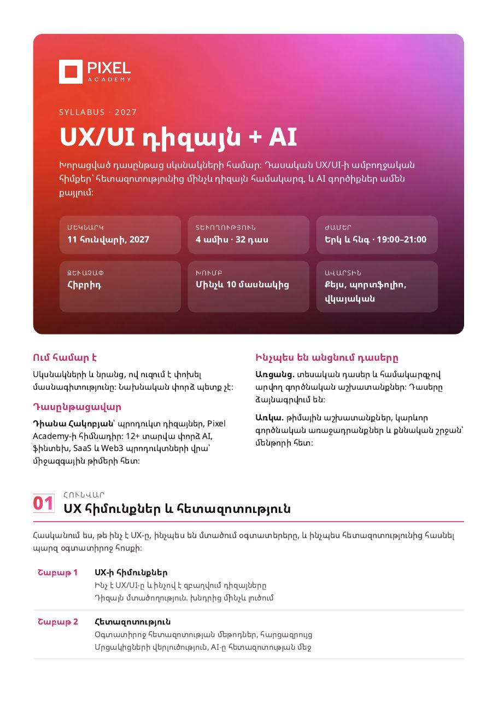
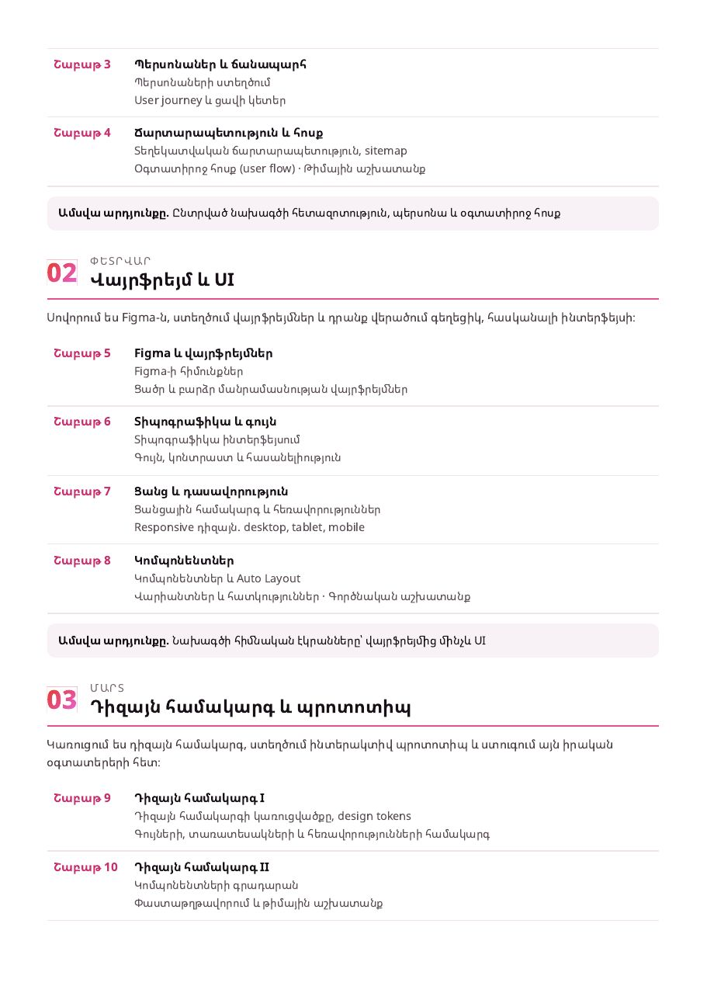
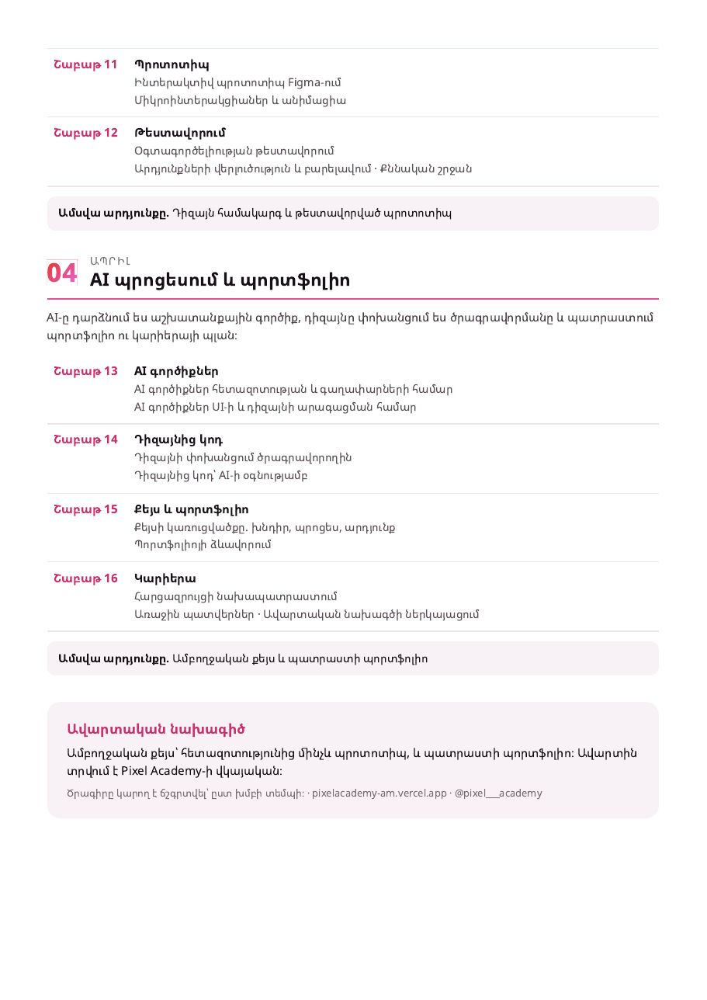

<title>Pixel Content Hub</title>
<meta name="claude:viewport-fit-sides" content="cover">
<link rel="preconnect" href="https://fonts.googleapis.com">
<link href="https://fonts.googleapis.com/css2?family=Noto+Sans+Armenian:wght@400;500;700;800&family=JetBrains+Mono:wght@400;500&display=swap" rel="stylesheet">
<style>
/* Layout: sticky brand header with tabs; one column of content cards, 2-col on wide screens for reels */
:root{
  --bg:#fbf7f9; --surface:#ffffff; --sunk:#f4edf1; --line:#eadfe5;
  --fg:#1b1218; --muted:#6f6169; --faint:#a8999f;
  --orange:#E43B25; --rose:#E84F8B; --pink:#E86AE0; --accent:#D8336F;
  --done-bg:#f1eef0; --done-fg:#a39aa0; --ok:#1f8a5b;
  --grad:linear-gradient(135deg,var(--orange) 0%,var(--rose) 55%,var(--pink) 100%);
  --f-display:"Noto Sans Armenian",system-ui,sans-serif;
  --f-body:"Noto Sans Armenian",system-ui,-apple-system,"Segoe UI",sans-serif;
  --f-mono:"JetBrains Mono",ui-monospace,Menlo,Consolas,monospace;
  --r:14px;
}
@media (prefers-color-scheme: dark){:root:not([data-theme="light"]){
  --bg:#130b10; --surface:#1d1319; --sunk:#26191f; --line:#34242c;
  --fg:#f6edf2; --muted:#b9a8b1; --faint:#7f6d77; --accent:#FF6FA3;
  --done-bg:#1a1217; --done-fg:#6f6068; --ok:#4cc58e; color-scheme:dark}}
:root[data-theme="dark"]{
  --bg:#130b10; --surface:#1d1319; --sunk:#26191f; --line:#34242c;
  --fg:#f6edf2; --muted:#b9a8b1; --faint:#7f6d77; --accent:#FF6FA3;
  --done-bg:#1a1217; --done-fg:#6f6068; --ok:#4cc58e; color-scheme:dark}
*{box-sizing:border-box}
body{background:var(--bg);color:var(--fg);font-family:var(--f-body);font-size:15px;line-height:1.55;margin:0}
body::before{content:"";position:fixed;inset:0 0 auto;height:env(safe-area-inset-top,0px);z-index:10;background:#1b0b12}
.wrap{max-width:1080px;margin:0 auto;padding-left:max(16px,env(safe-area-inset-left,0px));padding-right:max(16px,env(safe-area-inset-right,0px))}
header{position:sticky;top:env(safe-area-inset-top,0px);z-index:5;background:#1b0b12;color:#fff}
.brand{display:flex;align-items:center;gap:12px;padding-block:14px 8px}
.mark{width:30px;height:30px;border:6px solid #fff;flex:none}
.brand h1{font-family:var(--f-display);font-size:18px;font-weight:800;margin:0;letter-spacing:.01em}
.brand .sub{font-size:12px;color:#d9c6cf;margin-left:auto;text-align:right}
.bar{height:3px;background:var(--grad)}
nav{display:flex;gap:4px;overflow-x:auto;padding-block:6px 10px;scrollbar-width:none}
nav a{flex:none;color:#e8d8e0;text-decoration:none;font-weight:500;font-size:14px;padding:7px 14px;border-radius:999px}
nav a[aria-current="page"]{background:var(--grad);color:#fff}
nav a:focus-visible,button:focus-visible,summary:focus-visible{outline:2px solid var(--accent);outline-offset:2px}
main{padding-block:24px 64px}
h2{font-family:var(--f-display);font-weight:800;font-size:26px;line-height:1.2;margin:0 0 6px;text-wrap:balance}
.lede{color:var(--muted);margin:0 0 22px;max-width:65ch}
.eyebrow{font-size:11.5px;letter-spacing:.12em;text-transform:uppercase;color:var(--muted);font-weight:700}
.status-note{font-size:12.5px;color:var(--muted);margin:-12px 0 18px}
/* updates */
.log{display:flex;flex-direction:column;gap:14px}
.day{background:var(--surface);border:1px solid var(--line);border-radius:var(--r);padding:16px 18px}
.day.today{border-color:transparent;background:linear-gradient(var(--surface),var(--surface)) padding-box,var(--grad) border-box;border:2px solid transparent}
.day h3{margin:0 0 8px;font-size:15px;display:flex;gap:10px;align-items:center}
.pill{font-size:11px;font-weight:700;padding:2px 9px;border-radius:999px;background:var(--grad);color:#fff}
.day ul{margin:0;padding-left:18px}.day li{margin:3px 0}
/* reels */
.filters{display:flex;gap:8px;flex-wrap:wrap;margin-bottom:16px}
.chip{border:1px solid var(--line);background:var(--surface);color:var(--fg);border-radius:999px;padding:6px 12px;font:inherit;font-size:13px;cursor:pointer}
.chip[aria-pressed="true"]{border-color:var(--accent);color:var(--accent);font-weight:700}
.reels{display:flex;flex-direction:column;gap:16px}
.reel{background:var(--surface);border:1px solid var(--line);border-radius:var(--r);overflow:hidden}
.reel.is-done{background:var(--done-bg);color:var(--done-fg)}
.reel.is-done .wf svg{opacity:.45}
.reel-head{display:flex;gap:14px;align-items:flex-start;padding:16px 18px;border-bottom:1px solid var(--line)}
.code{font-family:var(--f-mono);font-weight:500;font-size:13px;padding:3px 8px;border-radius:8px;background:var(--sunk);flex:none}
.reel-head h3{margin:0;font-size:17px;line-height:1.3;text-wrap:balance}
.hook{margin:4px 0 0;color:var(--muted);font-size:14px}
.reel.is-done .hook{color:var(--done-fg)}
.meta{display:flex;gap:6px;flex-wrap:wrap;margin-top:8px}
.tag{font-size:11.5px;border:1px solid var(--line);border-radius:999px;padding:1px 8px;color:var(--muted)}
.tag.kw{border-color:var(--accent);color:var(--accent);font-weight:700}
.donebtn{margin-left:auto;flex:none;border:1px solid var(--line);background:var(--surface);color:var(--fg);border-radius:999px;padding:6px 12px;font:inherit;font-size:13px;cursor:pointer;white-space:nowrap}
.is-done .donebtn{background:var(--ok);border-color:var(--ok);color:#fff}
.tabs2{display:flex;gap:2px;padding:10px 18px 0;overflow-x:auto}
.tabs2 button{border:0;background:none;font:inherit;font-size:13.5px;color:var(--muted);padding:8px 12px;border-bottom:2px solid transparent;cursor:pointer;white-space:nowrap}
.tabs2 button[aria-selected="true"]{color:var(--fg);border-bottom-color:var(--accent);font-weight:700}
.panel{padding:14px 18px 18px}
.script{display:grid;grid-template-columns:minmax(0,1fr) 300px;gap:20px}
@media (max-width:760px){.script{grid-template-columns:minmax(0,1fr)}}
ol.lines{margin:0;padding-left:20px}ol.lines li{margin:6px 0}
.wf{display:flex;gap:10px;overflow-x:auto}
.wf figure{margin:0;flex:none;width:92px}
.wf svg{width:92px;height:auto;display:block}
.wf figcaption{font-size:11px;color:var(--muted);margin-top:4px;line-height:1.35}
.block{position:relative;background:var(--sunk);border-radius:10px;padding:12px 14px;margin-top:6px;min-width:0}
pre.block{font-family:var(--f-mono);font-size:12.5px;line-height:1.5;white-space:pre-wrap;overflow-x:auto;margin:6px 0 0;padding-right:84px}
.txt{white-space:pre-wrap;font-size:14px;padding-right:84px}
.copy{position:absolute;top:8px;right:8px;border:1px solid var(--line);background:var(--surface);color:var(--fg);border-radius:8px;font:inherit;font-size:12px;padding:4px 10px;cursor:pointer}
.copy.ok{background:var(--ok);border-color:var(--ok);color:#fff}
.label{font-size:12px;font-weight:700;color:var(--muted);margin-top:14px}
.label:first-child{margin-top:0}
/* calendar */
.weeks{display:flex;flex-direction:column;gap:12px}
details.week{background:var(--surface);border:1px solid var(--line);border-radius:var(--r)}
details.week.is-done{background:var(--done-bg);color:var(--done-fg)}
details.week summary{list-style:none;cursor:pointer;padding:14px 18px;display:flex;gap:12px;align-items:center}
details.week summary::-webkit-details-marker{display:none}
.folder{width:26px;height:20px;flex:none;border-radius:3px 5px 5px 5px;background:var(--grad);position:relative}
.folder::before{content:"";position:absolute;left:0;top:-5px;width:11px;height:6px;border-radius:3px 3px 0 0;background:inherit}
.is-done .folder{background:var(--done-fg)}
.week h3{margin:0;font-size:15.5px}
.week .range{font-size:12.5px;color:var(--muted)}
.prog{margin-left:auto;font-size:12.5px;font-variant-numeric:tabular-nums;color:var(--muted);white-space:nowrap}
.items{list-style:none;margin:0;padding:0 18px 14px;display:flex;flex-direction:column;gap:6px}
.item{display:grid;grid-template-columns:24px 64px minmax(0,1fr) auto;gap:10px;align-items:center;padding:8px 10px;border-radius:10px;background:var(--sunk)}
.item.is-done{background:transparent;color:var(--done-fg);text-decoration:line-through}
.item input{width:18px;height:18px;accent-color:var(--ok);cursor:pointer}
.when{font-size:12.5px;font-variant-numeric:tabular-nums;color:var(--muted)}
.kind{font-size:11px;border-radius:999px;padding:1px 8px;border:1px solid var(--line);color:var(--muted);text-decoration:none}
.kind.reel-k{border-color:var(--accent);color:var(--accent)}
.item a{color:inherit}
@media (max-width:520px){.item{grid-template-columns:24px minmax(0,1fr) auto}.when{display:none}}
/* howto */
.steps{display:flex;flex-direction:column;gap:14px}
.step{background:var(--surface);border:1px solid var(--line);border-radius:var(--r);padding:16px 18px}
.step h3{margin:0 0 8px;font-size:16px}
.step ol,.step ul{margin:0;padding-left:20px}.step li{margin:4px 0}
.step .note{font-size:13px;color:var(--muted);margin-top:8px}
.flow{display:flex;flex-wrap:wrap;gap:6px;align-items:center;margin:6px 0 10px}
.flow span{background:var(--sunk);border-radius:8px;padding:5px 10px;font-size:13px}
.flow i{font-style:normal;color:var(--faint)}
/* guides */
.guides{display:grid;grid-template-columns:repeat(auto-fill,minmax(240px,1fr));gap:12px}
.guide{background:var(--surface);border:1px solid var(--line);border-radius:var(--r);padding:16px}
.guide h3{margin:4px 0 6px;font-size:15.5px}
.guide p{margin:0;color:var(--muted);font-size:13.5px}
.guide a.open{display:inline-block;margin-top:10px;color:#fff;background:var(--grad);text-decoration:none;font-weight:700;font-size:13px;padding:6px 12px;border-radius:999px}
.soon{display:inline-block;margin-top:10px;font-size:12px;color:var(--muted)}
.gbtns{display:flex;gap:8px;flex-wrap:wrap;margin-top:10px}
.guide button.open{border:0;cursor:pointer;font:inherit;font-weight:700;font-size:13px;color:#fff;background:var(--grad);padding:6px 12px;border-radius:999px}
.guide button.open.alt{background:var(--surface);color:var(--accent);border:1px solid var(--accent)}
.dlnote{font-size:12.5px;color:var(--muted);margin:6px 0 0}
.dlnote:empty{display:none}
.gpages{display:flex;flex-direction:column;gap:10px;margin-top:12px}
.gpages img{width:100%;border-radius:8px;border:1px solid var(--line);display:block}
.guides .guide:has(.gpages:not([hidden])){grid-column:1/-1}
[hidden]{display:none!important}
.brands{display:flex;gap:6px;padding-block:2px 6px}
.brands a{color:#e8d8e0;text-decoration:none;font-size:13px;font-weight:700;padding:5px 12px;border-radius:8px;border:1px solid rgba(255,255,255,.18)}
.brands a[aria-selected="true"]{background:#fff;color:#1b0b12;border-color:#fff}
.dsec .item-card{background:var(--surface);border:1px solid var(--line);border-radius:var(--r);margin-bottom:12px}
.dsec .item-card.is-done{background:var(--done-bg);color:var(--done-fg)}
.dsec details summary{list-style:none;cursor:pointer;padding:14px 18px;display:flex;gap:12px;align-items:flex-start}
.dsec details summary::-webkit-details-marker{display:none}
.dsec .badge{font-size:11.5px;border:1px solid var(--line);border-radius:999px;padding:1px 9px;color:var(--muted);white-space:nowrap}
.dsec h3{margin:4px 0 0;font-size:16.5px;line-height:1.35;text-wrap:balance}
.dsec .ibody{padding:0 18px 16px;display:flex;flex-direction:column;gap:10px}
.dsec .slides{margin:0;padding-left:20px}.dsec .slides li{margin:4px 0}
.dsec .howto{border-left:3px solid var(--accent);padding:8px 12px;background:var(--sunk);border-radius:0 10px 10px 0}
.dsec .howto ol{margin:6px 0 0;padding-left:20px}.dsec .howto li{margin:3px 0}
.dsec .howto a{color:var(--accent)}
.dsec .group{font-size:13px;font-weight:700;color:var(--muted);margin:18px 0 8px;text-transform:uppercase;letter-spacing:.06em}
.dsec .cue{display:inline-block;margin:2px 0 6px;font-size:12px;font-weight:700;color:var(--accent);background:var(--surface);border:1px solid var(--accent);border-radius:999px;padding:1px 8px}
.dsec .savecard{border-radius:12px;padding:12px 14px;color:#fff;background:var(--grad)}
.dsec .savecard ol{margin:6px 0 0;padding-left:20px}.dsec .savecard li{margin:2px 0}
.dsec .pause{display:block;width:max-content;margin:4px 0;font-size:11.5px;color:var(--muted);border:1px dashed var(--line);border-radius:999px;padding:0 8px}
.dsec .mine{display:block;margin:4px 0;font-size:13px;font-weight:700;color:#8a5a00;background:#fff3d6;border-radius:8px;padding:4px 8px}
.dsec .rv{font-size:13px;color:var(--muted);background:var(--sunk);border-radius:10px;padding:8px 12px}
.tierb,.rank .tier{display:inline-grid;place-items:center;width:22px;height:22px;border-radius:6px;font-size:12px;font-weight:800;color:#fff;background:var(--faint)}
.tierb.tA,.rank .tA .tier{background:var(--accent)}.tierb.tB,.rank .tB .tier{background:#c98a1a}
.rank{width:100%;border-collapse:collapse;font-size:14px}.rank th{font-size:11.5px;text-transform:uppercase;letter-spacing:.06em;color:var(--muted);text-align:left;padding:6px 8px}
.rank td{padding:9px 8px;border-top:1px solid var(--line);vertical-align:top}.rank td span{font-size:12.5px;color:var(--muted)}.rank .fix{color:var(--accent)}
.rank .num{font-variant-numeric:tabular-nums;text-align:center;width:44px}.rank .tC td b{color:var(--muted)}
.dsec .tags{font-size:13px;color:var(--muted)}
@media (prefers-reduced-motion:no-preference){.chip,.donebtn,.copy,nav a{transition:background .15s,color .15s,border-color .15s}}
</style>

<header>
  <div class="wrap">
    <div class="brand"><div class="mark" aria-hidden="true"></div><h1 id="brand-title">Pixel Content Hub</h1><div class="sub" id="today"></div></div>
    <div class="brands" role="tablist" aria-label="Բրենդ"><a href="#updates" id="b-pixel" role="tab">Pixel Academy</a><a href="#d-rank" id="b-diana" role="tab">Դիանա Հակոբյան</a><a href="#e-plan" id="b-dee" role="tab">Dee Design</a></div>
    <nav aria-label="Pixel Academy բաժիններ" id="nav-pixel">
      <a href="#updates">Թարմացումներ</a>
      <a href="#reels">Reels</a>
      <a href="#calendar">Օրացույց</a>
      <a href="#howto">Ինչպես անել</a>
      <a href="#emails">📌 Նամակ</a>
      <a href="#guides">Guide-ներ</a>
    </nav>
    <nav aria-label="Դիանա Հակոբյան բաժիններ" id="nav-diana" hidden>
      <a href="#d-rank">⭐ Գնահատական</a>
      <a href="#d-intro">Սկիզբ · 1</a>
      <a href="#d-life">Կյանք և աշխատանք · 20</a>
      <a href="#d-mentor">Մենթորություն · 19</a>
      <a href="#d-team">Թիմեր և HR · 9</a>
      <a href="#d-business">Բիզնես · 9</a>
      <a href="#d-ai">AI և շուկա · 9</a>
      <a href="#d-edits">Կարճ edits · 22</a>
      <a href="#d-carousels">Carousel · 8</a>
      <a href="#d-photos">Լուսանկար · 17</a>
      <a href="#d-next">Հաջորդ թեմաներ · 20</a>
    </nav>
    <nav aria-label="Dee Design բաժիններ" id="nav-dee" hidden>
      <a href="#e-plan">Պլան և bio · 4</a>
      <a href="#e-reels">Reels · 14</a>
      <a href="#e-linkedin">LinkedIn · 3</a>
      <a href="#e-posts">Պոստեր · 2</a>
    </nav>
  </div>
  <div class="bar"></div>
</header>

<main class="wrap">
  <section id="v-updates" data-view="updates">
    <div class="eyebrow">Ինչ է նոր</div>
    <h2>Թարմացումներ</h2>
    <p class="lede">Ամեն անգամ, երբ ինչ-որ բան ավելացնեմ, այն կհայտնվի այստեղ՝ ամենանորը վերևում։</p>
    <div class="log" id="log"></div>
  </section>

  <section id="v-reels" data-view="reels" hidden>
    <div class="eyebrow">Pixel Academy · հայերեն · դեմքով + էկրան</div>
    <h2>Reels. սցենար, caption, prompt</h2>
    <p class="lede">Յուրաքանչյուր reel-ում կա ձայնի տեքստը, wireframe-ը (ինչպես է երևում կադրը), caption-ը և prompt-ը copy անելու համար։ Նկարելուց հետո սեղմիր «Արված է», ու reel-ը կմոխրանա։</p>
    <p class="status-note" id="sync-note"></p>
    <div class="filters" role="group" aria-label="Ֆիլտր">
      <button class="chip" data-f="all" aria-pressed="true">Բոլորը</button>
      <button class="chip" data-f="todo" aria-pressed="false">Մնացածը</button>
      <button class="chip" data-f="done" aria-pressed="false">Արված</button>
    </div>
    <div class="reels" id="reels"></div>
  </section>

  <section id="v-calendar" data-view="calendar" hidden>
    <div class="eyebrow">Նոյեմբեր–դեկտեմբեր 2026</div>
    <h2>Օրացույց</h2>
    <p class="lede">Յուրաքանչյուր շաբաթը առանձին թղթապանակ է։ Նշիր արվածը, և երբ շաբաթի բոլոր գործերը արված լինեն, թղթապանակը կմոխրանա։ Reel-ի վրա սեղմելով կբացվի նրա սցենարը։</p>
    <div class="weeks" id="weeks"></div>
  </section>

  <section id="v-howto" data-view="howto" hidden>
    <div class="eyebrow">Քայլ առ քայլ</div>
    <h2>Ինչպես անել ամեն ինչ</h2>
    <p class="lede">Շաբաթվա ռիթմը, նկարահանումը, հրապարակումը և comment → follow → guide համակարգը։</p>
    <div class="steps">
      <div class="step">
        <h3>1. Շաբաթվա ռիթմ</h3>
        <ul>
          <li><b>Երկուշաբթի առավոտ.</b> կարդա շաբաթական ռեպորտը, ես եմ ուղարկում։ 5 րոպե։</li>
          <li><b>Չորեքշաբթի.</b> նկարիր 3–4 reel մեկ նստած, 30–40 րոպե, նույն շորերով։</li>
          <li><b>Երեքշաբթի և ուրբաթ, 19:30–20:00.</b> հրապարակիր reel-ը։</li>
          <li><b>Հրապարակելուց հետո 30 րոպե.</b> պատասխանիր comment-ներին և կիսիր story-ում։</li>
          <li><b>Այստեղ.</b> նշիր «Արված է», որ օրացույցը թարմ լինի։</li>
        </ul>
      </div>
      <div class="step">
        <h3>2. Ինչպես նկարել tutorial reel</h3>
        <ol>
          <li>Ձայնագրիր էկրանը (Mac՝ Cmd+Shift+5, iPhone՝ Screen Recording)։ Prompt-ը copy արա այստեղից։</li>
          <li>Նկարիր քեզ հեռախոսով, պատուհանի լույսի մոտ, ձայնը՝ միկրոֆոնով։ Կարդա «Սցենար» բաժնի տողերը։</li>
          <li>CapCut-ում. վերևում դու (40%), ներքևում էկրանը (60%), ինչպես wireframe-ում։</li>
          <li>Auto captions → ստուգիր հայերեն բառերը։ Cover-ի վրա գրիր hook-ը։</li>
          <li>Վերջին 3 վայրկյանում էկրանին գրիր keyword-ը, օրինակ՝ «Գրիր CLAUDE»։</li>
        </ol>
      </div>
      <div class="step">
        <h3>3. Comment → Guide</h3>
        <p class="note" style="margin:0 0 10px">✅ Միացված է Meta Business Suite-ում (Inbox → Automations), keyword՝ CLAUDE, բոլոր պոստերի համար։ Ստուգված է 07.11-ին։ Guide-ի հղումը՝ drive.google.com/file/d/1tSCje1-4Si30R_mIMdJVGAWyzKvqN683։ ManyChat-ը պետք կգա միայն եթե ուզես follow-ի ստուգում։</p>
        <div class="flow"><span>Comment «CLAUDE»</span><i>→</i><span>Ավտոպատասխան comment-ին</span><i>→</i><span>DM + կոճակ</span><i>→</i><span>Follow-ի ստուգում</span><i>→</i><span>Guide-ի հղումը</span></div>
        <ol>
          <li>Գրանցվիր manychat.com-ում և միացրու <b>@pixel___academy</b> Instagram հաշիվը։</li>
          <li>Automation → New → Instagram → trigger «User comments on your post or reel» → ընտրիր reel-ը → keyword <b>CLAUDE</b>։</li>
          <li>Միացրու ավտոպատասխանը comment-ին. «Ուղարկեցինք անձնական նամակով 📩», «Ստուգիր նամակներդ 🙂», «Guide-ը քո DM-ում է ✨»։</li>
          <li>Ուղարկիր DM՝ «Բարև 🙂 Guide-ը պատրաստ է։ Ստանալու համար հետևիր @pixel___academy էջին և սեղմիր կոճակը 👇» և կոճակ «Հետևեցի ✅»։</li>
          <li>Կոճակից հետո ավելացրու պայման՝ «follows your account»։ <b>Այո →</b> ուղարկիր guide-ի հղումը։ <b>Ոչ →</b> «Կարծես դեռ չես հետևում 🙂 Հետևիր և նորից սեղմիր կոճակը»։</li>
          <li>Փորձիր ուրիշ հաշվից, հետո միացրու automation-ը։</li>
        </ol>
        <p class="note">Մենյուների անունները կարող են մի փոքր տարբեր լինել։ Instagram-ը թույլ է տալիս մեկ ավտոմատ պատասխան յուրաքանչյուր comment-ին։ Կոճակը սեղմելուց հետո բացվում է 24 ժամվա պատուհան։ ManyChat-ի գինը և պլանները ստուգիր նրանց կայքում։</p>
      </div>
      <div class="step">
        <h3>4. Guide-ի հղումը</h3>
        <ol>
          <li>Ներբեռնիր PDF-ը «Guide-ներ» բաժնից։</li>
          <li>Վերբեռնիր Google Drive → Share → «Anyone with the link»։</li>
          <li>Այդ հղումը դիր ManyChat-ի «Այո» նամակի մեջ։</li>
        </ol>
      </div>
      <div class="step">
        <h3>5. Ինչպես ինձնից նորը խնդրել</h3>
        <ul>
          <li>Գրիր chat-ում, օրինակ՝ «ավելացրու hub-ում U4-ի սցենարը» կամ «նոր շաբաթ ավելացրու»։</li>
          <li>Ես կթարմացնեմ այս էջը, և «Թարմացումներ» բաժնում կգրեմ, թե ինչ է փոխվել։ Հղումը նույնն է մնում։</li>
        </ul>
      </div>
    </div>
  </section>

  <section id="v-emails" data-view="emails" hidden>
    <div class="eyebrow">📌 Ամրացված · UX/UI դիզայն + AI</div>
    <h2>Նամակ գրանցվածներին</h2>
    <p class="lede">Այս նամակը ուղարկիր բոլոր նրանց, ովքեր գրանցվում են «UX/UI դիզայն + AI» դասընթացին։ Syllabus-ը արդեն կցված է Gmail-ի սևագրում։</p>
    <div class="steps">
      <div class="step">
        <h3>Ինչպես ուղարկել</h3>
        <ol>
          <li>Բացիր Gmail-ի սևագիրը (dee.productdesign@gmail.com հաշվում) → <a href="https://mail.google.com/mail/?authuser=dee.productdesign@gmail.com#drafts" target="_blank" rel="noopener">Drafts</a> → «Բարի գալուստ Pixel Academy · UX/UI դիզայն + AI դասընթաց»։</li>
          <li>Սևագիրը չուղարկես անմիջապես. դա ձևանմուշ է։ Սեղմիր ⋯ → «Forward» կամ copy արա տեքստը նոր նամակի մեջ և կցիր syllabus-ը ստորևից։</li>
          <li>«To» դաշտում գրիր ուսանողի email-ը, իսկ [Անուն]-ը փոխիր նրա անունով։</li>
        </ol>
        <p class="note">Ավելի հարմար տարբերակ. Gmail → Settings → Advanced → Templates → Enable, հետո պահիր այս տեքստը որպես template։ Հետագայում ամեն նամակում՝ ⋯ → Templates → ընտրիր։</p>
      </div>
      <div class="step">
        <h3>Նամակի տեքստը</h3>
        <p class="note" style="margin:0 0 6px">Թեմա. Բարի գալուստ Pixel Academy · UX/UI դիզայն + AI դասընթաց</p>
        <div class="block txt" id="email-uxui">Բարև Ձեզ, [Անուն] 🙂

Շնորհակալ ենք, որ գրանցվեցիք «UX/UI դիզայն + AI» 4-ամսյա խորացված դասընթացին։ Ուրախ ենք, որ մեզ հետ եք։

Դասընթացը՝ մի հայացքով
▫️ Մեկնարկ՝ 11 հունվարի, 2027
▫️ Տևողություն՝ 4 ամիս, 32 դաս
▫️ Ժամեր՝ երկուշաբթի և հինգշաբթի, 19:00–21:00
▫️ Ձևաչափ՝ հիբրիդ
▫️ Խումբ՝ 4-ից 10 մասնակից
▫️ Դասընթացավար՝ Դիանա Հակոբյան, պրոդուկտ դիզայներ, Pixel Academy-ի հիմնադիր
▫️ Ավարտին՝ ամբողջական քեյս, պատրաստի պորտֆոլիո և Pixel Academy-ի վկայական

Ծրագիրը
Հունվար՝ UX հիմունքներ և հետազոտություն
Փետրվար՝ վայրֆրեյմ և UI
Մարտ՝ դիզայն համակարգ և պրոտոտիպ
Ապրիլ՝ AI պրոցեսում և պորտֆոլիո

Թեմաները.
1. UX-ի հիմունքներ և դիզայն մտածողություն
2. Օգտատիրոջ հետազոտություն և պերսոնաներ
3. Տեղեկատվական ճարտարապետություն և օգտատիրոջ հոսք
4. Վայրֆրեյմներ Figma-ում
5. UI՝ տիպոգրաֆիկա, գույն, ցանց
6. Կոմպոնենտներ, Auto Layout և վարիանտներ
7. Դիզայն համակարգեր
8. Պրոտոտիպ և օգտագործելիության թեստավորում
9. AI գործիքներ հետազոտության և UI-ի համար
10. Դիզայնից կոդ՝ AI-ի օգնությամբ
11. Քեյս և պորտֆոլիո
12. Կարիերա՝ հարցազրույց և առաջին պատվերներ

Մանրամասն syllabus-ը՝ շաբաթ առ շաբաթ, կցված է նամակին։

Ինչպես է անցնում դասընթացը
▫️ Առցանց՝ տեսական դասերը և համակարգչով արվող գործնական աշխատանքները։ Բոլոր առցանց դասերը ձայնագրվում են, և կարող եք դրանք նորից դիտել։
▫️ Առկա՝ թիմային աշխատանքները, կարևոր գործնական առաջադրանքները և քննական շրջանը։ Այս դասերին մենթորը Ձեզ հետ է, և մենք աշխատում ենք միասին։

Վճարում
Դասընթացի արժեքը՝ 70 000 ֏ ամսական։
Այս պահին վճարումներ չենք ընդունում։ Նախ հավաքում ենք ամբողջ խումբը, և երբ այն ձևավորվի, Ձեզ կտեղեկացնենք։ Այդպես ամեն ինչ պարզ ու հարմար կլինի բոլորի համար։
Վճարումը կատարվում է երկու մասով.
▫️ 50%՝ տեղը ամրագրելու համար, խմբի ձևավորումից հետո
▫️ 50%՝ դասընթացի ընթացքում
Եթե 50%-ը միանգամից հարմար չէ, կարող ենք պայմանավորվել 25%-ով, իսկ մնացածը կարող եք վճարել աստիճանաբար՝ մինչև դասընթացի ավարտը։

Հարցերի դեպքում գրեք մեզ՝ պատասխանելով այս նամակին կամ Instagram-ում՝ @pixel___academy։

Սպասում ենք Ձեզ 🤍
Pixel Academy-ի թիմ<button class="copy" data-copy-el="email-uxui">Copy</button></div>
      </div>
      <div class="guide">
        <span class="tag kw">PDF · 3 էջ</span>
        <h3>Syllabus · UX/UI դիզայն + AI</h3>
        <p>Կցիր այս ֆայլը նամակին կամ ուղարկիր Drive-ի հղումը (WhatsApp, Telegram, Instagram)։</p>
        <p style="margin-top:6px;font-size:13px;word-break:break-all"><a href="https://drive.google.com/file/d/1sIqhpTOAbb6-eq8Pvaj7nN_l8Yt8_FPO/view?usp=sharing" target="_blank" rel="noopener">drive.google.com/file/d/1sIqhpTOAbb6-eq8Pvaj7nN_l8Yt8_FPO</a></p>
        <div class="gbtns"><button class="open" data-view-guide="SYL" aria-expanded="false">Դիտել</button><button class="open alt" data-dl="SYL">Ներբեռնել PDF</button></div>
        <p class="dlnote" id="dln-SYL"></p>
        <div class="gpages" id="gp-SYL" hidden></div>
      </div>
    </div>
  </section>


  <section id="v-d-rank" data-view="d-rank" class="dsec" hidden>
    <div class="eyebrow">Դիանա Հակոբյան · քննադատական գնահատական</div>
    <h2>Որ reel-երն են ամենաուժեղը</h2>
    <p class="lede">A՝ նկարիր առաջինը (19 թեմա)։ B՝ լավն են, բայց ավելի նեղ (32)։ C՝ ընդհանուր են կամ կրկնվում են, թող վերջում կամ միավորիր (8)։ Թվերը գնահատական են 1–5 սանդղակով՝ save, share, like։</p>
    <div style="overflow-x:auto"><table class="rank"><thead><tr><th></th><th>Թեմա</th><th>Save</th><th>Share</th><th>Like</th></tr></thead><tbody><tr class="tA"><td><b class="tier">A</b></td><td><b>Երբ հարազատդ ասում է՝ «Չի ստացվի»</b><br><span>Կյանք և աշխատանք · Շատ ճանաչելի հայկական ընտանեկան իրավիճակ, որը մարդիկ կուղարկեն հենց իրենց հարազատներին։</span><br><span class=fix>✎ Մեկ տող քո կյանքից՝ ով քեզ ասաց «չի ստացվի», կդարձնի այն իսկապես անձնական։</span></td><td class="num">4</td><td class="num">5</td><td class="num">5</td></tr><tr class="tA"><td><b class="tier">A</b></td><td><b>Բացում ես LinkedIn-ը, ու բոլորը քեզնից առաջ են</b><br><span>Կյանք և աշխատանք · Համեմատության զգացումը ծանոթ է բոլոր մասնագետներին, իսկ «ամբողջ ճանապարհ ընդդեմ մեկ գրառման» միտքը հիշվում է։</span><br><span class=fix>✎ Ասա, թե դու ինքդ ում հետ էիր համեմատվում, այլապես տաքությունը պակասում է։</span></td><td class="num">4</td><td class="num">5</td><td class="num">5</td></tr><tr class="tA"><td><b class="tier">A</b></td><td><b>«Դուր չի՞ գալիս աշխատանքդ, դուրս արի»․ այդքան պարզ չէ</b><br><span>Կյանք և աշխատանք · Շատերին ցավ տված խորհրդի անկեղծ պատասխան է. մարդիկ իրենց կճանաչեն ու կուղարկեն։</span><br><span class=fix>✎ Պահպանել հանգիստ տոնը, որ չհնչի որպես «մնացեք վատ աշխատանքում»։</span></td><td class="num">4</td><td class="num">5</td><td class="num">5</td></tr><tr class="tA"><td><b class="tier">A</b></td><td><b>Եթե 20 տարի հետո տղաս հարցնի՝ «Իսկ եթե չստացվի՞»</b><br><span>Կյանք և աշխատանք · Ամենաանձնական ու ջերմ ռիլն է. ծնողներն ու երեխաները հավասարապես կճանաչեն իրենց։</span><br><span class=fix>✎ Չծանրաբեռնել մոնտաժով. դադարներն ու հանգիստ ձայնն են անում ամբողջ գործը։</span></td><td class="num">4</td><td class="num">5</td><td class="num">5</td></tr><tr class="tA"><td><b class="tier">A</b></td><td><b>CV-ում «պատասխանատու էի»-ն քիչ է</b><br><span>Մենթորություն · Բոլորն ունեն այդ արտահայտությունը CV-ում․ ճանաչելի է վայրկյանում և անմիջապես ուղղելի։</span><br><span class=fix>✎ Ավելի ուժեղ կլինի, եթե էկրանին ցույց տաս մեկ տողի «մինչև/հետո» տարբերակը։</span></td><td class="num">5</td><td class="num">5</td><td class="num">4</td></tr><tr class="tA"><td><b class="tier">A</b></td><td><b>Ինչպես ChatGPT-ով ստուգել CV-ն կոնկրետ հաստիքի համար</b><br><span>Մենթորություն · Աշխատանք փնտրող յուրաքանչյուր մարդ ստանում է կրկնվող գործիք, և «մինչև/հետո»-ն էկրանին լավ է երևում։</span><br><span class=fix>✎ Ավելացնել մեկ տող Դիանայի փորձից՝ ինչ է նա նկատում CV կարդալիս որպես գործատու։</span></td><td class="num">5</td><td class="num">5</td><td class="num">4</td></tr><tr class="tA"><td><b class="tier">A</b></td><td><b>«Մենք այստեղ ընտանիք ենք». ի՞նչ է դա նշանակում</b><br><span>Թիմեր և HR · Արտահայտությունը բոլորն են լսել, ճանաչում են վայրկյանում, և կա երեք պատրաստի հարց։</span><br><span class=fix>✎ Ավելացրու քո իրական դեպքը, թե չէ կմնա ընդհանուր դատողություն։</span></td><td class="num">4</td><td class="num">5</td><td class="num">5</td></tr><tr class="tA"><td><b class="tier">A</b></td><td><b>«Ինձ դուր չի գալիս»-ը դեռ feedback չէ</b><br><span>Թիմեր և HR · Բոլորն են ստացել նման «feedback», իսկ երկու պատրաստի արտահայտությունը կարելի է վաղը կիրառել։</span><br><span class=fix>✎ Քո սեփական օրինակը դիզայներական փորձից կդարձնի այն անձնական։</span></td><td class="num">5</td><td class="num">5</td><td class="num">4</td></tr><tr class="tA"><td><b class="tier">A</b></td><td><b>Ինչու «մի փոքր փոփոխությունը» երբեմն մեծ աշխատանք է</b><br><span>Բիզնես · Բոլորը լսել են այս արտահայտությունը․ ճանաչելի է առաջին վայրկյանից և հեշտ է ուղարկել գործընկերոջը։</span><br><span class=fix>✎ Ավելացրու քո իրական «հինգ րոպեի» դեպքը՝ որքան տևեց իրականում։</span></td><td class="num">4</td><td class="num">5</td><td class="num">5</td></tr><tr class="tA"><td><b class="tier">A</b></td><td><b>Ուզում ես աշխատել միջազգային ընկերությունում, բայց դեռ չես դիմո՞ւմ</b><br><span>Կյանք և աշխատանք · Գրեթե բոլորը ճանաչում են «դեռ պատրաստ չեմ» պահը, իսկ երեք քայլը հեշտ է կիրառել։</span><br><span class=fix>✎ Ավելացրու քո իրական դիմելու կամ մերժման պատմությունը, առանց դրա խորհուրդը ընդհանուր է հնչում։</span></td><td class="num">4</td><td class="num">5</td><td class="num">4</td></tr><tr class="tA"><td><b class="tier">A</b></td><td><b>Աշխատավարձի բարձրացում խնդրելը լավություն խնդրել չէ</b><br><span>Կյանք և աշխատանք · Բոլորին ծանոթ անհարմարություն է, ու տալիս է քայլեր և պատրաստի նախադասություն։</span><br><span class=fix>✎ Ավելի ուժեղ կլինի, եթե պատմի՝ ինքն ինչպես է առաջին անգամ խնդրել։</span></td><td class="num">5</td><td class="num">4</td><td class="num">4</td></tr><tr class="tA"><td><b class="tier">A</b></td><td><b>Junior-ին առաջադրանք եք տալիս, բայց սպասելիքը չեք բացատրում</b><br><span>Մենթորություն · Ղեկավարն ու սկսնակը երկուսն էլ ճանաչում են իրավիճակը․ չորս կետը պատրաստի կաղապար է։</span><br><span class=fix>✎ Պատմիր քո թիմի իրական դեպքը, երբ անհստակ առաջադրանքն արժեցավ օրեր։</span></td><td class="num">5</td><td class="num">4</td><td class="num">4</td></tr><tr class="tA"><td><b class="tier">A</b></td><td><b>Ինչ ասել, երբ հանդիպմանը պատասխանը չգիտեք</b><br><span>Մենթորություն · Բոլորին ծանոթ անհարմար պահ է, և տրվում է պատրաստի նախադասություն, որը հենց վաղը կարելի է ասել։</span><br><span class=fix>✎ Պետք է Դիանայի իրական դեպքը՝ երբ ասաց «կճշտեմ», և ինչ եղավ հետո։</span></td><td class="num">5</td><td class="num">4</td><td class="num">4</td></tr><tr class="tA"><td><b class="tier">A</b></td><td><b>Երբ թիմում ամեն ինչ «շտապ» է</b><br><span>Թիմեր և HR · Ցավը ծանոթ է ցանկացած ոլորտում, իսկ մեկ նախադասությունը և երեք սյունակը հեշտ են կրկնել։</span><br><span class=fix>✎ Հուկը կուժեղանա, եթե պատմես քո թիմի մեկ իրական «շտապ» օրվա մասին։</span></td><td class="num">5</td><td class="num">4</td><td class="num">4</td></tr><tr class="tA"><td><b class="tier">A</b></td><td><b>Լուծում առաջարկելուց առաջ հասկացեք իրական խնդիրը</b><br><span>Բիզնես · Ծանոթ իրավիճակ է և պատրաստ երեք սյունակով սխեմա, որն աշխատում է ցանկացած ոլորտում։</span><br><span class=fix>✎ Ավելացրու մեկ իրական դեպք, երբ հաճախորդի ուզած լուծումը պետք չեկավ։</span></td><td class="num">5</td><td class="num">4</td><td class="num">4</td></tr><tr class="tA"><td><b class="tier">A</b></td><td><b>AI-ն կարող է շատ համոզիչ սխալվել</b><br><span>AI և շուկա · 2 մաս · Բոլորը AI-ի թվեր են օգտագործում, իսկ երեք ստուգումը կրկին ու կրկին կիրառելի է։</span><br><span class=fix>✎ Ավելացրու իրական դեպք, երբ AI-ի վստահ ասած թիվը սխալ դուրս եկավ։</span></td><td class="num">5</td><td class="num">4</td><td class="num">4</td></tr><tr class="tA"><td><b class="tier">A</b></td><td><b>Ո՞րն է ձեր արժեքը, երբ AI-ն ավելի արագ է</b><br><span>AI և շուկա · Դիպչում է բոլորի վախին՝ «իմ արժեքը ո՞րն է», և լսվում է նրա մենթորի ձայնը։</span><br><span class=fix>✎ Պատմիր մեկ նախագիծ, որտեղ որոշումը, ոչ թե արագությունն էր փրկում։</span></td><td class="num">3</td><td class="num">5</td><td class="num">5</td></tr><tr class="tA"><td><b class="tier">A</b></td><td><b>Առաջին հանդիպումը հաճախորդի հետ՝ 4 սլայդով</b><br><span>Մենթորություն · 2 մաս · Չորս սլայդի պատրաստի կաղապար և հարցում, որ ցանկացած մասնագետ կկրկնի հաջորդ հանդիպումից առաջ։</span><br><span class=fix>✎ Մաս 1-ում պակասում է քո իրական հանդիպման մեկ դրվագ․ առանց դրա չոր է հնչում։</span></td><td class="num">5</td><td class="num">4</td><td class="num">3</td></tr><tr class="tA"><td><b class="tier">A</b></td><td><b>Հանդիպումից հետո ոչինչ չմոռանալու պարզ համակարգ</b><br><span>Բիզնես · 2 մաս · Բոլորին ծանոթ ցավ է և պատրաստ կաղապար, որը կարելի է կիրառել հենց այսօր։</span><br><span class=fix>✎ Մաս 2-ում ցույց տուր իրական ամփոփման օրինակ էկրանին, ոչ թե միայն բաժինների անունները։</span></td><td class="num">5</td><td class="num">4</td><td class="num">3</td></tr><tr class="tB"><td><b class="tier">B</b></td><td><b>Համակարգիչը փակել ես, բայց գործը գլխիցդ դուրս չի գալիս</b><br><span>Կյանք և աշխատանք · Շատ ճանաչելի երեկո և հինգ րոպեանոց սովորություն, որը օգտակար է ցանկացած մասնագիտության համար։</span><br><span class=fix>✎ «Օրը փակելու» խորհուրդը հաճախ է հանդիպում. տարբերվելու համար ցույց տուր քո իսկական գրառումը։</span></td><td class="num">5</td><td class="num">4</td><td class="num">4</td></tr><tr class="tB"><td><b class="tier">B</b></td><td><b>Երկու տարի նույն պաշտոնում. դա դեռ լճացում չէ</b><br><span>Կյանք և աշխատանք · Ամսվա վերջի երեք հարցը պատրաստի գործիք է, որը մարդիկ կպահեն ու կկրկնեն։</span><br><span class=fix>✎ Սկիզբը հարց է, ոչ թե իրավիճակ. ուժեղ կլինի քո կամ ուսանողիդ կոնկրետ «անտեսանելի աճի» օրինակով։</span></td><td class="num">5</td><td class="num">3</td><td class="num">4</td></tr><tr class="tB"><td><b class="tier">B</b></td><td><b>Թունավոր միջավայրը միշտ չէ, որ սկսվում է գոռոցից</b><br><span>Կյանք և աշխատանք · «Հանգիստ թունավորության» օրինակները ճանաչելի են, իսկ երեք հարցը օգնում է սթափ գնահատել։</span><br><span class=fix>✎ Սկիզբը ընդհանուր պնդում է. սկսիր «Դա պետք է հասկանայիք» արտահայտությունից, այն ավելի կպնի։</span></td><td class="num">4</td><td class="num">4</td><td class="num">4</td></tr><tr class="tB"><td><b class="tier">B</b></td><td><b>Թունավոր միջավայրը միշտ չէ, որ գոռոցից է սկսվում</b><br><span>Թիմեր և HR · «Հանգիստ թունավորության» նշանները շատերն են ճանաչում, և երեք հարցը հեշտ է հիշել։</span><br><span class=fix>✎ Հավանաբար կրկնում է «կյանք» շարքի թունավոր միջավայրի reel-ը․ թող մեկը կամ միավորիր։</span></td><td class="num">4</td><td class="num">4</td><td class="num">4</td></tr><tr class="tB"><td><b class="tier">B</b></td><td><b>Micromanagement. երբ ղեկավարը գրում է կես ժամը մեկ</b><br><span>Թիմեր և HR · Տեսարանը ճանաչելի է, կա պարզ շաբաթական ռիթմ, բայց խորհուրդը ուղղված է ղեկավարին։</span><br><span class=fix>✎ Ավելացրու մեկ արտահայտություն աշխատակցի համար, որ երկու կողմն էլ օգուտ ստանան։</span></td><td class="num">4</td><td class="num">4</td><td class="num">4</td></tr><tr class="tB"><td><b class="tier">B</b></td><td><b>Անվճար թեստային առաջադրանք. որտե՞ղ է սահմանը</b><br><span>Թիմեր և HR · Աշխատանք փնտրողները կպահեն երեք հարցը, թեման հաճախ է վեճ առաջացնում մեկնաբանություններում։</span><br><span class=fix>✎ Երկու լսարան մեկ reel-ում ցրում է ուշադրությունը․ ընտրիր թեկնածուին կամ HR-ին։</span></td><td class="num">5</td><td class="num">4</td><td class="num">3</td></tr><tr class="tB"><td><b class="tier">B</b></td><td><b>Ի՞նչ է փոխվում, երբ մասնագետից դառնում եք ղեկավար</b><br><span>Բիզնես · Նոր ղեկավարներն իրենց կճանաչեն, և կան պատրաստ արտահայտություններ, որոնք կարելի է վաղը ասել։</span><br><span class=fix>✎ Կրկնում է «կյանք» բաժնի ղեկավար դառնալու ռիլը․ այստեղ թող միայն հարցերը, իսկ պատմությունը՝ այնտեղ։</span></td><td class="num">4</td><td class="num">4</td><td class="num">4</td></tr><tr class="tB"><td><b class="tier">B</b></td><td><b>Ռիսկի գնալը չի նշանակում աշխատանքից դուրս գալ վաղը</b><br><span>Կյանք և աշխատանք · Հանգստացնող միտք նրանց համար, ովքեր վարկ ու ընտանիք ունեն և մեղավոր են զգում։</span><br><span class=fix>✎ Միտքը հաճախ է հնչում, ուժեղ կդառնա միայն քո սեփական փոքր ռիսկի պատմությամբ։</span></td><td class="num">3</td><td class="num">4</td><td class="num">4</td></tr><tr class="tB"><td><b class="tier">B</b></td><td><b>Երբ թիմի բոլոր դժվար հարցերը մեկ մարդու են հասնում</b><br><span>Կյանք և աշխատանք · Թիմի «փրկիչը» իրեն կճանաչի, իսկ պատրաստի նախադասությունը հեշտ է կիրառել։</span><br><span class=fix>✎ Թեման ավելի նեղ է՝ թիմերի և ղեկավարների համար, և պակասում է քո սեփական փորձի դրվագը։</span></td><td class="num">4</td><td class="num">4</td><td class="num">3</td></tr><tr class="tB"><td><b class="tier">B</b></td><td><b>Սեփական գործ սկսելը Instagram-ի գեղեցիկ պատմություն չէ</b><br><span>Կյանք և աշխատանք · Հիմնադրի անկեղծ հայացք է՝ ստուգման երեք պարզ քայլով, օգտակար ոչ միայն դիզայներներին։</span><br><span class=fix>✎ Պետք է իր բիզնեսի մեկ իրական դժվար պահը, թե չէ ընդհանուր է մնում։</span></td><td class="num">4</td><td class="num">4</td><td class="num">3</td></tr><tr class="tB"><td><b class="tier">B</b></td><td><b>Կյանքը փոխվել է, իսկ աշխատանքի սպասելիքները՝ ոչ</b><br><span>Կյանք և աշխատանք · Աշխատող ծնողները իրենց անմիջապես կճանաչեն, ու կուղարկեն նույն վիճակում գտնվողին։</span><br><span class=fix>✎ Ուժեղ կդառնա միայն իր մայրության փուլի մեկ իրական օրինակով։</span></td><td class="num">3</td><td class="num">4</td><td class="num">4</td></tr><tr class="tB"><td><b class="tier">B</b></td><td><b>Ղեկավար դառնալիս փոխվում է ոչ միայն պաշտոնը</b><br><span>Կյանք և աշխատանք · «Տուր, ես անեմ»-ը շատ ճանաչելի է, նոր ղեկավարները կպահեն ու կուղարկեն։</span><br><span class=fix>✎ Լսարանն ավելի նեղ է. պետք է իր առաջին թիմի իրական պատմությունը։</span></td><td class="num">4</td><td class="num">4</td><td class="num">3</td></tr><tr class="tB"><td><b class="tier">B</b></td><td><b>Ամեն հետաքրքիր առաջարկին «այո» ասելը դեռ աճ չէ</b><br><span>Կյանք և աշխատանք · Երեք հարցն ու մերժելու պատրաստի նախադասությունը կպահեն ֆրիլանսերներն ու զբաղված մասնագետները։</span><br><span class=fix>✎ «Ոչ» ասելու թեման շատ է հնչում. կտարբերի իր մերժած մեկ առաջարկի պատմությունը։</span></td><td class="num">4</td><td class="num">3</td><td class="num">4</td></tr><tr class="tB"><td><b class="tier">B</b></td><td><b>Ինչո՞ւ ենք աշխատանքում սխալը արագ նկատում, իսկ լավը՝ ոչ</b><br><span>Կյանք և աշխատանք · Չնկատված աշխատանքի ցավը շատերին ծանոթ է, հեշտ է ուղարկել թիմին։</span><br><span class=fix>✎ Մասամբ կրկնում է սխալների ռիլը. պետք է իր թիմից մեկ իրական դեպք։</span></td><td class="num">3</td><td class="num">4</td><td class="num">4</td></tr><tr class="tB"><td><b class="tier">B</b></td><td><b>AI-ով պատրաստված CV-ն ստուգե՞լ եք</b><br><span>Մենթորություն · Աշխատանք փնտրողն իրեն ճանաչում է առաջին հարցից, և թեման դուրս է դիզայնից։</span><br><span class=fix>✎ Վերնագիրը խոստանում է AI, իսկ սցենարում AI-ի կոնկրետ քայլ չկա․ ավելացրու մեկը։</span></td><td class="num">4</td><td class="num">4</td><td class="num">3</td></tr><tr class="tB"><td><b class="tier">B</b></td><td><b>Առաջին աշխատանք․ 4 բան, որ պետք է պարզել</b><br><span>Մենթորություն · Լայն լսարան և հստակ չորս հարց առաջին շաբաթվա համար, հեշտ է ուղարկել ընկերոջը։</span><br><span class=fix>✎ Խորհուրդները հաճախ են հնչում․ տարբերվելու համար պետք է քո առաջին աշխատանքի պատմությունը։</span></td><td class="num">4</td><td class="num">4</td><td class="num">3</td></tr><tr class="tB"><td><b class="tier">B</b></td><td><b>Շատ եք աշխատում, բայց տարիներով նույն տեղո՞ւմ եք</b><br><span>Մենթորություն · «Երեք ամիս, երեք իրավիճակ» փորձը պարզ է, և յուրաքանչյուր մասնագետ կարող է անմիջապես անել։</span><br><span class=fix>✎ Թեման շատերն են ասում. ուժեղ կդառնա Դիանայի սեփական «տեղում մնալու» շրջանի պատմությամբ։</span></td><td class="num">4</td><td class="num">3</td><td class="num">4</td></tr><tr class="tB"><td><b class="tier">B</b></td><td><b>Մեկ CV՝ մեկ հայտարարության համար. Brand Manager-ի օրինակ</b><br><span>Մենթորություն · 2 մաս · Աշխատանք փնտրողը ստանում է երեք պարզ քայլ, և թեման դուրս է դիզայնի շրջանակից։</span><br><span class=fix>✎ Մասամբ կրկնում է ChatGPT-ով CV ստուգելու դեմոն. արժե հստակ տարանջատել կամ միավորել շարքի մեջ։</span></td><td class="num">4</td><td class="num">4</td><td class="num">3</td></tr><tr class="tB"><td><b class="tier">B</b></td><td><b>Պատասխանատուն դուք եք, բայց որոշողը ուրիշն է</b><br><span>Թիմեր և HR · Իրավիճակը ճանաչելի է նոր ղեկավարներին, և երեք հարցը անմիջապես կիրառելի է։</span><br><span class=fix>✎ Մոտ է նախագծերի ձգձգման թեմային․ շեշտը պահիր անձնական լիազորությունների վրա։</span></td><td class="num">4</td><td class="num">3</td><td class="num">4</td></tr><tr class="tB"><td><b class="tier">B</b></td><td><b>Երբ արժե նախագծին «ոչ» ասել</b><br><span>Բիզնես · Ծանրաբեռնված ֆրիլանսերներն ու ղեկավարները իրենց կճանաչեն, երեք հարցը հեշտ է հիշել։</span><br><span class=fix>✎ Կրկնում է «կյանք» բաժնի «ոչ» ասելու ռիլը․ թող մեկը կամ այստեղ խոսիր միայն հաճախորդի նախագծի մասին։</span></td><td class="num">3</td><td class="num">4</td><td class="num">4</td></tr><tr class="tB"><td><b class="tier">B</b></td><td><b>Ինչպես չհամաձայնել գործընկերոջ հետ ու չփչացնել հարաբերությունը</b><br><span>Կյանք և աշխատանք · Տալիս է պատրաստի հարց ու նախադասություն, որոնք կարելի է ասել հենց հաջորդ հանդիպմանը։</span><br><span class=fix>✎ Քիչ է զգացմունքը. պատմիր մի դեպք, երբ դու լռեցիր կամ ասացիր, ու ինչ եղավ հետո։</span></td><td class="num">4</td><td class="num">3</td><td class="num">3</td></tr><tr class="tB"><td><b class="tier">B</b></td><td><b>Աշխատանքում սխալվել եք․ չորս հարց՝ մինչև արդարանալը</b><br><span>Կյանք և աշխատանք · Բոլորին ծանոթ պահ է, ու տալիս է չորս հարց և պատրաստի նախադասություն։</span><br><span class=fix>✎ Առանց իր իրական սխալի պատմության հնչում է որպես ընդհանուր խորհուրդ։</span></td><td class="num">4</td><td class="num">3</td><td class="num">3</td></tr><tr class="tB"><td><b class="tier">B</b></td><td><b>Առաջին հարցազրույց․ ինչպես ներկայացնել ձեր լավագույն 1–2 նախագիծը</b><br><span>Մենթորություն · Հարցազրույցից առաջ նորից նայելու հստակ երեք քայլ, բայց հիմնականում դիզայներների համար է։</span><br><span class=fix>✎ Մասամբ կրկնում է UX որոշումների թեման․ ուժեղացրու մեկ իրական թեկնածուի օրինակով։</span></td><td class="num">4</td><td class="num">3</td><td class="num">3</td></tr><tr class="tB"><td><b class="tier">B</b></td><td><b>«Գեղեցիկ է, բայց ի՞նչ արդյունք տվեց». KPI, կոնվերսիա, ROI</b><br><span>Մենթորություն · 2 մաս · Հարցազրույցի իրական հարց է, իսկ «առաջ, հետո, սահմանափակում» կառուցվածքը դիզայները կօգտագործի պորտֆոլիոյում։</span><br><span class=fix>✎ Նեղ է՝ հիմնականում դիզայներների համար, իսկ թվերը պայմանական են. իրական նախագծի օրինակը կուժեղացներ։</span></td><td class="num">4</td><td class="num">3</td><td class="num">3</td></tr><tr class="tB"><td><b class="tier">B</b></td><td><b>Ինչպես feedback խնդրել, որ իսկապես օգտակար լինի</b><br><span>Մենթորություն · Պատրաստի հարցերը կարելի է պատճենել ու հենց այսօր գրել Figma-ում կամ Slack-ում։</span><br><span class=fix>✎ Զգացմունքային կեռիկ չկա. կօգներ մի դեպք, երբ անորոշ հարցից հետո ամբողջ աշխատանքը փոխվեց։</span></td><td class="num">4</td><td class="num">3</td><td class="num">3</td></tr><tr class="tB"><td><b class="tier">B</b></td><td><b>Ինչու են լավ թիմերի նախագծերը ձգձգվում</b><br><span>Թիմեր և HR · Երեք տողի ձևանմուշը հեշտ է կիրառել, բայց թեման հուզում է հիմնականում ղեկավարներին։</span><br><span class=fix>✎ Մասամբ կրկնում է «Պատասխանատուն դուք եք» թեման․ հրապարակիր իրարից հեռու։</span></td><td class="num">4</td><td class="num">3</td><td class="num">3</td></tr><tr class="tB"><td><b class="tier">B</b></td><td><b>Որտեղի՞ց են սկսվում խառնաշփոթ նախագծերը</b><br><span>Բիզնես · Հինգ հարցի պատրաստ ցուցակ է, որը կարելի է կիրառել ցանկացած ոլորտի նախագծում։</span><br><span class=fix>✎ Անձնական պատմություն չկա․ ավելացրու մեկ իրական նախագիծ, որտեղ սպասելիքները տարբեր էին։</span></td><td class="num">4</td><td class="num">3</td><td class="num">3</td></tr><tr class="tB"><td><b class="tier">B</b></td><td><b>Ինչու է լավ handoff-ը նախագծի կես հաջողությունը</b><br><span>Բիզնես · Դիզայներների և ծրագրավորողների համար գործնական չորս կետանոց ցուցակ է, որը կպահեն։</span><br><span class=fix>✎ Նեղ լսարան է․ «handoff» բառը բացատրիր և բեր օրինակ ոչ դիզայնի ոլորտից։</span></td><td class="num">4</td><td class="num">3</td><td class="num">3</td></tr><tr class="tB"><td><b class="tier">B</b></td><td><b>Նոր AI գործիքը արժե՞ փորձել. իմ երեք հարցը</b><br><span>AI և շուկա · 2 մաս · Երեք հարցն ու աղյուսակը գործնական են, բայց հուզական կապը թույլ է։</span><br><span class=fix>✎ Ցույց տուր իրական համեմատության մեկ տող՝ քո փորձած գործիքի անունով։</span></td><td class="num">4</td><td class="num">3</td><td class="num">3</td></tr><tr class="tB"><td><b class="tier">B</b></td><td><b>«Ես IT-ում չեմ». AI-ն ձեզ էլ է վերաբերում</b><br><span>AI և շուկա · 2 մաս · Լավ է ուղարկվում ոչ IT ընկերներին, բայց օրինակները ընդհանուր են ու ծանոթ։</span><br><span class=fix>✎ Երեք մասնագիտության փոխարեն մեկը խորությամբ ցույց տուր՝ իրական հարցումով։</span></td><td class="num">3</td><td class="num">4</td><td class="num">3</td></tr><tr class="tB"><td><b class="tier">B</b></td><td><b>Ինչպես հետևել փոփոխություններին, երբ ժամանակ չունեք</b><br><span>AI և շուկա · Չորս քայլի համակարգը պահելու արժեք ունի, բայց թեման հաճախ է հնչում։</span><br><span class=fix>✎ Անվանիր քո երկու-երեք իրական աղբյուրը, որ խորհուրդը ընդհանուր չմնա։</span></td><td class="num">4</td><td class="num">3</td><td class="num">3</td></tr><tr class="tB"><td><b class="tier">B</b></td><td><b>Ով եմ ես և ինչ եք գտնելու այս էջում</b><br><span>Սկիզբ · Անձնական ներկայացումն ու հստակ խոստումը վստահություն են ստեղծում և բացատրում՝ ինչու հետևել։</span><br><span class=fix>✎ Առանց մեկ իրական պատմության հնչում է ընդհանուր․ ավելացրու քո սխալի կոնկրետ օրինակը։</span></td><td class="num">2</td><td class="num">3</td><td class="num">4</td></tr><tr class="tC"><td><b class="tier">C</b></td><td><b>«Գրիր ինձ իդեալական CV». ինչու սա չի աշխատում</b><br><span>Մենթորություն · 2 մաս · Պատրաստի հարցումը օգտակար է և կպահվի, բայց թեման կրկնում է ChatGPT-ով CV ստուգելու դեմոն։</span><br><span class=fix>✎ Միավորել առանձին դեմոյի հետ կամ թողնել միայն երկրորդ մասը՝ պատրաստի հարցումով։</span></td><td class="num">4</td><td class="num">3</td><td class="num">3</td></tr><tr class="tC"><td><b class="tier">C</b></td><td><b>Կարելի՞ է գործընկեր լինել ու ընկեր մնալ</b><br><span>Թիմեր և HR · Հարցը մոտ է շատերին, բայց խորհուրդները ընդհանուր են ու հաճախ հնչող։</span><br><span class=fix>✎ Կրկնում է «կյանք» շարքի ընկերության reel-ը և feedback-ի թեման․ առանց քո պատմության՝ թույլ է։</span></td><td class="num">3</td><td class="num">4</td><td class="num">3</td></tr><tr class="tC"><td><b class="tier">C</b></td><td><b>Ինչպե՞ս արձագանքել, երբ մտերիմ մարդը նոր գործ է սկսում</b><br><span>Կյանք և աշխատանք · Օգտակար երեք հարց, բայց թեման գրեթե կրկնում է «Չի ստացվի» ռիլի երկրորդ կեսը։</span><br><span class=fix>✎ Միացրու նախորդ ռիլին կամ դարձրու միայն «ինչպես ասել խնդիրը, որ մարդը չհանձնվի» թեմա։</span></td><td class="num">3</td><td class="num">3</td><td class="num">3</td></tr><tr class="tC"><td><b class="tier">C</b></td><td><b>«Ժամանակ չունեմ սովորելու»․ շաբաթը մեկ խնդիր, մեկ գործիք</b><br><span>Կյանք և աշխատանք · Հանգստացնող միտք է՝ պարզ չորս քայլով, բայց նման խորհուրդ ամեն տեղ կա։</span><br><span class=fix>✎ Կրկնում է AI թեմաները. կփրկի միայն մեկ կոնկրետ գործիքի իր իրական օրինակը։</span></td><td class="num">3</td><td class="num">2</td><td class="num">3</td></tr><tr class="tC"><td><b class="tier">C</b></td><td><b>Կայքը գեղեցիկ է, բայց գինը գտնել չեք կարողանում</b><br><span>Մենթորություն · Միտքը ճիշտ է և հասկանալի նաև բիզնեսի տերերին, բայց «գեղեցիկը դեռ UX չէ» հաճախ է ասվում։</span><br><span class=fix>✎ Առանց իրական կայքի համեմատության ընդհանուր է հնչում. պետք է կոնկրետ «մինչև/հետո» կամ Դիանայի դեպքը։</span></td><td class="num">2</td><td class="num">3</td><td class="num">3</td></tr><tr class="tC"><td><b class="tier">C</b></td><td><b>AI-ն ու փոփոխվող աշխատաշուկան</b><br><span>AI և շուկա · Ճանաչելի զգացողություն է, բայց խորհուրդները կրկնում են 36-րդ թեմայի համակարգը։</span><br><span class=fix>✎ Միացրու 36-րդ թեմային կամ թող միայն անձնական պատմությունը՝ առանց կանոնների։</span></td><td class="num">2</td><td class="num">3</td><td class="num">3</td></tr><tr class="tC"><td><b class="tier">C</b></td><td><b>UX որոշումները հիմնավորեք, ոչ թե միայն էկրաններ ցույց տվեք</b><br><span>Մենթորություն · Օգտակար երեք հարց պորտֆոլիոյի համար, բայց միայն UX դիզայներների նեղ լսարանի համար։</span><br><span class=fix>✎ Կրկնում է հարցազրույցի թեման․ միավորիր դրա հետ կամ ցույց տուր իրական «մինչև/հետո»։</span></td><td class="num">3</td><td class="num">2</td><td class="num">2</td></tr><tr class="tC"><td><b class="tier">C</b></td><td><b>Նոր նախագծի առաջին շաբաթվա չորս հարցը</b><br><span>Բիզնես · Օգտակար ստուգաթերթ է, բայց թեման չոր է և զգացմունք չի առաջացնում։</span><br><span class=fix>✎ Կրկնում է «խառնաշփոթ նախագծեր» թեմայի մեկ էջի գաղափարը․ միացրու կամ թող միայն «նույն բա՞նը կասեք» հարցը։</span></td><td class="num">3</td><td class="num">2</td><td class="num">2</td></tr></tbody></table></div>
  </section>
  <section id="v-d-intro" data-view="d-intro" class="dsec" hidden>
    <div class="eyebrow">Դիանա Հակոբյան · անձնական բլոգ</div>
    <h2>Սկսիր այստեղ</h2>
    <p class="lede">Էջի ներկայացման reel-ը, որը կարելի է ամրացնել պրոֆիլում։</p>
    <div class="ditems" data-sec="intro"></div>
  </section>
  <section id="v-d-life" data-view="d-life" class="dsec" hidden>
    <div class="eyebrow">Դիանա Հակոբյան · անձնական բլոգ</div>
    <h2>Կյանք, աշխատանք և աճ</h2>
    <p class="lede">Ամենաանձնական և ամենաշատ կիսվող թեմաները։ Սկսիր A նշանով reel-երից։</p>
    <div class="ditems" data-sec="life"></div>
  </section>
  <section id="v-d-mentor" data-view="d-mentor" class="dsec" hidden>
    <div class="eyebrow">Դիանա Հակոբյան · անձնական բլոգ</div>
    <h2>Մենթորություն</h2>
    <p class="lede">Այն, ինչ կուզեի, որ ինձ ասեին սկզբում։ Որոշ թեմաներ ունեն երկրորդ մաս՝ էկրանային ցուցադրությամբ։</p>
    <div class="ditems" data-sec="mentor"></div>
  </section>
  <section id="v-d-team" data-view="d-team" class="dsec" hidden>
    <div class="eyebrow">Դիանա Հակոբյան · անձնական բլոգ</div>
    <h2>Թիմեր և HR</h2>
    <p class="lede">Թիմային հարաբերություններ, feedback, սահմաններ։</p>
    <div class="ditems" data-sec="team"></div>
  </section>
  <section id="v-d-business" data-view="d-business" class="dsec" hidden>
    <div class="eyebrow">Դիանա Հակոբյան · անձնական բլոգ</div>
    <h2>Բիզնես և պրոցեսներ</h2>
    <p class="lede">Նախագծեր, հաճախորդներ, որոշումներ։</p>
    <div class="ditems" data-sec="business"></div>
  </section>
  <section id="v-d-ai" data-view="d-ai" class="dsec" hidden>
    <div class="eyebrow">Դիանա Հակոբյան · անձնական բլոգ</div>
    <h2>AI և փոխվող շուկա</h2>
    <p class="lede">AI-ն աշխատանքում՝ առանց աղմուկի։</p>
    <div class="ditems" data-sec="ai"></div>
  </section>
  <section id="v-d-edits" data-view="d-edits" class="dsec" hidden>
    <div class="eyebrow">Դիանա Հակոբյան · անձնական բլոգ</div>
    <h2>Կարճ edit-ներ</h2>
    <p class="lede">7–12 վայրկյանանոց տեսանյութ՝ վրան 2–3 տող տեքստ։ Մի մասը հումորային է, մի մասը՝ աշխատանքային դիտարկում։ Սրանք չեն փոխարինում այն Reels-երին, որտեղ խոսում ես։</p>
    <div class="ditems" data-sec="edits"></div>
  </section>
  <section id="v-d-carousels" data-view="d-carousels" class="dsec" hidden>
    <div class="eyebrow">Դիանա Հակոբյան · անձնական բլոգ</div>
    <h2>Carousel գրառումներ</h2>
    <p class="lede">Սլայդների պատրաստի կառուցվածքներ։ Կարող ես դրանք հարմարեցնել քո իրական փաստերով ու օրինակներով։</p>
    <div class="ditems" data-sec="carousels"></div>
  </section>
  <section id="v-d-photos" data-view="d-photos" class="dsec" hidden>
    <div class="eyebrow">Դիանա Հակոբյան · անձնական բլոգ</div>
    <h2>Լուսանկար + գրառում</h2>
    <p class="lede">Անձնականը թող մնա բլոգում, բայց ավելի շատ լուսանկարներով և պատմություններով՝ առանց կյանքի դասեր տալու։</p>
    <div class="ditems" data-sec="photos"></div>
  </section>
  <section id="v-d-next" data-view="d-next" class="dsec" hidden>
    <div class="eyebrow">Դիանա Հակոբյան · անձնական բլոգ</div>
    <h2>Հաջորդ թեմաները</h2>
    <p class="lede">Սրանք նախորդ քննարկումներից պահպանված թեմաներն են։ Դրանք դեռ ամբողջական սցենարներ չեն․ յուրաքանչյուրի համար կա հիմնական միտքը, որը հետո կզարգացնես։</p>
    <div class="ditems" data-sec="next"></div>
  </section>
  <section id="v-e-plan" data-view="e-plan" class="dsec" hidden>
    <div class="eyebrow">Dee Design · English</div>
    <h2>Պլան և bio</h2>
    <p class="lede">Dee Design-ի դիրքավորումը, bio-ն և հրապարակումների պլանը։ Ամեն ինչ անգլերեն է։</p>
    <div class="ditems" data-brand="e" data-sec="plan"></div>
  </section>
  <section id="v-e-reels" data-view="e-reels" class="dsec" hidden>
    <div class="eyebrow">Dee Design · English</div>
    <h2>Reels</h2>
    <p class="lede">Դեմքով reel-եր, որոնցից շատերը առանց խոսքի են։ Նկարվում են տանը, սեղանի մոտ։</p>
    <div class="ditems" data-brand="e" data-sec="reels"></div>
  </section>
  <section id="v-e-linkedin" data-view="e-linkedin" class="dsec" hidden>
    <div class="eyebrow">Dee Design · English</div>
    <h2>LinkedIn</h2>
    <p class="lede">Անձնական պատմություններ և կարծիքներ հաճախորդների ու hiring մասնագետների համար։</p>
    <div class="ditems" data-brand="e" data-sec="linkedin"></div>
  </section>
  <section id="v-e-posts" data-view="e-posts" class="dsec" hidden>
    <div class="eyebrow">Dee Design · English</div>
    <h2>Պոստեր</h2>
    <p class="lede">Carousel-ներ և պոստեր Instagram-ի համար։</p>
    <div class="ditems" data-brand="e" data-sec="posts"></div>
  </section>

  <section id="v-guides" data-view="guides" hidden>
    <div class="eyebrow">Lead magnets</div>
    <h2>Guide-ներ</h2>
    <p class="lede">Այն, ինչ մարդիկ ստանում են keyword գրելուց և follow անելուց հետո։</p>
    <div class="guides" id="guides"></div>
  </section>
</main>

<script>
const DBLOG=[{"id": "rank", "title": "Գնահատական", "help": "", "items": []}, {"id": "intro", "title": "Սկսիր այստեղ", "help": "Էջի ներկայացման reel-ը, որը կարելի է ամրացնել պրոֆիլում։", "items": [{"key": "intro-0-0", "tier": "B", "badge": "Խոսակցական · մինչև 60–75 վրկ · 117 բառ", "title": "Ով եմ ես և ինչ եք գտնելու այս էջում", "script": "Աշխատանքում ամենակարևոր բաները սովորաբար ոչ ոք չի բացատրում։\nԵս Դիանա Հակոբյանն եմ՝ առաջատար դիզայներ, մենթոր ու հիմնադիր։\nԱրդեն 13 տարի աշխատում եմ դիզայնի ու տեխնոլոգիաների ոլորտում։\nԱշխատել եմ տարբեր թիմերի հետ, ղեկավարել եմ նախագծեր։\nՈւ, իհարկե, սխալներ էլ եմ արել։\n[Քո օրինակը՝ «մի սխալ, որից ամենաշատն եմ սովորել»]\n[դադար]\nԱյս էջում կպատմեմ այն, ինչ լինում է արդյունքից առաջ։\nԱյստեղ չորս բան եք գտնելու։\nԱռաջին՝ ինչպես ներկայացնել պորտֆոլիոն առաջին հարցազրույցում։\nԵրկրորդ՝ ինչպես ցույց տալ UX որոշումների բիզնես արժեքը։\nԵրրորդ՝ ինչու են նախագծերը ձգձգվում նույնիսկ լավ թիմերում։\nՉորրորդ՝ ինչպես հասկանալ՝ AI-ի նոր գործիքը ձեզ պե՞տք է։\n[դադար]\nԿխոսենք նաև աշխատանքի, բիզնեսի, մարդկանց ու կյանքի մասին։\nԲոլոր հարցերի պատասխանները չգիտեմ ու չեմ ձևացնելու։\nԲայց ունեմ փորձ, որով արժե կիսվել։\n[դադար]\nՀետևեք էջին ու ուղարկեք նրան, ով նոր է սկսում իր ճանապարհը։", "hashtags": "#Մենթորություն #Կարիերա #CareerAdvice #BusinessInsights #Mentorship", "save_card": {"title": "Ինչ եք գտնելու այս էջում", "points": ["Պորտֆոլիոն՝ առաջին հարցազրույցում", "UX որոշումների բիզնես արժեքը", "Ինչու են նախագծերը ձգձգվում", "AI-ի նոր գործիքը պե՞տք է, թե ոչ"]}, "text": "Աշխատանքում ամենակարևոր բաները սովորաբար ոչ ոք չի բացատրում։\n▫️ Ես Դիանան եմ՝ առաջատար դիզայներ, մենթոր ու հիմնադիր, 13 տարվա փորձով\n▫️ Այստեղ՝ ինչպես ներկայացնել պորտֆոլիոն առաջին հարցազրույցում\n▫️ Ինչպես ցույց տալ UX որոշումների բիզնես արժեքը\n▫️ Ինչու են նախագծերը ձգձգվում նույնիսկ լավ թիմերում\n▫️ Ինչպես հասկանալ՝ AI-ի նոր գործիքը պե՞տք է քեզ\n📌 Պահիր, որ հաջորդ զրույցները բաց չթողնես։\nՈ՞ր թեմայից սկսեմ։", "note": "Կադրի գաղափար․ Իրական աշխատանքային կադրեր + խոսող հատված։", "review": {"tier": "B", "save": 2, "share": 3, "like": 4, "why": "Անձնական ներկայացումն ու հստակ խոստումը վստահություն են ստեղծում և բացատրում՝ ինչու հետևել։", "fix": "Առանց մեկ իրական պատմության հնչում է ընդհանուր․ ավելացրու քո սխալի կոնկրետ օրինակը։"}}]}, {"id": "life", "title": "Կյանք, աշխատանք և աճ", "help": "Ամենաանձնական և ամենաշատ կիսվող թեմաները։ Սկսիր A նշանով reel-երից։", "items": [{"key": "life-0-0", "tier": "A", "badge": "Խոսակցական · մինչև 60–75 վրկ · 141 բառ", "title": "Ուզում ես աշխատել միջազգային ընկերությունում, բայց դեռ չես դիմո՞ւմ", "script": "Միջազգային ընկերության հայտարարություն եք բացում, կարդում պահանջները ու փակում։\nՄտածում եք՝ «Չէ, դեռ պատրաստ չեմ»։\nԾանո՞թ է։\n[դադար]\nԻնձ շատ ծանոթ է։\n2017–18 թվականներին ես առաջին անգամ սկսեցի աշխատել դրսի շուկայի հետ։\nՈւ շատ էի վախենում։\nԱնգլերեն գիտեի, բայց վստահ չէի՝ կհասկանա՞մ նրանց, կհասկանա՞ն ինձ։\nՀետո հանգիստ նայեցի՝ իրականում ինչ ունեմ։\nՀիմքը կար։ Մնում էր քայլն անել։\nՈւ արեցի։\n[դադար]\nԴրա համար երեք պարզ քայլ կառաջարկեի։\nԱռաջին՝ գտեք երեք հայտարարություն, որոնք իսկապես հետաքրքրում են ձեզ։\nԵրկրորդ՝ նայեք՝ ինչն արդեն կարող եք անել, ինչն է պակասում։\nԵրրորդ՝ եթե հիմնական պահանջներն ունեք, ընտրեք մեկը ու դիմեք։\nՄիայն թե ձեր մասին ավելին մի գրեք, քան կա։\n[դադար]\nԳուցե չպատասխանեն, գուցե մերժեն։\nԲայց կիմանաք՝ իրականում ինչ է պահանջում այդ շուկան։\nՄի սպասեք, որ մի օր հարյուր տոկոսով պատրաստ կզգաք։\nՎստահությունը հաճախ գալիս է առաջին փորձից հետո, ոչ թե առաջ։\nՈւղարկեք նրան, ով անընդհատ ասում է՝ «դեռ պատրաստ չեմ»։", "hashtags": "#Կարիերա #ՄասնագիտականԱճ #InternationalCareer #CareerGrowth #JobSearch", "save_card": {"title": "Դիմելուց առաջ՝ երեք քայլ", "points": ["Գտեք երեք հետաքրքիր հայտարարություն", "Նայեք՝ ինչ կարող եք, ինչն է պակասում", "Հիմնական պահանջներն ունե՞ք՝ դիմեք մեկին", "Վստահությունը գալիս է փորձից հետո"]}, "text": "Բացում ես հայտարարությունը, կարդում պահանջները ու փակում՝ «դեռ պատրաստ չեմ»։\n▫️ Գտիր երեք հայտարարություն, որոնք իսկապես հետաքրքրում են քեզ\n▫️ Նայիր՝ ինչն արդեն կարող ես անել, ինչն է պակասում\n▫️ Եթե հիմնական պահանջներն ունես, ընտրիր մեկը ու դիմիր\n▫️ Մերժումն էլ ցույց կտա՝ ինչ է պահանջում շուկան\n📌 Պահիր, որ հաջորդ հայտարարությունը փակելուց առաջ նորից նայես։\nԵրբևէ հրաժարվե՞լ ես լավ հնարավորությունից միայն այն պատճառով, որ քեզ պատրաստ չես զգացել։", "note": "Նկարահանման գաղափար․ Սկզբում՝ տեսախցիկի առաջ։ Մի պահ ցույց տալ միջազգային թափուր հաստիքի օրինակ՝ անձնական տվյալները փակած, ապա վերադառնալ խոսքին։", "review": {"tier": "A", "save": 4, "share": 5, "like": 4, "why": "Գրեթե բոլորը ճանաչում են «դեռ պատրաստ չեմ» պահը, իսկ երեք քայլը հեշտ է կիրառել։", "fix": ""}}, {"key": "life-2-0", "tier": "A", "badge": "Խոսակցական · մինչև 60–75 վրկ · 141 բառ", "title": "Երբ հարազատդ ասում է՝ «Չի ստացվի»", "script": "Ոգևորված պատմում եք հարազատին ձեր նոր գաղափարի մասին։\nԻսկ նա ասում է՝ «Չի ստացվի»։\nԿամ՝ «Հիմա՞ ես հիշել»։\n[դադար]\nԳուցե այդ մարդը ձեզ շատ է սիրում։\nԳուցե պարզապես անհանգստանում է։\nԲայց այդ խոսքերից հետո սկսում եք կասկածել ձեր քայլին։\nԵս այստեղ երկու բան կասեի։\nԵթե սկսողը դուք եք, մի հենվեք միայն ոգևորության վրա։\nՊատասխանեք երեք հարցի։\nԻ՞նչ եք անելու առաջին երեք ամսում։\nՈրքա՞ն ժամանակ ու գումար կարող եք տրամադրել։\nԻնչի՞ց եք հասկանալու՝ առաջ եք գնում, թե ոչ։\n[դադար]\nԻսկ եթե սկսողը ձեր ընկերն է, երեխան կամ կողակիցը։\nՊարտադիր չէ ասել՝ հրաշալի գաղափար է։\nԲայց կարելի է նաև չասել՝ չի ստացվի։\nԱվելի լավ է հարցնեք։\n«Ի՞նչ ես արդեն փորձել»։\n«Ի՞նչն է քեզ անհանգստացնում»։\n«Կարո՞ղ եմ ինչ-որ բանով օգնել»։\n[դադար]\nՓորձողը, սխալվողն ու նորից սկսողը նա է։\nՁեր արձագանքը կա՛մ կօգնի առաջին քայլն անել, կա՛մ կկանգնեցնի նրան։\nՈւղարկեք այն հարազատին, ում աջակցությունը հիմա ձեզ պետք է։", "hashtags": "#Աջակցություն #ՆորՍկիզբ #SupportMatters #NewBeginnings #CareerChange", "save_card": {"title": "«Չի ստացվի»-ի փոխարեն հարցրեք", "points": ["Ի՞նչ ես արդեն փորձել", "Ի՞նչն է քեզ անհանգստացնում", "Կարո՞ղ եմ ինչ-որ բանով օգնել", "Սկսողին՝ պլան առաջին երեք ամսվա համար"]}, "text": "Պատմում ես նոր գաղափարիդ մասին, ու լսում՝ «Չի ստացվի»։\n▫️ Եթե դու ես սկսում՝ գրիր, թե ինչ ես անելու առաջին երեք ամսում\n▫️ Որոշիր՝ որքան ժամանակ ու գումար կարող ես տրամադրել\n▫️ Եթե մտերիմդ է սկսում՝ հարցրու. «Ի՞նչ ես արդեն փորձել»\n▫️ «Ի՞նչն է քեզ անհանգստացնում»\n▫️ «Կարո՞ղ եմ ինչ-որ բանով օգնել»\n📌 Պահիր, որ հաջորդ անգամ «չի ստացվի»-ի փոխարեն հարց տաս։\nՔեզ ո՞ր խոսքն է ամենաշատը կանգնեցրել։", "note": "Նկարահանման գաղափար․ Խոսել հանգիստ, առանց դրամատիկ երաժշտության։ Էկրանին կարելի է հերթով ցույց տալ երկու հակադիր արտահայտություն։", "review": {"tier": "A", "save": 4, "share": 5, "like": 5, "why": "Շատ ճանաչելի հայկական ընտանեկան իրավիճակ, որը մարդիկ կուղարկեն հենց իրենց հարազատներին։", "fix": "Մեկ տող քո կյանքից՝ ով քեզ ասաց «չի ստացվի», կդարձնի այն իսկապես անձնական։"}}, {"key": "life-4-0", "tier": "A", "badge": "Խոսակցական · մինչև 60–75 վրկ · 144 բառ", "title": "Բացում ես LinkedIn-ը, ու բոլորը քեզնից առաջ են", "script": "Բացում եք LinkedIn-ը։\nՄեկը նոր պաշտոն է ստացել։\nՄյուսը տեղափոխվել է միջազգային ընկերություն։\nԵրրորդն արդեն իր բիզնեսն է սկսել։\nՈւ մտածում եք՝ «Միայն ես եմ նույն տեղո՞ւմ մնացել»։\n[դադար]\nԻրականում ուրիշների մասին տեսնում ենք միայն վերջնական արդյունքը։\nՉենք տեսնում՝ քանի հարցազրույցից են մերժվել։\nՔանի ամիս են սովորել, քանի անգամ են պլանը փոխել։\nԻսկ մեր մասին ամեն ինչ գիտենք։\nԻնչ չենք հասցրել, ինչից ենք հոգնել, ինչից ենք վախենում։\nՍտացվում է՝ մեր ամբողջ ճանապարհը համեմատում ենք ուրիշի մեկ գեղեցիկ գրառման հետ։\n[դադար]\nՆման պահին ինքներդ ձեզ մեկ հարց տվեք։\nԿոնկրետ ի՞նչը ձեզ հետաքրքրեց։\nՆրա պաշտո՞նը։\nՄիջազգային թիմո՞ւմ աշխատելը։\nԹե այն, որ մարդը համարձակվել է նոր բան սկսել։\n[դադար]\nԵրբ պատասխանը գիտեք, արդեն կարող եք մտածել հաջորդ քայլի մասին։\nԳուցե պորտֆոլիոն թարմացնեք կամ անգլերենով զբաղվեք։\nԳուցե վերջապես մեկ հայտարարության դիմեք։\nՈւրիշի հաջողությունը լավ ազդակ է։\nՊարզապես դրա պատճառով ձեր աշխատանքը մի արժեզրկեք։\nՈւղարկեք ընկերոջը, ով LinkedIn-ից հետո միշտ տխրում է։", "hashtags": "#Կարիերա #Զարգացում #LinkedIn #CareerGrowth #ProfessionalLife", "save_card": {"title": "Երբ համեմատում եք ձեզ ուրիշների հետ", "points": ["Տեսնում եք միայն վերջնական արդյունքը", "Հարցրեք՝ կոնկրետ ի՞նչը ձեզ հետաքրքրեց", "Պաշտո՞նը, թի՞մը, թե՞ համարձակությունը", "Ընտրեք ձեր հաջորդ մեկ քայլը", "Մի արժեզրկեք ձեր աշխատանքը"]}, "text": "Բացում ես LinkedIn-ը, ու թվում է՝ միայն դու ես նույն տեղում մնացել։\n▫️ Ուրիշների մասին տեսնում ես միայն վերջնական արդյունքը\n▫️ Քո մասին գիտես ամեն ինչ՝ հոգնածությունն էլ, վախերն էլ\n▫️ Հարցրու քեզ՝ կոնկրետ ի՞նչը հետաքրքրեց\n▫️ Այդ պատասխանից ընտրիր հաջորդ մեկ քայլդ\n📌 Պահիր, որ հաջորդ անգամ LinkedIn-ը փակելուց հետո նորից նայես։\nՈ՞ւմ հաջողությունն է վերջերս քեզ ստիպել մտածել քո ճանապարհի մասին։", "note": "Նկարահանման գաղափար․ Բնական խոսք՝ մեկ-երկու ընդհանուր, անանուն LinkedIn գրառման մակետով, առանց իրական մարդկանց հաշիվները ցույց տալու։", "review": {"tier": "A", "save": 4, "share": 5, "like": 5, "why": "Համեմատության զգացումը ծանոթ է բոլոր մասնագետներին, իսկ «ամբողջ ճանապարհ ընդդեմ մեկ գրառման» միտքը հիշվում է։", "fix": "Ասա, թե դու ինքդ ում հետ էիր համեմատվում, այլապես տաքությունը պակասում է։"}}, {"key": "life-11-0", "tier": "A", "badge": "Խոսակցական · մինչև 60–75 վրկ · 142 բառ", "title": "Աշխատավարձի բարձրացում խնդրելը լավություն խնդրել չէ", "script": "Ուզում եք աշխատավարձի բարձրացման մասին խոսել, բայց անհարմա՞ր եք զգում։\nԿարծես անձնական լավություն եք խնդրում։\n«Գուցե սխալ ժամանա՞կ է»։ «Իսկ եթե վատ ընդունե՞ն»։\nԻրականում դուք աշխատում եք ու արդյունք եք տալիս։\n[դադար]\nԵս այդ խոսակցությանը կգնայի պատրաստված։\nԱհա երեք քայլ։\nԱռաջին՝ հավաքեք կոնկրետ օրինակներ։\n«Շատ եմ աշխատում» ասելը քիչ է։\nԻ՞նչ է փոխվել ձեր պատասխանատվության մեջ։\nԻ՞նչ խնդիրներ եք լուծել։\nԻ՞նչ արդյունք է ստացել թիմը կամ բիզնեսը։\nԵրկրորդ՝ ուսումնասիրեք շուկան։\nՆույն պաշտոնը տարբեր ընկերություններում տարբեր աշխատանք է։\nՀամեմատեք ոչ միայն թվերը, այլև պահանջներն ու պատասխանատվությունը։\nԵրրորդ՝ հանդիպում խնդրեք ու ասեք ուղիղ։\n«Ուզում եմ քննարկել իմ դերի ու վարձատրության վերանայումը»։\n[դադար]\nՀնարավոր է՝ հենց հիմա բարձրացում չլինի։\nԱյդ դեպքում հարցրեք երկու բան։\nԻ՞նչ պետք է փոխվի։\nՈւ ե՞րբ կարող ենք նորից քննարկել։\n[դադար]\nԱյս խոսակցությունը միշտ հեշտ չէ։\nԲայց դա սովորական մասնագիտական քննարկում է, ոչ թե անհարմար խնդրանք։\nՊահեք, որ ղեկավարի հետ հանդիպումից առաջ նորից նայեք։", "hashtags": "#Աշխատավարձ #Կարիերա #SalaryNegotiation #CareerAdvice #ProfessionalGrowth", "save_card": {"title": "Աշխատավարձի խոսակցությունից առաջ", "points": ["Հավաքիր կոնկրետ օրինակներ ու արդյունքներ", "Համեմատիր շուկան՝ թվեր և պահանջներ", "Խնդրիր հանդիպում ու ասա ուղիղ", "Մերժե՞լ են՝ հարցրու՝ ինչ փոխել, երբ վերադառնալ"]}, "text": "Աշխատավարձի մասին խոսելը լավություն խնդրել չէ։\n▫️ Գնա պատրաստված՝ կոնկրետ օրինակներով ու արդյունքներով\n▫️ Համեմատիր շուկան՝ ոչ միայն թվերը, այլև պահանջները\n▫️ Ասա ուղիղ՝ «Ուզում եմ քննարկել իմ դերի ու վարձատրության վերանայումը»\n▫️ Եթե հիմա չստացվի՝ հարցրու՝ ինչ պետք է փոխվի ու երբ վերադառնալ\n📌 Պահիր, որ ղեկավարի հետ հանդիպումից առաջ նորից նայես։\nԴու երբևէ ինքդ խնդրե՞լ ես բարձրացում։", "note": "Նկարահանման գաղափար․ Տեսախցիկի առաջ։ Կարելի է վերջում ցույց տալ մեկ նախադասության օրինակ, որը մարդը կարող է կիրառել հանդիպում խնդրելիս։", "review": {"tier": "A", "save": 5, "share": 4, "like": 4, "why": "Բոլորին ծանոթ անհարմարություն է, ու տալիս է քայլեր և պատրաստի նախադասություն։", "fix": "Ավելի ուժեղ կլինի, եթե պատմի՝ ինքն ինչպես է առաջին անգամ խնդրել։"}}, {"key": "life-18-0", "tier": "A", "badge": "Խոսակցական · մինչև 60–75 վրկ · 137 բառ", "title": "«Դուր չի՞ գալիս աշխատանքդ, դուրս արի»․ այդքան պարզ չէ", "script": "«Դուր չի՞ գալիս աշխատանքդ՝ դուրս արի»։\nԼսե՞լ եք այս խորհուրդը։\nԱյնքան հեշտ է հնչում։\nԲայց ասողը գիտի՞՝ դուք ինչ պայմաններում եք ապրում։\nՄեկը խնայողություն ունի ու կարող է մի քանի ամիս չաշխատել։\nՄյուսն ունի ընտանիք, վարկ, ծախսեր, որոնք չեն սպասում։\nՆույն խորհուրդը երկուսին տալն արդար չէ։\n[դադար]\n«Նախ ուրիշ աշխատանք գտիր»՝ հաճախ ճիշտ քայլ է։\nԲայց աշխատանք գտնելը արագ չի լինում։\nCV, հարցազրույցներ, մի քանի փուլ, հետո՝ մերժում։\nՈւ այս ամենը՝ այն աշխատանքի հետ, որից արդեն հոգնել եք։\n[դադար]\nԵս չեմ ասում՝ մնացեք վատ միջավայրում։\nՀատկապես եթե ձեր անվտանգությունն է վտանգված։\nԲայց առաջին քայլը միշտ չէ, որ հրաժարականն է։\nԿարող եք սկսել երեք բանից։\nԹարմացրեք պորտֆոլիոն։\nՈւսումնասիրեք հնարավոր աշխատատեղերը։\nՀաշվեք՝ որքան ժամանակ կարող եք առանց եկամտի մնալ։\n[դադար]\nԿողքից խորհուրդ տալը հեշտ է։\nԻսկ այդ որոշման հետևանքներով ապրելու եք հենց դուք։\nՈւղարկեք նրան, ով հիմա մտածում է՝ մնա՞լ, թե՞ գնալ։", "hashtags": "#Աշխատանք #Կարիերա #CareerAdvice #JobChange #WorkLife", "save_card": {"title": "Հրաժարականից առաջ՝ երեք քայլ", "points": ["Թարմացրու պորտֆոլիոն", "Ուսումնասիրիր հնարավոր աշխատատեղերը", "Հաշվիր՝ որքան կարող ես առանց եկամտի", "Անվտանգությունդ վտանգվա՞ծ է՝ մի մնա"]}, "text": "«Դուր չի գալիս՝ դուրս արի»։ Եթե այդքան հեշտ լիներ։\n▫️ Մեկը խնայողություն ունի, մյուսը՝ ընտանիք ու վարկ\n▫️ Աշխատանք գտնելն արագ չի լինում\n▫️ Առաջին քայլը միշտ չէ, որ հրաժարականն է\n▫️ Սկսիր պորտֆոլիոյից, աշխատատեղերից ու հաշվարկից\n📌 Պահիր, որ որոշում կայացնելուց առաջ այս երեք քայլն անես։\nԴու ուզե՞լ ես փոխել աշխատանքդ, բայց նախ երկար պատրաստվել։", "note": "Նկարահանման գաղափար․ Միայն անկեղծ խոսք տեսախցիկի առաջ։ Գործիքներ կամ երկրորդ մաս պետք չեն։", "review": {"tier": "A", "save": 4, "share": 5, "like": 5, "why": "Շատերին ցավ տված խորհրդի անկեղծ պատասխան է. մարդիկ իրենց կճանաչեն ու կուղարկեն։", "fix": "Պահպանել հանգիստ տոնը, որ չհնչի որպես «մնացեք վատ աշխատանքում»։"}}, {"key": "life-19-0", "tier": "A", "badge": "Խոսակցական · մինչև 60–75 վրկ · 150 բառ", "title": "Եթե 20 տարի հետո տղաս հարցնի՝ «Իսկ եթե չստացվի՞»", "script": "Եթե քսան տարի հետո տղաս հարցնի՝ «Մա՛մ, իսկ եթե չստացվի՞»։\nՉեմ ուզում ուղղակի ասել՝ «Ամեն ինչ լավ կլինի»։\nՈրովհետև միշտ չէ, որ ստացվում է։\nԵրբեմն շատ ես աշխատում, բայց քեզ մերժում են։\n[դադար]\nԵս կուզեի, որ նա երեք բան իմանար։\nԱռաջին՝ անհաջողության պահին չմտածի՝ «ես ոչինչ չարժեմ»։\nՈւ մեղավոր չփնտրի, այլ հասկանա՝ հաջորդ անգամ ինչ անել այլ կերպ։\nԵրկրորդ՝ չվախենա փորձելուց, երբ ասում են՝ «Չի ստացվի»։\nՀետևանքների մասին պետք է մտածել։\nԲայց ուրիշների վախերով կյանք կառուցելը ճիշտ չէ։\nԵրրորդ՝ չսպասի լավ նորության, որ ինձ զանգի։\nՈւզում եմ լսել նաև այն օրերի մասին, երբ հոգնած է ու շփոթված։\n[դադար]\nԳուցե մի օր ես ինքս չհասկանամ նրա ընտրությունը։\nԱյդ պահին կուզեի հիշել՝ դա նրա կյանքն է։\nՈչ թե իմ չիրականացած ծրագրերի շարունակությունը։\n[դադար]\nԵս դեռ չգիտեմ՝ ինչ մարդ կդառնա տղաս։\nԲայց ուզում եմ, որ իմանա՝ ինձ հետ կարող է անկեղծ լինել։\nՆույնիսկ երբ համաձայն չենք։\nՊահեք այն օրվա համար, երբ ձեր երեխան նույն հարցը կտա։", "hashtags": "#Մայրություն #ԻմՏղային #ParentingThoughts #LifeLessons #GrowingUp", "save_card": {"title": "Ինչ կուզեի, որ տղաս իմանար", "points": ["Անհաջողությունը չի նշանակում «ոչինչ չարժեմ»", "Մի՛ վախեցիր փորձելուց", "Զանգիր նաև դժվար օրերին", "Դա քո կյանքն է, ոչ իմ ծրագրերը"]}, "text": "Մի օր տղաս կհարցնի՝ «Մա՛մ, իսկ եթե չստացվի՞»։\n▫️ Չեմ ուզում ասել միայն՝ «Ամեն ինչ լավ կլինի»\n▫️ Անհաջողությունը չի նշանակում՝ «ես ոչինչ չարժեմ»\n▫️ Ուրիշների վախերով կյանք չեն կառուցում\n▫️ Թող զանգի նաև այն օրերին, երբ հոգնած է ու շփոթված\n📌 Պահիր, որ մի օր քո երեխային էլ նույնն ասես։\nԻսկ դու ի՞նչ կուզեիր լսել քո ծնողներից։", "note": "Նկարահանման գաղափար․ Դեմքով խոսք՝ բնական լույսի ներքո, առանց պարտադիր երեխայի մասնակցության։ Կարող ես ավելացնել 2–3 անձնական, առօրյա կադր կամ պարզապես ամբողջ Reel-ի ընթացքում խոսել տեսախցիկին։ Կարևոր մտքերից հետո փոքր դադար թող։", "review": {"tier": "A", "save": 4, "share": 5, "like": 5, "why": "Ամենաանձնական ու ջերմ ռիլն է. ծնողներն ու երեխաները հավասարապես կճանաչեն իրենց։", "fix": "Չծանրաբեռնել մոնտաժով. դադարներն ու հանգիստ ձայնն են անում ամբողջ գործը։"}}, {"key": "life-1-0", "tier": "B", "badge": "Խոսակցական · մինչև 60–75 վրկ · 148 բառ", "title": "Ռիսկի գնալը չի նշանակում աշխատանքից դուրս գալ վաղը", "script": "«Ուզում ես աճել՝ ռիսկի գնա»։ Քանի՞ անգամ եք սա լսել։\nՀամաձայն եմ։ Բայց մի հարց ունեմ։\nՌիսկը միայն վաղը աշխատանքից դուրս գա՞լն է։\n[դադար]\nԻրական կյանքում դա բոլորի համար հնարավոր չէ։\nՄեկն ունի խնայողություններ։\nՄյուսն ունի ընտանիք, վարկեր, պարտավորություններ։\nԵրկուսն էլ կարող են նույնքան համարձակ լինել։\nՊարզապես նրանց որոշումները տարբեր են լինելու։\n[դադար]\nԱսեմ երկու օրինակ։\nՈւզում եք նոր ոլորտ անցնե՞լ։\nԵրեկոյան սովորեք, մի փոքր նախագիծ արեք։\nՀասկացեք՝ այդ աշխատանքն իսկապես դո՞ւր է գալիս ձեզ։\nՈւզում եք սեփական բիզնես սկսե՞լ։\nՆախ առաջարկեք միայն մեկ ծառայություն։\nՏեսեք՝ մարդիկ դրա համար վճարո՞ւմ են։\n[դադար]\nԻնձ համար ռիսկը այն պահն է, երբ վերջապես անում եք երկար հետաձգածը։\nԱռաջին անգամ գին եք ասում։\nՁեր աշխատանքն եք հրապարակում։\nԴիմում եք մի փոքր վախեցնող առաջարկի։\n[Քո օրինակը՝ առաջին անգամը, երբ բարձրաձայն գին ասացիր]\nԿողքից այդ քայլը փոքր է երևում։\nԲայց հաճախ հենց դրանից է սկսվում իրական փոփոխությունը։\nՈւղարկեք նրան, ով մտածում է՝ կա՛մ ամեն ինչ, կա՛մ ոչինչ։", "hashtags": "#Ռիսկ #Կարիերա #TakingRisks #CareerDecisions #PersonalGrowth", "save_card": {"title": "Ռիսկ՝ առանց հրաժարականի", "points": ["Նոր ոլորտ՝ սովորեք երեկոյան", "Արեք մի փոքր նախագիծ", "Բիզնես՝ նախ առաջարկեք մեկ ծառայություն", "Տեսեք՝ մարդիկ վճարո՞ւմ են", "Արեք այն, ինչ երկար հետաձգել եք"]}, "text": "Ռիսկի գնալը միայն վաղը հրաժարական գրե՞լն է։\n▫️ Նոր ոլորտ ես ուզում՝ սովորիր երեկոյան ու արա մի փոքր նախագիծ\n▫️ Բիզնես ես ուզում՝ նախ առաջարկիր մեկ ծառայություն\n▫️ Տես՝ մարդիկ դրա համար վճարո՞ւմ են\n▫️ Երբեմն ռիսկը առաջին անգամ գին ասելն է\n📌 Պահիր, որ մեծ որոշումից առաջ հիշես՝ կարելի է սկսել փոքր քայլից։\nՈ՞րն է այն փոքր քայլը, որ վաղուց հետաձգում ես։", "note": "Նկարահանման գաղափար․ Միայն խոսք։ «Համարձակություն ≠ անպլան որոշում» արտահայտությունը կարելի է ցույց տալ էկրանին մեկ անգամ։", "review": {"tier": "B", "save": 3, "share": 4, "like": 4, "why": "Հանգստացնող միտք նրանց համար, ովքեր վարկ ու ընտանիք ունեն և մեղավոր են զգում։", "fix": "Միտքը հաճախ է հնչում, ուժեղ կդառնա միայն քո սեփական փոքր ռիսկի պատմությամբ։"}}, {"key": "life-5-0", "tier": "B", "badge": "Խոսակցական · մինչև 60–75 վրկ · 138 բառ", "title": "Երկու տարի նույն պաշտոնում. դա դեռ լճացում չէ", "script": "Երկու տարի նույն պաշտոնում եք։ Դա նշանակո՞ւմ է, որ չեք աճում։\nԱճը սովորաբար պատկերացնում ենք այսպես՝ նոր պաշտոն, բարձր աշխատավարձ, նոր ընկերություն։\nԻհարկե, դրանք կարևոր են։\nԲայց աճը միայն LinkedIn-ի նոր վերնագիրը չէ։\n[դադար]\nՕրինակ՝ մեկ տարի առաջ բարդ հանդիպմանը չէիք կարողանում պաշտպանել ձեր որոշումը։\nԻսկ հիմա հանգիստ բացատրում եք՝ ինչու եք այդ տարբերակն ընտրել։\nԿամ առաջ ամեն հարցով օգնություն էիք խնդրում։\nՀիմա ինքներդ եք ուրիշին օգնում։\nԴա էլ է աճ։ Պարզապես այդքան տեսանելի չէ։\n[դադար]\nԲայց եթե ամիսներով նույն գործն եք անում ու ոչինչ չեք սովորում, արժե կանգ առնել։\nՀարցրեք ձեզ՝ ի՞նչ կուզեի կարողանալ երեք ամիս հետո։\nՈւ ամսվա վերջում գրեք երեք պատասխան։\nԻ՞նչ նոր բան սովորեցի։\nԻ՞նչ դժվար խնդիր լուծեցի։\nԻ՞նչ եմ ուզում փորձել հաջորդը։\n[դադար]\nԵրբ պատասխանները հավաքվում են, պարզ երևում է։\nԻսկապես աճո՞ւմ եք, թե պարզապես օրերն են անցնում։\nՊահեք, որ ամսվա վերջին այս երեք հարցին պատասխանեք։", "hashtags": "#ՄասնագիտականԱճ #Կարիերա #SkillDevelopment #CareerGrowth #Mentorship", "save_card": {"title": "Ամսվա վերջի երեք հարց", "points": ["Ի՞նչ նոր բան սովորեցի", "Ի՞նչ դժվար խնդիր լուծեցի", "Ի՞նչ եմ ուզում փորձել հաջորդը", "Աճը միայն նոր պաշտոնը չէ"]}, "text": "Երկու տարի նույն պաշտոնում ես։ Դա նշանակո՞ւմ է, որ չես աճում։\n▫️ Աճը միայն նոր պաշտոնն ու աշխատավարձը չէ\n▫️ Հիմա պաշտպանում ես որոշումդ, իսկ մեկ տարի առաջ չէիր կարողանում\n▫️ Առաջ օգնություն էիր խնդրում, հիմա ինքդ ես օգնում\n▫️ Ամսվա վերջում գրիր՝ ինչ սովորեցիր, ինչ լուծեցիր, ինչ ես ուզում փորձել\n📌 Պահիր, որ ամսվա վերջին այս երեք հարցին պատասխանես։\nԻ՞նչ ես այսօր անում, որ մեկ տարի առաջ չէիր կարողանում։", "note": "Նկարահանման գաղափար․ Կարելի է մեկ հարց ցույց տալ էկրանին՝ «Ի՞նչ եմ այսօր անում, որ մեկ տարի առաջ չէի կարողանում»։ Մնացածը՝ խոսք։", "review": {"tier": "B", "save": 5, "share": 3, "like": 4, "why": "Ամսվա վերջի երեք հարցը պատրաստի գործիք է, որը մարդիկ կպահեն ու կկրկնեն։", "fix": "Սկիզբը հարց է, ոչ թե իրավիճակ. ուժեղ կլինի քո կամ ուսանողիդ կոնկրետ «անտեսանելի աճի» օրինակով։"}}, {"key": "life-6-0", "tier": "B", "badge": "Խոսակցական · մինչև 60–75 վրկ · 146 բառ", "title": "Համակարգիչը փակել ես, բայց գործը գլխիցդ դուրս չի գալիս", "script": "Համակարգիչը փակել եք, բայց մտքով դեռ նույն հանդիպման մեջ եք։\nՀիշում եք՝ ինչ չասացիք, ում պիտի պատասխանեք, վաղն ինչ եք լուծելու։\nՓաստորեն աշխատանքային օրը չի ավարտվել։\nՄիայն համակարգիչն է փակվել։\n[դադար]\nԵրբ մի քանի նախագիծ եք միաժամանակ տանում, սա հաճախ է լինում։\nԻսկ «ուղղակի մի մտածիր աշխատանքի մասին» խորհուրդը, անկեղծ ասած, չի օգնում։\nԵս ավելի գործնական տարբերակ եմ սիրում։\nՕրվա վերջում հինգ րոպե տրամադրեք ու գրեք չորս բան։\nԻ՞նչն ավարտեցիք այսօր։\nԻ՞նչն է մնացել։\nԻնչի՞ց եք սկսելու վաղը։\nՈ՞ւմ պատասխանին եք սպասում։\n[դադար]\nԲայց երբ ամեն ինչ գրված է, էլ ստիպված չեք երեկոյան մտքում կրկնել, որ չմոռանաք։\n[Քո օրինակը՝ ինչպես ես դու փակում քո աշխատանքային օրը]\nԵթե ամեն երեկո նույնն է կրկնվում, գուցե խնդիրը հանգստանալ չկարողանալը չէ։\nԳուցե աշխատանքի ծավալը կամ պատասխանատվության սահմանները հստակ չեն։\n[դադար]\nԱյդ դեպքում միայն ձեր սովորությունները փոխելը քիչ է։\nՊետք է խոսել նաև աշխատանքի կազմակերպման մասին։\nՊահեք ու այսօր երեկոյան փորձեք այս հինգ րոպեն։", "hashtags": "#Աշխատանք #Սթրես #WorkStress #WorkLifeBalance #Productivity", "save_card": {"title": "Հինգ րոպե՝ օրը փակելու համար", "points": ["Ի՞նչն ավարտեցիք այսօր", "Ի՞նչն է մնացել", "Ինչի՞ց եք սկսելու վաղը", "Ո՞ւմ պատասխանին եք սպասում"]}, "text": "Համակարգիչը փակել ես, բայց մտքով դեռ աշխատանքի մեջ ես։\n▫️ Օրվա վերջում հինգ րոպե տրամադրիր ու գրիր\n▫️ Ի՞նչն ավարտեցիր այսօր, ի՞նչն է մնացել\n▫️ Ինչի՞ց ես սկսելու վաղը\n▫️ Ո՞ւմ պատասխանին ես սպասում\n▫️ Եթե ամեն երեկո նույնն է՝ խնդիրը գուցե աշխատանքի ծավալն է\n📌 Պահիր, որ այսօր երեկոյան փորձես այս հինգ րոպեն։\nԴու ինչպե՞ս ես փակում աշխատանքային օրդ։", "note": "Նկարահանման գաղափար․ Տեսախցիկ + թղթի վրա գրված երեք կարճ կետ։ Չվերածել productivity դասի։", "review": {"tier": "B", "save": 5, "share": 4, "like": 4, "why": "Շատ ճանաչելի երեկո և հինգ րոպեանոց սովորություն, որը օգտակար է ցանկացած մասնագիտության համար։", "fix": "«Օրը փակելու» խորհուրդը հաճախ է հանդիպում. տարբերվելու համար ցույց տուր քո իսկական գրառումը։"}}, {"key": "life-7-0", "tier": "B", "badge": "Խոսակցական · մինչև 60–75 վրկ · 147 բառ", "title": "Երբ թիմի բոլոր դժվար հարցերը մեկ մարդու են հասնում", "script": "Թիմում մի մարդ կա, ում մոտ են գնում բոլոր բարդ հարցերը։\nՍկզբում նա պարզապես լավ էր լուծում դրանք։\nՀետո բոլորը սկսեցին ամեն բարդ հարց նրան տալ։\nՈւ մի օր պարզվում է՝ առանց նրա ոչինչ չի շարժվում։\n[դադար]\nԿողքից սա նույնիսկ հաճելի է թվում. բոլորը վստահում են նրան։\nԲայց ժամանակի հետ սա վատ է և՛ մարդու, և՛ թիմի համար։\nՄարդը ծանրաբեռնվում է։\nՄյուսները չեն սովորում ինքնուրույն լուծում գտնել։\n[դադար]\nԵթե ղեկավար եք, նախ հասկացեք՝ ինչն է խանգարում մյուսներին։\nՀետո արեք երեք քայլ։\nԽնդրի լուծումը միասին անցեք։\nԸնթացքը գրի առեք։\nՀաջորդ անգամ նույն խնդիրը տվեք մեկ ուրիշին ու աջակցեք նրան։\n[դադար]\nԻսկ եթե այդ մարդը հենց դուք եք։\nՊարտադիր չէ ամեն խնդիր ձեր վրա վերցնել։\n«Կօգնեմ հասկանալ մոտեցումը, բայց ուզում եմ՝ այս անգամ դու փորձես լուծել»։\n[դադար]\nԼավ թիմը այն չէ, որտեղ մեկը բոլորին փրկում է։\nԼավ թիմում գիտելիքն ու պատասխանատվությունը քիչ-քիչ բաշխվում են։\nՈւղարկեք ձեր թիմի այն մարդուն, ով բոլորին փրկում է։", "hashtags": "#ԹիմայինԱշխատանք #Ղեկավարում #Teamwork #Leadership #WorkCulture", "save_card": {"title": "Երբ ամեն ինչ մեկի վրա է", "points": ["Հասկացեք՝ ինչն է խանգարում մյուսներին", "Լուծումը միասին անցեք", "Ընթացքը գրի առեք", "Հաջորդ անգամ տվեք մեկ ուրիշին", "«Այս անգամ դու փորձիր լուծել»"]}, "text": "Թիմում մի մարդ կա, առանց որի ոչինչ չի շարժվում։ Գուցե դա դու ես։\n▫️ Ղեկավարին՝ հասկացիր, թե ինչն է խանգարում մյուսներին\n▫️ Լուծումը անցեք միասին ու գրի առեք ընթացքը\n▫️ Հաջորդ անգամ խնդիրը տուր մեկ ուրիշին ու աջակցիր\n▫️ Եթե դու ես այդ մարդը՝ ասա. «Այս անգամ դու փորձիր լուծել»\n📌 Պահիր, որ հաջորդ բարդ հարցը ստանալիս հիշես այս նախադասությունը։\nՔո թիմում ո՞վ է այն մարդը, ում մոտ գնում են բոլոր հարցերը։", "note": "Նկարահանման գաղափար․ Միայն խոսք՝ աշխատանքի իրական իրավիճակի օրինակով, առանց կոնկրետ մարդկանց անունների։", "review": {"tier": "B", "save": 4, "share": 4, "like": 3, "why": "Թիմի «փրկիչը» իրեն կճանաչի, իսկ պատրաստի նախադասությունը հեշտ է կիրառել։", "fix": "Թեման ավելի նեղ է՝ թիմերի և ղեկավարների համար, և պակասում է քո սեփական փորձի դրվագը։"}}, {"key": "life-8-0", "tier": "B", "badge": "Խոսակցական · մինչև 60–75 վրկ · 137 բառ", "title": "Ինչպես չհամաձայնել գործընկերոջ հետ ու չփչացնել հարաբերությունը", "script": "Հանդիպմանը գործընկերը լուծում է առաջարկում, ու դուք տեսնում եք՝ խնդիր է լինելու։\nԼռե՞լ, որ չնեղանա։\nԹե՞ ասել, որ համաձայն չեք։\n[դադար]\nԼավ հարաբերությունն ու անհամաձայնությունը կարող են միասին լինել։\nԲայց իրական աշխատանքում դա միշտ չէ, որ հեշտ է։\nԵս այստեղ երկու քայլ կանեի։\nԱռաջին՝ «Սխալ ես» ասելու փոխարեն հարց տվեք։\n«Ի՞նչ խնդիր ենք ուզում լուծել այս տարբերակով»։\nԵրկրորդ՝ ձեր մտահոգությունն ասեք կոնկրետ։\nՕրինակ՝ օգտատիրոջ համար գործընթացը կարող է երկարել։\nԿամ թիմը չի հասցնի նշված ժամկետում։\n[դադար]\nԱյսպես քննարկում եք լուծումը, ոչ թե մարդուն։\nԻհարկե, կան մարդիկ, ովքեր ամեն անհամաձայնություն անձնական են ընդունում։\nԲայց դա չի նշանակում, որ ամեն անգամ պիտի լռեք։\nԱռողջ թիմում կարելի է ասել՝ «Ես այս տարբերակին համաձայն չեմ»։\nՈւ հետո հանգիստ շարունակել միասին աշխատել։\n[դադար]\nԼավ թիմը ստուգվում է հենց այդ պահերին։\nՈչ թե այն օրերին, երբ բոլորը համաձայն են։\nՊահեք, որ հաջորդ հանդիպումից առաջ նորից նայեք։", "hashtags": "#Թիմ #Հաղորդակցություն #TeamCommunication #WorkCulture #Feedback", "save_card": {"title": "Չհամաձայնել՝ առանց վիճելու", "points": ["«Սխալ ես»-ի փոխարեն հարց տվեք", "Ի՞նչ խնդիր ենք ուզում լուծել", "Մտահոգությունն ասեք կոնկրետ", "Քննարկեք լուծումը, ոչ թե մարդուն"]}, "text": "Տեսնում ես, որ գործընկերոջդ առաջարկը խնդիր է ստեղծելու։ Լռո՞ւմ ես, թե՞ ասում ես։\n▫️ «Սխալ ես»-ի փոխարեն հարցրու. «Ի՞նչ խնդիր ենք ուզում լուծել»\n▫️ Ասա մտահոգությունդ կոնկրետ՝ ժամկետ, օգտատիրոջ ճանապարհ\n▫️ Քննարկիր լուծումը, ոչ թե մարդուն\n▫️ Չհամաձայնելուց հետո հանգիստ շարունակեք աշխատել\n📌 Պահիր, որ հաջորդ հանդիպումից առաջ նորից նայես։\nԴու ավելի հաճախ լռո՞ւմ ես, թե՞ ասում ես։", "note": "Նկարահանման գաղափար․ Տեսախցիկի առաջ. կարելի է էկրանին ցույց տալ «Դու սխալ ես» → «Այս լուծման մեջ ես այլ ռիսկ եմ տեսնում»։", "review": {"tier": "B", "save": 4, "share": 3, "like": 3, "why": "Տալիս է պատրաստի հարց ու նախադասություն, որոնք կարելի է ասել հենց հաջորդ հանդիպմանը։", "fix": "Քիչ է զգացմունքը. պատմիր մի դեպք, երբ դու լռեցիր կամ ասացիր, ու ինչ եղավ հետո։"}}, {"key": "life-9-0", "tier": "B", "badge": "Խոսակցական · մինչև 60–75 վրկ · 136 բառ", "title": "Թունավոր միջավայրը միշտ չէ, որ սկսվում է գոռոցից", "script": "Թունավոր աշխատավայր ասելիս պատկերացնում ենք գոռացող ղեկավար։\nԲայց այն հաճախ շատ ավելի հանգիստ է երևում։\n[դադար]\nՕրինակ՝ աշխատանք են հանձնարարում, բայց չեն ասում՝ ինչ արդյունք են սպասում։\nՀետո քննադատում են մի բանի համար, որի մասին չէին խոսել։\nԿամ հանդիպմանը ձեր հարցին ոչ ոք չի արձագանքում։\nԻսկ հետո լսում եք՝ «Դա պետք է հասկանայիք»։\n[դադար]\nՄեկ դեպքով չարժե ամբողջ միջավայրին գնահատական տալ։\nԹիմերում սխալներ ու թյուրիմացություններ լինում են։\nԵս երեք բանի կնայեի։\nՍա պարբերաբա՞ր է կրկնվում։\nԿարելի՞ է այս մասին խոսել։\nԽոսելուց հետո որևէ բան փոխվո՞ւմ է։\n[դադար]\nԵթե նույնը շարունակվում է, գրի առեք կոնկրետ իրավիճակները։\nՀստակ հարցրեք՝ ինչ են ձեզնից սպասում։\nՈւ հասկացեք՝ ում հետ կարելի է խոսել փոփոխության մասին։\nԻնձ համար առողջ միջավայրը այն չէ, որտեղ ոչ ոք չի սխալվում։\nԱյնտեղ պարզապես կարողանում են սխալի մասին խոսել՝ առանց մարդկանց վախեցնելու։\n[դադար]\nՈւղարկեք նրան, ով հիմա կասկածում է իր աշխատավայրին։", "hashtags": "#ԱշխատանքայինՄիջավայր #Թիմ #ToxicWorkplace #PsychologicalSafety #WorkCulture", "save_card": {"title": "Թունավո՞ր է միջավայրը. երեք հարց", "points": ["Սա պարբերաբա՞ր է կրկնվում", "Կարելի՞ է այս մասին խոսել", "Խոսելուց հետո որևէ բան փոխվո՞ւմ է", "Գրի առեք կոնկրետ իրավիճակները", "Հարցրեք՝ ինչ են ձեզնից սպասում"]}, "text": "Թունավոր միջավայրը միշտ չէ, որ գոռոց է։ Երբեմն այն լռություն է ու անորոշություն։\n▫️ Հանձնարարում են, բայց չեն ասում՝ ինչ արդյունք են սպասում\n▫️ Քննադատում են մի բանի համար, որի մասին չէին խոսել\n▫️ Նայիր՝ կրկնվո՞ւմ է, կարելի՞ է խոսել, փոխվո՞ւմ է\n▫️ Գրի առ կոնկրետ իրավիճակները ու հարցրու սպասելիքների մասին\n📌 Պահիր, որ ղեկավարիդ հետ խոսելուց առաջ նորից նայես։\nՔեզ համար ո՞րն է ավելի դժվար՝ բացահայտ կոպտությո՞ւնը, թե՞ անորոշությունը։", "note": "Նկարահանման գաղափար․ Մոտիկ, հանգիստ կադր՝ առանց «թունավոր» բառը դրամատիկ ներկայացնելու։", "review": {"tier": "B", "save": 4, "share": 4, "like": 4, "why": "«Հանգիստ թունավորության» օրինակները ճանաչելի են, իսկ երեք հարցը օգնում է սթափ գնահատել։", "fix": "Սկիզբը ընդհանուր պնդում է. սկսիր «Դա պետք է հասկանայիք» արտահայտությունից, այն ավելի կպնի։"}}, {"key": "life-10-0", "tier": "B", "badge": "Խոսակցական · մինչև 60–75 վրկ · 148 բառ", "title": "Աշխատանքում սխալվել եք․ չորս հարց՝ մինչև արդարանալը", "script": "Աշխատանքում սխալ եք արել, ու ամբողջ օրը փչացել է։\n«Հիմա ի՞նչ կասեն»։ «Իսկ եթե էլ չվստահե՞ն»։\nԳիտե՞ք՝ այդ պահին ինչն է իսկապես կարևոր։\nՈչ թե արագ արդարացումը, այլ խնդրի չափը հասկանալը։\n[դադար]\nՏվեք ձեզ չորս հարց։\nԱռաջին՝ կոնկրետ ի՞նչ է պատահել։\nԵրկրորդ՝ ո՞ւմ վրա է դա ազդում։\nԵրրորդ՝ ի՞նչը կարելի է հենց հիմա ուղղել։\nՉորրորդ՝ ո՞ւմ պետք է տեղեկացնել։\nՈր մյուսները չշարունակեն աշխատել սխալ տվյալով։\n[դադար]\nՀետո հանգիստ ասեք այսպես։\n«Այս մասում խնդիր եմ նկատել։\nԱրդեն ստուգում եմ ազդեցությունը։\nԱռաջարկում եմ այս լուծումը»։\n[Քո օրինակը՝ «սխալ, որի մասին ինքս եմ առաջինը ասել»]\nԱսեմ մի բան նաև ղեկավարներին։\nԵթե սխալի համար մարդուն բոլորի առաջ ամաչեցնում եք, նա հաջորդ անգամ կթաքցնի խնդիրը։\nԻսկ դա թիմի համար շատ ավելի վտանգավոր է։\n[դադար]\nԵս վստահում եմ նրան, ով ժամանակին ասում է՝ «Սխալվել եմ, ահա ինչ եմ անում»։\nԱռանց սխալների ոչ ոք չի աշխատում։\nՀասունությունը երևում է նրանից, թե ինչպես եք վարվում սխալի հետ։\nՊահեք, որ հաջորդ սխալի պահին այս չորս հարցը ձեռքի տակ լինի։", "hashtags": "#Սխալներ #ՄասնագիտականԱճ #CareerAdvice #WorkplaceLearning #Leadership", "save_card": {"title": "Սխալվել եմ․ չորս հարց", "points": ["Կոնկրետ ի՞նչ է պատահել", "Ո՞ւմ վրա է ազդում", "Ի՞նչը կարելի է հիմա ուղղել", "Ո՞ւմ պետք է տեղեկացնել", "Ասա՝ «Սխալվել եմ, ահա ինչ եմ անում»"]}, "text": "Սխալվել ես աշխատանքում, ու սիրտդ տեղը չէ՞։\n▫️ Մի շտապիր արդարանալ. նախ հասկացիր խնդրի չափը\n▫️ Ի՞նչ է պատահել ու ո՞ւմ վրա է ազդում\n▫️ Ի՞նչը կարելի է հիմա ուղղել, ո՞ւմ տեղեկացնել\n▫️ Ասա հանգիստ՝ «Խնդիր եմ նկատել, առաջարկում եմ այս լուծումը»\n📌 Պահիր, որ հաջորդ սխալի պահին չորս հարցը ձեռքիդ տակ լինի։\nԻսկ քո թիմում սխալի մասին հանգիստ խոսո՞ւմ են։", "note": "Նկարահանման գաղափար․ Խոսք + մեկ պարզ մակագրություն «Ի՞նչ պատահեց → ի՞նչ ազդեցություն ունի → ի՞նչ ենք անում»։", "review": {"tier": "B", "save": 4, "share": 3, "like": 3, "why": "Բոլորին ծանոթ պահ է, ու տալիս է չորս հարց և պատրաստի նախադասություն։", "fix": "Առանց իր իրական սխալի պատմության հնչում է որպես ընդհանուր խորհուրդ։"}}, {"key": "life-12-0", "tier": "B", "badge": "Խոսակցական · մինչև 60–75 վրկ · 149 բառ", "title": "Սեփական գործ սկսելը Instagram-ի գեղեցիկ պատմություն չէ", "script": "Նոր լոգո, կայք, գեղեցիկ աշխատասեղան. սեփական բիզնեսն այսպե՞ս եք պատկերացնում։\nԲայց բիզնեսը միայն այդ կադրերը չէ։\nԼավ մասնագետ լինելը դեռ քիչ է։\nԲիզնես սկսելիս չորս ուրիշ հարց է գալիս։\nՈ՞վ է ձեր հաճախորդը։\nԻնչո՞ւ պետք է հենց ձեզ ընտրի։\nԻնչպե՞ս եք գին որոշելու։\nԻ՞նչ եք անելու, եթե այս ամիս պատվերները քիչ լինեն։\nԵրբեմն այս հարցերն ավելի բարդ են, քան բուն աշխատանքը։\n[դադար]\n[Քո օրինակը՝ «այս հարցերից որն էր ինձ համար ամենադժվարը»]\nՊետք չէ ամեն ինչ իմանալ մինչև մեկնարկը։\nԲայց շատ շուտ ստուգեք՝ ձեր առաջարկը մարդկանց իսկապես պե՞տք է։\nՄինչև մեծ գումար ներդնելը արեք երեք բան։\nԽոսեք մի քանի հնարավոր հաճախորդի հետ։\nԱռաջարկեք մեկ փոքր ծառայություն։\nՀաշվեք՝ որքան ժամանակ է խլում ու ինչ ծախսեր ունի։\n[դադար]\nԱռաջին վճարող հաճախորդը լավ նշան է։\nԲայց կարո՞ղ եք նույն որակով աշխատել երկրորդի ու երրորդի հետ։\n[դադար]\nԻնձ համար ամենահետաքրքիրը սա է. սովորում եք մտածել ոչ միայն որպես մասնագետ։\nԴուք արդեն պատասխանատու եք ամբողջ գործընթացի համար։\nՈւղարկեք նրան, ով հիմա մտածում է սեփական գործ սկսելու մասին։", "hashtags": "#ՍեփականԲիզնես #Ձեռնարկատիրություն #BusinessOwner #Entrepreneurship #FounderLife", "save_card": {"title": "Մինչև մեծ գումար ներդնելը", "points": ["Խոսիր մի քանի հնարավոր հաճախորդի հետ", "Առաջարկիր մեկ փոքր ծառայություն", "Հաշվիր ժամանակն ու ծախսերը", "Կարո՞ղ ես նույն որակով կրկնել"]}, "text": "Սեփական բիզնեսը միայն գեղեցիկ կադրեր չէ։\n▫️ Ո՞վ է հաճախորդդ ու ինչո՞ւ պետք է քեզ ընտրի\n▫️ Ինչպե՞ս ես գին որոշելու\n▫️ Մինչև մեծ ներդրումը խոսիր հնարավոր հաճախորդների հետ\n▫️ Փորձիր մեկ փոքր ծառայություն, հաշվիր ժամանակն ու ծախսերը\n📌 Պահիր, որ մեկնարկից առաջ այս հարցերին նորից պատասխանես։\nՈ՞ր հարցն է քեզ համար ամենադժվարը։", "note": "Նկարահանման գաղափար․ Դու՝ տեսախցիկի առաջ, հնարավոր է մի քանի իրական կադր աշխատանքային նյութերի կազմակերպումից։ Չօգտագործել հորինված թվեր։", "review": {"tier": "B", "save": 4, "share": 4, "like": 3, "why": "Հիմնադրի անկեղծ հայացք է՝ ստուգման երեք պարզ քայլով, օգտակար ոչ միայն դիզայներներին։", "fix": "Պետք է իր բիզնեսի մեկ իրական դժվար պահը, թե չէ ընդհանուր է մնում։"}}, {"key": "life-13-0", "tier": "B", "badge": "Խոսակցական · մինչև 60–75 վրկ · 134 բառ", "title": "Կյանքը փոխվել է, իսկ աշխատանքի սպասելիքները՝ ոչ", "script": "Երեխա է ծնվել, իսկ աշխատանքում նույն հանդիպումներն ու ժամկետներն են։\nԿամ հարազատի խնամքն է ձեր վրա։\nՈւ բոլորը սպասում են, որ ցանկացած պահին հասանելի լինեք։\nԱշխատանքային օրը կախարդանքով չի երկարում։\nՇատերը փորձում են ամեն ինչ հասցնել, կարծես ոչինչ չի փոխվել։\nՈւ օրը միայն ավելի է ծանրանում։\n[դադար]\n[Քո օրինակը՝ «ինչպես փոխվեց իմ աշխատանքային ռիթմը, երբ մայր դարձա»]\nԻմ կարծիքով՝ պետք է պայմանավորվել, ոչ թե լուռ հասցնել։\nՊարզեք երեք հարց։\nՈ՞ր ժամերին կարող եք կենտրոնացած աշխատել։\nՈ՞ր հարցերն են իսկապես շտապ։\nՈ՞ր հանդիպումները կարելի է տեղափոխել կամ գրավոր լուծել։\n[դադար]\nԳիտեմ՝ ամեն աշխատանք նման ճկունություն չունի։\nՈւ ամեն ընկերություն նույն կերպ չի արձագանքում։\nԲայց հստակ խոսակցությունը միշտ ավելի օգտակար է։\nԱվելի վատ է, երբ բոլորը տարբեր սպասելիքներ ունեն։\n[դադար]\nՈւ մի բան էլ։\nՓոխվել է ձեր ժամանակացույցը, ոչ թե ձեր կարողությունները։\nՓոխվելու կարիք ունի միայն աշխատանքը կազմակերպելու ձևը։\nՈւղարկեք նրան, ով հիմա փորձում է ամեն ինչ լուռ հասցնել։", "hashtags": "#ԱշխատանքԵվԸնտանիք #Մայրություն #WorkingParents #WorkLifeBalance #ProfessionalLife", "save_card": {"title": "Պայմանավորվիր, մի՛ հասցրու լուռ", "points": ["Ո՞ր ժամերին ես կենտրոնացած աշխատում", "Ո՞ր հարցերն են իսկապես շտապ", "Ո՞ր հանդիպումները տեղափոխել կամ գրավոր լուծել", "Փոխվել է ժամանակացույցը, ոչ թե կարողությունները"]}, "text": "Կյանքդ փոխվել է, իսկ աշխատանքը նույն բանն է սպասում։\n▫️ Աշխատանքային օրը կախարդանքով չի երկարում\n▫️ Պայմանավորվիր, մի փորձիր ամեն ինչ լուռ հասցնել\n▫️ Պարզիր՝ որ ժամերին ես կենտրոնացած աշխատում\n▫️ Որ հարցերն են շտապ, որ հանդիպումները կարելի է տեղափոխել\n📌 Պահիր, որ թիմիդ հետ խոսելուց առաջ այս երեք հարցը հիշես։\nԴու ստիպված եղե՞լ ես ամբողջ աշխատանքային ռիթմդ վերակառուցել։", "note": "Նկարահանման գաղափար․ Հիմնականում խոսք։ Կարելի է ավելացնել մեկ կարճ իրական աշխատանքային կադր, առանց երեխային տեսանյութի պարտադիր մասնակից դարձնելու։", "review": {"tier": "B", "save": 3, "share": 4, "like": 4, "why": "Աշխատող ծնողները իրենց անմիջապես կճանաչեն, ու կուղարկեն նույն վիճակում գտնվողին։", "fix": "Ուժեղ կդառնա միայն իր մայրության փուլի մեկ իրական օրինակով։"}}, {"key": "life-15-0", "tier": "B", "badge": "Խոսակցական · մինչև 60–75 վրկ · 149 բառ", "title": "Ղեկավար դառնալիս փոխվում է ոչ միայն պաշտոնը", "script": "Ձեզ առաջարկել են թիմ ղեկավարել, ու դուք ուրախ եք։\nՆոր պաշտոն, վստահություն, ավելի մեծ պատասխանատվություն։\nԲայց մի փոփոխություն կա, որի մասին քիչ են խոսում։\nՄինչև հիմա ձեզ գնահատում էին ձեր արած գործով։\nՀիմա կարևոր է, թե ինչպես է աշխատում ամբողջ թիմը։\n[դադար]\nՕրինակ՝ աշխատակիցը խնդիրը ձեզնից դանդաղ է լուծում։\nՇատ հեշտ է ասել՝ «Տուր, ես անեմ»։\nՄեկ անգամ դա իսկապես արագ կլինի։\nԲայց եթե միշտ այդպես անեք, բոլոր հարցերը նորից ձեզ կհասնեն։\n[Քո օրինակը՝ «երբ ես էլ ասում էի՝ տուր, ես անեմ»]\n[դադար]\nՂեկավարը սովորում է երեք բան տարբերել։\nԵ՞րբ օգնել։\nԵ՞րբ բացատրել։\nՈւ ե՞րբ պարզապես ժամանակ տալ, որ մարդն ինքը լուծի։\nԵվ ասեք ոչ միայն՝ ինչ անել։\nԱսեք նաև՝ ինչու ենք դա անում ու ինչ արդյունք ենք սպասում։\n[դադար]\nԻնձ համար լավ ղեկավարը նա չէ, ով ամեն ինչ ինքն է ամենալավն անում։\nԼավ ղեկավարը պայմաններ է ստեղծում, որ մյուսներն էլ լավ աշխատեն։\nՍա առանձին հմտություն է։\nՆոր պաշտոնի հետ ինքն իրեն չի գալիս։\nՈւղարկեք նրան, ով վերջերս է թիմի ղեկավար դարձել։", "hashtags": "#Ղեկավարում #ԹիմայինԱշխատանք #Leadership #TeamManagement #CareerGrowth", "save_card": {"title": "Նոր ղեկավարի հուշաթերթ", "points": ["Մի՛ ասա՝ «Տուր, ես անեմ»", "Տարբերիր՝ երբ օգնել, երբ բացատրել", "Ժամանակ տուր, որ մարդն ինքը լուծի", "Ասա՝ ինչու և ինչ արդյունք ենք սպասում"]}, "text": "Ղեկավար ես դարձել, ու ձեռքդ դեռ գնում է «Տուր, ես անեմ»-ի՞ն։\n▫️ Հիմա կարևոր է ոչ թե քո գործը, այլ ամբողջ թիմինը\n▫️ Եթե միշտ ինքդ անես, բոլոր հարցերը քեզ կհասնեն\n▫️ Սովորիր տարբերել՝ երբ օգնել, երբ բացատրել, երբ ժամանակ տալ\n▫️ Ասա ոչ միայն՝ ինչ անել, այլև՝ ինչու\n📌 Պահիր, որ թիմիդ հաջորդ հանձնարարությունից առաջ հիշես։\nՈ՞րն էր քեզ համար ամենադժվարը ղեկավար դառնալիս։", "note": "Նկարահանման գաղափար․ Միայն խոսք, անձնական պրոֆեսիոնալ դիտանկյունից։", "review": {"tier": "B", "save": 4, "share": 4, "like": 3, "why": "«Տուր, ես անեմ»-ը շատ ճանաչելի է, նոր ղեկավարները կպահեն ու կուղարկեն։", "fix": "Լսարանն ավելի նեղ է. պետք է իր առաջին թիմի իրական պատմությունը։"}}, {"key": "life-16-0", "tier": "B", "badge": "Խոսակցական · մինչև 60–75 վրկ · 147 բառ", "title": "Ամեն հետաքրքիր առաջարկին «այո» ասելը դեռ աճ չէ", "script": "Ձեզ նոր նախագիծ են առաջարկում՝ հետաքրքիր, լավ բյուջեով, հաճելի մարդկանցով։\nԱռաջին միտքը՝ «Իհարկե, համաձայն եմ»։\nՍպասեք։ Նախ մի հարց տվեք ձեզ։\nԵթե ընդունեմ, կոնկրետ ինչի՞ համար ժամանակ չեմ ունենալու։\n[դադար]\nՆոր նախագիծը օրացույցի դատարկ տողում չի տեղավորվում։\nԱյն ժամանակ է վերցնում աշխատանքից, հանգստից, ընտանիքից։\nԿամ այն հմտություններից, որոնք ուզում էիք զարգացնել։\nԵս առաջարկը կգնահատեի երեք հարցով։\nԻնձ իսկապե՞ս հետաքրքիր է այս ուղղությունը։\nԿարո՞ղ եմ անել իմ խոստացած որակով։\nԻ՞նչ պետք է փոխեմ, որ դրա համար տեղ բացվի։\n[դադար]\n«Այո»-ի ու «ոչ»-ի միջև էլ տարբերակներ կան։\nԱռաջարկեք ավելի ուշ սկսել։\nԿամ աշխատել մասնակի ներգրավվածությամբ։\nԿամ ասեք՝ «Հիմա չեմ կարող որակով անել, բայց ապագայում սիրով կքննարկեմ»։\nՍա անհաջողություն չէ։\nԱվելի վատ է ամեն ինչ ընդունել ու անընդհատ շտապել։\nԱյդպես ոչ մի նախագիծ բավարար ուշադրություն չի ստանում։\n[դադար]\nԻնձ համար աճը միայն ավելի շատ գործը չէ։\nԱճը նաև հասկանալն է, թե որ «այո»-ն իսկապես արժե ասել։\nՊահեք, որ հաջորդ առաջարկին պատասխանելուց առաջ նայեք։", "hashtags": "#ՄասնագիտականԸնտրություն #Աշխատանք #CareerDecisions #FreelanceLife #WorkBoundaries", "save_card": {"title": "Մինչև «այո» ասելը", "points": ["Ինչի՞ համար ժամանակ չեմ ունենալու", "Ինձ իսկապե՞ս հետաքրքիր է", "Կարո՞ղ եմ անել խոստացած որակով", "Ի՞նչ փոխեմ, որ տեղ բացվի", "Տարբերակ՝ ավելի ուշ կամ մասնակի"]}, "text": "Հետաքրքիր առաջարկ է, ու արդեն ուզում ես «այո» ասե՞լ։\n▫️ Նախ հարցրու՝ ինչի համար ժամանակ չես ունենալու\n▫️ Քեզ իսկապե՞ս հետաքրքիր է այս ուղղությունը\n▫️ Կարո՞ղ ես անել խոստացած որակով\n▫️ Կարելի է ավելի ուշ սկսել կամ մասնակի աշխատել\n📌 Պահիր, որ հաջորդ առաջարկին պատասխանելուց առաջ նայես։\nՈ՞ր «այո»-ի համար ես հետո փոշմանել։", "note": "Նկարահանման գաղափար․ Հանգիստ խոսք՝ առանց նոր հաճախորդների անուններ տալու։", "review": {"tier": "B", "save": 4, "share": 3, "like": 4, "why": "Երեք հարցն ու մերժելու պատրաստի նախադասությունը կպահեն ֆրիլանսերներն ու զբաղված մասնագետները։", "fix": "«Ոչ» ասելու թեման շատ է հնչում. կտարբերի իր մերժած մեկ առաջարկի պատմությունը։"}}, {"key": "life-17-0", "tier": "B", "badge": "Խոսակցական · մինչև 60–75 վրկ · 143 բառ", "title": "Ինչո՞ւ ենք աշխատանքում սխալը արագ նկատում, իսկ լավը՝ ոչ", "script": "Նկատե՞լ եք՝ սխալի դեպքում բոլորը միանգամից արձագանքում են։\nՆամակներ, քննարկումներ, շտկումներ։\nԻսկ երբ ամեն ինչ հանգիստ աշխատում է, ոչ ոք ոչինչ չի ասում։\nԳործն ավարտվել է, անցնում ենք հաջորդին։\n[դադար]\nՊատկերացրեք՝ մարդը երկու շաբաթ բարդ խնդիր է լուծել։\nԺամանակին զգուշացրել է ռիսկի մասին։\nՕգնել է թիմին խուսափել ուշացումից։\nՈւ քանի որ վերջում խնդիր չի եղել, թվում է՝ ոչինչ էլ չի արել։\n[դադար]\nԻմ կարծիքով՝ գնահատանքը պետք է կոնկրետ լինի։\n«Ապրես» ասելը քիչ է։\nԱհա երկու նախադասություն, որ կարող եք ասել։\n«Քո ուսումնասիրությունը մեզ օգնեց շուտ նկատել խնդիրը»։\n«Քո կազմակերպած աշխատանքի շնորհիվ թիմը ժամանակին ավարտեց նախագիծը»։\nԱյդպես մարդը հասկանում է, որ իրեն գնահատում են։\nՈւ հասկանում է՝ կոնկրետ ինչն է լավ ստացվել։\n[դադար]\nՆույնը քննադատության մասին է։\n«Վատ է» ասելը քիչ է։\nԱսեք՝ ինչը պետք է փոխել ու ինչու։\nԼավ աշխատանքի մասին արժե խոսել նույնքան հաճախ, որքան սխալների։\nՈւղարկեք այն գործընկերոջը, ում լավ աշխատանքը վաղուց եք նկատել։", "hashtags": "#Թիմ #ՀետադարձԿապ #EmployeeRecognition #TeamCulture #Leadership", "save_card": {"title": "«Ապրես»-ի փոխարեն", "points": ["Ասա կոնկրետ՝ ինչն է լավ ստացվել", "«Քո ուսումնասիրությունը օգնեց շուտ նկատել խնդիրը»", "«Քո շնորհիվ թիմը ժամանակին ավարտեց»", "Քննադատելիս ասա՝ ինչ փոխել, ինչու"]}, "text": "Սխալը բոլորն են նկատում, իսկ լավ աշխատանքը՝ գրեթե ոչ ոք։\n▫️ Երբ խնդիր չի եղել, թվում է՝ մարդը ոչինչ չի արել\n▫️ «Ապրես» ասելը քիչ է\n▫️ Ասա կոնկրետ՝ ինչն է լավ ստացվել\n▫️ Քննադատելիս էլ ասա՝ ինչ փոխել ու ինչու\n📌 Պահիր, որ թիմիդ հաջորդ հանդիպմանը մեկ կոնկրետ գնահատական ասես։\nՔո թիմում լավ աշխատանքի մասին նույնքան հաճախ խոսո՞ւմ են։", "note": "Նկարահանման գաղափար․ Խոսք տեսախցիկի առաջ՝ երկու օրինակային feedback նախադասությամբ։", "review": {"tier": "B", "save": 3, "share": 4, "like": 4, "why": "Չնկատված աշխատանքի ցավը շատերին ծանոթ է, հեշտ է ուղարկել թիմին։", "fix": "Մասամբ կրկնում է սխալների ռիլը. պետք է իր թիմից մեկ իրական դեպք։"}}, {"key": "life-3-0", "tier": "C", "badge": "Խոսակցական · մինչև 60–75 վրկ · 149 բառ", "title": "Ինչպե՞ս արձագանքել, երբ մտերիմ մարդը նոր գործ է սկսում", "script": "Մարդը դեռ նախադասությունը չի ավարտել, արդեն խորհուրդներ են գալիս։\n«Գները բարձր չդնես»։ «Գովազդը թանկ է»։ «Հիմա դրա ժամանակը չէ»։\nՍպասեք։ Գուցե նախ լսե՞նք՝ ինչ է ուզում անել։\n[դադար]\nԳիտեմ՝ շատերն անկեղծ ուզում են օգնել։\nԲայց նոր գաղափար ունեցողին միշտ չէ, որ տասը խորհուրդ է պետք։\nԵրբեմն պետք է, որ մեկը լսի ու ճիշտ հարց տա։\nՕրինակ՝ այս երեքը։\n«Ո՞ւմ համար է քո ծառայությունը»։\n«Արդեն որևէ մեկի հետ խոսե՞լ ես»։\n«Ո՞րն է առաջին փոքր քայլդ»։\n[դադար]\nԵթե ընկերոջս գաղափարը չհասկանամ, ես հենց այս հարցերը կտամ։\nՉեմ ասի՝ չի աշխատի։\nԻսկ եթե կարող եմ օգնել, կփորձեմ նրա առաջին տարբերակը։\nԿարծիք կասեմ կամ կծանոթացնեմ ճիշտ մարդու հետ։\nՈւ մի կարևոր բան։\nԱջակցել չի նշանակում ամեն ինչ գովել կամ գումար ծախսել։\nԿարող եք ասել՝ «Այստեղ մի խնդիր եմ տեսնում»։\nԲայց ասեք այնպես, որ մարդը խնդիրը հասկանա, ոչ թե գաղափարից հրաժարվի։\n[դադար]\nՍկզբում ամենակարևոր աջակցությունը բարձրաձայն մտածելու հնարավորությունն է։\nՊահեք, որ հաջորդ անգամ խորհրդից առաջ հարց տաք։", "hashtags": "#Նախաձեռնություն #Աջակցություն #Entrepreneurship #SupportSmallBusiness #Mindset", "save_card": {"title": "Խորհրդի փոխարեն՝ երեք հարց", "points": ["Ո՞ւմ համար է քո ծառայությունը", "Արդեն որևէ մեկի հետ խոսե՞լ ես", "Ո՞րն է առաջին փոքր քայլդ", "Խնդիրն ասեք, գաղափարը մի կոտրեք"]}, "text": "Մտերիմդ ասում է՝ ուզում է իր գործը սկսել։ Խորհո՞ւրդ ես տալիս, թե՞ լսում ես։\n▫️ Հարցրու. «Ո՞ւմ համար է քո ծառայությունը»\n▫️ «Արդեն որևէ մեկի հետ խոսե՞լ ես»\n▫️ «Ո՞րն է առաջին փոքր քայլդ»\n▫️ Փորձիր նրա առաջին տարբերակը ու ասա կարծիքդ\n▫️ Խնդիրն ասա այնպես, որ գաղափարից չհրաժարվի\n📌 Պահիր, որ հաջորդ անգամ խորհրդից առաջ հարց տաս։\nՈ՞ր հարցն է քեզ ժամանակին ամենաշատը օգնել։", "note": "Նկարահանման գաղափար․ Տեսախցիկի առաջ։ Կարելի է ընդամենը երկու գրառում դնել էկրանին՝ «Խորհուրդ» և «Օգնող հարց»։", "review": {"tier": "C", "save": 3, "share": 3, "like": 3, "why": "Օգտակար երեք հարց, բայց թեման գրեթե կրկնում է «Չի ստացվի» ռիլի երկրորդ կեսը։", "fix": "Միացրու նախորդ ռիլին կամ դարձրու միայն «ինչպես ասել խնդիրը, որ մարդը չհանձնվի» թեմա։"}}, {"key": "life-14-0", "tier": "C", "badge": "Խոսակցական · մինչև 60–75 վրկ · 143 բառ", "title": "«Ժամանակ չունեմ սովորելու»․ շաբաթը մեկ խնդիր, մեկ գործիք", "script": "Մի շաբաթ նոր AI գործիք չեք փորձել, ու թվում է՝ հետ եք մնացե՞լ։\nԱշխատանք, ընտանիք, նախագծեր, ու ամեն օր ևս երեք նոր ծրագիր։\nԻրականում ո՞վ է այդքանը հասցնում։\nԵս վաղուց չեմ կարծում, որ պետք է բոլոր գործիքներն իմանալ։\nԿարևորն այն է, թե որն է օգնում հենց ձեր աշխատանքին։\n[դադար]\nՓորձեք այսպես՝ շաբաթը մեկ անգամ, չորս քայլով։\nԱռաջին՝ ընտրեք մեկ խնդիր, որը հաճախ է կրկնվում։\nՕրինակ՝ հանդիպման ամփոփում եք գրում կամ երկար փաստաթուղթ եք կարդում։\nԵրկրորդ՝ գտեք գործիք, որը հեշտացնում է հենց այդ մեկ քայլը։\nԵրրորդ՝ փորձեք իրական առաջադրանքով։\nՉորրորդ՝ ստուգեք արդյունքը։\nԱշխատե՞ց՝ շատ լավ։\nՉաշխատե՞ց՝ մի շարունակեք միայն նորաձև լինելու համար։\n[դադար]\n[Քո օրինակը՝ «մեկ գործիք, որն իսկապես մնաց իմ աշխատանքում»]\nՈւ հետևեք ոչ միայն ձեր ոլորտի նորություններին։\nՏեխնոլոգիաները, բիզնեսն ու աշխատաշուկան այսօր շատ կապված են։\nՓոփոխությունը կարող է գալ բոլորովին ուրիշ կողմից։\n[դադար]\nԱմեն ինչ իմանալ հնարավոր չէ։\nԲայց տարիներով նույն ձևով աշխատել էլ հնարավոր չէ։\nՊահեք ու այս շաբաթ ընտրեք ձեր մեկ խնդիրը։", "hashtags": "#ՇարունակականԿրթություն #Տեխնոլոգիաներ #LifelongLearning #AITools #CareerGrowth", "save_card": {"title": "Շաբաթը մեկ խնդիր, մեկ գործիք", "points": ["Ընտրիր մեկ կրկնվող խնդիր", "Գտիր գործիք հենց այդ քայլի համար", "Փորձիր իրական առաջադրանքով", "Ստուգիր արդյունքը", "Չաշխատե՞ց՝ մի շարունակիր"]}, "text": "Թվում է՝ բոլորը նոր AI գործիքներ գիտեն, իսկ դու հետ ես մնացե՞լ։\n▫️ Պետք չէ բոլոր գործիքներն իմանալ\n▫️ Շաբաթը մեկ ընտրիր մեկ կրկնվող խնդիր\n▫️ Գտիր գործիք, որը հեշտացնում է հենց այդ քայլը\n▫️ Փորձիր իրական առաջադրանքով ու ստուգիր արդյունքը\n📌 Պահիր, որ այս շաբաթ ընտրես քո մեկ խնդիրը։\nՈ՞ր գործիքն է իսկապես մնացել քո աշխատանքում։", "note": "Նկարահանման գաղափար․ Տեսախցիկի առաջ և ընդամենը մեկ իրական գործիքի կարճ ցուցադրություն՝ որպես օրինակ, ոչ որպես լրիվ դաս։", "review": {"tier": "C", "save": 3, "share": 2, "like": 3, "why": "Հանգստացնող միտք է՝ պարզ չորս քայլով, բայց նման խորհուրդ ամեն տեղ կա։", "fix": "Կրկնում է AI թեմաները. կփրկի միայն մեկ կոնկրետ գործիքի իր իրական օրինակը։"}}]}, {"id": "mentor", "title": "Մենթորություն", "help": "Այն, ինչ կուզեի, որ ինձ ասեին սկզբում։ Որոշ թեմաներ ունեն երկրորդ մաս՝ էկրանային ցուցադրությամբ։", "items": [{"key": "mentor-0-0", "tier": "A", "badge": "Խոսակցական · մինչև 60–75 վրկ · 126 բառ", "title": "Առաջին հանդիպումը հաճախորդի հետ՝ 4 սլայդով · Մաս 1", "script": "Հաճախորդի հետ առաջին հանդիպումն ավարտվեց, ու ոչ ոք չգիտի՝ հետո ինչ։\nԾանո՞թ վիճակ է, չէ՞։\nԻրականում դժվարը ձեր աշխատանքը ներկայացնելը չէ։\nԴժվարն այն է, որ հանդիպումը անկազմակերպ զրույց չդառնա։\n[դադար]\nԵս խորհուրդ եմ տալիս նախապես պատրաստել ընդամենը չորս սլայդ։\nԱռաջին սլայդը՝ ով եք դուք ու ինչ փորձ ունեք։\nԵրկրորդը՝ ինչ եք հասկացել հաճախորդի բիզնեսի կամ խնդրի մասին։\nԵրրորդը՝ ինչ հարցեր է պետք ճշտել։\nՉորրորդը՝ ինչ եք անելու հանդիպումից հետո։\n[դադար]\nՕրինակ՝ դուք մարքեթինգի ծառայություն եք առաջարկում։\nԵրկրորդ սլայդում պետք չէ միանգամից լուծում վաճառել։\nԱվելի լավ է ցույց տալ՝ ինչ եք ուզում հասկանալ նրա այսօրվա վիճակից։\nԱսեմ մի բան։\nԱռաջին հանդիպման նպատակը ամենագետ երևալը չէ։\nՆպատակը ճիշտ հարցերով լավ համագործակցություն սկսելն է։\n[դադար]\nԵրկրորդ մասում այս չորս սլայդը կպատրաստենք ChatGPT-ով ու Claude Slides-ով։\nՊահեք, որ հաջորդ հանդիպումից առաջ նորից նայեք։", "hashtags": "#ՀաճախորդներիՀետԱշխատանք #Մենթորություն #ClientMeetings #FreelanceTips #CareerTips", "save_card": {"title": "Առաջին հանդիպում՝ 4 սլայդով", "points": ["Ով եք դուք և ինչ փորձ ունեք", "Ինչ եք հասկացել հաճախորդի խնդրից", "Ինչ հարցեր է պետք ճշտել", "Ինչ եք անելու հանդիպումից հետո"]}, "text": "Առաջին հանդիպումն ավարտվեց, ու ոչ ոք չգիտի՝ հետո ինչ։\n▫️ Սլայդ 1՝ ով ես դու և ինչ փորձ ունես\n▫️ Սլայդ 2՝ ինչ ես հասկացել հաճախորդի խնդրից\n▫️ Սլայդ 3՝ ինչ հարցեր է պետք ճշտել\n▫️ Սլայդ 4՝ ինչ ես անելու հանդիպումից հետո\n📌 Պահիր, որ հաջորդ հանդիպումից առաջ նորից նայես։\nՔո առաջին հանդիպումն ինչպե՞ս է անցել։", "review": {"tier": "A", "save": 5, "share": 4, "like": 3, "why": "Չորս սլայդի պատրաստի կաղապար և հարցում, որ ցանկացած մասնագետ կկրկնի հաջորդ հանդիպումից առաջ։", "fix": "Մաս 1-ում պակասում է քո իրական հանդիպման մեկ դրվագ․ առանց դրա չոր է հնչում։"}}, {"key": "mentor-0-1", "tier": "A", "badge": "Խոսակցական · մինչև 60–75 վրկ · 138 բառ", "title": "Առաջին հանդիպումը հաճախորդի հետ՝ 4 սլայդով · Մաս 2", "script": "Չորս սլայդ առաջին հանդիպման համար՝ առանց զրոյից դիզայն անելու։\nԸնդամենը երեք քայլ է։\nՊատկերացրեք՝ առաջարկում եք սոցիալական ցանցերի կառավարման ծառայություն։\nԱռաջին քայլ՝ բացում եմ ChatGPT-ն ու գրում եմ։\n«Պատրաստիր առաջին հանդիպման համար չորս սլայդի կառուցվածք։\nԻմ մասին, հաճախորդի խնդիրը, կարևոր հարցերը, հաջորդ քայլերը։\nՄի հորինիր հաճախորդի մասին փաստեր»։\n[դադար]\nՍտանում եմ տեքստն ու սլայդների հերթականությունը։\nՍա կարելի է անել նաև անվճար պլանով։\nԵրկրորդ քայլ՝ նույն նկարագրությունը տալիս եմ Claude-ին։\nԽնդրում եմ պատրաստել խմբագրվող ներկայացում։\nClaude Slides-ում փոխում եմ սլայդները ու արտահանում PowerPoint։\nԱյստեղ նայեք՝ ձեր հաշվում ինչ հնարավորություններ կան։\n[դադար]\nՍլայդներ կարելի է պատրաստել նաև Claude Code-ով։\nԲայց առաջին փորձի համար դա պարտադիր չէ։\nԵրրորդ քայլ՝ վերջում ես ինքս ստուգում եմ տեքստը։\nԹողնում եմ միայն այն հարցերը, որոնք իսկապես պետք են հանդիպմանը։\n[դադար]\nAI-ն կառուցվածքն է տալիս, իսկ հարցերը դուք եք ընտրում։\nՊահեք այս հարցումը, որ հանդիպումից առաջ ձեռքի տակ լինի։", "hashtags": "#ՀաճախորդներիՀետԱշխատանք #Մենթորություն #ClientMeetings #FreelanceTips #CareerTips", "save_card": {"title": "4 սլայդ՝ 3 քայլով", "points": ["ChatGPT՝ կառուցվածք ու տեքստ", "Claude Slides՝ խմբագրվող ներկայացում, PowerPoint", "Ինքներդ ստուգեք տեքստը", "Թողեք միայն պետքական հարցերը"]}, "text": "Չորս սլայդ առաջին հանդիպման համար՝ առանց զրոյից դիզայն անելու։\n▫️ ChatGPT-ում խնդրիր չորս սլայդի կառուցվածք\n▫️ Ավելացրու՝ «Մի հորինիր հաճախորդի մասին փաստեր»\n▫️ Նույն նկարագրությունը տուր Claude-ին՝ խմբագրվող ներկայացման համար\n▫️ Claude Slides-ում փոխիր սլայդները և արտահանիր PowerPoint\n▫️ Վերջում ինքդ ստուգիր տեքստը\n📌 Պահիր, որ հարցումը հանդիպումից առաջ ձեռքիդ տակ լինի։\nՈ՞ր գործիքով ես պատրաստում սլայդներդ։", "note": "Նկարահանման կադրեր · սցենարի մաս չենԷկրան 1. Նույն 4 սլայդի դատարկ կառուցվածքը։\nԷկրան 2. ChatGPT-ում հստակ հարցումը և ստացված կառուցվածքը։\nԷկրան 3. Claude-ում «create a 4-slide deck» հարցումը, Claude Slides-ի խմբագրումը։\nԷկրան 4. Վերջնական սլայդները՝ 4 փոքր նախադիտմամբ։", "prompt": "Պատրաստի հարցում՝ գործնական ցուցադրության համարՊատրաստիր առաջին հանդիպման համար 4 սլայդի կառուցվածք։ Ես [մասնագիտություն] եմ, հաճախորդը [ոլորտ] ընկերություն է։ Սլայդներ՝ 1. Իմ փորձը, 2. Ինչ խնդիր կարող է լինել (նշիր որպես ենթադրություն), 3. Հարցեր հաճախորդին, 4. Հաջորդ քայլեր։ Յուրաքանչյուր սլայդում առավելագույնը 3 կարճ միտք։ Հաճախորդի մասին փաստեր մի հորինիր։", "links": [["https://academy.claude.com/tutorials/using-claude-design-for-presentations-and-slide-decks", "Claude Slides — ուղեցույց"], ["https://help.openai.com/en/articles/20001242-chatgpt-for-powerpoint", "ChatGPT for PowerPoint"], ["https://support.claude.com/en/articles/12111783-create-and-edit-files-with-claude", "Claude — ֆայլերի ստեղծում"]]}, {"key": "mentor-4-0", "tier": "A", "badge": "Խոսակցական · մինչև 60–75 վրկ · 140 բառ", "title": "CV-ում «պատասխանատու էի»-ն քիչ է", "script": "Ձեր CV-ում գրվա՞ծ է՝ «Պատասխանատու էի մարքեթինգի համար»։\nԵս՝ որպես գործատու, դրանից շատ քիչ բան եմ հասկանում։\nԱյդ բառերը չեն պատմում՝ ինչ եք արել։\nՉեն պատմում՝ ինչի հետ եք աշխատել։\nՉեն պատմում՝ ինչ արդյունքի եք մասնակցել։\n[դադար]\nՕրինակ՝ գուցե դուք արշավներ եք կազմակերպել։\nԱշխատանքը համաձայնեցրել եք վաճառքի թիմի հետ։\nՎերլուծել եք դիմումների որակը։\nԱյս երեք փաստը շատ ավելին է ասում, քան ընդհանուր վերնագիրը։\nՆույնը՝ HR-ում, ֆինանսներում, դիզայնում։\n[դադար]\nԲայց թվեր մի ավելացրեք միայն տպավորիչ երևալու համար։\nԵթե արդյունքը չեք չափել, հստակ նկարագրեք ձեր արածը։\nՈւ մի պահ CV-ին նայեք անծանոթ մարդու աչքերով։\nՆա ձեր թիմում չի աշխատել ու ձեր ջանքերը չի տեսել։\nՆա չի գուշակի՝ ինչ կա «մասնակցել եմ նախագծերին» բառերի հետևում։\nԻրականում երկու հստակ նախադասությունն ավելի արժեքավոր է, քան տասը ընդհանուր բնութագիրը։\n[դադար]\nԼավ CV-ն ցույց է տալիս ոչ միայն հաստիքը, այլև ձեր ներդրումը։\nՈւղարկեք նրան, ով հիմա իր CV-ն է թարմացնում։", "hashtags": "#Ինքնակենսագրական #Կարիերա #ResumeWriting #JobSearchTips #CareerDevelopment", "save_card": {"title": "«Պատասխանատու էի»-ի փոխարեն", "points": ["Ինչ եք արել", "Ինչի հետ եք աշխատել", "Ինչ արդյունքի եք մասնակցել", "Թվեր՝ միայն եթե չափել եք", "Նայեք անծանոթ մարդու աչքերով"]}, "text": "«Պատասխանատու էի մարքեթինգի համար»․ սա գործատուին շատ քիչ բան է ասում։\n▫️ Գրիր՝ ինչ ես արել\n▫️ Գրիր՝ ինչի հետ ես աշխատել\n▫️ Գրիր՝ ինչ արդյունքի ես մասնակցել\n▫️ Թվեր ավելացրու միայն այն դեպքում, երբ չափել ես\n▫️ Նայիր CV-ին անծանոթ մարդու աչքերով\n📌 Պահիր, որ CV-ն թարմացնելիս ձեռքիդ տակ լինի։\nՔո CV-ում կա՞ «պատասխանատու էի» արտահայտությունը։", "note": "Կադրի հուշում · Ընտրովի․ կարճ «մինչև/հետո»՝ «Պատասխանատու էի մարքեթինգի համար» և իրական, կոնկրետ աշխատանքային նկարագրություն։", "review": {"tier": "A", "save": 5, "share": 5, "like": 4, "why": "Բոլորն ունեն այդ արտահայտությունը CV-ում․ ճանաչելի է վայրկյանում և անմիջապես ուղղելի։", "fix": "Ավելի ուժեղ կլինի, եթե էկրանին ցույց տաս մեկ տողի «մինչև/հետո» տարբերակը։"}}, {"key": "mentor-5-0", "tier": "A", "badge": "Խոսակցական · մինչև 60–75 վրկ · 128 բառ", "title": "Junior-ին առաջադրանք եք տալիս, բայց սպասելիքը չեք բացատրում", "script": "Նոր աշխատակցին ասում եք՝ «Դե, արա, ինչպես ճիշտ ես համարում»։\nՀետո զարմանում եք, որ արդյունքը լրիվ ուրիշ է։\nՍկսնակը դեռ չի կարող գուշակել՝ ինչ ունեք մտքում։\n[Քո օրինակը՝ «առաջադրանք, որը ես ինքս վատ էի բացատրել»]\n[դադար]\nԵս առաջադրանքը կփոխանցեի չորս պարզ կետով։\nԱռաջին՝ ինչ խնդիր ենք լուծում։\nԵրկրորդ՝ ինչ արդյունք ենք ուզում ստանալ։\nԵրրորդ՝ երբ պետք է պատրաստ լինի։\nՉորրորդ՝ ում կարող է հարցեր տալ։\nՍա կարող եք գրել Notion-ում, Linear-ում կամ մի պարզ Google Doc-ում։\n[դադար]\nՕրինակ՝ առաջադրանքն է՝ «Պատրաստիր վաճառքի էջ»։\nՀիմա ավելացրեք՝ ում համար է էջը։\nԻնչ գործողություն եք ակնկալում մարդուց։\nՈրտեղ են բովանդակությունն ու օրինակները։\nԱրդեն լրիվ ուրիշ առաջադրանք է, չէ՞։\nՍա չի նշանակում ամեն քայլ թելադրել։\nՆախ հստակեցրեք շրջանակը, հետո թողեք, որ ինքը լուծումներ առաջարկի։\n[դադար]\nԼավ առաջադրանքից հետո մարդը սկսում է աշխատել, ոչ թե հինգ անգամ հարցնել։\nՈւղարկեք նրան, ով թիմում նոր աշխատակից ունի։", "hashtags": "#ՍկսնակՄասնագետ #ԹիմայինԱշխատանք #JuniorDesigner #Mentorship #TeamCommunication", "save_card": {"title": "Հստակ առաջադրանք՝ 4 կետով", "points": ["Ինչ խնդիր ենք լուծում", "Ինչ արդյունք ենք ուզում ստանալ", "Երբ պետք է պատրաստ լինի", "Ում կարող է հարցեր տալ"]}, "text": "«Դե, արա, ինչպես ճիշտ ես համարում»․ ու արդյունքը լրիվ ուրիշ է։\n▫️ Ինչ խնդիր ենք լուծում\n▫️ Ինչ արդյունք ենք ուզում ստանալ\n▫️ Երբ պետք է պատրաստ լինի\n▫️ Ում կարող է հարցեր տալ\n📌 Պահիր, որ հաջորդ առաջադրանքը գրելուց առաջ նայես։\nՔեզ երբևէ տվե՞լ են առաջադրանք՝ առանց բացատրության։", "note": "Կադրի հուշում · Կարող ես խոսել տեսախցիկի առաջ․ մեկ կադրում ցուցադրիր շատ ընդհանուր առաջադրանքը և դրա հստակեցված տարբերակը։", "review": {"tier": "A", "save": 5, "share": 4, "like": 4, "why": "Ղեկավարն ու սկսնակը երկուսն էլ ճանաչում են իրավիճակը․ չորս կետը պատրաստի կաղապար է։", "fix": "Պատմիր քո թիմի իրական դեպքը, երբ անհստակ առաջադրանքն արժեցավ օրեր։"}}, {"key": "mentor-8-0", "tier": "A", "badge": "Խոսակցական · մինչև 60–75 վրկ · 142 բառ", "title": "Ինչ ասել, երբ հանդիպմանը պատասխանը չգիտեք", "script": "Հաճախորդը հարց է տալիս, իսկ դուք պատասխանը չգիտեք։\nԻ՞նչ եք անում։\nՏեղում մի բան եք ասում, որ անպատրաստ չթվա՞ք։\nԵս դա խորհուրդ չէի տա։\n[դադար]\nԱսեմ մի նախադասություն, որ շատ ավելի հանգիստ է հնչում։\n«Հիմա հստակ պատասխան չունեմ, կճշտեմ և կուղարկեմ»։\nՈւշադիր եղեք երկրորդ մասին։\n«Կճշտեմ և կուղարկեմ»-ը խոստում է։\nԻսկ խոստումը պետք է կատարել։\n[դադար]\nԴրա համար երեք քայլ կա։\nՀարցը գրեք հենց հանդիպման ժամանակ։\nՍովորական նշումները բավական են։\nՀետո պարզեք ճիշտ պատասխանը։\nՈւ վերադարձեք մարդու մոտ։\n[Քո օրինակը՝ «մի հանդիպում, երբ ասացի՝ կճշտեմ, և ինչ եղավ հետո»]\nՍա հատկապես կարևոր է, երբ խոսքը գումարի, ժամկետի կամ տեխնիկական հնարավորության մասին է։\nՕրինակ՝ հարցնում են. «Մինչև ուրբաթ կավարտե՞նք»։\nԹիմի ծանրաբեռնվածությունը չգիտե՞ք։\nՈւրեմն «կարծում եմ՝ այո»-ն պատասխան չէ։\nԱսեք. «Կճշտեմ իրական ծավալն ու ժամկետը և այսօր կտեղեկացնեմ»։\n[դադար]\nՍա ինքնավստահության պակաս չէ։\nՍա մարդու ժամանակը հարգելու ձև է։\nԻնձ համար վստահելի է նա, ում խոստացած պատասխանն իսկապես գալիս է։\nՈւղարկեք նրան, ով վաղը հաճախորդի հետ հանդիպում ունի։", "hashtags": "#ՄենթորականԽորհուրդներ #Հաղորդակցություն #CommunicationSkills #CareerTips #ClientMeetings", "save_card": {"title": "Երբ պատասխանը չգիտեք", "points": ["Մի հորինեք պատասխան տեղում", "Ասեք՝ «Կճշտեմ և կուղարկեմ»", "Հարցը գրեք հենց հանդիպման ժամանակ", "Պարզեք ճիշտ պատասխանը", "Վերադարձեք մարդու մոտ"]}, "text": "Հանդիպմանը հարց են տալիս, իսկ դու պատասխանը չգիտես։\n▫️ Մի հորինիր պատասխան, որ անպատրաստ չթվաս\n▫️ Ասա՝ «Հիմա հստակ պատասխան չունեմ, կճշտեմ և կուղարկեմ»\n▫️ Հարցը գրիր հենց հանդիպման ժամանակ\n▫️ Պարզիր ու վերադարձիր մարդու մոտ\n📌 Պահիր, որ հաջորդ հանդիպումից առաջ նորից կարդաս։\nԻսկ դու ի՞նչ ես ասում, երբ պատասխանը չգիտես։", "review": {"tier": "A", "save": 5, "share": 4, "like": 4, "why": "Բոլորին ծանոթ անհարմար պահ է, և տրվում է պատրաստի նախադասություն, որը հենց վաղը կարելի է ասել։", "fix": "Պետք է Դիանայի իրական դեպքը՝ երբ ասաց «կճշտեմ», և ինչ եղավ հետո։"}}, {"key": "mentor-13-0", "tier": "A", "badge": "Խոսակցական · մինչև 60–75 վրկ · 139 բառ", "title": "Ինչպես ChatGPT-ով ստուգել CV-ն կոնկրետ հաստիքի համար", "script": "Նույն CV-ն ուղարկում եք տարբեր աշխատանքների ու սպասում պատասխանի՞։\nՑույց տամ՝ ինչպես ChatGPT-ով ստուգել այն ձեր հաստիքի համար։\nՕրինակ՝ դիմում եք որպես Brand Manager։\nՀայտարարության մեջ կա բրենդի զարգացում, արշավների կառավարում, արդյունքների վերլուծություն։\nԻսկ CV-ում գրված է միայն. «Աշխատել եմ մարքեթինգի բաժնում»։\n[դադար]\nԲացում եմ ChatGPT-ն։\nՏեղադրում եմ հայտարարությունը, հետո՝ CV-ի հատվածը։\nԱռանց անձնական տվյալների։\nՈւ խնդրում եմ երեք բան։\nԱռանձնացնել հիմնական պահանջները։\nՑույց տալ՝ որն է հաստատվում CV-ով։\nՆշել՝ որտեղ է տեղեկությունը պակասում։\n[դադար]\nՀետո խնդրում եմ ավելի հստակ ձևակերպումներ։\nՄի պայմանով՝ ոչ մի նոր հմտություն, պաշտոն կամ արդյունք չհորինել։\nԱրշավներ ղեկավարե՞լ եք։\nԳրեք հստակ։\nԱճի թվեր չունե՞ք։\nՈւրեմն չեք ավելացնում։\n[դադար]\nՎերջում ամեն նախադասություն ինքս եմ կարդում։\nԳրագե՞տ է, հասկանալի՞ է, կհիմնավորե՞մ հարցազրույցում։\nChatGPT-ն ժամանակ է խնայում, բայց կարող է սխալվել։\nՈւ բոլոր փուլերն անցնելը չի երաշխավորում։\nՎերջնական տարբերակը միշտ հաստատում եք դուք։\nՈւղարկեք նրան, ով հիմա աշխատանք է փնտրում։", "hashtags": "#Կարիերա #ԱշխատանքիՈրոնում #ResumeTips #JobSearch #ChatGPTTips", "save_card": {"title": "CV-ի ստուգում ChatGPT-ով", "points": ["Տեղադրեք հայտարարությունն ու CV-ի հատվածը", "Խնդրեք առանձնացնել հիմնական պահանջները", "Ի՞նչն է հաստատվում, ի՞նչն է պակասում", "Ձևակերպումներ՝ առանց ոչինչ հորինելու", "Ամեն նախադասություն կարդացեք ինքներդ"]}, "text": "Նույն CV-ն ուղարկում ես բոլոր աշխատանքներին ու սպասո՞ւմ։\n▫️ ChatGPT-ում տեղադրիր հայտարարությունն ու CV-ի հատվածը\n▫️ Խնդրիր առանձնացնել հիմնական պահանջները\n▫️ Տես՝ որն է հաստատվում CV-ով, որտեղ է պակասում\n▫️ Ձևակերպումներ խնդրիր՝ առանց որևէ բան հորինելու\n▫️ Վերջում ամեն նախադասություն կարդա ինքդ\n📌 Պահիր, որ հաջորդ դիմումից առաջ CV-ն այսպես ստուգես։\nՈ՞ր հաստիքին ես հիմա դիմում։", "note": "Ինչ ցույց տալ էկրանին · սա բարձրաձայն կարդալ պետք չէՏեսախցիկ՝ առաջին հարցը։ Կողքին՝ նմուշային «Brand Manager» հաստիքի 3 պահանջ։\nChatGPT-ում տեղադրիր ուսումնական հայտարարությունը և անանուն CV-ի հատվածը։\nՑույց տուր առաջին հարցումը և ստացված «Պահանջ / Ապացույց CV-ում / Բացակայող տեղեկություն» աղյուսակը։\n«Մինչև / հետո»՝ «Աշխատել եմ մարքեթինգում» → «Պլանավորել և համակարգել եմ [իրական] արշավները» (միայն եթե դա իսկապես արել ես)։\nՎերջնական ստուգման կարճ ցանկ՝ «փաստեր», «գրագիտություն», «համապատասխանություն», «ձեռքով ստուգված է»։", "prompt": "Ուսումնական օրինակ · տեսանյութի համարՀայտարարություն՝ Brand Manager. պահանջներ՝ արշավների պլանավորում, թիմերի հետ աշխատանք, արդյունքների վերլուծություն։ CV-ի սկզբնական տող՝ «Աշխատել եմ մարքեթինգում»։ Ուսումնական իրական փորձ՝ «Մասնակցել եմ արշավների պլանավորմանը, համաձայնեցրել նյութերը վաճառքի թիմի հետ, պատրաստել եմ շաբաթական հաշվետվություններ»։ Թվային աճի մասին տվյալ չի տրամադրվել։", "links": [["https://chatgpt.com/", "ChatGPT"], ["https://docs.google.com/document/", "Google Docs"]], "review": {"tier": "A", "save": 5, "share": 5, "like": 4, "why": "Աշխատանք փնտրող յուրաքանչյուր մարդ ստանում է կրկնվող գործիք, և «մինչև/հետո»-ն էկրանին լավ է երևում։", "fix": "Ավելացնել մեկ տող Դիանայի փորձից՝ ինչ է նա նկատում CV կարդալիս որպես գործատու։"}}, {"key": "mentor-1-0", "tier": "B", "badge": "Խոսակցական · մինչև 60–75 վրկ · 129 բառ", "title": "Առաջին հարցազրույց․ ինչպես ներկայացնել ձեր լավագույն 1–2 նախագիծը", "script": "Առաջին հարցազրույցն է, ու ձեզ ասում են՝ «Ներկայացրեք ձեր լավագույն նախագիծը»։\nԻ՞նչ եք անում։\nԲացում եք պորտֆոլիոն ու հերթով գեղեցիկ էկրաննե՞ր ցույց տալիս։\nԵս այլ կերպ կներկայացնեի։\n[դադար]\nՊատմեք երեք բան։\nԱռաջին՝ ինչ խնդիր ուներ բիզնեսը։\nԵրկրորդ՝ ինչ նպատակ էր դրված ձեր առջև։\nԵրրորդ՝ ինչ լուծում եք առաջարկել դուք։\nՕրինակ՝ վերաձևավորել եք կայք։\nԲացատրեք՝ ինչու էր այդ փոփոխությունը պետք։\nԳուցե մարդիկ դժվար էին գտնում տեղեկությունը։\nԿամ պատվեր ձևակերպելը չափազանց բարդ էր։\nՑույց տվեք՝ ձեր UX որոշումներն ինչպես են դա պարզեցրել։\n[դադար]\nԻսկ եթե իրական թվեր ունեք, անպայման ասեք։\nՕրինակ՝ որքան է աճել կոնվերսիան։\nԲայց միայն չափված թվեր, որոնք կարող եք հիմնավորել։\n[Քո օրինակը՝ «թեկնածու, որին հիշեցի իր մտածողության համար»]\nԳիտե՞ք, ձեզ միայն գեղեցիկ UI-ի համար աշխատանքի չեն ընդունում։\nԸնկերությանը հետաքրքրում է՝ ինչ խնդիր կարող եք լուծել։\n[դադար]\nՆերկայացրեք ոչ միայն աշխատանքը, այլև ձեր մտածողությունը։\nՊահեք, որ հարցազրույցից առաջ նորից նայեք։", "hashtags": "#Պորտֆոլիո #Հարցազրույց #UXPortfolio #JobInterview #ProductDesign", "save_card": {"title": "Նախագիծը հարցազրույցում՝ 3 քայլով", "points": ["Ինչ խնդիր ուներ բիզնեսը", "Ինչ նպատակ էր դրված", "Ինչ լուծում եք առաջարկել", "Միայն չափված ու հիմնավորված թվեր"]}, "text": "«Ներկայացրեք ձեր լավագույն նախագիծը»․ ի՞նչ ես անում այդ պահին։\n▫️ Պատմիր՝ ինչ խնդիր ուներ բիզնեսը\n▫️ Ասա՝ ինչ նպատակ էր դրված քո առջև\n▫️ Ցույց տուր՝ ինչ լուծում ես առաջարկել\n▫️ Թվեր ասա միայն այն դեպքում, երբ չափված են\n📌 Պահիր, որ հարցազրույցից առաջ նորից նայես։\nՈ՞ր նախագիծդ կներկայացնեիր առաջինը։", "note": "Նկարահանման պլան · չի կարդացվում տեսախցիկի առաջՍկիզբ․ խոսիր տեսախցիկի առաջ՝ «Ձեր առաջին հարցազրույցն է...» հարցով։ Էկրանին կարելի է գրել՝ «Ինչպե՞ս ներկայացնել 1–2 լավագույն նախագիծը»։\n«Մի սահմանափակվեք վերջնական դիզայնով» հատվածում ցույց տուր նախագծի վերջնական 1–2 էկրան՝ շատ կարճ։\n«Ինչ խնդիր ուներ բիզնեսը» հատվածում ավելացրու «Մինչև» սքրինշոթը կամ խնդրի նկարագրությունը։ Ցույց տուր կոնկրետ խոչընդոտը՝ օրինակ՝ բարդ պատվերի ձևակերպում։\n«Ինչ լուծում եք առաջարկել» հատվածում ցույց տուր «Հետո» սքրինշոթը և 1–2 UX որոշում՝ կարճ նշումներով։\n«Եթե ունեք իրական տվյալներ» հատվածում ցուցադրիր միայն թույլատրված, չափված արդյունքները՝ օրինակ՝ կոնվերսիա, հրաժարման տոկոս կամ այլ KPI։ Առանց տվյալների՝ ցույց տուր «Ինչ կչափեի» վերնագրով փոքր ցուցակ։\nՎերջում վերադարձիր տեսախցիկի առաջ․ շեշտադրիր «որոշումները» և «բիզնեսի համար ստեղծվող արժեքը»։", "review": {"tier": "B", "save": 4, "share": 3, "like": 3, "why": "Հարցազրույցից առաջ նորից նայելու հստակ երեք քայլ, բայց հիմնականում դիզայներների համար է։", "fix": "Մասամբ կրկնում է UX որոշումների թեման․ ուժեղացրու մեկ իրական թեկնածուի օրինակով։"}}, {"key": "mentor-2-0", "tier": "B", "badge": "Խոսակցական · մինչև 60–75 վրկ · 144 բառ", "title": "AI-ով պատրաստված CV-ն ստուգե՞լ եք", "script": "Նույն CV-ն ուղարկո՞ւմ եք բոլոր ընկերություններին։\nԵրբեմն մարդը ճիշտ փորձ ունի, բայց CV-ից դա չի երևում։\nՕրինակ՝ դիմում եք Brand Manager-ի հաստիքի։\nՀայտարարության մեջ երեք պահանջ կա։\nԱրշավների պլանավորում, թիմերի հետ համագործակցություն, արդյունքների վերլուծություն։\nԻսկ ձեր CV-ում գրված է՝ «Աշխատել եմ մարքեթինգում»։\n[դադար]\nԽնդիրը միշտ չէ, որ փորձի պակասն է։\nԳուցե պարզապես չեք բացատրել՝ ինչ եք արել։\nՇատ ընկերություններ CV-ները համակարգով են մշակում։\nԴրա համար հասկանալի կառուցվածքը կարևոր է։\nԲայց ճիշտ չէ, թե բոլոր ATS համակարգերն ինքնաբերաբար մերժում են ձեզ։\nԱսեմ մի բան։\nՇատերը ճիշտ բառեր են փնտրում ու մոռանում են գլխավորը։\nCV-ն իսկապե՞ս ցույց է տալիս ձեր փորձը։\n[դադար]\nԵթե որևէ համակարգ առաջարկում է հմտություն, որը չունեք, մի ավելացրեք։\nԿարևոր դիմումից առաջ երկու բան արեք։\nՀամեմատեք աշխատանքի պահանջներն ու ձեր փորձը։\nՀետո ընտրեք ու ընդգծեք այն, ինչ իսկապես արել եք։\n[դադար]\nՃշմարտությունը չեն հարմարեցնում, այն ավելի հստակ են ասում։\nՈւղարկեք նրան, ով հիմա աշխատանք է փնտրում։", "hashtags": "#ԱշխատանքիՈրոնում #ԻմԻնքնակենսագրականը #ResumeTips #AIatWork #JobSearch", "save_card": {"title": "CV-ն՝ դիմումից առաջ", "points": ["Համեմատեք պահանջներն ու ձեր փորձը", "Ընդգծեք այն, ինչ իսկապես արել եք", "Չունեցած հմտություն մի ավելացրեք", "Պահեք հասկանալի կառուցվածք"]}, "text": "Նույն CV-ն ուղարկո՞ւմ ես բոլոր ընկերություններին։\n▫️ Համեմատիր աշխատանքի պահանջներն ու քո փորձը\n▫️ Ընդգծիր այն, ինչ իսկապես արել ես\n▫️ Մի ավելացրու հմտություն, որը չունես\n▫️ Պահիր հասկանալի կառուցվածք\n📌 Պահիր, որ հաջորդ դիմումից առաջ CV-դ ստուգես։\nՎերջին անգամ ե՞րբ ես փոխել CV-դ կոնկրետ հաստիքի համար։", "note": "Կադրի հուշում · Ընտրովի․ էկրանին մեկ պահ ցույց տուր աշխատանքի պահանջը և CV-ի համապատասխան մեկ տողը։ Պետք չէ առանձին տուտորիալ։", "review": {"tier": "B", "save": 4, "share": 4, "like": 3, "why": "Աշխատանք փնտրողն իրեն ճանաչում է առաջին հարցից, և թեման դուրս է դիզայնից։", "fix": "Վերնագիրը խոստանում է AI, իսկ սցենարում AI-ի կոնկրետ քայլ չկա․ ավելացրու մեկը։"}}, {"key": "mentor-6-0", "tier": "B", "badge": "Խոսակցական · մինչև 60–75 վրկ · 135 բառ", "title": "Առաջին աշխատանք․ 4 բան, որ պետք է պարզել", "script": "Առաջին աշխատանքային օրն է, ու ուզում եք ապացուցել, որ ամեն ինչ գիտեք։\nԻրականում դա ձեզնից ոչ ոք չի սպասում։\nԱվելի օգտակար է հասկանալ՝ ինչպես է աշխատում թիմը։\n[դադար]\nԱռաջին շաբաթը պարզեք չորս բան։\nՈվ է տալիս առաջադրանքները։\nՈւմ հետ եք քննարկելու ձեր աշխատանքը։\nՈրտեղ են պահվում որոշումները։\nՈւ ում հարցնել, երբ ինչ-որ բան պարզ չէ։\nՓոքր նշումներ պահեք՝ նոթատետրում կամ Google Docs-ում։\nԱմեն օր գրեք հարցերը, որոնց պատասխանը դեռ չունեք։\nՀաջորդ հանդիպմանը ճշտեք դրանք։\n[դադար]\nՈւ մի կարևոր բան։\nԵթե չեք հասկանում՝ ինչն է համարվելու պատրաստ, հենց սկզբում հարցրեք։\nԱվելի լավ է մի անհարմար զրույց հիմա, քան երեք օրվա աշխատանքը նորից անել։\n[Քո օրինակը՝ «հարց, որը ես չտվեցի իմ առաջին աշխատանքում»]\n[դադար]\nՍա միայն սկսնակների մասին չէ։\nՆոր թիմ եկած փորձառու մասնագետն էլ ներքին պայմանավորվածությունները չգիտի։\nԻնձ համար առաջին աշխատանքի գլխավոր հմտությունը ճիշտ ժամանակին ճիշտ հարց տալն է։\nՈւղարկեք նրան, ով շուտով իր առաջին աշխատանքն է սկսում։", "hashtags": "#ԱռաջինԱշխատանք #ԿարիերայիՍկիզբ #FirstJob #CareerAdvice #WorkCulture", "save_card": {"title": "Առաջին շաբաթ․ պարզեք 4 բան", "points": ["Ով է տալիս առաջադրանքները", "Ում հետ եք քննարկելու աշխատանքը", "Որտեղ են պահվում որոշումները", "Ում հարցնել, երբ պարզ չէ", "Ինչն է համարվելու պատրաստ"]}, "text": "Առաջին օրն է, ու ուզում ես ցույց տալ, որ ամեն ինչ գիտես։\n▫️ Պարզիր՝ ով է տալիս առաջադրանքները\n▫️ Ում հետ ես քննարկելու աշխատանքդ\n▫️ Որտեղ են պահվում որոշումները\n▫️ Ում հարցնել, երբ ինչ-որ բան պարզ չէ\n▫️ Հենց սկզբում հարցրու՝ ինչն է համարվելու պատրաստ\n📌 Պահիր, որ առաջին աշխատանքային շաբաթից առաջ նորից նայես։\nՈ՞ր հարցն ես ամաչել տալ առաջին աշխատանքումդ։", "review": {"tier": "B", "save": 4, "share": 4, "like": 3, "why": "Լայն լսարան և հստակ չորս հարց առաջին շաբաթվա համար, հեշտ է ուղարկել ընկերոջը։", "fix": "Խորհուրդները հաճախ են հնչում․ տարբերվելու համար պետք է քո առաջին աշխատանքի պատմությունը։"}}, {"key": "mentor-7-0", "tier": "B", "badge": "Խոսակցական · մինչև 60–75 վրկ · 142 բառ", "title": "Շատ եք աշխատում, բայց տարիներով նույն տեղո՞ւմ եք", "script": "Ամեն օր շատ եք աշխատում, բայց տարիներով նույն տեղո՞ւմ եք։\nԳիտե՞ք, զբաղված լինելն ու աճելը նույն բանը չեն։\n[դադար]\nԱրեք մի փոքր փորձ։\nՀիշեք վերջին երեք ամիսը։\nԳտեք երեք իրավիճակ, որտեղ հիմա մի բան ավելի լավ եք անում։\nՕրինակ՝ սկսել եք ինքնուրույն հանդիպումներ վարել։\nԿամ ավելի բարդ խնդիր եք լուծել։\nԿամ օգնել եք մեկ ուրիշին։\n[դադար]\nՈչ մի օրինակ չի՞ գալիս մտքի։\nԵս դա ազդանշան կհամարեի։\nԽոսեք ղեկավարի հետ նոր պատասխանատվության մասին։\nԿամ հստակ որոշեք՝ հաջորդն ինչ եք ուզում սովորել։\nԳրեք դա սովորական նշումներում ու ամիսը մեկ վերանայեք։\nՀատուկ հավելված պետք չէ։\n[դադար]\nՈւ գիտե՞ք ինչն է հետաքրքիր։\nԱճը միայն նոր գործիք սովորելը չէ։\nԱճ է, երբ ավելի լավ եք բանակցում։\nԵրբ կարողանում եք բացատրել ձեր որոշումները։\nԵրբ ռիսկը ժամանակին եք նկատում։\nԱճը պարտադիր չէ ամեն տարի նոր պաշտոն լինի։\nԲայց ձեր հնարավորությունները ժամանակի հետ պիտի փոխվեն։\n[դադար]\nՊահեք, որ ամսվա վերջում այս փորձը նորից անեք։", "hashtags": "#ՄասնագիտականԱճ #Կարիերա #CareerGrowth #ProfessionalDevelopment #SoftSkills", "save_card": {"title": "Աճո՞ւմ եք, թե պարզապես զբաղված եք", "points": ["Հիշեք վերջին երեք ամիսը", "Գտեք երեք բան, որ ավելի լավ եք անում", "Օրինակ չկա՞. խոսեք ղեկավարի հետ", "Որոշեք՝ հաջորդն ինչ եք սովորում", "Գրեք նշումներում, վերանայեք ամիսը մեկ"]}, "text": "Շատ աշխատելը դեռ աճել չի նշանակում։\n▫️ Հիշիր վերջին երեք ամիսը\n▫️ Գտիր երեք իրավիճակ, որտեղ հիմա ավելի լավ ես անում\n▫️ Օրինակ չկա՞. խոսիր ղեկավարի հետ նոր պատասխանատվության մասին\n▫️ Որոշիր՝ հաջորդն ինչ ես ուզում սովորել\n📌 Պահիր, որ ամսվա վերջում այս փորձը նորից անես։\nԻսկ դու վերջին երեք ամսում ի՞նչն ես սկսել ավելի լավ անել։", "review": {"tier": "B", "save": 4, "share": 3, "like": 4, "why": "«Երեք ամիս, երեք իրավիճակ» փորձը պարզ է, և յուրաքանչյուր մասնագետ կարող է անմիջապես անել։", "fix": "Թեման շատերն են ասում. ուժեղ կդառնա Դիանայի սեփական «տեղում մնալու» շրջանի պատմությամբ։"}}, {"key": "mentor-9-0", "tier": "B", "badge": "Խոսակցական · մինչև 60–75 վրկ · 133 բառ", "title": "«Գեղեցիկ է, բայց ի՞նչ արդյունք տվեց». KPI, կոնվերսիա, ROI · Մաս 1", "script": "«Կայքը գեղեցիկ է, բայց ի՞նչ արդյունք տվեց»։\nԱյս հարցը կարող եք լսել հարցազրույցում։\nՀատկապես, երբ ձեր դիմաց բիզնեսի ղեկավարն է։\nԴիզայները երբեմն այդ պահին նորից պատմում է գույների ու տառատեսակների մասին։\nԲայց գործատուն ուրիշ բան է ուզում իմանալ։\nՁեր աշխատանքից հետո ի՞նչն է փոխվել։\n[դադար]\nՊատասխանը կարող է լինել չորս բանից մեկը։\nԱվելի շատ ավարտված պատվեր։\nԳրանցման ավելի բարձր ցուցանիշ։\nԱվելի քիչ սխալ։\nԿամ ավելի արագ գործընթաց օգտատիրոջ համար։\nԱյդ տվյալները խնդրեք թիմից կամ վերցրեք վերլուծական համակարգից։\nՄիայն թույլտվությամբ։\n[դադար]\nԻսկ եթե թվեր չկա՞ն։\nԴա էլ է լինում։\nԱյդ դեպքում ազնիվ պատմեք երեք բան։\nԻնչ խնդիր եք լուծել։\nԻնչ եք ստուգել։\nՈւ ինչ ցուցանիշներ կչափեիք հետո։\n[դադար]\nՈւ մի կարևոր տարբերություն։\nԿոնվերսիայի աճը դեռ ROI չէ։\nROI-ի համար պետք են նաև ֆինանսական տվյալներ։\nՀաջորդ մասում սա ցույց կտամ օրինակային թվերով։\nՊահեք, որ հարցազրույցից առաջ նորից նայեք։", "hashtags": "#UXԱրդյունքներ #ԲիզնեսԱրդյունք #UXMetrics #ProductMetrics #ROI", "save_card": {"title": "Ի՞նչ արդյունք տվեց ձեր դիզայնը", "points": ["Ասեք՝ ինչն է փոխվել աշխատանքից հետո", "Պատվեր, գրանցում, սխալներ, արագություն", "Տվյալները վերցրեք միայն թույլտվությամբ", "Թվեր չկա՞ն. ասեք՝ ինչ կչափեիք", "Կոնվերսիայի աճը դեռ ROI չէ"]}, "text": "«Գեղեցիկ է, բայց ի՞նչ արդյունք տվեց»։ Պատրա՞ստ ես այս հարցին։\n▫️ Պատմիր՝ ինչն է փոխվել քո աշխատանքից հետո\n▫️ Պատվերներ, գրանցումներ, սխալներ, արագություն\n▫️ Թվեր չկա՞ն. ազնիվ ասա՝ ինչ կչափեիր հետո\n▫️ Կոնվերսիայի աճը դեռ ROI չէ\n📌 Պահիր, որ հարցազրույցից առաջ նորից նայես։\nՔեզ երբևէ հարցրե՞լ են՝ ինչ արդյունք է տվել դիզայնդ։", "review": {"tier": "B", "save": 4, "share": 3, "like": 3, "why": "Հարցազրույցի իրական հարց է, իսկ «առաջ, հետո, սահմանափակում» կառուցվածքը դիզայները կօգտագործի պորտֆոլիոյում։", "fix": "Նեղ է՝ հիմնականում դիզայներների համար, իսկ թվերը պայմանական են. իրական նախագծի օրինակը կուժեղացներ։"}}, {"key": "mentor-9-1", "tier": "B", "badge": "Խոսակցական · մինչև 60–75 վրկ · 129 բառ", "title": "«Գեղեցիկ է, բայց ի՞նչ արդյունք տվեց». KPI, կոնվերսիա, ROI · Մաս 2", "script": "Փոխել եք խանութի պատվերի էջը։\nԻնչպե՞ս ցույց տալ, որ դա իսկապես օգնել է։\nՎերցնենք ամբողջությամբ օրինակային թվեր։\nՆախկինում հազար այցելությունից քսանն էր ավարտվում պատվերով։\nՀետո՝ նույն հազարից երեսունը։\nԿոնվերսիան երկու տոկոսից դարձավ երեք տոկոս։\n[դադար]\nՍա արդյունքի ցուցանիշ է։\nԲայց դեռ չի ապացուցում, որ միակ պատճառը ձեր փոփոխությունն էր։\nԻսկ ROI-ի համար ևս երկու տվյալ է պետք։\nՈրքան լրացուցիչ շահույթ է ստացվել։\nՈւ որքան է արժեցել փոփոխությունը։\nԱռանց դրանց ես ROI բառը չէի գրի։\n[դադար]\nԱրդյունքը ներկայացնելիս ցույց տվեք երեք բան։\nԻնչ էր ցուցանիշը փոփոխությունից առաջ։\nԻնչ դարձավ հետո։\nՈւ ինչ սահմանափակումներ ունի այս համեմատությունը։\nՕրինակ՝ այցելությունների աղբյուրները կարող էին փոխված լինել։\nԿամ սեզոնը։\n[դադար]\nԻսկ եթե հաճախորդը տվյալներ չի տվել, գրեք. «Արդյունքը դեռ չափված չէ»։\nԴա շատ ավելի վստահելի է, քան գեղեցիկ հորինված թիվը։\nՈւղարկեք նրան, ով հիմա պորտֆոլիո է հավաքում։", "hashtags": "#UXԱրդյունքներ #ԲիզնեսԱրդյունք #UXMetrics #ProductMetrics #ROI", "save_card": {"title": "Ինչպես ներկայացնել UX-ի արդյունքը", "points": ["Ցուցանիշը փոփոխությունից առաջ", "Ցուցանիշը փոփոխությունից հետո", "Համեմատության սահմանափակումները", "ROI՝ միայն շահույթի ու ծախսի տվյալներով", "Տվյալ չկա՞. «Արդյունքը դեռ չափված չէ»"]}, "text": "2%-ից 3% կոնվերսիա. սա արդեն ROI՞ է։ Ոչ։\n▫️ Ցույց տուր ցուցանիշը փոփոխությունից առաջ և հետո\n▫️ Ասա՝ ինչ սահմանափակումներ ունի համեմատությունը\n▫️ ROI գրիր միայն, երբ ունես շահույթի ու ծախսի տվյալները\n▫️ Տվյալ չկա՞. գրիր՝ «Արդյունքը դեռ չափված չէ»\n📌 Պահիր, որ պորտֆոլիոյի քեյսը գրելիս ձեռքի տակ լինի։\nՔո քեյսերում չափված արդյունք կա՞։", "note": "Նկարահանման կադրեր · սցենարի մաս չենԷկրանին դրեք «ՕՐԻՆԱԿԱՅԻՆ ՏՎՅԱԼՆԵՐ» նշումը։\nՑույց տվեք 1000 այցելու → 20 պատվեր (2%) և 1000 այցելու → 30 պատվեր (3%) պարզ համեմատությունը։\nԱռանձնացրեք KPI/կոնվերսիան և ROI-ն՝ որպես տարբեր հասկացություններ։\nՎերջում բերեք պորտֆոլիոյի ազնիվ ձևակերպման օրինակ՝ «Չափված արդյունք չկա, նախատեսված են հետևյալ չափումները...»։"}, {"key": "mentor-10-0", "tier": "B", "badge": "Խոսակցական · մինչև 60–75 վրկ · 128 բառ", "title": "Ինչպես feedback խնդրել, որ իսկապես օգտակար լինի", "script": "«Կարո՞ղ ես մի պահ նայել աշխատանքիս»։\nՀարցնում եք ու ստանում ամենատարբեր կարծիքներ։\nԳույնից մինչև ամբողջ գաղափարը փոխելը։\nԳիտե՞ք ինչու։\nՈրովհետև հարցը շատ ընդհանուր է։\n[դադար]\nՓորձեք հարցնել կոնկրետ։\nՕրինակ՝ «Այս երկու տարբերակից ո՞րն է ավելի հստակ բացատրում ծառայությունը»։\nԿամ՝ «Այս էջում հասկանալի՞ է հաջորդ քայլը»։\nԿամ միանգամից ասեք. «Կուզեի ստուգել երեք բան»։\nՀասկանալի՞ է վերնագիրը։\nԵրևո՞ւմ է հաջորդ քայլը։\nԿա՞ն հարցեր։\n[դադար]\nԱյս հարցերը գրեք հենց այնտեղ, որտեղ աշխատանքն ուղարկում եք։\nFigma-ի մեկնաբանության մեջ, Google Doc-ում կամ Slack-ում։\nԳործիքը կարևոր չէ։\nԿարևորը հարցի հստակությունն է։\nԱյդպես դուք ընդհանուր կարծիք չեք խնդրում։\nԴուք օգնում եք մարդուն նկատել այն, ինչ պետք է հաջորդ որոշման համար։\n[դադար]\nՈւ մի բան էլ ղեկավարներին։\nԵրբ աշխատակիցը feedback է խնդրում, խոսեք խնդրի մասին։\n«Հավանեցի» կամ «չհավանեցի»-ն դեռ feedback չէ։\nՊահեք, որ հաջորդ աշխատանքն ուղարկելուց առաջ նորից նայեք։", "hashtags": "#ՀետադարձԿապ #Մենթորություն #FeedbackCulture #ProfessionalGrowth #CareerTips", "save_card": {"title": "Feedback խնդրեք երեք հարցով", "points": ["Մի հարցրեք՝ «Ի՞նչ ես կարծում»", "Հասկանալի՞ է վերնագիրը", "Երևո՞ւմ է հաջորդ քայլը", "Կա՞ն հարցեր", "Գրեք Figma-ում, Google Doc-ում կամ Slack-ում"]}, "text": "«Կնայե՞ս աշխատանքիս» հարցից հետո ստանում ես ամենատարբեր կարծիքներ։\n▫️ Հարցրու կոնկրետ, ոչ թե «Ի՞նչ ես կարծում»\n▫️ Հասկանալի՞ է վերնագիրը\n▫️ Երևո՞ւմ է հաջորդ քայլը\n▫️ Կա՞ն հարցեր\n📌 Պահիր, որ հաջորդ աշխատանքն ուղարկելուց առաջ նորից նայես։\nԻսկ դու ինչպե՞ս ես feedback խնդրում։", "review": {"tier": "B", "save": 4, "share": 3, "like": 3, "why": "Պատրաստի հարցերը կարելի է պատճենել ու հենց այսօր գրել Figma-ում կամ Slack-ում։", "fix": "Զգացմունքային կեռիկ չկա. կօգներ մի դեպք, երբ անորոշ հարցից հետո ամբողջ աշխատանքը փոխվեց։"}}, {"key": "mentor-11-0", "tier": "B", "badge": "Խոսակցական · մինչև 60–75 վրկ · 134 բառ", "title": "Մեկ CV՝ մեկ հայտարարության համար. Brand Manager-ի օրինակ · Մաս 1", "script": "Մեկ CV-ի մեջ փորձում եք տեղավորել ամե՞ն ինչ։\nԲոլոր գործառույթները, բոլոր գործիքները, տարիների բոլոր առաջադրանքները։\nՈւ կարդացողը չի հասկանում՝ հենց այս հաստիքին ինչով եք հարմար։\n[դադար]\nՕրինակ՝ աշխատել եք մարքեթինգում և նայում եք երկու ուղղություն։\nBrand Manager-ի համար կարևոր կարող են լինել արշավներն ու բրենդի զարգացումը։\nMarketing Operations-ի համար՝ գործընթացներն ու հաշվետվությունները։\nԴա չի նշանակում, որ պետք է երկու տարբեր պատմություն հորինել։\nՆույն իրական փորձից առաջ եք բերում տարբեր կողմեր։\n[դադար]\nԱսեմ իմ խորհուրդը՝ երեք քայլով։\nԱռաջինը՝ ուշադիր կարդացեք հայտարարությունը։\nԵրկրորդը՝ գտեք երեք հիմնական պահանջը։\nԵրրորդը՝ հարցրեք ինքներդ ձեզ. «Սրա համար ի՞նչ ապացույց ունեմ»։\nՈւ միայն դրանից հետո սկսեք խմբագրել CV-ն։\n[դադար]\nԻրականում փորձը նույնն է մնում։\nՓոխվում է միայն այն, ինչ առաջին տեղում եք դնում։\nՀաջորդ մասում նույն փորձը կհարմարեցնենք երկու տարբեր հաստիքի։\nԱռանց նոր փաստ հորինելու։\n[դադար]\nՈւղարկեք նրան, ով նույն CV-ն բոլոր հայտարարություններին է ուղարկում։", "hashtags": "#Կարիերա #Ռեզյումե #ResumeTips #ATSResume #JobSearch", "save_card": {"title": "CV-ն խմբագրելուց առաջ՝ երեք քայլ", "points": ["Ուշադիր կարդացեք հայտարարությունը", "Գտեք երեք հիմնական պահանջը", "Հարցրեք՝ «Ի՞նչ ապացույց ունեմ»", "Նոր միայն խմբագրեք CV-ն", "Փորձը նույնն է, շեշտն է փոխվում"]}, "text": "Մեկ CV-ով դիմում ես բոլոր աշխատանքների՞ն։\n▫️ Նախ ուշադիր կարդա հայտարարությունը\n▫️ Գտիր երեք հիմնական պահանջը\n▫️ Հարցրու քեզ՝ դրանց համար ի՞նչ ապացույց ունեմ\n▫️ Նույն իրական փորձից առաջ բեր հարմար կողմը\n📌 Պահիր, որ հաջորդ դիմումից առաջ այս քայլերն անես։\nՔանի՞ տարբերակ CV ունես հիմա։", "review": {"tier": "B", "save": 4, "share": 4, "like": 3, "why": "Աշխատանք փնտրողը ստանում է երեք պարզ քայլ, և թեման դուրս է դիզայնի շրջանակից։", "fix": "Մասամբ կրկնում է ChatGPT-ով CV ստուգելու դեմոն. արժե հստակ տարանջատել կամ միավորել շարքի մեջ։"}}, {"key": "mentor-11-1", "tier": "B", "badge": "Խոսակցական · մինչև 60–75 վրկ · 125 բառ", "title": "Մեկ CV՝ մեկ հայտարարության համար. Brand Manager-ի օրինակ · Մաս 2", "script": "Մեկ մարդ, երեք տարի մարքեթինգում, երկու տարբեր աշխատանք։\nՄեկը Brand Manager է, մյուսը՝ Marketing Operations Specialist։\nԵրկու կենսագրություն հորինել պետք չէ։\nՆայեք՝ ինչպես եմ անում։\n[դադար]\nԱռաջին քայլ՝ բացում եմ երկու հայտարարությունը և ընդգծում պահանջները։\nԱռաջինում կարևոր են բրենդի զարգացումն ու արշավների արդյունքները։\nԵրկրորդում՝ գործընթացները, հաշվետվությունները և տարբեր թիմերի աշխատանքը։\n[դադար]\nԵրկրորդ քայլ՝ նույն իրական փորձից ընտրում եմ հարմար օրինակները։\nBrand Manager-ի CV-ում առաջին տեղում արշավների փորձն է։\nOperations-ի տարբերակում՝ համակարգումն ու հաշվետվությունները։\nԱյս համեմատությունը կարող եք անել ChatGPT-ով, Teal-ով կամ հենց Google Docs-ում։\nՏեքստը փոխում ենք, փաստերը՝ ոչ։\n[դադար]\nԵրրորդ քայլ՝ վերջին ստուգումը։\nԿարդացեք ամեն նախադասություն և հարցրեք ձեզ։\n«Սրա մասին կարո՞ղ եմ պատմել հարցազրույցում»։\nԵթե ոչ, այն CV-ում տեղ չունի։\n[դադար]\nՆույն փորձն է, պարզապես երկու տարբեր շեշտով։\nՊահեք, որ հաջորդ դիմումից առաջ այս երեք քայլն անեք։", "hashtags": "#Կարիերա #Ռեզյումե #ResumeTips #ATSResume #JobSearch", "save_card": {"title": "Մեկ փորձ, երկու CV", "points": ["Ընդգծեք երկու հայտարարության պահանջները", "Նույն փորձից ընտրեք հարմար օրինակները", "ChatGPT, Teal կամ Google Docs", "Տեքստը փոխեք, փաստերը՝ ոչ", "Չե՞ք կարող պատմել. հանեք CV-ից"]}, "text": "Նույն փորձը, երկու տարբեր հաստիք, երկու CV։\n▫️ Ընդգծիր ամեն հայտարարության պահանջները\n▫️ Նույն իրական փորձից ընտրիր հարմար օրինակները\n▫️ Համեմատիր ChatGPT-ով, Teal-ով կամ Google Docs-ում\n▫️ Տեքստը փոխիր, փաստերը՝ ոչ\n📌 Պահիր, որ հաջորդ դիմումից առաջ այս երեք քայլն անես։\nՔո CV-ի ամեն տողի մասին կարո՞ղ ես պատմել հարցազրույցում։", "note": "Նկարահանման կադրեր · սցենարի մաս չենԷկրան 1. Երկու տարբեր ուսուցողական հայտարարություն։\nԷկրան 2. Միևնույն աշխատանքային փորձի անանուն նկարագրություն։\nԷկրան 3. Երկու CV-ի առաջին բաժինների տարբերությունը։\nԷկրան 4. «Փաստերը նույնն են» նշումը։"}, {"key": "mentor-3-0", "tier": "C", "badge": "Խոսակցական · մինչև 60–75 վրկ · 134 բառ", "title": "UX որոշումները հիմնավորեք, ոչ թե միայն էկրաններ ցույց տվեք", "script": "Կայք եք ներկայացնում ու ցույց եք տալիս միայն վերջնական էջե՞րը։\nԻսկ ինչո՞ւ է այն հենց այդպես կառուցված։\nԻնձ համար հենց դա է ամենահետաքրքիրը։\n[դադար]\nՕրինակ՝ վերաձևավորել եք գրանցման էջը։\nԳեղեցիկ դաշտերն ու կոճակները ես կտեսնեմ։\nԲայց ուզում եմ երեք բան իմանալ։\nԱռաջին՝ ի՞նչն էր սխալ հին տարբերակում։\nՄարդիկ չէի՞ն հասկանում հաջորդ քայլը, թե՞ դաշտերն էին շատ։\nԵրկրորդ՝ ինչպե՞ս եք դա պարզել։\nՎերլուծությա՞մբ, օգտատերերի հետ զրույցներո՞վ, թե՞ թիմի դիտարկումներով։\nԵրրորդ՝ ի՞նչ որոշում եք կայացրել ու ինչու։\n[դադար]\nՈւ գիտե՞ք ինչն է հետաքրքիր։\nՀարցազրույցում ձեզ կհարցնեն՝ «Ինչո՞ւ հենց այս տարբերակը»։\nՊատասխանն արդեն կունենաք։\nԿասեք՝ ինչ էիք նկատել ու ինչ տարբերակներ էիք քննարկել։\nԿասեք՝ ինչ ռիսկեր կային ու ինչ էիք ուզում ստուգել գործարկումից հետո։\nՆույնիսկ առանց թվերի՝ այս ընթացքը շատ բան է ասում ձեր մասին։\n[դադար]\nՄասնագետի արժեքը նաև նրա տված հարցերն են։\nՊահեք, որ պորտֆոլիոն ներկայացնելուց առաջ նորից նայեք։", "hashtags": "#UXԴիզայն #Պորտֆոլիո #UXCaseStudy #DesignThinking #ProductDesign", "save_card": {"title": "UX որոշումը՝ 3 հարցով", "points": ["Ի՞նչն էր սխալ հին տարբերակում", "Ինչպե՞ս եք դա պարզել", "Ի՞նչ որոշում եք կայացրել ու ինչու", "Ի՞նչ էիք ուզում ստուգել գործարկումից հետո"]}, "text": "Ցույց ես տալիս միայն վերջնական էջե՞րը։\n▫️ Ի՞նչն էր սխալ հին տարբերակում\n▫️ Ինչպե՞ս ես դա պարզել\n▫️ Ի՞նչ որոշում ես կայացրել ու ինչու\n▫️ Ի՞նչ էիր ուզում ստուգել գործարկումից հետո\n📌 Պահիր, որ պորտֆոլիոն ներկայացնելուց առաջ նորից նայես։\n«Ինչո՞ւ հենց այս տարբերակը» հարցին պատրա՞ստ ես։", "note": "Կադրի հուշում · Ընտրովի․ խոսքի ընթացքում ցույց տուր մեկ հին և մեկ նոր UX էկրան, ապա մեկ տողով գրիր՝ «խնդիր → որոշում → ստուգում»։", "review": {"tier": "C", "save": 3, "share": 2, "like": 2, "why": "Օգտակար երեք հարց պորտֆոլիոյի համար, բայց միայն UX դիզայներների նեղ լսարանի համար։", "fix": "Կրկնում է հարցազրույցի թեման․ միավորիր դրա հետ կամ ցույց տուր իրական «մինչև/հետո»։"}}, {"key": "mentor-12-0", "tier": "C", "badge": "Խոսակցական · մինչև 60–75 վրկ · 123 բառ", "title": "«Գրիր ինձ իդեալական CV». ինչու սա չի աշխատում · Մաս 1", "script": "Բացում եք ChatGPT-ն ու գրում. «Գրիր ինձ իդեալական CV»։\nԻնչ-որ տարբերակ, իհարկե, կստանաք։\nԲայց ինձ համար սա լավ աշխատանքի սկիզբ չէ։\n[դադար]\nԳիտե՞ք ինչու։\nAI-ն երեք բան դեռ չգիտի։\nՈր աշխատանքին եք դիմում։\nԻնչ փորձ ունեք։\nՈւ որ ձեռքբերումները կարող եք իրական օրինակով հաստատել։\nԱռանց դրանց կարող է ստացվել գեղեցիկ, բայց շատ ընդհանուր տեքստ։\n[դադար]\nԵս այսպես կանեի։\nՆախ AI-ին կտայի կոնկրետ աշխատանքի հայտարարությունը։\nՀետո՝ իմ իրական փորձը։\nՈւ միայն դրանից հետո կխնդրեի կառուցվածք կամ ձևակերպումներ։\nՇատ կարևոր է ասել նաև, թե ինչ չպետք է անի։\nՉավելացնի գոյություն չունեցող արդյունքներ։\nՉհորինի թվեր։\nՉփոխի ձեր պատասխանատվության մակարդակը։\n[դադար]\nԼավ արդյունքը հաճախ մեկ «կախարդական» հարցումից չէ։\nԱյն գալիս է ճիշտ տեղեկությունից ու ձեր հետադարձ կապից։\nԵրկրորդ մասում ցույց կտամ պատրաստի հարցումը։\n[դադար]\nՈւղարկեք նրան, ով CV-ն AI-ով է գրում։", "hashtags": "#Կարիերա #Ռեզյումե #ResumeTips #ATSResume #JobSearch", "save_card": {"title": "Ինչ տալ AI-ին CV-ից առաջ", "points": ["Կոնկրետ աշխատանքի հայտարարությունը", "Ձեր իրական փորձը", "Հետո միայն՝ կառուցվածք ու ձևակերպումներ", "Արգելեք հորինել թվեր ու արդյունքներ", "Տվեք հետադարձ կապ"]}, "text": "«Գրիր ինձ իդեալական CV». այսպես լավ արդյունք չես ստանա։\n▫️ Նախ տուր կոնկրետ աշխատանքի հայտարարությունը\n▫️ Հետո՝ քո իրական փորձը\n▫️ Միայն դրանից հետո խնդրիր ձևակերպումներ\n▫️ Ասա, որ թվեր ու արդյունքներ չհորինի\n📌 Պահիր, որ CV-ն AI-ով գրելուց առաջ նորից նայես։\nԻսկ դու AI-ին ի՞նչ ես գրում առաջին հաղորդագրության մեջ։", "review": {"tier": "C", "save": 4, "share": 3, "like": 3, "why": "Պատրաստի հարցումը օգտակար է և կպահվի, բայց թեման կրկնում է ChatGPT-ով CV ստուգելու դեմոն։", "fix": "Միավորել առանձին դեմոյի հետ կամ թողնել միայն երկրորդ մասը՝ պատրաստի հարցումով։"}}, {"key": "mentor-12-1", "tier": "C", "badge": "Խոսակցական · մինչև 60–75 վրկ · 124 բառ", "title": "«Գրիր ինձ իդեալական CV». ինչու սա չի աշխատում · Մաս 2", "script": "«Ինձ իդեալական CV գրիր»։\nԱյսպես ես չեմ խնդրում։\nԱսեմ մի հարցում, որ կարող եք օգտագործել CV-ի վրա աշխատելիս։\nԵս այն բաժանում եմ երեք փոքր քայլի։\n[դադար]\nԱռաջինը՝ ChatGPT-ին տալիս եմ աշխատանքի հայտարարությունը։\nԽնդրում եմ առանձնացնել պահանջները։\nԵրկրորդը՝ ավելացնում եմ իմ իրական փորձը։\nԽնդրում եմ ցույց տալ համապատասխանությունները։\nԵրրորդը՝ նոր միայն խնդրում եմ նախադասությունները հստակ վերաշարադրել։\n[դադար]\nՈւ ամենակարևոր պայմանը սա է։\n«Եթե որևէ փորձ կամ թիվ նշված չէ, մի հորինիր, այլ ինձ հարց տուր»։\n[դադար]\nՀիմա նայեք էկրանին։\nՍովորական, անորոշ նախադասությունը դառնում է ավելի կոնկրետ։\nԲայց ոչ մի նոր ձեռքբերում չի ավելանում։\nՍկսել կարելի է ChatGPT-ի անվճար տարբերակից։\nՀաճա՞խ եք դիմումներ պատրաստում։\nՀամեմատեք նաև մասնագիտացված գործիքների վճարովի հնարավորությունները։\nԲայց մեկ ամսվա բաժանորդագրությունը ավելի լավ CV կամ աշխատանք չի երաշխավորում։\n[դադար]\nՊահեք հարցումը, որ CV-ն թարմացնելիս ձեռքի տակ լինի։", "hashtags": "#Կարիերա #Ռեզյումե #ResumeTips #ATSResume #JobSearch", "save_card": {"title": "CV-ի հարցումը՝ երեք քայլով", "points": ["Հայտարարություն → առանձնացնել պահանջները", "Իրական փորձ → ցույց տալ համապատասխանությունները", "Նոր միայն վերաշարադրել նախադասությունները", "Պայման՝ «Մի հորինիր, ինձ հարց տուր»", "Սկսեք ChatGPT-ի անվճար տարբերակից"]}, "text": "CV-ի համար մեկ հարցում չեմ գրում. բաժանում եմ երեք քայլի։\n▫️ Հայտարարություն՝ առանձնացնել պահանջները\n▫️ Իրական փորձ՝ ցույց տալ համապատասխանությունները\n▫️ Հետո միայն՝ վերաշարադրել նախադասությունները\n▫️ Պայման՝ «Եթե թիվ նշված չէ, մի հորինիր, ինձ հարց տուր»\n📌 Պահիր, որ CV-ն թարմացնելիս հարցումը ձեռքի տակ լինի։\nՓորձե՞լ ես AI-ին արգելել հորինել։", "note": "Նկարահանման կադրեր · սցենարի մաս չենԷկրան 1. Հայտարարությունը՝ ChatGPT-ի հաղորդագրության մեջ։\nԷկրան 2. Պահանջների աղյուսակը։\nԷկրան 3. Հարցում՝ «Մի հորինիր արդյունքներ»։\nԷկրան 4. Վերջնական ձեռքով խմբագրված տեքստը։", "prompt": "Պատրաստի հարցում՝ գործնական ցուցադրության համարՈւնեմ այս աշխատանքի հայտարարությունը և այս իրական CV-ն։ Սկզբում առանձնացրու պահանջները, հետո յուրաքանչյուրի կողքին նշիր CV-ից փաստացի ապացույցը կամ «տեղեկություն չկա»։ Հարցրու բացակայող տվյալները։ Միայն իմ հաստատումից հետո առաջարկիր նոր ձևակերպումներ։ Մի հորինիր փորձ, թվեր կամ որակավորումներ։", "links": [["https://chatgpt.com/", "ChatGPT"], ["https://www.tealhq.com/", "Teal"]]}, {"key": "mentor-14-0", "tier": "C", "badge": "Խոսակցական · մինչև 60–75 վրկ · 147 բառ", "title": "Կայքը գեղեցիկ է, բայց գինը գտնել չեք կարողանում", "script": "Կայքը շատ գեղեցիկ է, բայց գինը գտնել չեք կարողանում։\nԻնձ հետ դա երբեմն լինում է։\nԲացում եմ կայքը, տեսնում շատ գեղեցիկ անիմացիաներ։\nՀետո փորձում եմ անել հիմնական գործողությունը, ու դա հեշտ չէ։\n[Քո օրինակը՝ «մի կայք, որտեղ չկարողացա գտնել ինձ պետք եղածը»՝ առանց անուն տալու]\n[դադար]\nԽնդիրը անիմացիան չէ։\nԱյն կարող է շատ լավ աշխատել։\nԽնդիրն սկսվում է, երբ ձևավորումը խանգարում է մարդու նպատակին։\nՕրինակ՝ մարդը եկել է գինը հասկանալու կամ պատվիրելու։\nՆրան առաջին հերթին հստակ ճանապարհ է պետք։\nԻսկ եթե կայքը ստեղծագործական ստուդիայի՞նն է։\nԱյնտեղ համարձակ վիզուալը կարող է լրիվ տեղին լինել։\nԱյն հենց փորձառության մասն է։\n[դադար]\nՆույն լուծումը երկու բիզնեսի համար կարող է տարբեր արդյունք տալ։\nԴրա համար նայեք երեք բանի։\nԲիզնեսի ոլորտը։\nԼսարանը։\nՈւ գործողությունը, որ ուզում եք մարդը կատարի։\nԻսկ ես միշտ կսկսեի մեկ հարցից։\n«Այս կայք մտնող մարդն ինչի՞ համար է այստեղ»։\n[դադար]\nԼավ UX-ը միայն գեղեցիկ դիզայն չէ։\nԱյն օգնում է մարդուն հասնել իր նպատակին։\nԻսկ բիզնեսին՝ գնահատել արդյունքը։\nՈւղարկեք նրան, ով հիմա կայք է պատվիրում։", "hashtags": "#UXԴիզայն #ԲիզնեսԱրդյունք #UXDesign #ConversionOptimization #WebDesign", "save_card": {"title": "Գեղեցիկ կայք, թե արդյունավետ UX", "points": ["Մարդն ինչի՞ համար է այստեղ", "Նայեք բիզնեսի ոլորտին", "Նայեք լսարանին", "Ո՞ր գործողությունն եք ուզում", "Ձևավորումը չպիտի խանգարի նպատակին"]}, "text": "Կայքը գեղեցիկ է, բայց գինը գտնել չես կարողանում։\n▫️ Խնդիրը անիմացիան չէ, այլ երբ այն խանգարում է նպատակին\n▫️ Հարցրու՝ այս կայք մտնող մարդն ինչի՞ համար է այստեղ\n▫️ Նայիր ոլորտին, լսարանին և ցանկալի գործողությանը\n▫️ Նույն լուծումը տարբեր բիզնեսներում տարբեր արդյունք է տալիս\n📌 Պահիր, որ կայք պատվիրելուց առաջ նորից նայես։\nՈ՞ր կայքում ես վերջերս մոլորվել։", "note": "Կադրի հուշում · Ընտրովի․ երկու կայքի պարզ օրինակ՝ մեկը ծանրաբեռնված անիմացիաներով, մյուսը՝ պարզ գործողության ճանապարհով։ Մի պնդիր չափելի առավելություն առանց տվյալների։", "review": {"tier": "C", "save": 2, "share": 3, "like": 3, "why": "Միտքը ճիշտ է և հասկանալի նաև բիզնեսի տերերին, բայց «գեղեցիկը դեռ UX չէ» հաճախ է ասվում։", "fix": "Առանց իրական կայքի համեմատության ընդհանուր է հնչում. պետք է կոնկրետ «մինչև/հետո» կամ Դիանայի դեպքը։"}}]}, {"id": "team", "title": "Թիմեր և HR", "help": "Թիմային հարաբերություններ, feedback, սահմաններ։", "items": [{"key": "team-0-0", "tier": "A", "badge": "Խոսակցական · մինչև 60–75 վրկ · 139 բառ", "title": "«Մենք այստեղ ընտանիք ենք». ի՞նչ է դա նշանակում", "script": "«Մենք այստեղ բոլորս մի ընտանիք ենք»։\nԼսե՞լ եք սա աշխատանքի ընդունվելիս։\nԱռաջին հայացքից շատ լավ է հնչում։\nԲայց ես միշտ հարցնում եմ՝ գործնականում դա ի՞նչ է նշանակում։\nՈր կարող եք օգնություն խնդրել, երբ ծանրաբեռնված եք։\nԹե՞ որ ամեն երեկո պետք է ավելի երկար մնաք։\n[դադար]\nՏարբերությունը շատ մեծ է։\nԵրբ սկսնակը վախենում է ասել, որ չի հասցնում, դա արդեն խնդիր է։\n[Քո օրինակը՝ «երբ ես էի վախենում ասել, որ չեմ հասցնում»]\nԴրա համար հենց սկզբում տվեք երեք հարց։\nԱռաջին՝ ո՞վ է պատասխանատու։\nԵրկրորդ՝ ինչպե՞ս է փոխհատուցվում լրացուցիչ աշխատանքը։\nԵրրորդ՝ ի՞նչ անեմ, եթե ծանրաբեռնված եմ։\n[դադար]\nԱյս հարցերը տալը ամոթ չէ։\nԻսկ եթե ղեկավար եք, ինքներդ խոսեք սպասելիքներից առաջինը։\nԱռողջ թիմում այս խոսակցությունը հարաբերությունը չի փչացնում։\nԸնդհակառակը՝ դժգոհությունը չի կուտակվում։\nԵս կողմ եմ ջերմ հարաբերություններին աշխատավայրում։\nԲայց առողջ թիմում մարդը հանգիստ ասում է՝ «Այսօր չեմ հասցնի»։\nՈւ ոչ ոք նրան չի ստիպում մեղավոր զգալ։\n[դադար]\nՊահեք, որ նոր աշխատանքի առաջին շաբաթում նորից նայեք։", "hashtags": "#ԱշխատանքայինՄշակույթ #ԱշխատանքայինՍահմաններ #WorkplaceCulture #HealthyTeams #Leadership", "save_card": {"title": "3 հարց «ընտանիք» թիմին", "points": ["Ո՞վ է պատասխանատու", "Ինչպե՞ս է փոխհատուցվում լրացուցիչ աշխատանքը", "Ի՞նչ անեմ, եթե ծանրաբեռնված եմ", "«Այսօր չեմ հասցնի»՝ առանց մեղքի զգացման"]}, "text": "«Մենք ընտանիք ենք»․ լավ է հնչում, բայց գործնականում ի՞նչ է նշանակում։\n▫️ Հարցրու՝ ով է պատասխանատու\n▫️ Ճշտիր՝ ինչպես է փոխհատուցվում լրացուցիչ աշխատանքը\n▫️ Իմացիր՝ ինչ անել, երբ ծանրաբեռնված ես\n▫️ Առողջ թիմում «չեմ հասցնի» ասելը մեղք չէ\n📌 Պահիր, որ նոր աշխատանքի առաջին շաբաթում նորից նայես։\nՔեզ ասե՞լ են «մենք ընտանիք ենք»։ Ինչո՞վ ավարտվեց։", "review": {"tier": "A", "save": 4, "share": 5, "like": 5, "why": "Արտահայտությունը բոլորն են լսել, ճանաչում են վայրկյանում, և կա երեք պատրաստի հարց։", "fix": "Ավելացրու քո իրական դեպքը, թե չէ կմնա ընդհանուր դատողություն։"}}, {"key": "team-4-0", "tier": "A", "badge": "Խոսակցական · մինչև 60–75 վրկ · 131 բառ", "title": "«Ինձ դուր չի գալիս»-ը դեռ feedback չէ", "script": "«Ինձ դուր չի գալիս»։\nՍա դեռ feedback չէ։\nԱսում եմ ղեկավարներին ու բոլորին, ովքեր ուրիշի աշխատանքին կարծիք են տալիս։\nՕրինակ՝ ես ձեզ ցույց եմ տալիս նոր առաջարկի սլայդը։\nԴուք ասում եք՝ «Սա լավը չէ»։\nԵս ինչի՞ց հասկանամ՝ խնդիրը տեքստի՞ մեջ է, կառուցվածքի՞, թե՞ ձեր ճաշակի։\n[դադար]\nՓոխարենը ասեք երկու արտահայտությունից մեկը։\nԱռաջինը, երբ խնդիր եք տեսնում։\n«Վերնագրից չի հասկացվում՝ ում համար է առաջարկը»։\nԱրդեն ունենք բան, որը կարելի է շտկել։\nԵրկրորդը, երբ պարզապես ճաշակի հարց է։\n«Ես անձամբ ավելի կարճ վերնագիր կընտրեի։ Եկեք ստուգենք՝ որն է լսարանին ավելի հասկանալի»։\n[դադար]\nԱյսպես չեք խառնում ձեր ճաշակը նախագծի խնդրի հետ։\nՈւ սա միայն դիզայնի մասին չէ։\nՆույնը տեքստի, հաշվետվության, վաճառքի առաջարկի դեպքում է։\n[Քո օրինակը՝ «ամենաանօգուտ feedback-ը, որ ստացել եմ»]\nՄարդը չպետք է գուշակի ղեկավարի տրամադրությունը։\nԼավ feedback-ից հետո նա գիտի իր հաջորդ քայլը։\n[դադար]\nՈւղարկեք գործընկերոջը, ում հետ վաղը աշխատանք եք քննարկելու։", "hashtags": "#ՀետադարձԿապ #ԹիմայինԱշխատանք #FeedbackCulture #TeamCommunication #LeadershipTips", "save_card": {"title": "Feedback, ոչ թե ճաշակ", "points": ["«Ինձ դուր չի գալիս»-ը feedback չէ", "Ասեք՝ կոնկրետ ինչը չի հասկացվում", "Ճաշակի հարցը անվանեք ճաշակ", "Առաջարկեք ստուգել՝ որն է լսարանին հասկանալի", "Feedback-ից հետո հաջորդ քայլը պարզ է"]}, "text": "«Ինձ դուր չի գալիս»․ ու մարդը մնում է գուշակելով։\n▫️ Ասա՝ կոնկրետ ինչը չի հասկացվում\n▫️ Ճաշակի հարցը անվանիր ճաշակ\n▫️ Առաջարկիր ստուգել՝ որ տարբերակն է լսարանին հասկանալի\n▫️ Սա միայն դիզայնի մասին չէ՝ նաև տեքստի, հաշվետվության\n📌 Պահիր, որ հաջորդ անգամ կարծիք ասելուց առաջ նայես։\nՈ՞րն է ամենաանհասկանալի feedback-ը, որ ստացել ես։", "note": "Կադրի հուշում · Էկրանին հայտնվում են երկու արտահայտություն՝ «Ինձ դուր չի գալիս» և «Վերնագրից նպատակը պարզ չէ»։", "review": {"tier": "A", "save": 5, "share": 5, "like": 4, "why": "Բոլորն են ստացել նման «feedback», իսկ երկու պատրաստի արտահայտությունը կարելի է վաղը կիրառել։", "fix": "Քո սեփական օրինակը դիզայներական փորձից կդարձնի այն անձնական։"}}, {"key": "team-5-0", "tier": "A", "badge": "Խոսակցական · մինչև 60–75 վրկ · 143 բառ", "title": "Երբ թիմում ամեն ինչ «շտապ» է", "script": "Թիմում այսօր էլ ամեն ինչ շտա՞պ է։\nՄի պահ կանգ առեք։\nՀինգ տարբեր գործ միաժամանակ առաջին տեղում չի լինում։\n[դադար]\nՕրինակ՝ ունեք երեք առաջադրանք։\nՀաճախորդի առաջարկը, ընթացիկ նախագծի շտկումը և ներքին հաշվետվությունը։\nԵրեքն էլ կարևոր են։\nԲայց ո՞րն է այսօր իրականում առաջինը։\nԵս նման պահին երեք սյունակ կկազմեի։\n«Այսօր», «Այս շաբաթ», «Սպասում է»։\nԱրեք դա Trello-ում, Notion-ում կամ պարզապես թղթի վրա։\n[դադար]\nՀիմա մի բան ղեկավարներին։\nՕրվա կեսին նոր շտապ գործ եք ավելացնո՞ւմ։\nԱսեք նաև՝ որ գործն է դրա պատճառով տեղափոխվում։\nՆոր գործի ժամանակը ինչ-որ տեղից պետք է վերցնել։\nՄարդը չի կարող նույն ժամում և՛ հին պլանը պահել, և՛ նորն ավարտել։\nԻսկ եթե աշխատակից եք, ասեք այս նախադասությունը։\n«Լավ, վերցնում եմ։ Ո՞ր առաջադրանքն ենք հետաձգում»։\n[դադար]\nՍա շատ ավելի օգտակար զրույց է, քան հերթական «ամեն ինչ շտապ է»-ն։\nԱռաջնահերթությունը միայն աշխատակցի խնդիրը չէ։\nԴա թիմային որոշում է։\nՊահեք, որ հաջորդ «շտապ» հաղորդագրության պահին ձեռքի տակ լինի։", "hashtags": "#ԺամանակիԿառավարում #ԹիմայինԱշխատանք #WorkPriorities #ProjectManagement #TeamProductivity", "save_card": {"title": "Երբ ամեն ինչ շտապ է", "points": ["Երեք սյունակ՝ «Այսօր», «Այս շաբաթ», «Սպասում է»", "Նոր շտապ գործ՝ ասեք, ինչն է տեղափոխվում", "Հարցրեք՝ «Ո՞ր առաջադրանքն ենք հետաձգում»", "Առաջնահերթությունը թիմային որոշում է"]}, "text": "Եթե ամեն ինչ շտապ է, ուրեմն ոչինչ առաջինը չէ։\n▫️ Կազմիր երեք սյունակ՝ «Այսօր», «Այս շաբաթ», «Սպասում է»\n▫️ Ղեկավար ես՝ ասա, թե որ գործն է տեղափոխվում\n▫️ Աշխատակից ես՝ հարցրու. «Ո՞ր առաջադրանքն ենք հետաձգում»\n▫️ Առաջնահերթությունը որոշում է թիմը, ոչ թե մեկ մարդ\n📌 Պահիր, որ հաջորդ «շտապ» հաղորդագրության պահին ձեռքիդ տակ լինի։\nՕրական քանի՞ «շտապ» գործ ես ստանում։", "note": "Կադրի հուշում · Կարելի է մի քանի վայրկյան ցույց տալ երեք առաջադրանքների առաջնահերթությունները, բայց հիմնականը խոսքն է։", "review": {"tier": "A", "save": 5, "share": 4, "like": 4, "why": "Ցավը ծանոթ է ցանկացած ոլորտում, իսկ մեկ նախադասությունը և երեք սյունակը հեշտ են կրկնել։", "fix": "Հուկը կուժեղանա, եթե պատմես քո թիմի մեկ իրական «շտապ» օրվա մասին։"}}, {"key": "team-1-0", "tier": "B", "badge": "Խոսակցական · մինչև 60–75 վրկ · 149 բառ", "title": "Ինչու են լավ թիմերի նախագծերը ձգձգվում", "script": "Նախագիծը կանգնել է, բայց թիմում բոլորը լավ են աշխատում։\nԳիտե՞ք՝ ինչու է այդպես լինում։\nՈչ ոք չգիտի՝ վերջնական որոշումը ումն է։\n[դադար]\nՕրինակ՝ մեկը հաստատում է սլայդները։\nԵրկրորդը նոր փոփոխություններ է առաջարկում։\nԵրրորդն ասում է՝ իրեն դեռ ոչինչ ցույց չեն տվել։\nՀետո բոլորը զարմանում են՝ ինչու նախագիծն ուշացավ։\nԵս նման դեպքում շատ պարզ բան եմ առաջարկում։\nԲացեք նախագծի առաջին փաստաթուղթը Notion-ում կամ Google Docs-ում։\nՈւ գրեք երեք տող։\nԱռաջին՝ ով է պատասխանատուն։\nԵրկրորդ՝ ով է կարծիք տալիս։\nԵրրորդ՝ ով է վերջնական հաստատողը։\nՕրինակ՝ «Ղեկավար՝ Անի։ Feedback՝ վաճառք և մարքեթինգ։ Հաստատում՝ բաժնի ղեկավար»։\n[դադար]\nԱյս երեք տողը երբեմն օրերով ավելորդ քննարկում է խնայում։\nՈւ մի նրբություն կա։\nԿարծիք տալը և հաստատելը նույն բանը չեն։\nԵս կարող եմ լսել հինգ մասնագետի, բայց հաստատում է մեկը։\nԵթե հաստատողը փոխվում է, փոխեք նաև այդ տողը։\n[դադար]\nԹիմին ավելի շատ հանդիպում պետք չէ։\nԵրբեմն պետք է մեկ հստակ որոշում։\nՈւղարկեք նրան, ում նախագիծը հիմա տեղում կանգնած է։", "hashtags": "#ԹիմայինԱշխատանք #ՆախագծերիԿառավարում #ProjectManagement #Teamwork #DecisionMaking", "save_card": {"title": "3 տող նախագծի սկզբում", "points": ["Ով է պատասխանատուն", "Ով է կարծիք տալիս", "Ով է վերջնական հաստատողը", "Կարծիք տալիս են շատերը, հաստատում է մեկը"]}, "text": "Թիմը լավ է աշխատում, իսկ նախագիծը չի շարժվում։ Պատճառը հաճախ մեկն է։\n▫️ Ոչ ոք չգիտի՝ վերջնական որոշումը ումն է\n▫️ Գրիր երեք տող՝ պատասխանատու, կարծիք տվողներ, հաստատող\n▫️ Պահիր դա նախագծի առաջին փաստաթղթում\n▫️ Հաստատողը փոխվե՞լ է՝ փոխիր նաև տողը\n📌 Պահիր, որ հաջորդ նախագիծը սկսելիս այս երեք տողը գրես։\nՁեր թիմում պա՞րզ է՝ ով է վերջնական հաստատողը։", "note": "Կադրի հուշում · Տեսախցիկի առաջ՝ մեկ կարճ տեքստային օրինակ՝ «կարծիք տալիս են բոլորը, հաստատում է մեկը»։", "review": {"tier": "B", "save": 4, "share": 3, "like": 3, "why": "Երեք տողի ձևանմուշը հեշտ է կիրառել, բայց թեման հուզում է հիմնականում ղեկավարներին։", "fix": "Մասամբ կրկնում է «Պատասխանատուն դուք եք» թեման․ հրապարակիր իրարից հեռու։"}}, {"key": "team-2-0", "tier": "B", "badge": "Խոսակցական · մինչև 60–75 վրկ · 146 բառ", "title": "Թունավոր միջավայրը միշտ չէ, որ գոռոցից է սկսվում", "script": "Թիմում ոչ ոք չի գոռում, բայց դուք վախենում եք հարց տալ։\nԳիտե՞ք, սա էլ է թունավոր միջավայր։\nԵրբեմն բոլորը շատ հանգիստ են խոսում։\nԲայց սխալը քննարկելու փոխարեն մեղավոր են փնտրում։\nԿամ ասում են՝ «Դուք ինքներդ պետք է հասկանայիք»։\nԹեև սկզբում ոչ ոք ոչինչ չի բացատրել։\n[դադար]\nԵս կսկսեի երեք հարցից։\nԱռաջին՝ կարո՞ղ եք ասել «չգիտեմ» առանց վախենալու, որ դա ձեր դեմ կօգտագործեն։\nԵրկրորդ՝ սխալի մասին կարելի՞ է բաց խոսել։\nԵրրորդ՝ խնդիրը բարձրաձայնելուց հետո ինչ-որ բան փոխվո՞ւմ է։\n[դադար]\nՈւ մի բան էլ։\nԵս չէի շտապի մեկ անհարմար դեպքից ամբողջ ընկերությանը գնահատական տալ։\nՆայեք՝ սա պատահակա՞ն էր, թե՞ կրկնվում է։\nՀենց կրկնվող բաներն են ցույց տալիս՝ ինչպես է թիմն իրականում աշխատում։\nԻրականում պահանջկոտ լինելը վատ չէ։\nԲայց պահանջկոտ լինելն ու մարդկանց անընդհատ լարված պահելը տարբեր բաներ են։\n[դադար]\nԼավ ղեկավարի մոտ մարդը գիտի իր պատասխանատվությունը և կարող է հարց տալ։\nՈւղարկեք նրան, ով ամեն առավոտ ծանր սրտով է գնում աշխատանքի։", "hashtags": "#ԹունավորՄիջավայր #ԱշխատանքայինՄշակույթ #ToxicWorkplace #WorkplaceWellbeing #Leadership", "save_card": {"title": "Թունավո՞ր է միջավայրը. 3 հարց", "points": ["Կարո՞ղ եմ ասել «չգիտեմ» առանց վախի", "Սխալի մասին կարելի՞ է բաց խոսել", "Բարձրաձայնելուց հետո ինչ-որ բան փոխվո՞ւմ է", "Պատահակա՞ն դեպք է, թե՞ կրկնվում է"]}, "text": "Թունավոր միջավայրում միշտ չէ, որ գոռում են։ Երբեմն բոլորը շատ հանգիստ են խոսում։\n▫️ Վախենում ես հարց տալ\n▫️ Սխալի դեպքում մեղավոր են փնտրում\n▫️ «Ինքդ պետք է հասկանայիր»՝ առանց բացատրության\n▫️ Մեկ դեպքը դեռ ախտորոշում չէ․ նայիր՝ կրկնվո՞ւմ է\n📌 Պահիր, որ երեք հարցով ստուգես քո թիմը։\nԿարո՞ղ ես քո թիմում հանգիստ ասել «չգիտեմ»։", "review": {"tier": "B", "save": 4, "share": 4, "like": 4, "why": "«Հանգիստ թունավորության» նշանները շատերն են ճանաչում, և երեք հարցը հեշտ է հիշել։", "fix": "Հավանաբար կրկնում է «կյանք» շարքի թունավոր միջավայրի reel-ը․ թող մեկը կամ միավորիր։"}}, {"key": "team-3-0", "tier": "B", "badge": "Խոսակցական · մինչև 60–75 վրկ · 139 բառ", "title": "Պատասխանատուն դուք եք, բայց որոշողը ուրիշն է", "script": "Ձեզ ասում են՝ «Այս նախագծի պատասխանատուն դուք եք»։\nԲայց փոքր փոփոխության համար էլ մի քանի հոգուց թույլտվություն եք խնդրում։\nԻսկ վերջում հենց ձեզ են հարցնում՝ ինչու ամեն ինչ ուշացավ։\n[դադար]\nԾանո՞թ է։\nԵս այստեղ մի պարզ խոսակցություն կունենայի հենց սկզբում։\nԵրեք հարց։\nԱռաջին՝ ի՞նչ կարող եմ որոշել ինքնուրույն։\nԵրկրորդ՝ ո՞ր հարցերն եմ համաձայնեցնում։\nԵրրորդ՝ ո՞վ է վերջնական որոշում կայացնում։\nՊատասխանները գրեք Google Sheets-ում, Notion-ում կամ սովորական փաստաթղթում։\nՕրինակ՝ հաճախորդին հանդիպման ժամ առաջարկում եք ինքնուրույն։\nԻսկ նախագծի բյուջեն փոխելը՝ ոչ։\n[դադար]\nՀիմա պատկերացրեք հակառակը։\nՊատասխանատուն սկզբից գիտի՝ մինչև ինչ գումար կարող է համաձայնեցնել։\nԳիտի՝ որ հարցերով է դիմում ղեկավարին։\nՆա ավելի արագ է աշխատում։\nՈւ պատասխան է տալիս իր իսկ որոշումների համար։\nՂեկավարն այսպես վերահսկողությունը չի կորցնում, պարզապես հստակ է դարձնում։\n[դադար]\nՊատասխանատվությունը միայն պարտականություն չէ։\nՄարդը պետք է իմանա՝ ինչի վրա է ազդում։\nՊահեք, որ նոր նախագիծ վերցնելիս այս երեք հարցը տաք։", "hashtags": "#Պատասխանատվություն #Ղեկավարում #TeamLeadership #Accountability #DecisionMaking", "save_card": {"title": "3 հարց նախագիծը վերցնելիս", "points": ["Ի՞նչ կարող եմ որոշել ինքնուրույն", "Ո՞ր հարցերն եմ համաձայնեցնում", "Ո՞վ է վերջնական որոշում կայացնում", "Պատասխանները գրեք մեկ փաստաթղթում"]}, "text": "«Պատասխանատուն դու ես»․ բայց ամեն մանրուքի համար թույլտվություն ես խնդրում։\n▫️ Հարցրու՝ ինչ կարող ես որոշել ինքնուրույն\n▫️ Ճշտիր՝ ինչն է պետք համաձայնեցնել\n▫️ Իմացիր՝ ով է վերջնական որոշողը\n▫️ Գրիր պատասխանները մեկ փաստաթղթում\n📌 Պահիր, որ նոր նախագիծ վերցնելիս այս երեք հարցը տաս։\nՔեզ հետ եղե՞լ է՝ պատասխանատուն դու ես, իսկ որոշողը ուրիշն է։", "review": {"tier": "B", "save": 4, "share": 3, "like": 4, "why": "Իրավիճակը ճանաչելի է նոր ղեկավարներին, և երեք հարցը անմիջապես կիրառելի է։", "fix": "Մոտ է նախագծերի ձգձգման թեմային․ շեշտը պահիր անձնական լիազորությունների վրա։"}}, {"key": "team-6-0", "tier": "B", "badge": "Խոսակցական · մինչև 60–75 վրկ · 141 բառ", "title": "Micromanagement. երբ ղեկավարը գրում է կես ժամը մեկ", "script": "Ղեկավարը կես ժամը մեկ գրում է՝ «Պատրա՞ստ է արդեն»։\nԹվում է՝ պարզապես հետևում է աշխատանքին։\nԲայց պատկերացրեք աշխատակցի օրը։\nԱմեն անգամ կանգ է առնում, պատասխանում, բացատրում, նորից վերադառնում գործին։\nՈւ քիչ անց ավելի դանդաղ է աշխատում։\n[դադար]\nԵս հասկանում եմ՝ ղեկավարն էլ է պատասխանատու արդյունքի համար։\nԲայց դրա համար անընդհատ ստուգել պետք չէ։\nՍկզբում պայմանավորվեք երեք բանի շուրջ։\nԱռաջին՝ ինչ արդյունք եք սպասում։\nԵրկրորդ՝ երբ եք նայելու առաջին տարբերակը։\nԵրրորդ՝ որ խնդիրների դեպքում է աշխատակիցն անմիջապես գրում։\nՕրինակ՝ երկուշաբթի ճշտում եք առաջադրանքը։\nՉորեքշաբթի նայում եք ընթացքը, ուրբաթ՝ վերջնական տարբերակը։\nԻսկ եթե ինչ-որ բան խանգարում է, մարդը չի սպասում չորեքշաբթիին։\n[դադար]\nՈւ գիտե՞ք ինչն է հետաքրքիր։\nԻնչո՞ւ է ղեկավարը սկսում այսպես ստուգել։\nԵրբեմն վստահ չէ ժամկետին։\nԵրբեմն առաջադրանքն է անհստակ։\nԻսկ երբեմն պարզապես սովորություն է։\n[Քո օրինակը՝ «երբ ես ինքս էի շատ հաճախ ստուգում թիմին»]\n[դադար]\nՎստահել չի նշանակում ընդհանրապես չհետևել։\nՆշանակում է մարդուն տարածք թողնել, որ աշխատի։\nՈւղարկեք նրան, ով նոր է թիմ ղեկավարում։", "hashtags": "#Ղեկավարում #ԱշխատանքայինՄշակույթ #Micromanagement #LeadershipSkills #TeamTrust", "save_card": {"title": "Ստուգելու փոխարեն՝ 3 պայմանավորվածություն", "points": ["Ինչ արդյունք ենք սպասում", "Երբ ենք նայում առաջին տարբերակը", "Որ խնդրի դեպքում գրել անմիջապես", "Երկուշաբթի՝ առաջադրանք, չորեքշաբթի՝ ընթացք, ուրբաթ՝ վերջնական"]}, "text": "«Պատրա՞ստ է արդեն»՝ կես ժամը մեկ։ Ու աշխատանքը միայն դանդաղում է։\n▫️ Պայմանավորվիր արդյունքի շուրջ\n▫️ Նշանակիր՝ երբ ես նայելու առաջին տարբերակը\n▫️ Ասա՝ որ խնդրի դեպքում գրել անմիջապես\n▫️ Հասկացիր՝ ինչու ես ուզում ստուգել. ժամկե՞տը, անհստակ առաջադրա՞նքը, թե՞ սովորությունը\n📌 Պահիր, որ հաջորդ առաջադրանքը տալիս այսպես պայմանավորվես։\nՔեզ ավելի շատ ստուգո՞ւմ են, թե՞ դու ես ստուգում։", "review": {"tier": "B", "save": 4, "share": 4, "like": 4, "why": "Տեսարանը ճանաչելի է, կա պարզ շաբաթական ռիթմ, բայց խորհուրդը ուղղված է ղեկավարին։", "fix": "Ավելացրու մեկ արտահայտություն աշխատակցի համար, որ երկու կողմն էլ օգուտ ստանան։"}}, {"key": "team-7-0", "tier": "B", "badge": "Խոսակցական · մինչև 60–75 վրկ · 138 բառ", "title": "Անվճար թեստային առաջադրանք. որտե՞ղ է սահմանը", "script": "Թեստային առաջադրանք եք ստացել, ու այն ամբողջ նախագծի չափ է։\nԳիտե՞ք, թեստը երբեմն իսկապես օգնում է լավ մասնագետ ընտրել։\nԲայց դրա համար անվճար ամբողջ նախագիծ պետք չէ։\n[դադար]\nԹեկնածուներին խորհուրդ եմ տալիս սկզբում ճշտել երեք բան։\nԱռաջին՝ ինչքա՞ն ժամանակ եք ակնկալում։\nԵրկրորդ՝ ի՞նչ չափանիշով եք գնահատելու։\nԵրրորդ՝ արդյունքը կօգտագործվի՞ իրական նախագծում։\n[դադար]\nԻսկ եթե HR եք կամ ղեկավար, նախ ձեզ հարցրեք՝ ի՞նչ եք ուզում ստուգել։\nՄտածելակե՞րպը, հաղորդակցությո՞ւնը, թե՞ կոնկրետ հմտությունը։\nՀամեմատեք երկու առաջադրանք։\n«Մշակեք ամբողջական ռազմավարություն մեր ընկերության համար»։\nՈւ «Տվեք երկու մոտեցում, բացատրեք ձեր ընտրությունը կարճ քննարկման ժամանակ»։\nԵրկրորդն ավելի լավ է ցույց տալիս՝ ինչպես է մարդը մտածում։\nԻսկ եթե առաջադրանքը մի քանի ժամից ավելի է, քննարկեք վճարումը։\nԿամ նայեք արդեն արված աշխատանքները։\n[դադար]\nԹեկնածուն կարող է չընդունվել, բայց լավ կհիշի՝ ինչպես են վերաբերվել իր ժամանակին։\nՀարգալից հավաքագրումը սկսվում է հստակ պայմանավորվածությունից։\nՊահեք, որ հաջորդ թեստային առաջադրանքից առաջ նորից նայեք։", "hashtags": "#ԹեստայինԱռաջադրանք #ԱշխատանքիՈրոնում #HiringProcess #JobInterview #CareerAdvice", "save_card": {"title": "Թեստայինից առաջ ճշտեք 3 բան", "points": ["Ինչքա՞ն ժամանակ է ակնկալվում", "Ի՞նչ չափանիշով են գնահատելու", "Արդյունքը կօգտագործվի՞ իրական նախագծում", "Մի քանի ժամից ավելի՞ է՝ քննարկեք վճարումը"]}, "text": "Թեստային առաջադրանքը չպետք է լինի անվճար նախագիծ։\n▫️ Հարցրու՝ ինչքան ժամանակ է ակնկալվում\n▫️ Ճշտիր՝ ինչ չափանիշով են գնահատելու\n▫️ Իմացիր՝ արդյունքը կօգտագործվի՞ իրական նախագծում\n▫️ Մի քանի ժամից ավելի՞ է՝ խոսիր վճարման մասին\n📌 Պահիր, որ հաջորդ թեստային առաջադրանքից առաջ նորից նայես։\nԱմենամեծ թեստայինը, որ արել ես, քանի՞ ժամ է տևել։", "review": {"tier": "B", "save": 5, "share": 4, "like": 3, "why": "Աշխատանք փնտրողները կպահեն երեք հարցը, թեման հաճախ է վեճ առաջացնում մեկնաբանություններում։", "fix": "Երկու լսարան մեկ reel-ում ցրում է ուշադրությունը․ ընտրիր թեկնածուին կամ HR-ին։"}}, {"key": "team-8-0", "tier": "C", "badge": "Խոսակցական · մինչև 60–75 վրկ · 142 բառ", "title": "Կարելի՞ է գործընկեր լինել ու ընկեր մնալ", "script": "Ձեր ընկերը նաև ձեր գործընկերն է, ու պետք է նրա աշխատանքին անկեղծ կարծիք ասեք։\nԵթե լռեք, որ չնեղանա, կտուժի նախագիծը։\nԵթե կտրուկ ասեք, կտուժի հարաբերությունը։\n[դադար]\nԿարելի՞ է գործընկերոջ հետ ընկերություն անել։\nԵս կարծում եմ՝ իհարկե կարելի է։\nԼուծումը մարդկանցից հեռու մնալը չէ։\nԼուծումը աշխատանքի մասին հստակ խոսել սովորելն է։\nԱյստեղ երեք բան է օգնում։\nԱռաջին՝ քննադատեք լուծումը, ոչ թե մարդուն։\nՕրինակ՝ «Այս լուծումը լավ չի աշխատում, որովհետև օգտատիրոջ հաջորդ քայլը պարզ չէ»։\nԵրկրորդ՝ ընկերությունը պատճառ չէ, որ մեկը մշտապես մյուսի փոխարեն աշխատի։\nԵրրորդ՝ կանոնները բոլորի համար նույնն են։\nՈվ ինչի համար է պատասխան տալիս, ինչպես եք գնահատում արդյունքը, ինչպես եք քննարկում անհամաձայնությունը։\n[դադար]\nՈր թիմում երկու հոգի մտերիմ են, դա խնդիր չէ։\nԽնդիր է, երբ մյուսները զգում են, որ որոշումները անձնական հարաբերություններից են գալիս։\n[Քո օրինակը՝ «ընկեր, ում հետ միասին աշխատել եմ»]\n[դադար]\nԱմենաառողջ թիմերում մարդիկ մտերիմ են ու կարող են չհամաձայնել իրար հետ։\nՈւղարկեք այն ընկերոջը, ում հետ միասին եք աշխատում։", "hashtags": "#ԳործընկերայինՀարաբերություններ #ԹիմայինԱշխատանք #WorkRelationships #TeamCommunication #WorkplaceCulture", "save_card": {"title": "Ընկեր և գործընկեր. 3 կանոն", "points": ["Քննադատեք լուծումը, ոչ թե մարդուն", "Ընկերոջ փոխարեն մշտապես մի աշխատեք", "Կանոնները բոլորի համար նույնն են", "Մտերիմ լինել և չհամաձայնել՝ նորմալ է"]}, "text": "Ընկերդ նաև գործընկերդ է, ու պետք է անկեղծ կարծիք ասես նրա աշխատանքին։\n▫️ Քննադատիր լուծումը, ոչ թե մարդուն\n▫️ Ընկերությունը պատճառ չէ ուրիշի փոխարեն աշխատելու\n▫️ Կանոնները բոլորի համար նույնն են\n▫️ Մտերիմ լինել ու չհամաձայնել՝ առողջ է\n📌 Պահիր, որ ընկերոջդ աշխատանքի մասին խոսելուց առաջ նայես։\nԱշխատավայրում ընկերներ ունե՞ս։ Դա օգնո՞ւմ է, թե՞ խանգարում։", "review": {"tier": "C", "save": 3, "share": 4, "like": 3, "why": "Հարցը մոտ է շատերին, բայց խորհուրդները ընդհանուր են ու հաճախ հնչող։", "fix": "Կրկնում է «կյանք» շարքի ընկերության reel-ը և feedback-ի թեման․ առանց քո պատմության՝ թույլ է։"}}]}, {"id": "business", "title": "Բիզնես և պրոցեսներ", "help": "Նախագծեր, հաճախորդներ, որոշումներ։", "items": [{"key": "business-1-0", "tier": "A", "badge": "Խոսակցական · մինչև 60–75 վրկ · 145 բառ", "title": "Լուծում առաջարկելուց առաջ հասկացեք իրական խնդիրը", "script": "Հաճախորդն ասում է՝ «Մեզ նոր հավելված է պետք»։\nՆախ հարցնում եմ՝ իսկ ի՞նչ խնդիր եք ուզում լուծել։\n[դադար]\nԳիտե՞ք, հաճախ լուծումն ընտրում ենք պատճառը պարզելուց առաջ։\nՕրինակ՝ մարդիկ չեն կարողանում պատվեր անել։\nԳուցե խնդիրը հավելված չունենալը չէ, այլ բարդ վճարումը։\nՆման հանդիպմանը ես երեք սյունակ եմ գծում։\nՁախում գրում եմ՝ «Ի՞նչ ենք տեսնում»։\nՄեջտեղում՝ «Ինչո՞ւ կարող է այդպես լինել»։\nԱջում՝ «Ի՞նչ պետք է ստուգենք»։\nՕրինակ՝ քիչ պատվերներ, հնարավոր է՝ վճարման քայլը բարդ է։\nՍտուգում ենք տվյալները և հարցնում հաճախորդներին։\n[դադար]\nԱյս սխեման կարող եք հավաքել Miro-ում։\nԻսկ տեքստից արագ գծագիր ստանալու համար փորձեք Napkin AI-ն։\nՀետո հարցնում եմ։\n«Ի՞նչը հիմա չի աշխատում, և ինչպե՞ս կհասկանաք, որ լավացել է»։\nԵրբեմն պարզվում է՝ նոր հավելված պետք չէ։\nՊետք է ուղղել գործող պրոցեսի մեկ դժվար քայլը։\n[դադար]\nՆույնը օգտակար է HR-ում, վաճառքում, կրթության մեջ։\nԼուծումից առաջ համոզվեք, որ ճիշտ խնդրի մասին եք խոսում։\nՊահեք, որ հաջորդ հաճախորդի հանդիպումից առաջ նորից նայեք։", "hashtags": "#ԽնդրիԼուծում #Բիզնես #ProblemSolving #ProductThinking #BusinessStrategy", "save_card": {"title": "Նախ խնդիրը, հետո լուծումը", "points": ["Ձախում՝ ի՞նչ ենք տեսնում", "Մեջտեղում՝ ինչո՞ւ կարող է այդպես լինել", "Աջում՝ ի՞նչ պետք է ստուգենք", "Հարցրեք՝ ի՞նչը հիմա չի աշխատում", "Ինչպե՞ս կհասկանաք, որ լավացել է"]}, "text": "«Մեզ նոր հավելված է պետք»։ Իսկ իրականում ի՞նչ խնդիր ենք լուծում։\n▫️ Մի շտապիր համաձայնել առաջարկված լուծմանը\n▫️ Երեք սյունակ՝ ինչ ենք տեսնում, ինչու, ինչ ստուգենք\n▫️ Սխեման հավաքիր Miro-ում կամ Napkin AI-ով\n▫️ Հարցրու՝ ինչպե՞ս եք հասկանալու, որ լավացել է\n📌 Պահիր, որ հաջորդ հաճախորդի հանդիպումից առաջ նորից նայես։\nՔեզ երբևէ խնդրե՞լ են լուծել սխալ խնդիրը։", "note": "Կադրի հուշում · Խոսքի ընթացքում կարող է երևալ մեկ պարզ սխեմա՝ «դիտարկում → ենթադրություն → ստուգում»։", "review": {"tier": "A", "save": 5, "share": 4, "like": 4, "why": "Ծանոթ իրավիճակ է և պատրաստ երեք սյունակով սխեմա, որն աշխատում է ցանկացած ոլորտում։", "fix": "Ավելացրու մեկ իրական դեպք, երբ հաճախորդի ուզած լուծումը պետք չեկավ։"}}, {"key": "business-3-0", "tier": "A", "badge": "Խոսակցական · մինչև 60–75 վրկ · 145 բառ", "title": "Ինչու «մի փոքր փոփոխությունը» երբեմն մեծ աշխատանք է", "script": "«Մի փոքր փոփոխություն է, հինգ րոպեի գործ կլինի»։\nԱյս նախադասությունը լսելիս ես միշտ մի քիչ զգուշանում եմ։\nՈրովհետև փոքր թվացող բանը կարող է մի քանի ուրիշ քայլ փոխել։\n[դադար]\nՕրինակ՝ հաճախորդը խնդրում է պատվերի ընթացքում նոր հաստատման քայլ ավելացնել։\nԹվում է՝ ընդամենը մեկ կոճակ է։\nԲայց հետո պետք է ստուգել հաղորդագրությունները։\nՍխալների դեպքերը, բջջային տարբերակը և ծրագրավորումը։\nԴրա համար հաստատելուց առաջ ես երեք տող կգրեի։\nԻ՞նչ է փոխվում այս քայլով։\nԻնչի՞ վրա է դա ազդում։\nԻ՞նչ ժամկետ է պետք։\n[դադար]\nՆույնն աշխատում է մարքեթինգի արշավում, հաշվետվության մեջ, նոր ծառայության առաջարկում։\nՄեծ հաշվարկ պետք չէ։ Հասկացեք՝ սա փոխո՞ւմ է համաձայնեցված աշխատանքը։\nԵթե այո, նորից քննարկեք ժամկետը կամ ծավալը։\nԻնձ համար հաճախորդի հետ լավ հարաբերությունը հենց սա է։\nԵրբ կարող եք հանգիստ բացատրել՝ առանց արդարանալու և վիճելու։\n[դադար]\nՀաճախորդին «ոչ» ասելը պարտադիր չէ։\nՑույց տվեք փոփոխության իրական ծավալը և միասին որոշեք։\nՊահեք, որ հաջորդ «հինգ րոպեի գործից» առաջ նորից նայեք։", "hashtags": "#ՓոփոխություններիԿառավարում #Նախագծեր #ScopeManagement #ClientCommunication #ProjectWorkflow", "save_card": {"title": "«Փոքր փոփոխությունից» առաջ՝ երեք տող", "points": ["Ի՞նչ է փոխվում", "Ինչի՞ վրա է ազդում", "Ի՞նչ ժամկետ է պետք", "Փոխո՞ւմ է համաձայնեցված աշխատանքը", "Եթե այո՝ նորից քննարկեք ժամկետը կամ ծավալը"]}, "text": "«Մի փոքր փոփոխություն է, հինգ րոպեի գործ»։ Ծանո՞թ է։\n▫️ Փոքր թվացող բանը հաճախ մի քանի քայլ է փոխում\n▫️ Հաստատելուց առաջ գրիր երեք տող՝ ինչ, ինչի վրա, երբ\n▫️ Եթե փոխվում է համաձայնեցված աշխատանքը, նորից քննարկիր ժամկետը\n▫️ «Ոչ» ասելը պարտադիր չէ․ ցույց տուր իրական ծավալը\n📌 Պահիր, որ հաջորդ «փոքր խնդրանքից» առաջ նորից նայես։\nՔո ամենաերկար «հինգ րոպեի գործը» որքա՞ն տևեց։", "note": "Կադրի հուշում · Կարճ տեքստ էկրանին՝ «փոփոխություն → ազդեցություն → նոր պայմանավորվածություն»։", "review": {"tier": "A", "save": 4, "share": 5, "like": 5, "why": "Բոլորը լսել են այս արտահայտությունը․ ճանաչելի է առաջին վայրկյանից և հեշտ է ուղարկել գործընկերոջը։", "fix": "Ավելացրու քո իրական «հինգ րոպեի» դեպքը՝ որքան տևեց իրականում։"}}, {"key": "business-7-0", "tier": "A", "badge": "Խոսակցական · մինչև 60–75 վրկ · 139 բառ", "title": "Հանդիպումից հետո ոչինչ չմոռանալու պարզ համակարգ · Մաս 1", "script": "Մեկ ժամ հանդիպում, իսկ հաջորդ օրը ոչ ոք չի հիշում՝ ի՞նչ որոշեցինք։\nԾանո՞թ իրավիճակ է, չէ՞։\nԵս այստեղ մեկ պարզ կանոն կպահեի։\nԱմեն հանդիպումից հետո պետք է լինի կարճ ամփոփում։\nՉորս բան՝ որոշումներ, բաց հարցեր, հաջորդ քայլեր, պատասխանատուներ։\n[դադար]\nՕրինակ՝ «Որոշեցինք երեք տարբերակ փորձել»։\n«Անի՝ նյութերը մինչև հինգշաբթի»։\n«Բաց հարց՝ բյուջեն»։\nՁեռքով գրելն անհարմա՞ր է։\nՓորձեք հանդիպումների AI օգնական, օրինակ՝ Fathom-ը։\nԱյն կարող է ձայնագրել, տեքստ դարձնել և ամփոփել հանդիպումը։\nԴա կախված է պլանից և հանդիպման ձևաչափից։\nԱնվճար տարբերակ էլ ունի։\n[դադար]\nԲայց այստեղ մեկ կարևոր պայման կա։\nՄարդկանց նախապես ասեք, որ ձայնագրում եք։\nԵվ պահեք ձեր ընկերության տվյալների կանոնները։\nԻսկ ամփոփումը միևնույն է ստուգեք և հաստատեք։\n[դադար]\nԼավ հանդիպումն այն չէ, որտեղ շատ են խոսել։\nԼավ հանդիպումից հետո բոլորը գիտեն իրենց հաջորդ քայլը։\nԵրկրորդ մասում նույն ամփոփումը կանենք երկու ձևով՝ ձեռքով և AI օգնականով։\nՊահեք, որ հաջորդ հանդիպումից անմիջապես հետո բացեք։", "hashtags": "#ԱշխատանքայինՊրոցեսներ #ԹիմայինԱշխատանք #MeetingTips #BusinessTools #Productivity", "save_card": {"title": "Հանդիպման ամփոփում՝ չորս բաժին", "points": ["Որոշումներ", "Բաց հարցեր", "Հաջորդ քայլեր և պատասխանատուներ", "Ձայնագրելուց առաջ տեղեկացրեք մասնակիցներին", "Ամփոփումը ստուգեք և հաստատեք"]}, "text": "Մեկ ժամ հանդիպում, իսկ հաջորդ օրը՝ «Իսկ ի՞նչ որոշեցինք»։\n▫️ Ամեն հանդիպումից հետո գրիր կարճ ամփոփում\n▫️ Որոշումներ, բաց հարցեր, հաջորդ քայլեր, պատասխանատուներ\n▫️ Fathom-ի նման AI օգնականը կարող է ձայնագրել և ամփոփել\n▫️ Ձայնագրման մասին միշտ նախապես ասա մասնակիցներին\n📌 Պահիր, որ հաջորդ հանդիպումից հետո բացես։ Մաս 2-ում՝ գործնական օրինակը։\nՁեր թիմում ո՞վ է գրում հանդիպման ամփոփումը։", "review": {"tier": "A", "save": 5, "share": 4, "like": 3, "why": "Բոլորին ծանոթ ցավ է և պատրաստ կաղապար, որը կարելի է կիրառել հենց այսօր։", "fix": "Մաս 2-ում ցույց տուր իրական ամփոփման օրինակ էկրանին, ոչ թե միայն բաժինների անունները։"}}, {"key": "business-7-1", "tier": "A", "badge": "Խոսակցական · մինչև 60–75 վրկ · 128 բառ", "title": "Հանդիպումից հետո ոչինչ չմոռանալու պարզ համակարգ · Մաս 2", "script": "Հանդիպումն ավարտվեց։ Ինչպե՞ս անել, որ ոչինչ չկորչի։\nՀիմա ցույց կտամ երկու ճանապարհ։\nԱռաջինը լրիվ անվճար է՝ Google Docs-ում։\nՍտեղծում եմ էջ չորս բաժնով։\n«Որոշումներ», «Բաց հարցեր», «Հաջորդ քայլեր», «Պատասխանատուներ»։\nՀանդիպումից հետո լրացնում եմ այս չորս բաժինը։\nՈւ ուղարկում եմ մասնակիցներին, որ հաստատեն։\n[դադար]\nԵրկրորդ ճանապարհը AI օգնականն է, օրինակ՝ Fathom-ը։\nԱյն կարող է ամփոփել հանդիպումը։\nԲայց նախ ստուգեք տվյալների պահպանման կանոնները։\nԵվ բոլոր մասնակիցներին ասեք, որ ձայնագրում եք։\n[դադար]\nՀիմա նայեք էկրանին։\nՍա նույն հանդիպման երկու ամփոփումն է։\nՄեկը գրված է ձեռքով։\nՄյուսը՝ գործիքի առաջարկած կառուցվածքով։\nԵրկու դեպքում էլ ես ստուգում եմ երեք բան։\nՃի՞շտ են ժամկետները, անունները և որոշումները։\n[դադար]\nՈրովհետև AI-ի գեղեցիկ ամփոփումն օգտակար չէ, եթե պատասխանատուն սխալ է գրված։\nԸնտրեք այն ճանապարհը, որն իսկապես կօգտագործեք ամեն հանդիպումից հետո։\nՈւղարկեք այն գործընկերոջը, ով միշտ հարցնում է՝ «Իսկ ի՞նչ որոշեցինք»։", "hashtags": "#ԱշխատանքայինՊրոցեսներ #ԹիմայինԱշխատանք #MeetingTips #BusinessTools #Productivity", "save_card": {"title": "Ամփոփում՝ ձեռքով կամ AI-ով", "points": ["Google Docs՝ չորս բաժնով էջ", "Ուղարկեք մասնակիցներին հաստատման", "Fathom՝ նախ տվյալների կանոնները", "Ասեք բոլորին, որ ձայնագրում եք", "Ստուգեք ժամկետները, անունները, որոշումները"]}, "text": "Հանդիպման ամփոփումը՝ երկու ճանապարհով․ ձեռքով և AI օգնականով։\n▫️ Google Docs՝ չորս բաժին, լրիվ անվճար\n▫️ Ամփոփումն ուղարկիր մասնակիցներին հաստատման\n▫️ Fathom-ից առաջ ստուգիր տվյալների կանոնները\n▫️ Միշտ ստուգիր ժամկետները, անուններն ու որոշումները\n📌 Պահիր, որ հաջորդ հանդիպումից հետո նույն կաղապարով գրես։\nԴու ո՞ր տարբերակը կընտրեիր՝ ձեռքո՞վ, թե՞ AI-ով։", "note": "Նկարահանման կադրեր · սցենարի մաս չենԷկրան 1. Google Docs-ի 4 բաժին։\nԷկրան 2. Fathom-ի հնարավորության պաշտոնական կամ սեփական դեմո՝ միայն համաձայնությամբ։\nԷկրան 3. Ճշգրտված վերջնական ամփոփում։", "links": [["https://fathom.video/", "Fathom"], ["https://docs.google.com/", "Google Docs"]]}, {"key": "business-0-0", "tier": "B", "badge": "Խոսակցական · մինչև 60–75 վրկ · 150 բառ", "title": "Որտեղի՞ց են սկսվում խառնաշփոթ նախագծերը", "script": "Բոլորն ասում են՝ «Սկսենք», բայց ամեն մեկը տարբեր բան է պատկերացնում։\nԳիտե՞ք, նախագծի խառնաշփոթը հենց այդ պահին է սկսվում։\nՄեկը մտածում է՝ երկու շաբաթից պատրաստ տարբերակ կլինի։\nՄյուսը մտածում է՝ սա ընդամենը առաջին քննարկումն է։\n[դադար]\nԴրա համար ես նախագծի սկզբում մեկ էջ կգրեի։\nԱյդ էջում ընդամենը հինգ հարց կա։\nՄեկ՝ ի՞նչ խնդիր ենք լուծում։\nԵրկու՝ ի՞նչն է համարվում պատրաստ։\nԵրեք՝ ո՞վ է որոշում կայացնում։\nՉորս՝ ի՞նչ ժամկետ ունենք։\nՀինգ՝ ի՞նչն է դեռ անհայտ։\n[դադար]\nՍա բարդ մեթոդ չէ, կարող է հինգ տող լինել։\nՀաջորդ շաբաթ մի բան փոխվե՞ց։ Գրեք նույն էջում։\nՈւ ասեմ մի բան, որը շատ կարևոր եմ համարում։\nԳրեք նաև, թե ինչը այս փուլում նախագծի մաս չէ։\nԵթե դա չասեք, ամեն նոր գաղափար կմտնի նույն ժամկետի մեջ։\nՆախագիծը կմեծանա, իսկ բյուջեն ու ժամկետը նույնը կմնան։\n[դադար]\nԼավ սկիզբը պարտադիր չէ երկար լինի։\nԼավ սկզբից հետո բոլորը նույն գործն են պատկերացնում։\nՊահեք, որ հաջորդ նախագիծը սկսելուց առաջ բացեք այս հինգ հարցը։", "hashtags": "#ԲիզնեսՊրոցեսներ #ՆախագծերիԿառավարում #BusinessProcesses #ProjectPlanning #ProductManagement", "save_card": {"title": "Նախագծի սկիզբը՝ մեկ էջում", "points": ["Ի՞նչ խնդիր ենք լուծում", "Ի՞նչն է համարվում պատրաստ", "Ո՞վ է որոշում կայացնում, ի՞նչ ժամկետ կա", "Ի՞նչն է դեռ անհայտ", "Ի՞նչը այս փուլում նախագծի մաս չէ"]}, "text": "Բոլորն ասում են՝ «Սկսենք», բայց ամեն մեկը տարբեր բան է պատկերացնում։\n▫️ Նախագծի սկզբում գրիր մեկ էջ՝ հինգ հարցով\n▫️ Խնդիր, «պատրաստ»-ի սահմանում, որոշողը, ժամկետ, անհայտը\n▫️ Փոփոխությունները գրիր նույն էջում\n▫️ Առանձին նշիր՝ ինչը այս փուլում նախագծի մաս չէ\n📌 Պահիր, որ հաջորդ նախագիծը սկսելուց առաջ բացես։\nՔո նախագծերը սովորաբար ինչի՞ց են խառնվում։", "note": "Կադրի հուշում · Ընտրովի՝ մեկ էջանոց նախագծի սկզբնական պայմանավորվածության 5 հարցերը՝ առանց ծրագրի ցուցադրության։", "review": {"tier": "B", "save": 4, "share": 3, "like": 3, "why": "Հինգ հարցի պատրաստ ցուցակ է, որը կարելի է կիրառել ցանկացած ոլորտի նախագծում։", "fix": "Անձնական պատմություն չկա․ ավելացրու մեկ իրական նախագիծ, որտեղ սպասելիքները տարբեր էին։"}}, {"key": "business-4-0", "tier": "B", "badge": "Խոսակցական · մինչև 60–75 վրկ · 148 բառ", "title": "Ինչու է լավ handoff-ը նախագծի կես հաջողությունը", "script": "Հղումն ուղարկեցիք ծրագրավորողին ու մտածում եք՝ վերջ, փոխանցեցի։\nԻրականում դա դեռ handoff չէ։\nԷկրանը գեղեցիկ է, բայց ծրագրավորողը ուրիշ հարցեր ունի։\nԻ՞նչ է լինում, եթե դաշտը դատարկ է։\nԵթե սխալ են լրացրել կամ կիսատ են թողել։\n[դադար]\nԴրա համար փոխանցելուց առաջ ես չորս բան եմ ստուգում։\nՄեկ՝ հիմնական սցենարներն ամբողջակա՞ն են։\nԵրկու՝ բոլոր վիճակները ցույց տվա՞ծ են։\nԵրեք՝ բաց հարցերը նշվա՞ծ են։\nՉորս՝ պատասխանատուները հստա՞կ են։\nԱյս ցուցակը պահեք Figma-ում, Notion-ում կամ Jira-ի առաջադրանքում։\n[դադար]\nՈւ ասեմ մի բան, որը շատ եմ կարևորում։\nԵթե մի մաս դեռ ավարտված չէ, հենց այդպես էլ գրեք։\nԵվ նախապես որոշեք՝ որտե՞ղ են հավաքվում հարցերն ու պատասխանները։\nՄեկը գրում է չաթում, մյուսը՝ Figma-ում, երրորդը՝ նամակով։\nԱյդպես շատ հեշտ է մի բան կորցնել։\nՄեկ ընդհանուր տեղը ժամանակ է խնայում ամբողջ թիմի համար։\n[դադար]\nԹիմին օգնելը միայն լավ աշխատանք տալը չէ։\nՑույց տվեք՝ ինչն է պատրաստ, իսկ ինչը՝ դեռ քննարկվում։\nՈւղարկեք այն դիզայներին, ով վաղը նախագիծ է փոխանցում։", "hashtags": "#ԴիզայնիՓոխանցում #ԱշխատանքայինՊրոցես #DesignHandoff #DeveloperHandoff #ProductDesign", "save_card": {"title": "Handoff-ից առաջ ստուգեք", "points": ["Հիմնական սցենարներն ամբողջակա՞ն են", "Բոլոր վիճակները ցույց տվա՞ծ են", "Բաց հարցերը նշվա՞ծ են", "Պատասխանատուները հստա՞կ են", "Հարցերը հավաքվում են մեկ տեղում"]}, "text": "Հղումն ուղարկելը դեռ handoff չէ։\n▫️ Ցույց տուր դատարկ, սխալ և կիսատ վիճակները\n▫️ Փոխանցելուց առաջ ստուգիր չորս կետ\n▫️ Անավարտ մասը նշիր հենց այդպես՝ անավարտ\n▫️ Հարցերն ու պատասխանները հավաքիր մեկ տեղում\n📌 Պահիր, որ հաջորդ փոխանցումից առաջ անցնես ցուցակով։\nՁեր թիմում հարցերը որտե՞ղ են հավաքվում՝ չաթում, Figma-ում, թե՞ նամակներում։", "note": "Կադրի հուշում · Մի քանի վայրկյան ցույց տուր Figma-ի states-ը կամ փոխանցման հակիրճ ցուցակը, առանց առանձին ձեռնարկի։", "review": {"tier": "B", "save": 4, "share": 3, "like": 3, "why": "Դիզայներների և ծրագրավորողների համար գործնական չորս կետանոց ցուցակ է, որը կպահեն։", "fix": "Նեղ լսարան է․ «handoff» բառը բացատրիր և բեր օրինակ ոչ դիզայնի ոլորտից։"}}, {"key": "business-5-0", "tier": "B", "badge": "Խոսակցական · մինչև 60–75 վրկ · 146 բառ", "title": "Երբ արժե նախագծին «ոչ» ասել", "script": "Շատ հետաքրքիր նախագիծ են առաջարկում, իսկ դուք արդեն ծանրաբեռնված եք։\nԱռաջին միտքն է՝ իհարկե, պետք է վերցնել։\nԵս վերջին տարիներին ավելի հաճախ եմ մտածում հակառակի մասին։\nԻսկ եթե հիմա պետք է «ո՞չ» ասել։\n[Քո օրինակը՝ մի լավ առաջարկ, որից հրաժարվել ես]\n[դադար]\nՆախագիծ վերցնելը միայն գումար կամ հետաքրքիր գաղափար չէ։\nԴուք խոստանում եք ժամանակ, ուշադրություն, պատասխանատվություն։\nԱմեն նոր «այո»-ն ազդում է այն գործի վրա, որն արդեն անում եք։\nՆման պահին ես ինձ երեք հարց եմ տալիս։\nԻրականում ժամանակ ունե՞մ։\nԿանե՞մ այն որակով, որը խոստանում եմ։\nՍա հիմա իմ առաջնահերթությունների մե՞ջ է։\n[դադար]\nԵրբեմն պատասխանն է՝ ոչ հիմա, գուցե ավելի ուշ։ Դա նորմալ է։\nԱյո, լավ առաջարկից հրաժարվելուց հետո թվում է՝ հնարավորություն բաց թողեցիք։\nԲայց եթե դրա համար անտեսեք խոստացած ժամկետները, վտանգում եք մի քանի համագործակցություն։\n[դադար]\n«Ոչ հիմա»-ն երբեմն ավելի պրոֆեսիոնալ է, քան շտապ «այո»-ն։\nՊետք չէ բոլոր լավ առաջարկներն ընդունել։\nՊահեք, որ հաջորդ գայթակղիչ առաջարկից առաջ նորից նայեք։", "hashtags": "#ԲիզնեսՈրոշումներ #ԱշխատանքայինՍահմաններ #ClientManagement #FreelanceBusiness #BusinessDecisions", "save_card": {"title": "«Այո» ասելուց առաջ՝ երեք հարց", "points": ["Իրականում ժամանակ ունե՞մ", "Կանե՞մ խոստացած որակով", "Սա իմ առաջնահերթությունների մե՞ջ է", "«Ոչ հիմա»-ն նույնպես պատասխան է"]}, "text": "Լավ առաջարկ է, բայց դու արդեն ծանրաբեռնված ես։ Վերցնե՞լ, թե՞ ոչ։\n▫️ Նախագիծը նաև ժամանակ, ուշադրություն և պատասխանատվություն է\n▫️ Ամեն նոր «այո» ազդում է ընթացիկ գործի վրա\n▫️ Տուր քեզ երեք հարց՝ ժամանակ, որակ, առաջնահերթություն\n▫️ «Ոչ հիմա»-ն հաճախ ավելի պրոֆեսիոնալ է, քան շտապ «այո»-ն\n📌 Պահիր, որ հաջորդ առաջարկին պատասխանելուց առաջ նորից նայես։\nՎերջին անգամ ե՞րբ ես «ոչ հիմա» ասել։", "review": {"tier": "B", "save": 3, "share": 4, "like": 4, "why": "Ծանրաբեռնված ֆրիլանսերներն ու ղեկավարները իրենց կճանաչեն, երեք հարցը հեշտ է հիշել։", "fix": "Կրկնում է «կյանք» բաժնի «ոչ» ասելու ռիլը․ թող մեկը կամ այստեղ խոսիր միայն հաճախորդի նախագծի մասին։"}}, {"key": "business-6-0", "tier": "B", "badge": "Խոսակցական · մինչև 60–75 վրկ · 147 բառ", "title": "Ի՞նչ է փոխվում, երբ մասնագետից դառնում եք ղեկավար", "script": "Դարձաք ղեկավար, և ձեր ամենամեծ ուժը հանկարծ սկսեց խանգարել։\nՈ՞ր ուժը։ Ամեն ինչ անձամբ, արագ ու լավ անելը։\n[Քո օրինակը՝ ինչպես էիր սկզբում ամեն ինչ ինքդ անում]\n[դադար]\nԳիտե՞ք ինչու։\nԱմեն որոշում դուք եք կայացնում։\nԱմեն սխալ դուք եք ուղղում։\nԱմեն փոքր հարց ձեզ են տալիս։\nԱմբողջ օրը զբաղված եք, բայց առանց ձեզ ոչինչ առաջ չի գնում։\nՈւ թիմն էլ ինքնուրույն չի աճում։\n[դադար]\nԻնձ համար ղեկավարի գործը ճիշտ հարց տալն է, ոչ թե արագ պատասխանելը։\nԱհա երկու հարց, որ կարող եք հենց վաղը տալ։\n«Ի՞նչ տարբերակներ ես արդեն դիտարկել»։\n«Ի՞նչն է խանգարում որոշում կայացնել»։\nԵվ մեկ խնդրանք՝ «Առաջարկիր երկու լուծում, քննարկենք հետևանքները»։\nԱյդպես մարդիկ սովորում են ինքնուրույն որոշել։\nԻհարկե, լինում են պահեր, երբ պետք է արագ միջամտել։\nԲայց եթե դա անեք ամեն անգամ, մարդիկ չեն սովորի ինքնուրույն մտածել։\n[դադար]\nԼավ ղեկավարը միայն ուժեղ մասնագետ չէ։\nՆրա կողքին ուրիշ մասնագետներն են ուժեղանում։\nՈւղարկեք նրան, ով վերջերս է թիմի ղեկավար դարձել։", "hashtags": "#Ղեկավարում #Բիզնես #LeadershipJourney #BusinessLeadership #TeamManagement", "save_card": {"title": "Ղեկավարի երեք արտահայտությունը", "points": ["«Ի՞նչ տարբերակներ ես արդեն դիտարկել»", "«Ի՞նչն է խանգարում որոշում կայացնել»", "«Առաջարկիր երկու լուծում, քննարկենք հետևանքները»", "Միջամտեք միայն, երբ իսկապես պետք է"]}, "text": "Դարձար ղեկավար, և քո ամենամեծ ուժը սկսեց խանգարել։\n▫️ Եթե ամեն ինչ դու ես որոշում, թիմը չի աճում\n▫️ Պատասխանի փոխարեն տուր ճիշտ հարց\n▫️ Խնդրիր երկու լուծում և քննարկեք հետևանքները\n▫️ Արագ միջամտիր միայն այն ժամանակ, երբ իսկապես պետք է\n📌 Պահիր, որ թիմի հաջորդ հարցին պատասխանելուց առաջ հիշես։\nՔեզ համար ո՞րն էր ամենադժվարը ղեկավար դառնալիս։", "note": "Կադրի հուշում · Հիմնականում խոսիր տեսախցիկին․ կարող ես ցուցադրել «վերահսկում» և «ինքնուրույն որոշման սահմաններ» տարբերությունը։", "review": {"tier": "B", "save": 4, "share": 4, "like": 4, "why": "Նոր ղեկավարներն իրենց կճանաչեն, և կան պատրաստ արտահայտություններ, որոնք կարելի է վաղը ասել։", "fix": "Կրկնում է «կյանք» բաժնի ղեկավար դառնալու ռիլը․ այստեղ թող միայն հարցերը, իսկ պատմությունը՝ այնտեղ։"}}, {"key": "business-2-0", "tier": "C", "badge": "Խոսակցական · մինչև 60–75 վրկ · 141 բառ", "title": "Նոր նախագծի առաջին շաբաթվա չորս հարցը", "script": "Ամբողջ շաբաթ աշխատել եք, բայց չգիտեք՝ ճի՞շտ ուղղությամբ եք գնում։\nՆոր նախագծի առաջին շաբաթում սա շատ հաճախ է լինում։\nԴրա համար շաբաթվա վերջում ես չորս հարց եմ տալիս։\nՈ՞րն է մեր նպատակը։\nԻ՞նչ ենք արդեն հաստատել։\nԻ՞նչն է դեռ հարցական։\nՈ՞վ ինչ է անում հաջորդ շաբաթ։\n[դադար]\nԲացեք Notion-ը կամ Google Docs-ը։\nԷջի վերևում գրեք նպատակը։\nՆերքևում բացեք երեք փոքր բաժին։\n«Որոշված է», «Պետք է պարզել», «Հաջորդ քայլեր»։\nԱմեն քայլի կողքին գրեք պատասխանատուին և ժամկետը։\nՀետո այդ էջն ուղարկեք թիմին։\nԱյն դառնում է բոլորի ընդհանուր աղբյուրը։\n[դադար]\nՈւ ասեմ մի հարց, որը կարող եք տալ բոլորին։\n«Եթե ձեզ առանձին հարցնեմ՝ ի՞նչ ենք հանձնում հաջորդ շաբաթ, նույն բա՞նը կասեք»։\nՊատասխանները տարբե՞ր են։ Դեռ ժամանակ կա համաձայնեցնելու։\nՍկզբում այս զրույցը շատ ավելի հեշտ է, քան վերջում։\n[դադար]\nՇատ նախագծերում սա ավելի օգտակար է, քան ևս մեկ երկար հանդիպում։\nՈւղարկեք նրան, ով հիմա նոր նախագիծ է սկսում։", "hashtags": "#ՆախագծիՄեկնարկ #ԱշխատանքայինՊրոցես #ProjectKickoff #ProjectManagement #TeamAlignment", "save_card": {"title": "Առաջին շաբաթվա ստուգում", "points": ["Ո՞րն է նպատակը", "Ի՞նչ ենք արդեն հաստատել", "Ի՞նչն է դեռ հարցական", "Ո՞վ ինչ է անում հաջորդ շաբաթ", "Ամեն քայլին՝ պատասխանատու և ժամկետ"]}, "text": "Ամբողջ շաբաթ աշխատել ես, բայց վստահ չես՝ բոլորը նույն ուղղությա՞մբ են գնում։\n▫️ Շաբաթվա վերջում տուր չորս հարց\n▫️ Notion-ում կամ Google Docs-ում՝ նպատակ և երեք բաժին\n▫️ Ամեն քայլի կողքին՝ պատասխանատու և ժամկետ\n▫️ Էջն ուղարկիր թիմին որպես ընդհանուր աղբյուր\n📌 Պահիր, որ նոր նախագծի առաջին ուրբաթ օրը բացես։\nՔո թիմում բոլորը նույն պատասխանը կտա՞ն։", "review": {"tier": "C", "save": 3, "share": 2, "like": 2, "why": "Օգտակար ստուգաթերթ է, բայց թեման չոր է և զգացմունք չի առաջացնում։", "fix": "Կրկնում է «խառնաշփոթ նախագծեր» թեմայի մեկ էջի գաղափարը․ միացրու կամ թող միայն «նույն բա՞նը կասեք» հարցը։"}}]}, {"id": "ai", "title": "AI և փոխվող շուկա", "help": "AI-ն աշխատանքում՝ առանց աղմուկի։", "items": [{"key": "ai-1-0", "tier": "A", "badge": "Խոսակցական · մինչև 60–75 վրկ · 134 բառ", "title": "AI-ն կարող է շատ համոզիչ սխալվել · Մաս 1", "script": "AI-ն ձեզ երեք փաստ տվեց, ու դուք դրանք դրեցիք պրեզենտացիայի մեջ։\nԻսկ աղբյուրը բացե՞լ եք։\n[դադար]\nԳիտե՞ք՝ ինձ ինչն է ամենաշատը զգուշացնում AI-ի հետ աշխատելիս։\nՈչ թե այն, որ երբեմն սխալվում է։\nԱյլ այն, որ կարող է շատ համոզիչ սխալվել։\nՊատասխանը գեղեցիկ է, թվերն էլ վստահ են հնչում։\n[Քո օրինակը՝ մի դեպք, երբ AI-ի վստահ ասած թիվը սխալ դուրս եկավ]\nԱյսպիսի դեպքերում ես երեք բան եմ ստուգում։\nԱռաջինը՝ խնդրում եմ առանձնացնել փաստերն ու ենթադրությունները։\nԴա կարող եք անել հենց ChatGPT-ում կամ Claude-ում։\nԵրկրորդը՝ ամեն կարևոր թվի համար գտնում եմ սկզբնաղբյուրը։\nՍովորական որոնումն այստեղ լրիվ բավական է։\nԵրրորդը՝ նայում եմ՝ այդ տվյալն իսկապե՞ս պատասխանում է իմ հարցին։\n[դադար]\nՈւ մի խնդրանք ունեմ ձեզ։\nAI-ի գրած հղումը մի օգտագործեք, մինչև չբացեք ու չստուգեք։\n[դադար]\nAI-ն արագ օգնական է։\nԲայց որոշումն ու պատասխանատվությունը վերջում մերն են։\nԵրկրորդ մասում մեկ պատասխանի օրինակով ցույց կտամ ամբողջ ստուգումը։\nՊահեք, որ հաջորդ պրեզենտացիայից առաջ նորից նայեք։", "hashtags": "#ԱրհեստականԲանականություն #ՏեղեկությանՍտուգում #AIFactChecking #AIResponsibility #CriticalThinking", "save_card": {"title": "AI-ի պատասխանը ստուգելու 3 քայլ", "points": ["Առանձնացրու փաստերն ու ենթադրությունները", "Ամեն կարևոր թվի համար գտիր սկզբնաղբյուրը", "Ստուգիր՝ տվյալը պատասխանո՞ւմ է քո հարցին", "AI-ի հղումը նախ բացիր ու ստուգիր"]}, "text": "AI-ն կարող է շատ համոզիչ սխալվել։\n▫️ Խնդրիր առանձնացնել փաստերն ու ենթադրությունները\n▫️ Ամեն կարևոր թվի համար գտիր սկզբնաղբյուրը\n▫️ Ստուգիր՝ տվյալն իսկապե՞ս պատասխանում է քո հարցին\n▫️ AI-ի գրած հղումը մի օգտագործիր, մինչև չբացես\n📌 Պահիր, որ հաջորդ պրեզենտացիայից առաջ նորից նայես։\nԴու ստուգո՞ւմ ես AI-ի տված թվերը։", "review": {"tier": "A", "save": 5, "share": 4, "like": 4, "why": "Բոլորը AI-ի թվեր են օգտագործում, իսկ երեք ստուգումը կրկին ու կրկին կիրառելի է։", "fix": "Ավելացրու իրական դեպք, երբ AI-ի վստահ ասած թիվը սխալ դուրս եկավ։"}}, {"key": "ai-1-1", "tier": "A", "badge": "Խոսակցական · մինչև 60–75 վրկ · 124 բառ", "title": "AI-ն կարող է շատ համոզիչ սխալվել · Մաս 2", "script": "AI-ին խնդրեցի երեք փաստ աշխատաշուկայի մասին։\nՊատասխանը շատ հստակ է հնչում։\nԲայց ես այն դեռ չէի դնի պրեզենտացիայի մեջ։\n[դադար]\nՆայեք՝ էկրանին երեք ստուգում եմ անում։\nԱռաջինը՝ նշում եմ այն պնդումները, որոնք թիվ կամ աղբյուր են պահանջում։\nԵրկրորդը՝ բացում եմ հենց սկզբնաղբյուրը։\nAI-ի գրած հղումը պարզապես չեմ պատճենում։\nԵրրորդը՝ նայում եմ՝ տվյալը նույն երկրի՞ն ու նույն ժամանակաշրջանի՞ն է վերաբերում։\n[դադար]\nՕրինակ՝ վիճակագրությունը ԱՄՆ-ի մասին է։\nԱյն չի կարելի ներկայացնել որպես Հայաստանի ցուցանիշ։\nՈւ գիտե՞ք ինչն է հետաքրքիր։\nԱյս ստուգման համար սովորական որոնումը բավական է։\nՆույնիսկ եթե պատասխանը ստացել եք ChatGPT-ից կամ Claude-ից։\nՀիմա համեմատեք այս երկու նախադասությունը։\nՄեկը պարզապես գեղեցիկ է հնչում։\nՄյուսը հաստատված է աղբյուրով՝ երկրի ու ժամանակաշրջանի նշումով։\n[դադար]\nՍա երբեմն ավելի կարևոր է, քան գործիքի արագությունը։\nՈւղարկեք գործընկերոջը, ով AI-ի թվերով զեկույց է պատրաստում։", "hashtags": "#ԱրհեստականԲանականություն #ՏեղեկությանՍտուգում #AIFactChecking #AIResponsibility #CriticalThinking", "save_card": {"title": "3 ստուգում՝ պրեզենտացիայից առաջ", "points": ["Նշիր թիվ կամ աղբյուր պահանջող պնդումները", "Բացիր սկզբնաղբյուրը, հղումը մի պատճենիր", "Ստուգիր երկիրն ու ժամանակաշրջանը", "ԱՄՆ-ի թիվը Հայաստանի ցուցանիշ չէ"]}, "text": "Այս պատասխանը ես դեռ չէի դնի պրեզենտացիայի մեջ։\n▫️ Նշիր պնդումները, որոնք թիվ կամ աղբյուր են պահանջում\n▫️ Բացիր հենց սկզբնաղբյուրը\n▫️ Ստուգիր երկիրն ու ժամանակաշրջանը\n▫️ ԱՄՆ-ի վիճակագրությունը Հայաստանի ցուցանիշ չէ\n📌 Պահիր, որ զեկույց պատրաստելիս այս երեք ստուգումն անես։\nՔեզ AI-ն երբևէ սխալ աղբյուր տվե՞լ է։", "note": "Նկարահանման կադրեր · սցենարի մաս չենԷկրան 1. Ուսուցողական AI պատասխան՝ նշված «պետք է ստուգել»։\nԷկրան 2. Սկզբնաղբյուրի բացում և ամսաթվի ստուգում։\nԷկրան 3. Ուղղված ձևակերպում՝ երկրի և ժամանակաշրջանի նշումով։"}, {"key": "ai-5-0", "tier": "A", "badge": "Խոսակցական · մինչև 60–75 վրկ · 145 բառ", "title": "Ո՞րն է ձեր արժեքը, երբ AI-ն ավելի արագ է", "script": "AI-ն վայրկյանների մեջ անում է այն, ինչի վրա ժամեր էիք ծախսում։\nՈւ հարց է առաջանում՝ իսկ իմ արժեքը հիմա ո՞րն է։\n[դադար]\nՕրինակ՝ AI-ն կազմում է պրեզենտացիայի կառուցվածքը, գրում տեքստը, առաջարկում դիզայն։\nԲայց երեք հարցի պատասխանը դեռ մարդն է տալիս։\nՄեկ՝ ճի՞շտ հարցին ենք պատասխանում։\nԵրկու՝ փաստերը ստուգվա՞ծ են։\nԵրեք՝ արդյունքն իսկապե՞ս օգնում է մարդուն։\n[դադար]\nԻնձ համար ավելի մեծ արժեք են ստանալու չորս հմտություն։\nՄտածել, ընտրել, բացատրել ու պատասխանատվություն վերցնել։\nՈւ գիտե՞ք՝ տարբերությունը երբ է երևում։\nԱյն պահին, երբ ինչ-որ բան սխալ է գնում։\nՈ՞վ է հաճախորդին բացատրելու ընտրությունը։\nՈ՞վ է գնահատելու ռիսկերն ու փոխելու մոտեցումը։\n[Քո օրինակը՝ նախագիծ, որտեղ արդյունքը չաշխատեց, ու դու փոխեցիր մոտեցումը]\n[դադար]\nԴրա համար AI-ն ինձ համար ոչ վտանգ է, ոչ հրաշք։\nԳործիք է, որի հետ պետք է սովորենք ավելի լավ աշխատել։\nԶարգացրեք ոչ միայն գործիք օգտագործելու, այլև որոշում կայացնելու հմտությունը։\nԻսկ գլխավոր հարցը մնում է մարդու մոտ՝ ինչո՞ւ ենք սա անում։\nՈւղարկեք նրան, ով վախենում է, որ AI-ն իր տեղը կզբաղեցնի։", "hashtags": "#ՄասնագիտականԱճ #ԱրհեստականԲանականություն #HumanSkills #FutureOfWork #CriticalThinking", "save_card": {"title": "Ինչն է մնում մարդու մոտ", "points": ["Ճի՞շտ հարցին ենք պատասխանում", "Փաստերը ստուգվա՞ծ են", "Արդյունքն իսկապե՞ս օգնում է մարդուն", "Մտածել, ընտրել, բացատրել, պատասխանատվություն վերցնել"]}, "text": "AI-ն վայրկյանների մեջ անում է քո ժամերի գործը։ Իսկ քո արժե՞քը։\n▫️ Ճի՞շտ հարցին ենք պատասխանում\n▫️ Փաստերը ստուգվա՞ծ են\n▫️ Արդյունքն իսկապե՞ս օգնում է մարդուն\n▫️ Ո՞վ է բացատրելու ընտրությունը, երբ ինչ-որ բան սխալ գնա\n📌 Պահիր, որ կասկածի պահին նորից լսես։\nՔո կարծիքով՝ ո՞ր հմտությունը AI-ն չի փոխարինի։", "note": "Կադրի հուշում · Կարճ օրինակ՝ AI-ի կազմած գեղեցիկ, բայց սխալ լսարանի համար նախատեսված սլայդ։", "review": {"tier": "A", "save": 3, "share": 5, "like": 5, "why": "Դիպչում է բոլորի վախին՝ «իմ արժեքը ո՞րն է», և լսվում է նրա մենթորի ձայնը։", "fix": "Պատմիր մեկ նախագիծ, որտեղ որոշումը, ոչ թե արագությունն էր փրկում։"}}, {"key": "ai-2-0", "tier": "B", "badge": "Խոսակցական · մինչև 60–75 վրկ · 126 բառ", "title": "Նոր AI գործիքը արժե՞ փորձել. իմ երեք հարցը · Մաս 1", "script": "Նոր AI գործիք է հայտնվել, ու թվում է՝ վաղն արդեն ուշ կլինի։\nԵս այդպես չեմ մտածում։\n[դադար]\nՓոխարենը մի փոքր փորձ եմ առաջարկում։\nՎերցրեք մեկ աշխատանքային առաջադրանք, օրինակ՝ հինգ սլայդանոց առաջարկ։\nՄի անգամ արեք ձեր սովորական գործիքով։\nԵրկրորդ անգամ՝ նոր AI գործիքով։\nՀետո ինքներդ ձեզ երեք հարց տվեք։\nՄեկ՝ որքա՞ն ժամանակ ծախսեցի։\nԵրկու՝ քանի՞ սխալ ուղղեցի։\nԵրեք՝ կարո՞ղ եմ արդյունքը խմբագրել։\n[դադար]\nՊատասխանները գրեք Google Sheets-ում, որ կողք կողքի տեսնեք։\nՈւ մի համեմատեք միայն գեղեցկությունը։\nԻրականում երբեմն նոր գործիքն իսկապես փոխում է աշխատանքը։\nԵրբեմն էլ ավելի շատ ժամանակ է խլում, քան խնայում։\n[Քո օրինակը՝ գործիք, որը փորձեցիր ու չթողեցիր քո աշխատանքում]\n[դադար]\nԻնձ համար լավ գործիքն իմ պրոցեսում կոնկրետ բան է լավացնում։\nՆորաձևությանը հետևելը դեռ ընտրություն չէ։\nՀաջորդ մասում նույն առաջադրանքը կփորձեմ երկու տարբեր գործիքով։\nՈւ կհամեմատենք իրական ծախսը։\nՊահեք, որ հաջորդ նոր գործիքը այս երեք հարցով ստուգեք։", "hashtags": "#ԱրհեստականԲանականություն #Գործիքներ #AITools #WorkflowOptimization #ProductivityTips", "save_card": {"title": "Նոր AI գործիք. իմ 3 հարցը", "points": ["Նույն առաջադրանքը՝ երկու գործիքով", "Որքա՞ն ժամանակ ծախսեցի", "Քանի՞ սխալ ուղղեցի", "Կարո՞ղ եմ արդյունքը խմբագրել", "Պատասխանները գրիր Google Sheets-ում"]}, "text": "Նոր AI գործիք է դուրս եկել։ Արժե՞ փորձել։\n▫️ Նույն առաջադրանքն արա սովորական և նոր գործիքով\n▫️ Որքա՞ն ժամանակ ծախսեցիր\n▫️ Քանի՞ սխալ ուղղեցիր\n▫️ Կարո՞ղ ես արդյունքը խմբագրել\n📌 Պահիր, որ հաջորդ նոր գործիքը այս երեք հարցով ստուգես։\nՈ՞ր AI գործիքն է իսկապես մնացել քո աշխատանքում։", "review": {"tier": "B", "save": 4, "share": 3, "like": 3, "why": "Երեք հարցն ու աղյուսակը գործնական են, բայց հուզական կապը թույլ է։", "fix": "Ցույց տուր իրական համեմատության մեկ տող՝ քո փորձած գործիքի անունով։"}}, {"key": "ai-2-1", "tier": "B", "badge": "Խոսակցական · մինչև 60–75 վրկ · 119 բառ", "title": "Նոր AI գործիքը արժե՞ փորձել. իմ երեք հարցը · Մաս 2", "script": "Ամեն նոր AI գործիքի համար բաժանորդագրությո՞ւն եք վերցնում։\nԵս նախ փորձում եմ մեկ կոնկրետ առաջադրանքով։\n[դադար]\nՕրինակ՝ պետք է հինգ սլայդանոց առաջարկ պատրաստել։\nՄի տարբերակն անում եմ իմ սովորական գործիքով։\nՄյուս տարբերակը՝ նոր AI գործիքով։\nԵրկուսին էլ տալիս եմ նույն ելակետային նյութը։\nՀետո բացում եմ Google Sheets-ը ու նշում երեք չափանիշ։\nՄեկ՝ իրականում որքան ժամանակ ծախսեցի։\nԵրկու՝ քանի ուղղում արեցի։\nԵրեք՝ ֆայլը հնարավո՞ր է խմբագրել։\nԵթե վճարովի պլան է պետք, հաշվում եմ նաև ամսական արժեքը։\n[դադար]\nՀիմա նայեք իմ ցուցադրական աղյուսակին։\nՄի գործիքը կարող է ավելի գեղեցիկ արդյունք տալ։\nԲայց այնքան վերամշակում պահանջել, որ ժամանակ չխնայեք։\n[դադար]\nԱյս փորձը կարող եք կրկնել ցանկացած մասնագիտության մեջ։\nԿարևորը՝ համեմատեք նույն խնդրի լուծումները, ոչ թե գովազդային օրինակները։\nՊահեք, որ հաջորդ բաժանորդագրությունից առաջ այս աղյուսակը լրացնեք։", "hashtags": "#ԱրհեստականԲանականություն #Գործիքներ #AITools #WorkflowOptimization #ProductivityTips", "save_card": {"title": "Համեմատության աղյուսակ՝ բաժանորդագրությունից առաջ", "points": ["Նույն ելակետային նյութը՝ երկու գործիքին", "Իրական ծախսած ժամանակը", "Ուղղումների քանակը", "Ֆայլը հնարավո՞ր է խմբագրել", "Վճարովի պլանի ամսական արժեքը"]}, "text": "Բաժանորդագրությունից առաջ ես մեկ աղյուսակ եմ լրացնում։\n▫️ Նույն ելակետային նյութը՝ երկու գործիքին\n▫️ Իրական ծախսած ժամանակը\n▫️ Ուղղումների քանակը\n▫️ Ֆայլը հնարավո՞ր է խմբագրել\n▫️ Վճարովի պլանի ամսական արժեքը\n📌 Պահիր, որ նոր գործիքի համար վճարելուց առաջ նորից նայես։\nԴու ինչպե՞ս ես որոշում՝ վճարել գործիքի համար, թե ոչ։", "note": "Նկարահանման կադրեր · սցենարի մաս չենԷկրան 1. Նույն ելակետային առաջադրանքը երկու գործիքով։\nԷկրան 2. Ժամանակ / ուղղումներ / խմբագրելիություն / արժեք աղյուսակ։\nԷկրան 3. Համեմատության եզրակացություն՝ առանց հորինված արդյունավետության թվերի։"}, {"key": "ai-3-0", "tier": "B", "badge": "Խոսակցական · մինչև 60–75 վրկ · 141 բառ", "title": "«Ես IT-ում չեմ». AI-ն ձեզ էլ է վերաբերում · Մաս 1", "script": "«AI-ն ինձ չի վերաբերում, ես IT-ում չեմ աշխատում»։\nԱյս միտքը հաճա՞խ եք լսում։\n[դադար]\nAI-ի մասին միշտ նույն օրինակներն են բերում՝ ծրագրավորում, դիզայն, նկարներ։\nԻրականում այս փոփոխությունը շատ ավելի լայն է։\nՊատկերացրեք երեք տարբեր մարդու։\nHR մասնագետը մի քանի հաստիքի համար հարցազրույցներ է կազմակերպում։\nՓոքր բիզնեսի սեփականատերն ամեն օր նույն հարցերին է պատասխանում։\nՈւսուցիչը նույն թեման տարբեր մակարդակներով է բացատրում։\nԵրեքի աշխատանքում էլ կրկնվող քայլեր կան։\nԴրանց մի մասը կարելի է հեշտացնել։\n[դադար]\nԲայց երկու բան հիշեք։\nԱռաջինը՝ ամեն ինչ AI-ին մի փոխանցեք։\nՀասկացեք՝ որ փուլում է այն օգնում, և որտեղ է մարդու որոշումը պարտադիր։\nԵրկրորդը՝ զգույշ եղեք տվյալների հետ։\nԱշխատակիցների, հաճախորդների, աշակերտների անձնական տեղեկությունը անհայտ ծառայության մեջ մի դրեք։\n[դադար]\nԱյսօր AI-ի մասին մտածելը միայն IT մասնագետի գործը չէ։\nԵրկրորդ մասում էկրանին երեք պարզ կիրառություն ցույց կտամ՝\nHR-ի, փոքր բիզնեսի և կրթության համար։\nՈւղարկեք նրան, ով ասում է՝ «AI-ն իմ ոլորտի համար չէ»։", "hashtags": "#ԱրհեստականԲանականություն #Մասնագիտություններ #AIForEveryone #FutureOfJobs #DigitalSkills", "save_card": {"title": "AI-ն միայն IT-ի համար չէ", "points": ["Գտիր քո աշխատանքի կրկնվող քայլերը", "Ամեն ինչ AI-ին մի փոխանցիր", "Որոշիր՝ որտեղ է մարդու որոշումը պարտադիր", "Անձնական տվյալները անհայտ ծառայության մեջ մի դիր"]}, "text": "«Ես IT-ում չեմ, AI-ն ինձ չի վերաբերում»։ Իրականում վերաբերում է։\n▫️ HR, փոքր բիզնես, ուսուցիչ՝ բոլորն ունեն կրկնվող քայլեր\n▫️ Դրանց մի մասը կարելի է հեշտացնել\n▫️ Ամեն ինչ AI-ին մի փոխանցիր\n▫️ Անձնական տվյալները անհայտ ծառայության մեջ մի դիր\n📌 Պահիր, որ քո աշխատանքի կրկնվող քայլերը գրի առնես։\nՔո աշխատանքում ո՞ր քայլն է ամենից հաճախ կրկնվում։", "review": {"tier": "B", "save": 3, "share": 4, "like": 3, "why": "Լավ է ուղարկվում ոչ IT ընկերներին, բայց օրինակները ընդհանուր են ու ծանոթ։", "fix": "Երեք մասնագիտության փոխարեն մեկը խորությամբ ցույց տուր՝ իրական հարցումով։"}}, {"key": "ai-3-1", "tier": "B", "badge": "Խոսակցական · մինչև 60–75 վրկ · 134 բառ", "title": "«Ես IT-ում չեմ». AI-ն ձեզ էլ է վերաբերում · Մաս 2", "script": "Տեխնոլոգիական ոլորտում չե՞ք աշխատում։\nՑույց տամ AI-ի երեք պարզ կիրառություն հենց ձեզ համար։\n[դադար]\nԱռաջին օրինակը HR մասնագետի համար է։\nԱշխատանքի նկարագրությունից նա ստանում է հարցազրույցի հարցերի առաջին տարբերակը։\nՀետո այդ հարցերը ինքն է խմբագրում։\nԵրկրորդ օրինակը փոքր բիզնեսի սեփականատիրոջ համար է։\nՆա հաճախորդների անանուն հարցերը խմբավորում է ըստ թեմաների։\nՈւ տեսնում է՝ որ հարցերն են ամենից հաճախ կրկնվում։\nԵրրորդ օրինակը ուսուցչի համար է։\nՆույն թեմայով տարբեր բարդության վարժություններ է պատրաստում։\n[դադար]\nԵրեքն էլ կարող եք սկսել ChatGPT-ով կամ Claude-ով։\nՀարցման մեջ գրեք երեք բան։\nԻ՞նչ արդյունք եք ուզում, և ո՞ւմ համար է այն։\nՈւ ի՞նչ սահմանափակումներ կան։\nՆայեք էկրանին՝ ահա երեք հարցումն ու դրանց կառուցվածքը։\n[դադար]\nԱնձնական տվյալներ առանց թույլտվության չեմ ներմուծում։\nԻսկ վերջնական գնահատականը միշտ մարդն է տալիս։\nԿարևորը ոլորտը չէ, այլ խնդիրը, որն ուզում եք հեշտացնել։\nՈւղարկեք HR-ում, բիզնեսում կամ դպրոցում աշխատող ձեր ընկերոջը։", "hashtags": "#ԱրհեստականԲանականություն #Մասնագիտություններ #AIForEveryone #FutureOfJobs #DigitalSkills", "save_card": {"title": "AI-ի 3 կիրառություն՝ IT-ից դուրս", "points": ["HR՝ հարցազրույցի հարցերի առաջին տարբերակ", "Բիզնես՝ անանուն հարցերի խմբավորում ըստ թեմաների", "Ուսուցիչ՝ տարբեր բարդության վարժություններ", "Հարցման մեջ՝ արդյունք, ում համար, սահմանափակումներ"]}, "text": "AI-ի երեք պարզ կիրառություն՝ IT-ից դուրս։\n▫️ HR՝ հարցազրույցի հարցերի առաջին տարբերակ\n▫️ Փոքր բիզնես՝ անանուն հարցերի խմբավորում ըստ թեմաների\n▫️ Ուսուցիչ՝ տարբեր բարդության վարժություններ\n▫️ Հարցման մեջ գրիր՝ ինչ արդյունք, ում համար, ինչ սահմանափակումներ\n📌 Պահիր, որ քո առաջին հարցումն այս կառուցվածքով գրես։\nՈ՞ր խնդիրը կուզեիր հեշտացնել քո աշխատանքում։", "note": "Նկարահանման կադրեր · սցենարի մաս չենԷկրան 1. HR հարցման օրինակ։\nԷկրան 2. Փոքր բիզնեսի անանուն հարցերի դասակարգում։\nԷկրան 3. Ուսուցչի 3 մակարդակի վարժություն։"}, {"key": "ai-4-0", "tier": "B", "badge": "Խոսակցական · մինչև 60–75 վրկ · 147 բառ", "title": "Ինչպես հետևել փոփոխություններին, երբ ժամանակ չունեք", "script": "Ամեն օր նոր գործիք, նոր թարմացում, նոր կարծիք։\nՈւ մի պահ զգում եք, որ պարզապես չեք հասցնում։\nԵս էլ միշտ չէ, որ հասցնում եմ։\n[դադար]\nԱռաջարկում եմ չորս քայլից փոքր համակարգ։\nԱռաջին քայլ՝ ընտրեք երկու կամ երեք ոլորտ։\nՆրանք, որոնք իսկապես ազդում են ձեր աշխատանքի վրա։\nԵրկրորդ քայլ՝ ընտրեք այդ ոլորտների վստահելի աղբյուրները։\nԳործիքների պաշտոնական թարմացումներ, լավ մասնագիտական լրատուներ, շուկայի հետազոտություններ։\nԵրրորդ քայլ՝ ամեն ինչ հավաքեք մեկ տեղում։\nՕրինակ՝ Notion-ում կամ պահպանված էջերի պարզ ցանկում։\nՉորրորդ քայլ՝ շաբաթը մեկ բացեք ու ընտրեք միայն մեկ նոր բան։\n[դադար]\nԵս կսկսեի ամենամոտից՝ այն ծրագրերից, որոնցով արդեն աշխատում եմ։\nԻրականում ամենաօգտակար նորությունը հաճախ նոր հավելվածը չէ։\nԱյն նոր հնարավորությունն է ձեր հիմնական գործիքում։\nՇաբաթվա վերջում ինքներդ ձեզ հարցրեք՝\n«Սա ինչպե՞ս է փոխելու իմ աշխատանքը»։\nԵթե պատասխան ունեք, այդ կես ժամն արդեն օգտակար էր։\n[դադար]\nՆպատակը բոլոր գործիքներին տիրապետելը չէ։\nՆպատակը կարևոր փոփոխությունները ժամանակին նկատելն է։\nՊահեք, որ այս շաբաթ ձեր աղբյուրների ցանկը կազմեք։", "hashtags": "#ՇարունակականՈւսուցում #ԱշխատանքայինԱրդյունավետություն #LifelongLearning #TechTrends #CareerGrowth", "save_card": {"title": "Փոփոխություններին հետևելու 4 քայլ", "points": ["Ընտրիր երկու կամ երեք ոլորտ", "Ընտրիր վստահելի աղբյուրները", "Հավաքիր մեկ տեղում, օրինակ՝ Notion-ում", "Շաբաթը մեկ փորձիր միայն մեկ նոր բան"]}, "text": "Ամեն օր նոր գործիք, ու դու չես հասցնում։ Ես էլ։\n▫️ Ընտրիր երկու կամ երեք ոլորտ\n▫️ Ընտրիր դրանց վստահելի աղբյուրները\n▫️ Հավաքիր մեկ տեղում, օրինակ՝ Notion-ում\n▫️ Շաբաթը մեկ փորձիր միայն մեկ նոր բան\n📌 Պահիր, որ այս շաբաթ քո աղբյուրների ցանկը կազմես։\nՈ՞ր աղբյուրին ես դու ամենաշատը վստահում։", "note": "Կադրի հուշում · Կարելի է ցույց տալ մի քանի վստահելի աղբյուրի էջերը, բայց առանց երկար էկրանային քայլերի։", "review": {"tier": "B", "save": 4, "share": 3, "like": 3, "why": "Չորս քայլի համակարգը պահելու արժեք ունի, բայց թեման հաճախ է հնչում։", "fix": "Անվանիր քո երկու-երեք իրական աղբյուրը, որ խորհուրդը ընդհանուր չմնա։"}}, {"key": "ai-0-0", "tier": "C", "badge": "Խոսակցական · մինչև 60–75 վրկ · 149 բառ", "title": "AI-ն ու փոփոխվող աշխատաշուկան", "script": "Հիշո՞ւմ եք, թե ինչպես բոլորը հանկարծ ուզեցին IT մտնել։\nՏարիներ առաջ շատերը փորձեցին նոր մասնագիտություն սովորել։\nԻնձ թվում է՝ հիմա նորից մեծ փոփոխության մեջ ենք։\nԲայց AI-ն դիպչում է ոչ միայն ծրագրավորողներին ու դիզայներներին։\nԱյն արդեն բիզնեսում է, հաղորդակցության ու վերլուծության մեջ։\n[դադար]\nՇատերն են հարցնում՝ «Իսկ ե՞րբ հասցնենք այս ամենին հետևել»։\nԱսեմ մի բան՝ ես էլ միշտ չեմ հասցնում։\nԱշխատանք, նախագծեր, ընտանիք՝ ժամանակ պարզապես չկա։\nԴրա համար ես երեք հանգիստ կանոն ունեմ։\nՄեկ՝ հետևում եմ միայն մի քանի վստահելի աղբյուրի։\nՍկսեք ձեր օգտագործած գործիքների պաշտոնական թարմացումներից։\nԵրկու՝ շաբաթը մեկ փորձում եմ միայն աշխատանքիս պետք եկող նորությունը։\nԵրեք՝ նոր գործիքը միանգամից աշխատանքի մեջ չեմ մտցնում։\nՆախ նայում եմ՝ կայո՞ւն է, և ի՞նչ տվյալներ է պահանջում։\n[դադար]\nԻսկ եթե ընդհանրապես չհետաքրքրվեք, մի օր կնկատեք՝\nփոխվել են նույնիսկ ձեր մասնագիտության հիմնական պահանջները։\n[դադար]\nՊետք չէ ամեն ինչ իմանալ։\nԲայց հետաքրքրությունը կորցնելն էլ լավ տարբերակ չէ։\nՈւղարկեք նրան, ով ասում է՝ «ես AI-ին չեմ հասցնում»։", "hashtags": "#ԱրհեստականԲանականություն #Աշխատաշուկա #FutureOfWork #AIatWork #CareerDevelopment", "save_card": {"title": "AI-ին հետևելու 3 հանգիստ կանոն", "points": ["Հետևիր մի քանի վստահելի աղբյուրի", "Սկսիր քո գործիքների պաշտոնական թարմացումներից", "Շաբաթը մեկ փորձիր միայն օգտակար նորությունը", "Նախ ստուգիր՝ կայո՞ւն է, ի՞նչ տվյալներ է պահանջում"]}, "text": "AI-ին հետևել չե՞ս հասցնում։ Ես էլ միշտ չեմ հասցնում։\n▫️ Հետևիր միայն մի քանի վստահելի աղբյուրի\n▫️ Սկսիր քո գործիքների պաշտոնական թարմացումներից\n▫️ Շաբաթը մեկ փորձիր միայն այն, ինչ պետք կգա աշխատանքիդ\n▫️ Նոր գործիքը նախ ստուգիր՝ կայո՞ւն է, ի՞նչ տվյալներ է պահանջում\n📌 Պահիր, որ հաջորդ «չեմ հասցնում» պահին նորից նայես։\nԻսկ դու շաբաթը քանի՞ նոր բան ես փորձում։", "note": "Կադրի հուշում · Օգտագործիր աշխատանքի իրական կադրեր, իսկ խոսքը թող մնա հիմնականը։", "review": {"tier": "C", "save": 2, "share": 3, "like": 3, "why": "Ճանաչելի զգացողություն է, բայց խորհուրդները կրկնում են 36-րդ թեմայի համակարգը։", "fix": "Միացրու 36-րդ թեմային կամ թող միայն անձնական պատմությունը՝ առանց կանոնների։"}}]}, {"id": "edits", "title": "Կարճ edit-ներ", "help": "Կարճ կադր, վրան 2–3 տող։ Վերևի 12-ը նոր են՝ գրված քո ձայնով, caption-ներով։", "items": [{"key": "ne-0", "tier": "", "badge": "Նոր · Տեսանյութ + էկրանի տեքստ · 7–10 վրկ", "title": "Ոչ ոք չասաց առաջին մերժման մասին", "script": "Ոչ ոք ինձ չասաց,\nոր առաջին մերժումը նշանակում է՝\nվերջապես սկսել ես փորձել։", "note": "Կադր․ Քայլում ես, laptop-ը ձեռքիդ, նայում ես հեռուն։ Տեքստը հայտնվում է տող առ տող։", "text": "Մերժումը ցավում է։ Բայց այն ստանում է միայն նա, ով դիմել է։\n\nԻսկ դու վերջին անգամ ե՞րբ ես փորձել մի բան, որ կարող էր չստացվել։", "hashtags": "#Մերժում #Կարիերա #ԻնչԻնձՉենԱսել #CareerGrowth #KeepGoing"}, {"key": "ne-1", "tier": "", "badge": "Նոր · Տեսանյութ + էկրանի տեքստ · 7–10 վրկ", "title": "13 տարի դիզայնում", "script": "13 տարի դիզայնում։\nԱմենադժվարը երբեք դիզայնը չի եղել։\nՄարդկանց հետ պայմանավորվելն է։", "note": "Կադր․ Աշխատում ես Figma-ում, հետո նայում ես տեսախցիկին ու ժպտում։", "text": "Գործիքները սովորում ես մի քանի ամսում։ Մարդկանց հետ աշխատելը՝ տարիներով։\n\nՀամաձա՞յն ես։ Քո ոլորտում ո՞րն է ամենադժվարը։", "hashtags": "#Դիզայն #ԹիմայինԱշխատանք #ԻնչԻնձՉենԱսել #DesignLife #Teamwork"}, {"key": "ne-2", "tier": "", "badge": "Նոր · Տեսանյութ + էկրանի տեքստ · 7–10 վրկ", "title": "Ես ընտրում եմ՝ ինչը չհասցնել", "script": "Ասում են՝ ամեն ինչ հասցրու։\nԵս ամեն առավոտ ընտրում եմ՝\nայսօր ինչը չեմ հասցնելու։", "note": "Կադր․ Առավոտ, սուրճ, օրվա ցուցակը թղթի վրա։ Մի տողը ջնջում ես։", "text": "Աշխատանք, ակադեմիա, փոքր երեխա։ Ամեն ինչ միաժամանակ չի ստացվում, ու դա նորմալ է։\n\nՊահիր այն օրվա համար, երբ քեզ կթվա, որ միայն դու չես հասցնում։", "hashtags": "#ԱշխատողՄայր #Հավասարակշռություն #ԻնչԻնձՉենԱսել #WorkingMom #Priorities"}, {"key": "ne-3", "tier": "", "badge": "Նոր · Տեսանյութ + էկրանի տեքստ · 7–10 վրկ", "title": "«Ե՞րբ կզգամ, որ պատրաստ եմ»", "script": "Ուսանողս հարցրեց՝\n«Ե՞րբ կզգամ, որ պատրաստ եմ»։\nԵս դեռ սպասում եմ այդ օրվան։", "note": "Կադր․ Դասի կադր կամ դու համակարգչի առաջ։ Վերջին տողի վրա թեթև ժպիտ։", "text": "Պատրաստ լինելու զգացողությունը հազվադեպ է գալիս մինչև սկսելը։ Սովորաբար գալիս է հետո։\n\nՈւղարկիր նրան, ով անընդհատ ասում է՝ «դեռ վաղ է»։", "hashtags": "#Վստահություն #Կարիերա #Մենթորություն #ImposterSyndrome #CareerTips"}, {"key": "ne-4", "tier": "", "badge": "Նոր · Տեսանյութ + էկրանի տեքստ · 7–10 վրկ", "title": "Երկրորդ աշխատանքային օրը", "script": "Երեկոյան 9-ը։\nԵրեխան քնեց։\nՍկսվում է իմ երկրորդ աշխատանքային օրը։", "note": "Կադր․ Մութ սենյակ, laptop-ի լույս։ Երեխան կադրում չի երևում, միայն խաղալիք սեղանին։", "text": "Սա բողոք չէ։ Սա պարզապես այն է, ինչ չի երևում գեղեցիկ կադրերի հետևում։\n\nՔո օրը քանի՞ «հերթափոխ» ունի։", "hashtags": "#ԱշխատողՄայր #Հիմնադիր #ԻրականԿյանք #WorkingMom #FounderLife"}, {"key": "ne-5", "tier": "", "badge": "Նոր · Տեսանյութ + էկրանի տեքստ · 7–10 վրկ", "title": "Հիմնադիր լինելը", "script": "«Հիմնադիր»-ը գեղեցիկ է հնչում։\nԻրականում դա նշանակում է՝\nվերջին պատասխանատուն միշտ դու ես։", "note": "Կադր․ Դու սեղանի մոտ, շուրջը թղթեր, հեռախոս։ Հանգիստ հայացք տեսախցիկին։", "text": "Որոշումները հեշտ է կայացնել, երբ դրանց հետևանքը ուրիշինն է։\n\nԵթե սեփական գործ ես սկսում, պահիր սա։", "hashtags": "#Հիմնադիր #Բիզնես #ԻնչԻնձՉենԱսել #FounderLife #Entrepreneurship"}, {"key": "ne-6", "tier": "", "badge": "Նոր · Տեսանյութ + էկրանի տեքստ · 7–10 վրկ", "title": "Լավ ղեկավարը", "script": "Լավ ղեկավարը նա չէ,\nով ամեն ինչ գիտի։\nՆա է, ում կարելի է ասել՝ «չհասկացա»։", "note": "Կադր․ Հանդիպման կադր կամ դու, որ լսում ես ու գլխով անում։", "text": "Եթե թիմում վախենում են հարց տալ, սխալները պարզապես ավելի ուշ են երևում։\n\nՈւղարկիր քո թիմին։ Կամ ղեկավարիդ, եթե համարձակ ես 🙂", "hashtags": "#Ղեկավարում #Թիմ #Մենթորություն #Leadership #TeamCulture"}, {"key": "ne-7", "tier": "", "badge": "Նոր · Տեսանյութ + էկրանի տեքստ · 7–10 վրկ", "title": "AI-ն ու որոշումները", "script": "AI-ն իմ գործն արագացրեց։\nԲայց որոշումները\nդեռ ես եմ կայացնում։", "note": "Կադր․ Էկրանին AI գործիք, հետո դու, որ ինչ-որ բան ուղղում ես ձեռքով։", "text": "Արագությունը հիմա բոլորն ունեն։ Արժեքը մնում է այնտեղ, որտեղ պետք է ընտրել։\n\nԴու AI-ին ի՞նչն ես վստահում, իսկ ի՞նչը՝ ոչ։", "hashtags": "#AI #Դիզայն #ԱպագայիՄասնագիտություններ #AIatWork #DesignThinking"}, {"key": "ne-8", "tier": "", "badge": "Նոր · Տեսանյութ + էկրանի տեքստ · 7–10 վրկ", "title": "Ամենաօգտակար հարցը", "script": "Ամենաօգտակար հարցը,\nոր կարելի է տալ ցանկացած աշխատանքի.\n«Իսկ ինչո՞ւ»։", "note": "Կադր․ Դու նայում ես էկրանին, հետո շրջվում ես տեսախցիկի կողմը։", "text": "«Գեղեցիկ է»-ն դեռ պատասխան չէ։ «Ինչո՞ւ է այսպես»-ը՝ արդեն զրույցի սկիզբ է։\n\nՊահիր հաջորդ քննարկման համար։", "hashtags": "#Feedback #Դիզայն #Մենթորություն #DesignCritique #AskWhy"}, {"key": "ne-9", "tier": "", "badge": "Նոր · Տեսանյութ + էկրանի տեքստ · 7–10 վրկ", "title": "«Ինչպե՞ս ես ամեն ինչ հասցնում»", "script": "Ինձ հարցնում են՝\n«Ինչպե՞ս ես ամեն ինչ հասցնում»։\nՉեմ հասցնում։ Ուղղակի շարունակում եմ։", "note": "Կադր․ Դու ծիծաղում ես հարցի վրա, հետո թոթվում ես ուսերդ։", "text": "Որոշ շաբաթներ ամեն ինչ ստացվում է։ Որոշ շաբաթներ՝ ոչ։ Երկուսն էլ իմ կյանքն են։\n\nԵթե քեզ էլ է ծանոթ, թող ❤️", "hashtags": "#ԱշխատողՄայր #ԻրականԿյանք #Հիմնադիր #WorkLifeBalance #RealTalk"}, {"key": "ne-10", "tier": "", "badge": "Նոր · Տեսանյութ + էկրանի տեքստ · 7–10 վրկ", "title": "2017-ը", "script": "Մի սպասիր, որ հարյուր տոկոսով պատրաստ զգաս։\nԵս էլ չէի զգում,\nերբ առաջին անգամ աշխատեցի դրսի շուկայի հետ։", "note": "Կադր․ Հին լուսանկար կամ քո առաջին նախագծերից մի կադր, հետո դու հիմա։", "text": "Անգլերեն գիտեի, բայց վստահ չէի։ Հիմքը կար, մնում էր քայլն անել։\n\nԻսկ դու ի՞նչ քայլ ես հետաձգում։", "hashtags": "#Կարիերա #ՄիջազգայինՇուկա #ԻնչԻնձՉենԱսել #InternationalCareer #TakeTheStep"}, {"key": "ne-11", "tier": "", "badge": "Նոր · Տեսանյութ + էկրանի տեքստ · 7–10 վրկ", "title": "final_final_v7", "script": "Ես՝ ուսանողներին.\n«Ֆայլերին նորմալ անուն տվեք»։\nԻմ ֆայլը՝ final_final_v7։", "note": "Կադր․ Screen recording՝ քո ֆայլերի ցուցակը, հետո դու, որ փակում ես դեմքդ։", "text": "Խորհուրդ տալը միշտ ավելի հեշտ է 😄\n\nՔո ամենաամոթալի ֆայլի անունը գրիր comment-ում։", "hashtags": "#ԴիզայներիԿյանք #Հումոր #Դիզայն #DesignerHumor #FigmaLife"}, {"badge": "Տեսանյութ + էկրանի տեքստ · Թեթև աշխատանքային հումոր", "title": "Երբ հանդիպման նպատակը հստակ չէ", "script": "Գնացի հանդիպման՝ մեկ հարց որոշելու։\nԴուրս եկա հինգ նոր հարցով և ևս մեկ հանդիպմամբ։", "note": "Կադր․ Փակում ես նոութբուքը, հետո օրացույցում նոր հրավեր է գալիս։", "hashtags": "#ԱշխատանքայինՀումոր #Հանդիպումներ #MeetingCulture #OfficeHumor #WorkLife"}, {"badge": "Տեսանյութ + էկրանի տեքստ · Թեթև աշխատանքային հումոր", "title": "Feedback-ի դասական տարբերակը", "script": "«Շատ լավ է»։\nԵրկու օր անց՝ «Մի փոքր փոխենք ամբողջ կոնցեպտը»։", "note": "Կադր․ Սկզբում ժպտում ես, հետո կտրուկ նայում էկրանին։", "hashtags": "#ՀետադարձԿապ #ԱշխատանքայինՀումոր #ClientFeedback #DesignerLife #WorkHumor"}, {"badge": "Տեսանյութ + էկրանի տեքստ · Հումոր անձնական փորձից", "title": "Բանակցություններ AI-ի հետ", "script": "Ես AI-ին՝ «Մի՛ փոխիր իմ դեմքը»։\nAI-ն՝ «Հասկացա։ Ահա ուրիշ մարդ»։", "note": "Կադր․ Քո իրական փորձից՝ առանց կեղծ դեմք հրապարակելու։", "hashtags": "#ԱրհեստականԲանականություն #Դիզայն #AIPhotoshoot #CreativeWorkflow #DesignerHumor"}, {"badge": "Տեսանյութ + էկրանի տեքստ · Թեթև աշխատանքային հումոր", "title": "Մի փոքր շտապ հարց", "script": "«Մի շտապ հարց ունեմ»։\nԱյդ հարցն արդեն իր հանդիպումն ունի։", "note": "Կադր․ Նստած ես սուրճով, և նոր զանգ է գալիս։", "hashtags": "#ԱշխատանքայինՀումոր #ԺամանակիԿառավարում #WorkPriorities #OfficeHumor #WorkLife"}, {"badge": "Տեսանյութ + էկրանի տեքստ · Ինքնահեգնանք", "title": "Նոր գործիքներ", "script": "Նոր AI գործիք գտա։\nՄնում է հասկանալ՝ ինչի համար է այն ինձ պետք։", "note": "Կադր․ Բաց են 8 tab, հետո բոլորը փակվում են՝ բացի մեկից։", "hashtags": "#ԱրհեստականԲանականություն #ԱշխատանքայինՀումոր #AITools #TechHumor #CreativeLife"}, {"badge": "Տեսանյութ + էկրանի տեքստ · Աշխատանքային հումոր", "title": "Պրեզենտացիայի 1 րոպեն", "script": "Պատրաստել եմ 20 սլայդ։\nՀարցնում են՝ «Կարճ կներկայացնե՞ս»։", "note": "Կադր․ Բաց պրեզենտացիա և անմեղ հայացք։", "hashtags": "#Պրեզենտացիա #ԱշխատանքայինՀումոր #PresentationSkills #WorkHumor #DesignerLife"}, {"badge": "Տեսանյութ + էկրանի տեքստ · Աշխատանքային հումոր", "title": "«Վերջնական» տարբերակ", "script": "Ֆայլն անվանել էի FINAL։\nՀաջորդ օրը հայտնվեց FINAL_REAL-ը։", "note": "Կադր․ Թղթապանակների անանուն անուններ, արագ կտրվածքներ։", "hashtags": "#Դիզայն #ԱշխատանքայինՀումոր #DesignRevisions #ClientFeedback #DesignerLife"}, {"badge": "Տեսանյութ + էկրանի տեքստ · Կարճ գործնական դիտարկում", "title": "Հաճախորդի առաջին զանգը", "script": "Առաջին զանգից առաջ 20 հարց էի գրել։\nԱռաջին րոպեին հասկացա, որ շատ ճիշտ էի արել։", "note": "Կադր․ Նոթատետր գրառումներով, հանգիստ ժպիտ։", "hashtags": "#ՀաճախորդներիՀետԱշխատանք #Մենթորություն #ClientMeeting #FreelanceTips #CareerAdvice"}, {"badge": "Տեսանյութ + էկրանի տեքստ · Բիզնես դիտարկում", "title": "Հինգ հոգու feedback", "script": "Հինգ հոգի feedback տվեցին։\nՀիմա պետք է մեկը, որ վերջնական որոշում կայացնի։", "note": "Կադր․ Էկրանին մեկնաբանություններ, հետո stakeholder map։", "hashtags": "#ԹիմայինԱշխատանք #ՀետադարձԿապ #StakeholderManagement #DesignFeedback #Teamwork"}, {"badge": "Տեսանյութ + էկրանի տեքստ · Թեթև հումոր + կարևոր խնդիր", "title": "Սկսնակի առաջին առաջադրանքը", "script": "Առաջադրանքը՝ «Գեղեցիկ արա»։\nԳնահատման չափանիշը՝ «Ես ուրիշ բան էի պատկերացնում»։", "note": "Կադր․ Առաջադրանքի պարզ ձևակերպում task board-ի վրա։", "hashtags": "#ՍկսնակՄասնագետ #ԹիմայինԱշխատանք #JuniorDesigner #Mentorship #WorkplaceCulture"}]}, {"id": "carousels", "title": "Carousel գրառումներ", "help": "Սլայդների պատրաստի կառուցվածքներ։ Կարող ես դրանք հարմարեցնել քո իրական փաստերով ու օրինակներով։", "items": [{"badge": "Carousel · պատրաստի կառուցվածք", "title": "Ինչի մասին փոխվեց կարծիքս 13 տարում", "slides": ["Շապիկ․ 13 տարում մի քանի հարցի մասին կարծիքս ամբողջովին փոխվել է։", "Լավ աշխատանքի մասին պետք է կարողանալ նաև խոսել։", "Ամեն ինչ ինքդ անելը միշտ չէ, որ ուժեղ մասնագետի նշան է։", "Արագ անելը նույնը չէ, ինչ ճիշտ որոշում կայացնելը։", "Սխալը թաքցնելն ավելի վտանգավոր է, քան այն ժամանակին քննարկելը։", "Վերջ․ Իսկ դու ինչի՞ մասին ես կարծիքդ փոխել աշխատանքում։"], "note": "Վիզուալ․ Քո աշխատանքային կադրերը, Figma-ի անանուն հատվածներ, հանդիպումների առօրյան։", "hashtags": "#ՄասնագիտականՓորձ #Կարիերա #CareerLessons #ProfessionalGrowth #DesignCareer"}, {"badge": "Carousel · պատրաստի կառուցվածք", "title": "Ինչ չի երևում պատրաստի նախագծի հետևում", "slides": ["Շապիկ․ Ինչ է իրականում կատարվում գեղեցիկ էկրանների հետևում։", "Հարցեր, որոնց պատասխանը սկզբում ոչ ոք չգիտի։", "Տարբերակներ, որոնք չընտրեցինք, և թե ինչու։", "Հանդիպումներ ու որոշումներ, որոնք փոխում են ուղղությունը։", "Սխալի, դատարկ էջի և loading վիճակների մտածված տրամաբանությունը։", "Վերջ․ Արդյունքը երևում է։ Բայց ամենակարևոր աշխատանքը միշտ չէ, որ երևում է։"], "note": "Վիզուալ․ Կադրեր իրական նախագծից՝ միայն թույլատրված, զգայուն տվյալները փակված։", "hashtags": "#Դիզայն #ԱշխատանքայինՊրոցես #BehindTheDesign #ProductDesign #CreativeProcess"}, {"badge": "Carousel · պատրաստի կառուցվածք", "title": "Ինչու սկսեցի Pixel Academy-ն", "slides": ["Շապիկ․ Ինչու որոշեցի սկսել Pixel Academy-ն։", "Ինչ էի նկատում սկսնակ մասնագետների հարցերում և դժվարություններում։", "Ինչ էի ուզում, որ ուսանողները ստանան դասերից բացի։", "Ինչն էր ինձ համար ամենաբարդը ակադեմիան ստեղծելիս։", "Ինչ եմ դեռ փոխում ու սովորում որպես հիմնադիր։", "Վերջ․ Սա ինձ համար ոչ միայն կրթական ծրագիր է, այլ անընդհատ զարգացող գործ։"], "note": "Վիզուալ․ Պատմության մանրամասները լրացրու քո իրական փորձով՝ առանց հորինված դեպքերի։", "hashtags": "#ՓիքսելԱկադեմիա #ԴիզայնիԿրթություն #PixelAcademy #DesignEducation #Entrepreneurship"}, {"badge": "Carousel · պատրաստի կառուցվածք", "title": "Իմ աշխատանքային գործիքները՝ ոչ թե գովազդ, այլ կիրառություն", "slides": ["Շապիկ․ Ինչ եմ իրականում օգտագործում աշխատանքում։", "Figma՝ գաղափարներն ու որոշումները տեսանելի դարձնելու համար։", "AI օգնական՝ սևագրերը, տարբերակներն ու հետազոտությունն արագացնելու համար։", "Task board / docs՝ պայմանավորվածությունները մեկ տեղում պահելու համար։", "Ինչ եմ պարտադիր ստուգում ինքս, նույնիսկ եթե գործիքն օգնել է։", "Վերջ․ Լավ workflow-ն տասնյակ գործիքներ չէ, այլ ճիշտ ընտրված մի քանիսը։"], "note": "Վիզուալ․ Նշիր միայն այն ծրագրերը, որոնք այս պահին իրականում օգտագործում ես։", "hashtags": "#ԱշխատանքայինԳործիքներ #Արտադրողականություն #ProductivityTools #DesignWorkflow #WorkSmarter"}, {"badge": "Carousel · պատրաստի կառուցվածք", "title": "Առաջին հաճախորդի հետ զանգից առաջ", "slides": ["Շապիկ․ Առաջին զանգ ունե՞ս հաճախորդի հետ։", "Հասկացիր՝ ինչ բիզնես է, ով է լսարանը և ինչ խնդիր կա։", "Պատրաստիր 4 սլայդ՝ ով ես դու, ինչպես ես հասկացել խնդիրը, ինչ հարցեր ունես, որոնք են հաջորդ քայլերը։", "Հարցրու՝ ով է որոշում կայացնելու և ինչ արդյունք են սպասում։", "Ամփոփիր պայմանավորվածությունները մեկ նամակով։", "Վերջ․ Վստահությունը գալիս է պատրաստվածությունից, ոչ թե ձևացնելուց, թե ամեն ինչ գիտես։"], "note": "Վիզուալ․ Մինիմալ checklist, որը հեշտ է պահպանել։", "hashtags": "#Մենթորություն #ՀաճախորդներիՀետԱշխատանք #ClientMeetings #FreelanceTips #CareerTips"}, {"badge": "Carousel · պատրաստի կառուցվածք", "title": "Feedback, որն օգնում է աշխատել", "slides": ["Շապիկ․ «Դուր չի գալիս»-ը feedback չէ։", "Ո՞ր նպատակին չի համապատասխանում տարբերակը։", "Ո՞ւմ համար է այն դժվար կամ անհասկանալի։", "Ի՞նչ արդյունք ենք ուզում փոխել։", "Ո՞վ է կայացնում վերջնական որոշումը։", "Վերջ․ Լավ feedback-ը տանում է որոշման, ոչ թե անվերջ ուղղումների։"], "note": "Վիզուալ․ Օրինակներ թիմային աշխատանքից՝ առանց հաճախորդների անունների։", "hashtags": "#ՀետադարձԿապ #ԹիմայինԱշխատանք #FeedbackCulture #TeamCommunication #ProjectManagement"}, {"badge": "Carousel · պատրաստի կառուցվածք", "title": "Ինչպես ստուգել AI-ի գրած CV-ն", "slides": ["Շապիկ․ AI-ն քեզ համար CV է գրել։ Ուղարկելուց առաջ ստուգիր սա։", "Կա՞ որևէ հմտություն, որն իրականում չունես։", "Յուրաքանչյուր պնդման համար կարո՞ղ ես օրինակ բերել։", "Բոլոր աշխատանքային փորձերը նույն բառերով չե՞ն նկարագրված։", "Համապատասխանո՞ւմ է կոնկրետ հաստիքի պահանջներին։", "Վերջ․ AI-ն օգնական է, ոչ թե քո կենսագրության հեղինակը։"], "note": "Վիզուալ․ CV-ի mockup՝ առանց իրական տվյալների։", "hashtags": "#Ինքնակենսագրական #ԱրհեստականԲանականություն #ResumeTips #AIatWork #JobSearch"}, {"badge": "Carousel · պատրաստի կառուցվածք", "title": "Ինչու են նախագծերը ձգձգվում՝ նույնիսկ լավ թիմում", "slides": ["Շապիկ․ Թիմը լավն է, բայց նախագիծը չի ավարտվում։ Ինչո՞ւ։", "Չկա մեկ մարդ, որը հստակ որոշում է կայացնում։", "Ամեն փուլում նոր պահանջներ են հայտնվում։", "Feedback-ը հակասական է։", "Համաձայնեցված չէ, թե երբ է աշխատանքը համարվում «պատրաստ»։", "Վերջ․ Երբեմն խնդիրը թիմի արագությունը չէ, այլ որոշումների համակարգը։"], "note": "Վիզուալ․ Stakeholder-ների պարզ flow դիագրամ՝ առանց կոնկրետ հաճախորդի տվյալների։", "hashtags": "#ՆախագծերիԿառավարում #ԹիմայինԱշխատանք #ProjectManagement #Teamwork #WorkProcesses"}]}, {"id": "photos", "title": "Լուսանկար + գրառում", "help": "Վերևի 13-ը պատրաստի գրառումներ են նոր թեմաներով, որոնք reel-երում չկան։ Ներքևի 4-ը միայն գաղափարներ են։", "items": [{"key": "np3-0", "tier": "", "badge": "Նոր · Լուսանկար + գրառում", "title": "Ինչու եմ դիզայնի մասին խոսում հայերեն", "note": "Լուսանկար․ Դիմանկար կամ քո սեղանը։", "text": "Ինձ հարցնում են՝ ինչու հայերեն։ Անգլերենով լսարանը հարյուր անգամ մեծ է։\n\nՃիշտ է։ Բայց անգլերեն դիզայնի մասին արդեն ամեն ինչ ասված է։ Հազար անգամ։\n\nԻսկ հայերեն փնտրիր «ինչպես ներկայացնել պորտֆոլիոն» կամ «ինչ հարցնել հաճախորդին առաջին հանդիպմանը»։ Գրեթե ոչինչ չկա։\n\nԵս չեմ ուզում լինել հազար ու մեկերորդը։ Ուզում եմ, որ Գյումրիում կամ Կապանում նստած աղջիկը, որ անգլերեն դեռ լավ չգիտի, նույն բանը լսի իր լեզվով։", "hashtags": "#Հայերեն #Դիզայն #Կրթություն #ArmenianDesign #DesignEducation"}, {"key": "np3-1", "tier": "", "badge": "Նոր · Լուսանկար + գրառում", "title": "Հայերեն տառատեսակների ցավը", "note": "Լուսանկար․ Էկրան՝ նույն բառը մի քանի հայերեն տառատեսակով։", "text": "Լատինատառ նախագծի համար տառատեսակ ընտրելը հաճույք է։ Հազարավոր տարբերակներ։\n\nՀայերենի համար բացում ես ցուցակը, ու հինգ րոպեում այն վերջանում է։\n\nԳեղեցիկ անգլերեն լոգոն հայերեն դարձնելիս հաճախ պարզվում է՝ նույն բնավորությամբ հայերեն տառ ուղղակի չկա։ Ու սկսում ես փոխզիջումներ անել։\n\nԴրա համար հայերեն տառատեսակ ստեղծող ամեն մարդու ուզում եմ շնորհակալություն ասել։ Դուք մեզ բոլորիս գործիք եք տալիս։\n\nՈ՞րն է քո սիրելի հայերեն տառատեսակը։", "hashtags": "#ՀայերենՏառատեսակ #Տիպոգրաֆիկա #Դիզայն #ArmenianType #Typography"}, {"key": "np3-2", "tier": "", "badge": "Նոր · Լուսանկար + գրառում", "title": "Ինչով էինք նախագծում, երբ սկսեցի", "note": "Լուսանկար․ Հին աշխատանքի սքրինշոթ կամ հին համակարգչի լուսանկար։", "text": "Երբ սկսեցի, կայքերը նկարում էինք Photoshop-ով։\n\nՄեկ ֆայլ, հարյուր շերտ, ու «Layer 47 copy 3»։ Ծրագրավորողին ուղարկում էիր ֆայլը ու աղոթում, որ ճիշտ բացվի։\n\nՀետո եկան գործիքներ, որտեղ թիմը միասին է աշխատում նույն ֆայլում։ Հիմա AI-ն մի քանի վայրկյանում էկրան է նկարում։\n\nԳործիքը երեք անգամ փոխվեց։ Հարցը, որ ինձ տալիս են, նույնն է մնացել. «Իսկ օգտատերը սա կհասկանա՞»։\n\nԴիզայներները, դուք ինչո՞վ եք սկսել։", "hashtags": "#Դիզայն #13Տարի #ԴիզայնիՊատմություն #DesignHistory #DesignerLife"}, {"key": "np3-3", "tier": "", "badge": "Նոր · Լուսանկար + գրառում", "title": "Դիզայների աչքը հանգստի ժամանակ", "note": "Լուսանկար․ Դուռ, մենյու կամ ցուցանակ, որ նկարել ես քաղաքում։", "text": "Դիզայներ լինելու ամենավատ կողմը. չես կարողանում հանգիստ ապրել։\n\nԴուռը հրում եմ, բայց պետք էր քաշել։ Մեղավորը ես չեմ, բռնակն է։ Այն ձևով է սարքած, որ ուզում ես հրել։\n\nՍրճարանում մենյուն եմ կարդում ու մտքում տողերն եմ հավասարեցնում։ Վերելակում փնտրում եմ՝ ինչու են կոճակները այդ հերթականությամբ։\n\nԸնկերներս ասում են՝ հանգստացիր։ Չեմ կարողանում։\n\nՔո քաղաքում ո՞ր դուռն է քեզ ամեն անգամ խաբում։", "hashtags": "#Դիզայն #ԴիզայներիԿյանք #Երևան #EverydayDesign #DesignerProblems"}, {"key": "np3-4", "tier": "", "badge": "Նոր · Լուսանկար + գրառում", "title": "Ճաշակը չի ծնվում, հավաքվում է", "note": "Լուսանկար․ Քո պահած նկարների, գրքերի կամ հղումների հավաքածուն։", "text": "«Ես ճաշակ չունեմ»։ Սա ուսանողներից շատ եմ լսում։\n\nՃաշակը տաղանդ չէ։ Հավաքածու է։\n\nԱմեն լավ աշխատանք, որ տեսել ես ու կանգ ես առել։ Ամեն պաստառ, շապիկ, կայք, որի մոտ մտածել ես՝ «ինչու է սա ինձ դուր գալիս»։ Այդ ամենը նստում է գլխումդ ու հետո դուրս է գալիս քո աշխատանքում։\n\nՈվ շատ է նայում ու հարց է տալիս, նրա ճաշակն աճում է։ Ով միայն նկարում է, կրկնում է ինքն իրեն։\n\nԱյսօր պահիր մեկ բան, որ քեզ դուր եկավ։ Ու գրիր կողքին՝ ինչու։", "hashtags": "#Ճաշակ #Դիզայն #Ստեղծարարություն #DesignTaste #CreativeProcess"}, {"key": "np3-5", "tier": "", "badge": "Նոր · Լուսանկար + գրառում", "title": "Կոճակներ, որ ես չեմ նախագծում", "note": "Լուսանկար․ Էկրան՝ բաժանորդագրությունը չեղարկելու օրինակով (առանց բրենդի)։", "text": "Կա դիզայն, որ ես չեմ անում։ Նույնիսկ եթե լավ են վճարում։\n\n«Չեղարկել» կոճակը, որ թաքնված է հինգերորդ էջում։ Վանդակը, որ արդեն նշված է, ու դու առանց իմանալու համաձայնում ես ամեն ինչի։ «Ոչ, ես չեմ ուզում խնայել» գրությամբ կոճակը։\n\nՍրանք սխալներ չեն։ Ինչ-որ մեկը նստել ու մտածել է՝ ինչպես շփոթեցնել մարդուն։\n\nԴիզայները կարող է ասել՝ ոչ։ Ու պետք է ասի։ Որովհետև մարդը մեկ անգամ է խաբվում, հետո այլևս չի վերադառնում։", "hashtags": "#Դիզայն #UXդիզայն #Էթիկա #DarkPatterns #EthicalDesign"}, {"key": "np3-6", "tier": "", "badge": "Նոր · Լուսանկար + գրառում", "title": "Զեղչը լավ հաճախորդ չի բերում", "note": "Լուսանկար․ Դիմանկար կամ աշխատանքային կադր։", "text": "Սկսնակ ֆրիլանսերների ամենատարածված սխալը. գինը իջեցնել, որ հաճախորդը չգնա։\n\nԳնում է։ Միայն թե ավելի ուշ ու ավելի շատ նյարդեր տանելով։\n\nՑածր գնով եկած հաճախորդը սպասում է ավելին, ոչ թե պակաս։ Ավելի շատ ուղղումներ, ավելի արագ, ավելի հաճախ։ Որովհետև եթե ինքդ քո աշխատանքը չես գնահատել, նա ինչու գնահատի։\n\nԳինը միայն թիվ չէ։ Այն նաև ասում է՝ ինչպես ես վերաբերվում քո ժամանակին։", "hashtags": "#Ֆրիլանս #Գնագոյացում #Դիզայն #FreelanceTips #PricingYourWork"}, {"key": "np3-7", "tier": "", "badge": "Նոր · Լուսանկար + գրառում", "title": "Ուսանողները, որ սկսում են 35-ից հետո", "note": "Լուսանկար․ Կադր դասից, առանց դեմքերի։", "text": "Ամեն խմբում լինում է մեկը, որ առաջին օրը կամաց ասում է. «Ես արդեն 35 եմ, ուշ չէ՞»։\n\nՈւշ չէ։ Ու ասեմ ինչու։\n\nՔսան տարեկանը սովորում է գործիքը։ Երեսունհինգ տարեկանը գործիքի հետ բերում է այն, ինչ արդեն գիտի. հաշվապահը գիտի թվերը, ուսուցիչը գիտի՝ ինչպես բացատրել, վաճառողը գիտի մարդկանց։\n\nԴիզայնը հենց դա է. հասկանալ մարդկանց ու նրանց գործը։ Նկարելը հետո է գալիս։\n\nԵթե դու էլ ես այդ հարցը քեզ տալիս, գրիր ինձ։", "hashtags": "#ՆորՄասնագիտություն #Կրթություն #Դիզայն #CareerChange #NeverTooLate"}, {"key": "np3-8", "tier": "", "badge": "Նոր · Լուսանկար + գրառում", "title": "Ինչու եմ հրապարակում անկատար բաներ", "note": "Լուսանկար․ Reel-ի նկարահանման կադր կամ հեռախոսը եռոտանու վրա։", "text": "Այս էջի առաջին տեսանյութը նկարել եմ շատ անգամ։\n\nԼույսը վատն էր։ Ձայնս ինձ դուր չէր գալիս։ Մի բառ սխալ ասացի։\n\nՀետո հասկացա, որ նույն բանն եմ անում, ինչից զգուշացնում եմ ուսանողներիս. սպասում եմ կատարյալին ու ոչինչ չեմ հրապարակում։\n\nԴիզայնում մենք ասում ենք՝ թողարկիր, նայիր, ուղղիր։ Որոշեցի ինձ էլ նույն կանոնով վերաբերվել։\n\nԱյնպես որ այստեղ կլինեն անկատար տեսանյութեր։ Բայց կլինեն։", "hashtags": "#Պերֆեկցիոնիզմ #ԱնձնականԲլոգ #Դիզայն #DoneIsBetter #CreatorLife"}, {"key": "np3-9", "tier": "", "badge": "Նոր · Լուսանկար + գրառում", "title": "Օգտատե՞ր, թե՞ յուզեր", "note": "Լուսանկար․ Տեքստային քարտ երկու բառով։", "text": "Դիզայներների հավերժական վեճը։ Հայերեն ասե՞նք, թե՞ ոչ։\n\nՕգտատեր, թե յուզեր։\nՀետադարձ կապ, թե ֆիդբեք։\nՆախատիպ, թե պրոտոտիպ։\nՎայրէջք… չէ, սա արդեն չեմ կարող։ Լենդինգ։\n\nԵս խառն եմ խոսում, ու ինձ համար դա նորմալ է։ Լեզուն ապրում է այնպես, ինչպես մարդիկ են խոսում։ Կարևորն այն է, որ դիմացինը հասկանա։\n\nԲայց հետաքրքիր է. դու ո՞ր բառն ես հայերեն ասում, իսկ ո՞րը երբեք չես ասի։", "hashtags": "#Հայերեն #Դիզայն #UXդիզայն #DesignVocabulary #ArmenianDesign"}, {"key": "np2-0", "tier": "", "badge": "Նոր · Լուսանկար + գրառում", "title": "Դիզայնի ամենաթանկ բառը", "note": "Լուսանկար․ Տեքստային քարտ կամ քո ձեռքը՝ ստեղնաշարի վրա։", "text": "Դիզայնում ամենաթանկ բառը «արագ»-ն է։\n\n«Արագ մի բան նկարիր»։ «Արագ փոխիր գույնը»։ «Արագ նայիր, էլի»։\n\nԱրագ նկարածը հետո երեք անգամ վերանայվում է։ Արագ փոխած գույնը քանդում է ևս հինգ էկրան։ Իսկ «արագ նայիրը» դառնում է մեկ ժամվա զանգ։\n\nԵս հիմա «արագ»-ին պատասխանում եմ մեկ հարցով. «Ե՞րբ է սա իրականում պետք»։ Պարզվում է՝ գրեթե երբեք այսօր։", "hashtags": "#Դիզայն #Հաճախորդներ #ԱշխատանքայինՊրոցես #DesignLife #ClientWork"}, {"key": "np2-1", "tier": "", "badge": "Նոր · Լուսանկար + գրառում", "title": "Հաճախորդի բառարան", "note": "Լուսանկար․ Հեռախոսի էկրան՝ անանուն հաղորդագրությամբ, կամ դու, որ կարդում ես նամակը։", "text": "Հաճախորդների լեզուն սովորելու համար ինձ տարիներ պետք եղան։ Կիսվում եմ բառարանով։\n\n«Մի քիչ ուրիշ» = չգիտեմ ինչ եմ ուզում, բայց սա չէ։\n«Ավելի ժամանակակից» = մրցակցի կայքը տեսա։\n«Փոքր փոփոխություն» = նոր նախագիծ։\n«Վստահում եմ քո ճաշակին» = կուղղեմ ամեն ինչ։\n\nՍա բողոք չէ։ Հաճախորդը պարտավոր չէ խոսել դիզայների լեզվով։ Թարգմանելը մեր գործն է։\n\nՔո բառարանից ի՞նչ կավելացնես։", "hashtags": "#Հաճախորդներ #Դիզայն #Հումոր #ClientFeedback #DesignerLife"}, {"key": "np2-8", "tier": "", "badge": "Նոր · Լուսանկար + գրառում", "title": "Նամակ ինձ՝ 2013-ին", "note": "Լուսանկար․ Հին լուսանկար այդ տարիներից։", "text": "Դիանա, դու հիմա նոր ես սկսում ու կարծում ես, որ բոլորը քեզնից շատ գիտեն։\n\nՉգիտեն։ Պարզապես ավելի վստահ են խոսում։\n\nՄի քանի տարի հետո դրսի շուկայի հետ աշխատելու առաջարկ կլինի, ու դու շատ կվախենաս անգլերենիդ համար։ Գնա։ Հիմքն ունես։\n\nՄի խոստացիր ավելին, քան կարող ես։ Սա քեզ միշտ կփրկի։\n\nԵվ սովորիր խոսել քո աշխատանքի մասին։ Ինքը իր մասին չի պատմի։\n\nՄնացածը ինքդ կհասկանաս։", "hashtags": "#ԻնչԻնձՉենԱսել #Կարիերա #13Տարի #LetterToMyself #CareerLessons"}, {"badge": "Լուսանկար + գրառում", "title": "Իմ աշխատանքային օրը՝ առանց ֆիլտրի", "text": "Սովորական աշխատանքային կադրերով պատմիր մեկ օրվա մասին՝ ինչ էր պլանավորված, ինչ փոխվեց, և ինչ որոշում պետք եղավ կայացնել։ Պարտադիր «դժվար պահ» մի՛ հորինիր։", "hashtags": "#ԻմԱշխատանքայինՕրը #ՄասնագիտականԿյանք #WorkDay #BehindTheScenes #DesignerLife"}, {"badge": "Լուսանկար + գրառում", "title": "Ինչու որոշեցի ակտիվացնել անձնական բլոգը", "text": "Պատմիր, թե ինչի մասին ես ուզում խոսել, և ինչու դա չի կրկնում Pixel Academy-ի էջը։ Կարող ես օգտագործել այս էջի ամրացված Reel-ի մտքերը։", "hashtags": "#ԱնձնականԲլոգ #ՄասնագիտականՓորձ #PersonalBranding #CareerJourney #Mentorship"}, {"badge": "Լուսանկար + գրառում", "title": "Երբ հիմա նոր նախագծի առաջարկին «ոչ» ես ասում", "text": "Պատմիր անձնական տեսանկյունից՝ ծավալի, որակի, հասանելիության և անկեղծ պայմանավորվածությունների մասին։ Առանց հաճախորդների անունների կամ գաղտնի տվյալների։", "hashtags": "#ԲիզնեսՈրոշումներ #Կարիերա #WorkBoundaries #BusinessDecisions #FreelanceLife"}, {"badge": "Լուսանկար + գրառում", "title": "Աշխատանքից դուրս", "text": "Մի քանի իրական լուսանկար՝ առանց պարտադիր դասի կամ խորհրդի։ Էջում պետք է երևա նաև մարդը, ոչ միայն մասնագետը։", "hashtags": "#ԿյանքիՊահեր #ԱշխատանքիցԴուրս #LifeBeyondWork #WorkLifeBalance #EverydayMoments"}]}, {"id": "next", "title": "Հաջորդ թեմաները", "help": "Սրանք նախորդ քննարկումներից պահպանված թեմաներն են։ Դրանք դեռ ամբողջական սցենարներ չեն․ յուրաքանչյուրի համար կա հիմնական միտքը, որը հետո կզարգացնես։", "items": [{"group": "Մենթորություն", "title": "Ինչպես սկսել portfolio-ի case study-ն", "idea": "Մի՛ սկսիր միայն վերջնական UI-ից։ Ներկայացրու խնդիրը, քո դերը և որոշման պատճառը։", "hashtags": "#Պորտֆոլիո #Դիզայն #UXCaseStudy #DesignPortfolio #CareerTips"}, {"group": "Մենթորություն", "title": "Առաջին freelance պայմանավորվածությունը", "idea": "Ինչ հստակեցնել վճարման, ժամկետների, փոփոխությունների և հաստատման վերաբերյալ։", "hashtags": "#Ֆրիլանս #ՀաճախորդներիՀետԱշխատանք #FreelanceContracts #ClientManagement #FreelanceTips"}, {"group": "Մենթորություն", "title": "Ինչ հարց տալ աշխատանքային հարցազրույցի վերջում", "idea": "Թիմի պրոցեսներ, feedback, առաջին ամսվա սպասելիքներ։", "hashtags": "#Հարցազրույց #Կարիերա #InterviewTips #JobSearch #CareerAdvice"}, {"group": "Մենթորություն", "title": "Երբ չգիտես՝ Junior ես, թե Middle", "idea": "Նայիր ոչ թե տարիների քանակին, այլ ինքնուրույնության ու պատասխանատվության մակարդակին։", "hashtags": "#ՄասնագիտականԱճ #Դիզայն #JuniorToMid #CareerProgression #DesignCareer"}, {"group": "Մենթորություն", "title": "Ինչպես պրոֆեսիոնալ կերպով մերժել առաջարկը", "idea": "Կարճ, հստակ, առանց հորինված արդարացումների՝ պահպանելով կապը ապագայի համար։", "hashtags": "#ՄասնագիտականՀաղորդակցություն #Կարիերա #ProfessionalCommunication #CareerTips #WorkBoundaries"}, {"group": "Թիմեր և HR", "title": "Սկսնակի վախը հարց տալուց", "idea": "Ինչ են անում ղեկավարն ու թիմը, որպեսզի մարդը կարողանա ժամանակին հարցնել։", "hashtags": "#ՍկսնակՄասնագետ #ԹիմայինԱշխատանք #PsychologicalSafety #Mentorship #TeamCulture"}, {"group": "Թիմեր և HR", "title": "Որտեղ է ավարտվում աջակցությունը և սկսվում շահագործումը", "idea": "Ինչպես տարբերել ժամանակավոր օգնությունը մշտական ու անտեսված պարտականություններից։", "hashtags": "#ԱշխատանքայինՍահմաններ #ԹիմայինԱշխատանք #WorkBoundaries #HealthyWorkplace #TeamCulture"}, {"group": "Թիմեր և HR", "title": "Ինչու հանդիպումը միշտ չէ, որ լուծում է խնդիրը", "idea": "Երբ պետք է ասինխրոն որոշում, գրավոր ամփոփում կամ հստակ պատասխանատու։", "hashtags": "#ԱշխատանքայինՀանդիպումներ #Արդյունավետություն #AsyncWork #MeetingCulture #TeamProductivity"}, {"group": "Թիմեր և HR", "title": "Ինչպես թիմին հաղորդել վատ լուրը", "idea": "Խնդիրը, ազդեցությունը, հնարավոր լուծումները և հաջորդ քայլը՝ առանց մեղավոր փնտրելու։", "hashtags": "#ԹիմայինՀաղորդակցություն #Ղեկավարում #TeamCommunication #LeadershipSkills #WorkplaceTrust"}, {"group": "Թիմեր և HR", "title": "Կոնֆլիկտ գործընկերների միջև", "idea": "Խոսել խնդրի, ոչ թե մարդու բնավորության մասին և գրավոր ամրագրել պայմանավորվածությունը։", "hashtags": "#ԿոնֆլիկտներիԼուծում #ԹիմայինԱշխատանք #ConflictResolution #Teamwork #CommunicationSkills"}, {"group": "Բիզնես և պրոցեսներ", "title": "Ինչու չի կարելի յուրաքանչյուր հաճախորդին ամեն ինչ խոստանալ", "idea": "Ակնկալիքների կառավարում և աշխատանքի իրական ծավալի հստակեցում։", "hashtags": "#Բիզնես #ՀաճախորդներիՀետԱշխատանք #ClientExpectations #BusinessProcesses #ScopeManagement"}, {"group": "Բիզնես և պրոցեսներ", "title": "Ինչու է կարևոր, որ որոշում կայացնողը մեկը լինի", "idea": "Stakeholder-ների դերերը, հաստատման փուլերը և պատասխանատվությունը։", "hashtags": "#ՈրոշումներիԿայացում #ՆախագծերիԿառավարում #DecisionMaking #StakeholderManagement #ProjectLeadership"}, {"group": "Բիզնես և պրոցեսներ", "title": "Ինչ ներկայացնել նախագծի շաբաթական update-ում", "idea": "Առաջընթաց, բաց հարցեր, ռիսկեր, հաջորդ քայլեր՝ առանց 20 սլայդի։", "hashtags": "#ՆախագծիԸնթացք #ԱշխատանքայինՊրոցես #ProjectUpdates #ProjectManagement #TeamAlignment"}, {"group": "Բիզնես և պրոցեսներ", "title": "Ինչպես պարզ բացատրել բարդ լուծումը", "idea": "Խնդիր → տարբերակներ → trade-off-ներ → առաջարկվող որոշում։", "hashtags": "#ԽնդրիԼուծում #ՄասնագիտականՀաղորդակցություն #ProductThinking #ProblemSolving #PresentationSkills"}, {"group": "Բիզնես և պրոցեսներ", "title": "Ինչ անել, երբ նախագիծը փոխում է ուղղությունը", "idea": "Վերանայել scope-ը, ժամկետները, առաջնահերթություններն ու թիմի համաձայնությունը։", "hashtags": "#ՓոփոխություններիԿառավարում #Նախագծեր #ChangeManagement #ProjectScope #ProductManagement"}, {"group": "AI և շուկա", "title": "Claude Code և Figma․ երբ են դրանք օգնում դիզայներին", "idea": "Ցույց տալ մեկ իրական workflow, դրա սահմանափակումները և ձեռքով արվող QA-ն։ Կոնկրետ ֆունկցիաները ստուգել նկարահանման օրը։", "hashtags": "#ԱրհեստականԲանականություն #Դիզայն #ClaudeCode #FigmaWorkflow #DesignAutomation"}, {"group": "AI և շուկա", "title": "AI-ն արագացնո՞ւմ է աշխատանքը, թե՞ լրացուցիչ ստուգման գործ է ստեղծում", "idea": "Համեմատել ընդհանուր ժամանակը, ոչ միայն առաջին draft-ի վրա ծախսվածը։", "hashtags": "#ԱրհեստականԲանականություն #ԱշխատանքայինԱրդյունավետություն #AIProductivity #QualityAssurance #WorkflowOptimization"}, {"group": "AI և շուկա", "title": "Ինչ նորությունների արժե հետևել ոչ IT մասնագետին", "idea": "Հմտություններ, տվյալների գաղտնիություն, ավտոմատացում, ոլորտային փոփոխություններ։", "hashtags": "#ՏեխնոլոգիականՆորություններ #ՄասնագիտականԱճ #TechForEveryone #DigitalSkills #FutureOfWork"}, {"group": "AI և շուկա", "title": "Ինչպես փորձարկել նոր գործիքը 15 րոպեում", "idea": "Վերցնել մեկ իրական խնդիր, սահմանել չափանիշը, գնահատել արդյունքը։", "hashtags": "#ԱրհեստականԲանականություն #ՆորԳործիքներ #AITools #ToolEvaluation #ProductivityTips"}, {"group": "AI և շուկա", "title": "Ինչ է փոխվում մասնագիտական արժեքի մեջ", "idea": "Արագ արտադրելուց դեպի ճիշտ խնդրի ընտրություն և որոշում։", "hashtags": "#ՄասնագիտականԱճ #ԱրհեստականԲանականություն #HumanSkills #CareerDevelopment #FutureOfWork"}]}];
const DEEB=[{"id": "plan", "title": "Պլան և bio", "help": "Dee Design-ի դիրքավորումը, bio-ն և հրապարակումների պլանը։ Ամեն ինչ անգլերեն է։", "items": [{"badge": "Instagram bio", "title": "Bio և անուն", "text": "Product designer · Founder @pixel___academy\nMentor · Mom of one\nDesign, business & AI from Yerevan\nWork with me ↓\n\nName: Dee | Designer · Founder · Mom", "hashtags": ""}, {"badge": "Պլան", "title": "Հրապարակումների պլան", "text": "Thu 05.11 · LinkedIn · Text + card · \"1:40 am in Yerevan\"\nFri 06.11 · IG · Reel · funny · Me and my website at 2 am\nSun 08.11 · IG · Reel · night · 1:40 am in Yerevan\nTue 10.11 · IG · Reel · funny · Me and my 47 browser tabs\nWed 11.11 · LinkedIn · Text · \"AI designs a screen in 10 seconds. So why hire a designer?\"\nThu 12.11 · IG · Reel · serious · Me and my portfolio: 3 projects, not 10\nSat 14.11 · IG · Carousel · Things my one-year-old taught me about UX\nMon 16.11 · IG · Reel · funny · Me and my one-year-old fighting for the laptop\nWed 18.11 · IG · Reel · serious · Me and my students: they need feedback", "note": "Posting 17:00–18:30 Yerevan. 4 reels in one 30-min session.", "hashtags": ""}, {"badge": "Դիրքավորում", "title": "Designer · Founder · Mentor · Mom", "text": "Dee Design · new positioning · Nov 2026\n\n**Designer · Founder · Mentor · Mom.** Building products and a school from Yerevan, for the world.\n\n Bio (113/150)\n\nName field: `Dee | Designer · Founder · Mom`\n\n Content mix (per 2 weeks, ~4–5 posts)\n| Role | Share | Goal |\n|---|---|---|\n| Designer | 30% | trust, clients |\n| Mom × Designer | 25% | reach, relatability |\n| Founder | 20% | trust, Pixel Academy |\n| Mentor | 15% | saves, follows |\n| Business woman | 10% | clients, LinkedIn crossover |", "hashtags": ""}, {"badge": "Կանոններ", "title": "Ինչ չենք անում", "text": "Child: hands only, never face or name.\nLessons, not mistakes.\nNo credential flex.\nNo em-dashes.\nEnglish only on Dee Design.", "hashtags": ""}]}, {"id": "reels", "title": "Reels", "help": "Դեմքով reel-եր, որոնցից շատերը առանց խոսքի են։ Նկարվում են տանը, սեղանի մոտ։", "items": [{"badge": "Reel · funny · no talking", "title": "Me and my website at 2 am", "script": "Me and my website at 2 am", "note": "You: Laptop light, you hug the laptop screen", "hashtags": "#designerlife #uxdesign #momdesigner #founderlife"}, {"badge": "Reel · funny · no talking", "title": "Me and my Figma file named final_FINAL_v7", "script": "Me and my Figma file named final_FINAL_v7", "note": "You: Scroll the layers panel, slow look at camera", "hashtags": "#designerlife #uxdesign #momdesigner #founderlife"}, {"badge": "Reel · funny · no talking", "title": "Me and my portfolio before a job interview", "script": "Me and my portfolio before a job interview", "note": "You: Hold the laptop like a baby, whisper \"you got this\" (lip-sync, no audio needed)", "hashtags": "#designerlife #uxdesign #momdesigner #founderlife"}, {"badge": "Reel · funny · no talking", "title": "Me and my client after the 5th round of feedback", "script": "Me and my client after the 5th round of feedback", "note": "You: Two coffee cups, you raise one, tired smile", "hashtags": "#designerlife #uxdesign #momdesigner #founderlife"}, {"badge": "Reel · funny · no talking", "title": "Me and my one-year-old fighting for the laptop", "script": "Me and my one-year-old fighting for the laptop", "note": "You: Only a small hand reaching for the keyboard, you move the laptop away, laugh", "hashtags": "#designerlife #uxdesign #momdesigner #founderlife"}, {"badge": "Reel · funny · no talking", "title": "Me and my 47 browser tabs", "script": "Me and my 47 browser tabs", "note": "You: Zoom out on the tab bar, you cover your face", "hashtags": "#designerlife #uxdesign #momdesigner #founderlife"}, {"badge": "Reel · funny · no talking", "title": "Me and my AI tool pretending we're a team", "script": "Me and my AI tool pretending we're a team", "note": "You: Point at screen, then at yourself, high five the laptop", "hashtags": "#designerlife #uxdesign #momdesigner #founderlife"}, {"badge": "Reel · funny · no talking", "title": "Me and my calendar on a Monday", "script": "Me and my calendar on a Monday", "note": "You: Show phone calendar full of blocks, slowly lie your head on the desk", "hashtags": "#designerlife #uxdesign #momdesigner #founderlife"}, {"badge": "Reel · serious · no talking", "title": "Me and my portfolio: 3 projects, not 10", "script": "Me and my portfolio: 3 projects, not 10", "note": "You: Scroll a clean portfolio, nod at camera. Text 2: \"Quality > quantity.\"", "hashtags": "#designerlife #uxdesign #momdesigner #founderlife"}, {"badge": "Reel · serious · no talking", "title": "Me and my students: they don't need more lessons. They need feedback.", "script": "Me and my students: they don't need more lessons. They need feedback.", "note": "You: Look at camera, then screen with comments in Figma", "hashtags": "#designerlife #uxdesign #momdesigner #founderlife"}, {"badge": "Reel · serious · no talking", "title": "Me and my rule: no design before the problem is clear", "script": "Me and my rule: no design before the problem is clear", "note": "You: Close laptop, write \"Problem?\" on a sticky note, stick it on the screen", "hashtags": "#designerlife #uxdesign #momdesigner #founderlife"}, {"badge": "Reel · serious · no talking", "title": "Me and my school, my clients, my kid. One laptop. Yerevan.", "script": "Me and my school, my clients, my kid. One laptop. Yerevan.", "note": "You: Calm look at camera, laptop open, toy blocks next to it", "hashtags": "#designerlife #uxdesign #momdesigner #founderlife"}, {"badge": "Reel · talking · 20–25 s", "title": "AI designs a screen in 10 seconds. So why hire a designer?", "script": "0–3 վրկ · Էկրանին՝ AI designs a screen in 10 seconds. So why hire a designer?\nՁայն՝ AI can design a screen in ten seconds.\n3–6 վրկ · Էկրանին՝ Sped-up screen recording: AI generating a UI\nՁայն՝ It looks finished. Clean. Modern.\n6–12 վրկ · Էկրանին՝ Your face\nՁայն՝ But it doesn't know your users. It doesn't know why people leave at step three.\n12–16 վրկ · Էկրանին՝ Your notes / user flow / sticky notes\nՁայն՝ It doesn't know what your support team hears every day.\n16–20 վրկ · Էկրանին՝ Your face\nՁայն՝ That's the part I design. Not the pixels. The decisions behind them.\n20–24 վրկ · Էկրանին՝ \"AI is my fastest tool. Not my replacement.\"\nՁայն՝ AI is my fastest tool. It's not my replacement.", "text": "AI can design a screen in 10 seconds.\n\nIt can't tell you why users leave at step three.\nIt can't hear what your support team hears every day.\nIt can't decide what to remove.\n\nThat's the job now. Not the pixels. The decisions behind them.\n\nAI is my fastest tool. It's not my replacement.\n\nDesigners: which part of your job can AI still not do? 👇\n\n#aidesign #uxdesign #productdesign #designerlife", "note": "Caption-ը՝ «Caption» դաշտում", "hashtags": ""}, {"badge": "Reel · no talking · 12–15 s", "title": "Can you make it pop?", "script": "0–2 վրկ · Էկրանին՝ Client: \"Can you make it pop?\"\nԴու՝ Look at your laptop, slowly turn to the camera 😐\n2–6 վրկ · Էկրանին՝ Translation: \"Something feels off. I can't name it.\"\nԴու՝ Small nod, \"I know\" face\n6–10 վրկ · Էկրանին՝ What I do: ask \"Where does your eye go first?\"\nԴու՝ Point at the screen\n10–13 վրկ · Էկրանին՝ That's usually where the problem is.\nԴու՝ Smile, close laptop\n13–15 վրկ · Էկրանին՝ Client → English · Part 2 next week\nԴու՝ —", "text": "Client: \"Can you make it pop?\"\nTranslation: \"Something feels off and I can't name it yet.\"\n\nSo I ask one question: \"Where does your eye go first?\"\nThat's usually where the problem is.\n\nClient → English is a new series. Part 2 next week.\n\nWhat's the client line you hear the most? 👇\n\n#designerlife #designhumor #uxdesign #designclients", "note": "Caption-ը՝ «Caption» դաշտում", "hashtags": ""}]}, {"id": "linkedin", "title": "LinkedIn", "help": "Անձնական պատմություններ և կարծիքներ հաճախորդների ու hiring մասնագետների համար։", "items": [{"badge": "LinkedIn · text + card", "title": "1:40 am in Yerevan", "text": "I'm writing this at 1:40 am in Yerevan. Everyone at home is asleep.\n\nMy day starts with my child and ends long after their bedtime. In between: family, home, the product team I design with, and Pixel Academy, a school I started for people who want to get into design. Client work gets the quiet hours, when New York is still in the afternoon.\n\nPeople ask how I fit it all in. Some weeks I don't. Something gets less of me, and it's usually sleep.\n\nBut I wouldn't trade it. My family, my work, and teams on the other side of the world trusting me with their product, all from one laptop in Yerevan.\n\nWhat time is it where you're reading this?\n\n#WorkingMom #ProductDesign #RemoteWork #Armenia", "note": "Image: content/dee-design/linkedin/2026-11-1am-yerevan.png", "hashtags": ""}, {"badge": "LinkedIn + IG carousel", "title": "\"Small test task\"", "text": "One of my students sent me their \"small test task\" last week and asked if it was normal.\n\nIt was a full onboarding redesign. Four screens, a clickable prototype, and a presentation for the team. Deadline: Monday.\n\nNo, that's not normal. That's a project.\n\nI'm not against test tasks. A short one helps both sides, and I'd rather see how someone thinks than just read a CV. But two or three hours is a test. Three days of unpaid work, for a role with 200 applicants, is something else.\n\nAnd it filters out the wrong people. The designers with the least free time are often the ones already doing great work somewhere.\n\nIf you're hiring, keep it short, make the problem up instead of using your real backlog, and send everyone a few lines of feedback. People remember that.\n\nWhat's the longest test task anyone has asked you to do?\n\n#UXDesign #Hiring #DesignCareers", "note": "Slide 1 uses your photo, slide 2: \"If you're hiring, keep it fair.\"", "hashtags": ""}, {"badge": "LinkedIn · text", "title": "AI designs a screen in 10 seconds. So why hire a designer?", "text": "AI can design a screen in 10 seconds.\n\nIt can't tell you why users leave at step three.\nIt can't hear what your support team hears every day.\nIt can't decide what to remove.\n\nThat's the job now. Not the pixels. The decisions behind them.\n\nAI is my fastest tool. It's not my replacement.\n\nDesigners: which part of your job can AI still not do? 👇\n\n#aidesign #uxdesign #productdesign #designerlife", "hashtags": ""}]}, {"id": "posts", "title": "Պոստեր", "help": "Carousel-ներ և պոստեր Instagram-ի համար։", "items": [{"badge": "Carousel", "title": "Things my one-year-old taught me about UX", "slides": ["Things my one-year-old taught me about UX", "Big targets win. Small buttons get ignored.", "If it isn't obvious, it gets used the wrong way.", "Repetition is how people learn a pattern.", "Nobody reads the manual.", "Save this for your next usability review."], "text": "I design products for adults. My best usability teacher is one year old.\n\nBig targets win. Nothing obvious? It gets used the wrong way. Repetition builds habits. And nobody reads the manual.\n\nWhich one do you see most in your product? 👇\nSave this for your next usability review.\n\n#uxdesign #momdesigner #productdesign #usability", "hashtags": ""}, {"badge": "Carousel", "title": "Communication culture", "text": "We spend a lot of time teaching designers how to talk to clients.\n\nBe clear. Be polite. Reply on time. Explain your decisions.\n\nAll true. But we rarely talk about the other side of the conversation.\n\nRespect in a project goes both ways. And most clients aren't being difficult on purpose. Nobody ever showed them how a designer works.\n\nSo I don't wait for problems. I set the rules before the project starts:\n\n→ My working hours and when to expect a reply\n→ One channel for feedback, not five\n→ What \"urgent\" means, and what can wait until morning\n→ How many revision rounds we have, and how to give useful feedback\n→ When I'm in deep work and won't be checking messages\n\nIt takes 15 minutes on the first call. It saves weeks of frustration on both sides.\n\nA client who knows how you work trusts you faster. A designer who explains how they work gets treated like a partner, not a vendor.\n\nClear boundaries don't create distance. They create respect.\n\nSave this for your next kickoff call.\n\nDesigners: do you set these rules on day one, or do you learn them the hard way?\nClients: what do you wish your designer had told you at the start?\n\n#designclients #productdesign #uxdesign #freelancedesigner #designbusiness", "hashtags": ""}]}];

function renderDiana(){
  document.querySelectorAll('.ditems').forEach(box=>{
    const isE=box.dataset.brand==='e', SRC=isE?DEEB:DBLOG, PFX=isE?'e-':'d-'; const sec=SRC.find(x=>x.id===box.dataset.sec); let html='',lastG=null;
    sec.items.forEach((it,i)=>{
      const id=it.key?'d2-'+it.key:PFX+sec.id+'-'+i, d=isDone(id);
      if(it.group&&it.group!==lastG){html+='<div class="group">'+esc(it.group)+'</div>';lastG=it.group}
      let body='';
      if(it.script) body+='<div class="label">Տեքստ</div><div class="block txt" id="tx-'+id+'">'+esc(it.script).replace(/\[Էկրանին՝\s*([^\]]+)\]/g,'<span class="cue">📺 $1</span>').replace(/\[դադար\]/g,'<span class="pause">⏸ դադար</span>').replace(/\[Քո օրինակը՝\s*([^\]]+)\]/g,'<span class="mine">✍️ Քո օրինակը՝ $1</span>')+'<button class="copy" data-copy-el="tx-'+id+'">Copy</button></div>';
      if(it.save_card) body+='<div class="label">📌 Save քարտ (վերջին 3 վրկ և cover)</div><div class="savecard" id="sc-'+id+'"><b>'+esc(it.save_card.title)+'</b><ol>'+it.save_card.points.map(x=>'<li>'+esc(x)+'</li>').join('')+'</ol></div>';
      if(it.slides) body+='<div class="label">Սլայդներ</div><ol class="slides">'+it.slides.map(x=>'<li>'+esc(x)+'</li>').join('')+'</ol>';
      if(it.text) body+=(it.script||it.slides?'<div class="label">Caption</div>':'')+'<div class="block txt" id="cp-'+id+'">'+esc(it.text)+'<button class="copy" data-copy-el="cp-'+id+'">Copy</button></div>';
      if(it.idea) body+='<p style="margin:0">'+esc(it.idea)+'</p>';
      if(it.note) body+='<p class="hook" style="margin:0">'+esc(it.note)+'</p>';
      if(it.howto){const L=(it.howto.links||[]);body+='<div class="howto"><b>'+esc(it.howto.title)+'</b><ol>'+it.howto.steps.map(st=>{let h=esc(st);L.forEach(([n,u])=>{const en=esc(n);if(n&&h.includes(en))h=h.replace(en,'<a href="'+u+'" target="_blank" rel="noopener">'+en+'</a>')});return '<li>'+h+'</li>'}).join('')+'</ol></div>';}
      if(it.prompt) body+='<div class="label">Prompt (էկրանին ցույց տալու համար)</div><div class="block txt" id="pr-'+id+'">'+esc(it.prompt)+'<button class="copy" data-copy-el="pr-'+id+'">Copy</button></div>';
      if(it.review) body='<div class="rv"><b>'+esc(it.review.tier||'')+'</b> Save '+(it.review.save||'–')+' · Share '+(it.review.share||'–')+' · Like '+(it.review.like||'–')+'<br>'+esc(it.review.why||'')+(it.review.fix?'<br>✎ '+esc(it.review.fix):'')+'</div>'+body;
      if(it.hashtags) body+='<div class="label">Հեշթեգներ</div><div class="block txt tags" id="ht-'+id+'">'+esc(it.hashtags)+'<button class="copy" data-copy-el="ht-'+id+'">Copy</button></div>';
      html+='<div class="item-card'+(d?' is-done':'')+'"><details'+(sec.id==='intro'?' open':'')+'><summary><div style="min-width:0;flex:1">'+(it.tier?'<span class="tierb t'+it.tier+'">'+it.tier+'</span> ':'')+(it.badge?'<span class="badge">'+esc(it.badge)+'</span>':'')+'<h3>'+esc(it.title)+'</h3></div><button class="donebtn" data-done="'+id+'" aria-pressed="'+d+'">'+(d?'✓ Արված է':'Արված է')+'</button></summary><div class="ibody">'+body+'</div></details></div>';
    });
    box.innerHTML=html;
  });
}
const UPDATES=[
 {d:"2026-11-12",items:["Դիանա Հակոբյան. 10 նոր գրառում թեմաներով, որոնք reel-երում չկան (հայերեն դիզայնի մասին, հայերեն տառատեսակներ, դիզայների աչքը քաղաքում, ճաշակ, խաբող կոճակներ, գին, 35-ից հետո սկսելը և այլն)։ Reel-երը կրկնող 7 գրառումը հանվեց"]},
 {d:"2026-11-12",items:["Դիանա Հակոբյան. լուսանկարի 10 գրառումը փոխարինվեց նորերով՝ ավելի կոնկրետ և ոչ շաբլոնային (հաճախորդի բառարան, «արագ» բառը, նամակ ինձ՝ 2013-ին և այլն)"]},
 {d:"2026-11-12",items:["Դիանա Հակոբյան. 12 նոր «տեսանյութ + էկրանի տեքստ» (Կարճ edits բաժնում) և 10 պատրաստի լուսանկար + գրառում՝ caption-ներով և հեշթեգներով"]},
 {d:"2026-11-12",items:["«Դեռ պատրաստ չեմ» reel-ում ավելացավ քո իրական օրինակը՝ դրսի շուկայի հետ առաջին աշխատանքը (2017–18)"]},
 {d:"2026-11-12",items:["Դիանա Հակոբյան բաժինը փոխարինվեց նոր փաթեթով. կյանքի 20 reel + մասնագիտական թեմաներ՝ վերագրված խոսակցական լեզվով, ⏸ դադարներով, մինչև 60–75 վրկ","⭐ Նոր բաժին «Գնահատական». բոլոր թեմաները դասակարգված են A/B/C՝ ըստ save, share և like ներուժի, կարճ բացատրությամբ","✍️ նշանը ցույց է տալիս, թե որտեղ ավելացնել քո իրական օրինակը"]},
 {d:"2026-11-11",items:["Նոր reel F1. «UI kit Figma-ում՝ մեկ prompt-ով» (Claude Code + Figma)՝ ըստ ուղարկածդ օրինակի ոճի. սցենար, prompt, caption","Օրացույցում F1-ը դրված է 13.11 ուրբաթ, իսկ U1-ը տեղափոխվեց պահուստ"]},
 {d:"2026-11-11",items:["Դիանայի բոլոր խոսող reel-երը հիմա «պահելու» արժեք ունեն. հաշվելի խորհուրդ մեջտեղում, 📌 Save քարտ վերջին 3 վայրկյանի և cover-ի համար, caption՝ նույն checklist-ով և «Պահիր, որ…» կոչով"]},
 {d:"2026-11-11",items:["Դիանայի reel-երը վերագրվեցին խոսակցական, պարզ լեզվով, մինչև 60 վրկ։ Գործիքները հիմա ասվում են ընթացքում, իսկ 📺 նշանը ցույց է տալիս, թե երբ ինչ ցույց տալ էկրանին (Copy-ն այդ նշումները չի պատճենում)"]},
 {d:"2026-11-11",items:["Դիանա Հակոբյանի բոլոր խոսող reel-երը կրճատվեցին մինչև 40–50 վրկ, գործնական քայլերն ու գործիքները հիմա ասվում են reel-ի մեջ","CV reel-երում ավելացավ Claude / Claude Design / ChatGPT և անվճար գործիքների մասին միտքը","Նոր reel. «Ինչու անձնական կայքը CV-ից ուժեղ է»","Նոր բաժին «Dee Design»՝ պլան և bio, reels, LinkedIn, պոստեր"]},
 {d:"2026-11-11",items:["Նոր բաժին «Դիանա Հակոբյան». անձնական բլոգի բոլոր սցենարները (Reels, edits, carousel-ներ, լուսանկար + գրառում, հաջորդ թեմաներ)՝ գրագետ, պարզ հայերենով խմբագրված, Copy կոճակներով"]},
 {d:"2026-11-09",items:["📌 Նոր բաժին «Նամակ». գրանցվածների նամակը UX/UI + AI դասընթացի համար, copy կոճակով, syllabus PDF-ով և Gmail սևագրի հղումով","Syllabus · UX/UI դիզայն + AI (3 էջ PDF)"]},
 {d:"2026-11-08",items:["Բոլոր reel-երի վերջը. «Գրիր CLAUDE, և մենք կուղարկենք ևս 10 prompt»","Reel-երի տեքստերը վերագրվեցին՝ բնական, բայց գրագետ խոսքով, առանց փողոցային բառերի և «դու»-ի չափից շատ օգտագործման։ Պատմությունը հիմնականում «ես» և «մենք» ձևով է","Սերիաների մասին խոսքը հանվեց։ Բոլոր reel-երի տեքստերը խոսակցական են, վերջում՝ «Գրի comment-ում CLAUDE, ու prompt-ները կուղարկենք»։ «DNA»-ն փոխարինվեց «ոճի կանոններով»","Բոլոր 17 reel-երում CTA-ն նույնն է. «Գրիր CLAUDE, ու կուղարկենք 10 prompt»։ Automation-ով գնում է 10 prompt-ի guide-ը (Drive-ի նույն հղումը)։ 21 prompt-անոց pack-ը պահուստում է","U1–U8-ը դարձավ «Claude-ի գաղտնիքները» սերիա (8 մաս), A1-ը՝ «Pixel-ի կուլիսները»։ Բոլոր reel-երում ավելացավ «Հաջորդ մասում… Հետևիր» կոչը","T1–T8-ը դարձավ «AI + Դիզայն» սերիա՝ 8 մաս։ Յուրաքանչյուր reel-ի վերջում՝ «Հաջորդ մասում… Հետևիր, որ բաց չթողնես», caption-ում՝ մասի համարը և հաջորդ մասի օրը"]},
 {d:"2026-11-07",items:["Թարմացվեցին T1 (հայկական հացատուն), T3 (նույն prompt-ը 3 գործիքում), T6 (accessibility Claude-ով), T8 (դիզայների քայլ)։ Դեկտեմբերը սկսվում է T5-ով","Ավելացավ 8 նոր reel (T1–T8). v0, ChatGPT, Figma plugin-ներ, Figma Make, Claude Code + Figma, Framer, UX վերլուծություն, գնային հաշվիչ։ Օրացույցում դեկտեմբերի 4 շաբաթն են","U1 reel-ի սցենարը փոխվեց. հիմա քո landing page-ի օրինակով է, screen rec-ով","CLAUDE automation-ը միացված է Meta Business Suite-ում (ManyChat-ի փոխարեն) և ստուգված է","Guide-ի PDF-ը Pixel-ի Google Drive-ում է՝ Pixel Guides թղթապանակում, հղումը բաց է բոլորի համար","Կոչը ավելացնել ուսուցողական reel-ում. «Գրիր comment-ում CLAUDE»"]},
 {d:"2026-11-06",items:["Guide-ները հիմա բացվում են էջի մեջ («Դիտել»), իսկ PDF-ը կարելի է ներբեռնել («Ներբեռնել PDF»)","Ստեղծվեց այս Content Hub-ը. reels, օրացույց, քայլեր, guide-ներ","«CLAUDE» guide · 10 prompt, 2 էջ PDF","8 «քչերը գիտեն» reel (U1–U8) և «Թիմ չունեմ, ունեմ 6 agent» reel-ը՝ սցենար, caption, prompt, wireframe","Comment → Follow → Guide համակարգը ManyChat-ով","Connector-ների ցանկը","12 Claude tutorial reel-ի ամբողջական սցենարները (repo-ում)"]},
 {d:"2026-11-05",items:["Caption և CTA 3 նկարված reel-ի համար. AI-ի դար, հաճախորդներ, Claude Design դասընթաց","Հրապարակման պլան. ուրբ 06, երք 10, հնգ 12","Վիճակագրություն. Dee-ն աճում է, Pixel-ը կանգ է առել, պետք են նոր reel-եր"]},
 {d:"2026-11-04",items:["Dee Design-ի նոր դիրքավորում. Designer · Founder · Mentor · Mom","«Me and my ___» reel սերիա, 2 շաբաթվա Dee պլան","Dee reel-երի storyboard-ներ"]},
 {d:"2026-11-03",items:["Pixel reel-ի caption-ի ուղղում (հղում, հիբրիդային, անձնական նամակ)","LinkedIn պոստ «1:40 am» և քարտ"]},
 {d:"2026-11-02",items:["Շաբաթական ռեպորտ","Կոճակների carousel-ը հրապարակվեց","Մյուլլեր-Բրոկմանի reel-ի տեքստը"]}
];

const REELS=[
{"id": "F1", "title": "UI kit Figma-ում՝ մեկ prompt-ով", "hook": "«UI kit-ը Figma-ում այլևս ձեռքով հավաքել պետք չէ»", "kw": "CLAUDE", "frames": [["face", "Hook. դու կադրում"], ["screen", "Claude Code. prompt-ը"], ["figma", "Figma. UI kit՝ կոմպոնենտներ և variables"]], "lines": ["UI kit-ը Figma-ում այլևս ձեռքով հավաքել պետք չէ։", "Սա մեր նախագծի էջն է Figma-ում։ Կոճակները, դաշտերը, քարտերը՝ ամեն տեղ մի քիչ տարբեր են։", "Claude Code-ը կապված է Figma-ին։ Գրում եմ մեկ prompt՝ հավաքիր UI kit այս էջի բոլոր կոճակներից, դաշտերից ու քարտերից։", "Claude-ը գտնում է կրկնվող տարրերը, դարձնում է կոմպոնենտներ՝ իրենց վիճակներով, իսկ գույներն ու տառաչափերը պահում է որպես variables։", "Ինձ մնում է ստուգել անունները և ուղղել այն, ինչ AI-ը սխալ է հասկացել։", "Ժամերով աշխատանքը դառնում է րոպեներ, իսկ որոշումները մնում են դիզայներինը։", "Գրիր CLAUDE, և մենք կուղարկենք ևս 10 prompt։"], "prompt": "Go through this Figma page: [Figma URL]\n\nCollect every button, input and card into a UI kit on a new page called \"UI Kit\".\nTurn repeated elements into components with variants (default, hover, disabled).\nSave colors, text styles and spacing as variables.\nName everything clearly and list anything you were not sure about.", "caption": "UI kit Figma-ում՝ մեկ prompt-ով 👀\n\nClaude Code-ը էջից հավաքում է կոճակները, դաշտերն ու քարտերը, դարձնում կոմպոնենտներ, իսկ գույները պահում որպես variables։\n\nՈրոշումները մնում են դիզայներինը։\n\nԳրիր «CLAUDE» comment-ում, և մենք կուղարկենք ևս 10 prompt 📩\n\n#pixelacademy #claude #figma #uxui", "pin": "Գրիր CLAUDE, և մենք կուղարկենք ևս 10 prompt 📩", "note": "Ոճը՝ ըստ Դիանայի ուղարկած օրինակի (դեմք վերևում, էկրանը՝ մեջտեղում)։ Ցույց տուր քո իրական Figma ֆայլը։ Figma MCP-ն միացրու նախապես, որ ռիլում երևա արդյունքը, ոչ թե տեղադրումը։ Cover-ի տեքստ՝ «CLAUDE + FIGMA»։"},
{"id":"U1","title":"Claude-ը ստուգում է իր դիզայնը","hook":"«Claude-ը կարող է նայել իր սարքած կայքին և ինքն ուղղել սխալները»","kw":"CLAUDE","frames":[["face","Hook. դու կադրում"],["screen","Screen rec. քո landing page-ը և prompt-ը"],["ba","Before / After"]],"lines":["Claude-ը կարող է նայել իր սարքած կայքին և ինքն ուղղել սխալները։","Այս landing page-ը ես սարքել եմ Claude-ով։","Վերջում գրում եմ մեկ prompt. բացել էջը, անել screenshot հեռախոսի և համակարգչի չափսով և ուղղել երեք ամենամեծ սխալը։","Ահա արդյունքը. Claude-ը ինքն է գտնում սխալները և ինքն է ուղղում։ Ես ձեռքով ոչինչ չեմ փոխել։","Գրիր CLAUDE, և մենք կուղարկենք ևս 10 prompt։"],"prompt":"After you build it, open the page in a browser, take screenshots at 390px and 1440px, compare them with the reference, and fix the top 3 differences. Show me before and after.","caption":"Claude-ը կարող է ստուգել իր սարքած դիզայնը 👀\n\nԱյսպես.\n▫️ սարքում է էջը\n▫️ բացում է բրաուզերում և անում screenshot հեռախոսի ու համակարգչի չափսով\n▫️ համեմատում է օրինակի հետ և ուղղում 3 ամենամեծ տարբերությունը\n\nԱյս landing page-ը սարքել եմ Claude-ով, նայիր, թե ինչ ուղղեց ինքն իր համար 👀\n\nԳրիր «CLAUDE» comment-ում, և մենք կուղարկենք ևս 10 prompt 📩\n\n#pixelacademy #claude #claudedesign #uxui #ai","pin":"Գրիր CLAUDE, և մենք կուղարկենք ևս 10 prompt 📩","note":""},
{"id":"U2","title":"Վերցրու կայքի ոճի կանոնները, ոչ թե կոդը","hook":"«Թույն կայքը պետք չէ պատճենել։ Պետք է վերցնել նրա ոճի կանոնները»","kw":"CLAUDE","frames":[["face","Hook"],["screen","Ուրիշի կայքի screenshot"],["tokens","Ոճի կանոնները → քո բրենդ"]],"lines":["Լինում է, որ տեսնում ենք թույն կայք և ուզում ենք նույնը։ Պատճենելը լուծում չէ։","Ես Claude-ին տալիս եմ կայքի screenshot-ը և խնդրում դուրս բերել միայն կանոնները. տառերի չափսերը, հեռավորությունները, գույների քանակը, animation-ների տևողությունը։","Հետո այդ կանոնները կիրառում եմ մեր բրենդի գույներով։","Ստացվում է մեր դիզայնը, բայց նույն որակով։","Գրիր CLAUDE, և մենք կուղարկենք ևս 10 prompt։"],"prompt":"Analyze this screenshot. Extract the design system only: type scale, spacing scale, number of colors, corner radius, motion durations. Don't copy content or layout. Apply these rules to my brand: [colors, fonts].","caption":"Մի պատճենիր ուրիշի կայքը։ Վերցրու նրա ոճի կանոնները 🧬\n\nClaude-ը screenshot-ից դուրս է բերում.\n▫️ տառերի սանդղակը\n▫️ հեռավորությունները\n▫️ գույների քանակը\n▫️ animation-ի տևողությունները\n\nՀետո կիրառում ես քո բրենդով։ Դիզայնը քոնն է, որակը՝ նույնը։\n\n📌 Պահպանիր։ \n\nԳրիր «CLAUDE» comment-ում, և մենք կուղարկենք ևս 10 prompt 📩\n\n#pixelacademy #claude #webdesign #uxui","pin":"Գրիր CLAUDE, և մենք կուղարկենք ևս 10 prompt 📩","note":""},
{"id":"U3","title":"Motion spec","hook":"«AI-ով արված animation-ները հաճախ էժան տեսք ունեն։ Պատճառը մեկն է»","kw":"CLAUDE","frames":[["face","Hook"],["table","Motion spec աղյուսակ"],["screen","Արդյունքը շարժման մեջ"]],"lines":["AI-ով արված animation-ները հաճախ էժան տեսք ունեն։ Պատճառը մեկն է. թվեր չենք տալիս։","Ես նախ խնդրում եմ աղյուսակ. որ տարրը, երբ է շարժվում, քանի միլիվայրկյան և ինչ easing-ով։","150-ից 400 միլիվայրկյան և մեկ easing ամբողջ էջի համար։","Միայն դրանից հետո Claude-ը գրում է կոդը, և տարբերությունը միանգամից երևում է։","Գրիր CLAUDE, և մենք կուղարկենք ևս 10 prompt։"],"prompt":"Before coding, write a motion spec table: element, trigger, duration (ms), easing (cubic-bezier), delay/stagger. Use 150–400ms and one easing curve for the whole page. Then implement it.","caption":"AI animation-ները էժան տեսք ունեն մեկ պատճառով 👇\n\nԴու չես տալիս թվերը։\n\nՆախ motion spec.\n▫️ տարր և երբ է շարժվում\n▫️ տևողություն՝ 150–400ms\n▫️ մեկ easing ամբողջ էջի համար\n▫️ stagger\n\nՀետո նոր կոդ։\n\n📌 Պահպանիր։ \n\nԳրիր «CLAUDE» comment-ում, և մենք կուղարկենք ևս 10 prompt 📩\n\n#pixelacademy #claude #animation #uxui","pin":"Գրիր CLAUDE, և մենք կուղարկենք ևս 10 prompt 📩","note":""},
{"id":"U6","title":"Claude-ը որպես art director","hook":"«Կայքը պատրաստ է։ Հիմա խնդրիր Claude-ին քննադատել այն»","kw":"CLAUDE","frames":[["face","Hook"],["list","5 խնդիր ըստ կարևորության"],["ba","Ուղղված 3-ը"]],"lines":["Կայքը պատրաստ է։ Հիմա ամենակարևոր քայլը։","Claude-ին ասում եմ՝ եղիր senior art director և խիստ քննադատիր այս էջը։","Նա գրում է հինգ ամենամեծ խնդիրը, բայց ուղղում է միայն երեքը։","Այսպես չի փչացնում այն, ինչ արդեն լավ է։","Գրիր CLAUDE, և մենք կուղարկենք ևս 10 prompt։"],"prompt":"Act as a senior art director. Critique this page harshly: hierarchy, spacing, contrast, consistency. List the 5 biggest problems by impact, then fix only the top 3.","caption":"Կայքը պատրաստ է։ Բայց լա՞վն է 🤔\n\nԽնդրիր Claude-ին լինել art director.\n▫️ խիստ քննադատություն\n▫️ 5 խնդիր ըստ կարևորության\n▫️ ուղղել միայն 3-ը\n\nԱյսպես չի փչացնում այն, ինչ արդեն լավ է։\n\n📌 Պահպանիր։ \n\nԳրիր «CLAUDE» comment-ում, և մենք կուղարկենք ևս 10 prompt 📩\n\n#pixelacademy #claude #uxui #design","pin":"Գրիր CLAUDE, և մենք կուղարկենք ևս 10 prompt 📩","note":""},
{"id":"U4","title":"Scroll animation առանց JS-ի","hook":"«Scroll animation-ի համար JavaScript այլևս պարտադիր չէ»","kw":"CLAUDE","frames":[["face","Hook"],["code","CSS. animation-timeline"],["scroll","Scroll-ի ժամանակ բաժինները հայտնվում են"]],"lines":["Scroll animation-ի համար JavaScript այլևս պարտադիր չէ։","Ժամանակակից բրաուզերներում դա կարելի է անել միայն CSS-ով։","Բաժինը հայտնվում է, երբ մտնում է էկրան, առանց մեկ տող JavaScript-ի։","Քչերն են սա օգտագործում, իսկ Claude-ը գիտի, թե ինչպես։","Գրիր CLAUDE, և մենք կուղարկենք ևս 10 prompt։"],"prompt":"Animate each section as it enters the viewport using CSS scroll-driven animations (animation-timeline: view()). No JavaScript. Add a fallback for unsupported browsers and respect prefers-reduced-motion.","caption":"Scroll animation առանց JavaScript-ի 🤯\n\nCSS scroll-driven animations. ժամանակակից բրաուզերների ֆունկցիա, որ քչերն են օգտագործում։\n\nԲաժինը հայտնվում է, երբ մտնում է էկրան։ Կոդը գրում է Claude-ը։\n\n📌 Պահպանիր։ \n\nԳրիր «CLAUDE» comment-ում, և մենք կուղարկենք ևս 10 prompt 📩\n\n#pixelacademy #claude #css #webdesign","pin":"Գրիր CLAUDE, և մենք կուղարկենք ևս 10 prompt 📩","note":""},
{"id":"U5","title":"Անվանիր գործիքը","hook":"«‹Սիրուն animation› գրելով լավ արդյունք չենք ստանա»","kw":"CLAUDE","frames":[["face","Hook"],["names","GSAP · Lenis · Framer Motion"],["screen","Pinned hero + scroll"]],"lines":["«Սիրուն animation» գրելով լավ արդյունք չենք ստանա։","Շատ ավելի լավ է գրել գործիքի անունը. GSAP, Lenis, Framer Motion։","Երբ անունը կա, Claude-ը անում է այնպես, ինչպես մեծ կայքերում։","Տարբերությունը միանգամից երևում է։","Գրիր CLAUDE, և մենք կուղարկենք ևս 10 prompt։"],"prompt":"Use GSAP with ScrollTrigger: pin the hero, scale the product image from 0.8 to 1 while scrolling, then release. Add Lenis for smooth scrolling.","caption":"«Սիրուն animation»-ը prompt չէ 🙅‍♀️\n\nԳրիր գործիքի անունը.\n▫️ GSAP ScrollTrigger՝ scroll animation\n▫️ Lenis՝ սահուն scroll\n▫️ Framer Motion՝ React\n\nԱնունը փոխում է արդյունքը։\n\n📌 Պահպանիր։ \n\nԳրիր «CLAUDE» comment-ում, և մենք կուղարկենք ևս 10 prompt 📩\n\n#pixelacademy #claude #gsap #webdesign","pin":"Գրիր CLAUDE, և մենք կուղարկենք ևս 10 prompt 📩","note":""},
{"id":"U7","title":"Կոդից Figma","hook":"«Բոլորը Figma-ից կոդ են սարքում։ Իսկ հակառակը քչերը գիտեն»","kw":"CLAUDE","frames":[["face","Hook"],["screen","Կոդով սարքած էջը"],["figma","Figma. խմբագրվող շերտեր"]],"lines":["Բոլորը Figma-ից կոդ են սարքում։ Իսկ հակառակը քչերը գիտեն։","Figma-ի connector-ով Claude-ը կարող է կոդով սարքած էջը տեղափոխել Figma։","Ոչ թե նկարի տեսքով, այլ շերտերով, որոնք կարելի է խմբագրել։","Դիզայները շարունակում է աշխատել Figma-ում, ինչպես սովոր է։","Գրիր CLAUDE, և մենք կուղարկենք ևս 10 prompt։"],"prompt":"Take this page and send it to Figma as editable layers, using our existing components where possible.","caption":"Կոդ → Figma. քչերն են գիտեն, որ հնարավոր է 👀\n\nFigma-ի connector-ով Claude-ը կոդով սարքած էջը տեղափոխում է Figma՝ խմբագրվող շերտերով։\n\nԴիզայները շարունակում է Figma-ում։\n\nԳրիր «CLAUDE» comment-ում, և մենք կուղարկենք ևս 10 prompt 📩\n\n#pixelacademy #claude #figma #uxui","pin":"Գրիր CLAUDE, և մենք կուղարկենք ևս 10 prompt 📩","note":"Guide-ը «FIGMA» keyword-ի համար դեռ պատրաստ չէ։"},
{"id":"U8","title":"Design tokens","hook":"«Դիզայներներն ու ծրագրավորողները հաճախ վիճում են գույների շուրջ»","kw":"CLAUDE","frames":[["face","Hook"],["code","tokens.json"],["themes","Light / Dark"]],"lines":["Դիզայներներն ու ծրագրավորողները հաճախ վիճում են գույների շուրջ։","Լուծումը մեկ ֆայլ է՝ design tokens։","Claude-ը էջից դուրս է բերում բոլոր գույները, տառատեսակները, հեռավորությունները և սարքում է մեկ ֆայլ։","Light և dark թեմաներով միանգամից։","Գրիր CLAUDE, և մենք կուղարկենք ևս 10 prompt։"],"prompt":"Export all colors, fonts, spacing and radii from this page as design tokens in tokens.json and as CSS variables with light and dark themes.","caption":"Դիզայներ vs ծրագրավորող. «սա ո՞ր գույնն է» 😅\n\nԼուծումը design tokens-ն են.\n▫️ բոլոր գույները, տառատեսակները, հեռավորությունները մեկ ֆայլում\n▫️ light և dark թեմաներ\n▫️ նույն լեզուն թիմի համար\n\n📌 Պահպանիր։ \n\nԳրիր «CLAUDE» comment-ում, և մենք կուղարկենք ևս 10 prompt 📩\n\n#pixelacademy #designsystem #uxui #claude","pin":"Գրիր CLAUDE, և մենք կուղարկենք ևս 10 prompt 📩","note":""},
{"id":"A1","title":"Թիմ չունեմ։ Ունեմ 6 agent","hook":"«Pixel Academy-ն SMM թիմ չունի։ Ունի AI agent-ներ»","kw":"CLAUDE","frames":[["face","Hook"],["agents","6 agent-ի քարտեր"],["report","Երկուշաբթի ռեպորտ"]],"lines":["Pixel Academy-ն SMM թիմ չունի։ Մենք ունենք AI agent-ներ։","Մեկը գրում է caption-ներ և պլանավորում շաբաթը, մյուսը ամեն երկուշաբթի բերում է ռեպորտ, երրորդը սարքում է cover-ներ և carousel-ներ։","Կարելի է ավելացնել նաև sales agent՝ նամակների սևագրերի համար, և agent, որ պատասխանում է ուսանողների հարցերին։","Բայց վերջնական որոշումը իմն է, և reel-երը ես եմ նկարում։","Agent-ը թիմակից է, որ աշխատում է նաև գիշերը։ Որոշողը միշտ մարդն է։","Գրիր CLAUDE, և մենք կուղարկենք ևս 10 prompt։"],"prompt":"You are the social media assistant for [brand].\nLanguage: Armenian, friendly but literate, \"դու\" form.\nNever invent reviews, numbers, prices, dates or people. If you don't know, ask me.\nEvery post has: a hook in the first line, one useful idea, a save line and a question.\nBefore publishing anything, show me the final version and wait for my OK.","caption":"Թիմ չունե՞ս։ Հավաքիր agent-ներով 🤖\n\nՄեզ մոտ աշխատում են.\n▫️ SMM agent՝ caption-ներ, պլան, ժամանակացույց\n▫️ Analyst՝ երկուշաբթի ռեպորտ\n▫️ Content designer՝ cover-ներ, carousel-ներ\n\nԿարելի է ավելացնել.\n▫️ Sales՝ նամակների սևագրեր\n▫️ Student support՝ FAQ\n▫️ Research՝ թրենդներ և նորություններ\n\nԲայց վերջնական որոշումը միշտ մարդունն է։\n\nԳրիր «CLAUDE» comment-ում, և մենք կուղարկենք ևս 10 prompt 📩\n\n#pixelacademy #claude #aiagent #smm","pin":"Գրիր CLAUDE, և մենք կուղարկենք ևս 10 prompt 📩","note":""},
{"id":"T5","title":"Figma-ից կայք Claude Code-ով","hook":"«Figma-ի դիզայնը կարելի է AI-ով վերածել իրական կայքի»","kw":"CLAUDE","frames":[["face","Hook"],["figma","Figma-ի landing page"],["screen","Claude Code → browser"]],"lines":["Figma-ի դիզայնը կարելի է AI-ով վերածել իրական կայքի։","Սա իմ landing page-ն է Figma-ում։","Claude Code-ը արդեն կապված է Figma-ին։ Տալիս եմ դիզայնի հղումը։","Claude-ը կարդում է դիզայնը և գրում կոդը։ Բացում ենք browser-ում։","Հիմա ստուգում ենք՝ համապատասխանո՞ւմ է Figma-ին, աշխատո՞ւմ են կոճակները, ինչպես է երևում mobile-ում։","AI-ը չի փոխարինում դիզայներին, բայց զգալիորեն արագացնում է աշխատանքը։","Գրիր CLAUDE, և մենք կուղարկենք ևս 10 prompt։"],"prompt":"Implement this Figma design: [Figma URL]\n\nUse the existing design system where available.\nMatch typography, spacing, colors, and layout.\nBuild responsive desktop and mobile views.\nAdd working interactions.\nRun the project and report any differences from Figma.","caption":"Figma → իրական կայք՝ Claude Code-ով 🤯\n\n1. Figma-ի դիզայնը\n2. Claude Code + Figma MCP\n3. Դիզայնի հղումը և մեկ prompt\n4. Աշխատող կայք browser-ում\n\nԲայց դիզայները միշտ ստուգում է արդյունքը։\n\nԳրիր «CLAUDE» comment-ում, և մենք կուղարկենք ևս 10 prompt 📩\n\n#pixelacademy #claude #figma #uxui #ai","pin":"Գրիր CLAUDE, և մենք կուղարկենք ևս 10 prompt 📩","note":"Figma MCP-ն միացրու նախապես, որ reel-ում ցույց տաս արդյունքը, ոչ թե տեղադրումը։"},
{"id":"T2","title":"ChatGPT-ն օգնում է prompt կազմել","hook":"«Երբ AI-ը միշտ նույն ձանձրալի կայքերն է սարքում, խնդիրը prompt-ի մեջ է»","kw":"CLAUDE","frames":[["face","Hook"],["screen","ChatGPT. prompt-ի կազմում"],["ba","Վատ prompt / լավ prompt"]],"lines":["Երբ AI-ը միշտ նույն ձանձրալի կայքերն է սարքում, խնդիրը սովորաբար prompt-ի մեջ է։","Եթե ChatGPT-ին գրենք պարզապես «Create a modern website», ոչ մի կոնկրետ պահանջ չկա։","Ես հակառակն եմ անում. խնդրում եմ, որ նա ինձ հարցեր տա. ում համար է կայքը, ինչ նպատակով, ինչ ոճով։","Նոր prompt-ը տեղափոխում ենք կայք ստեղծող գործիք, և արդյունքը շատ ավելի մոտ է մեր պատկերացրածին։","Կարևորը գործիքը չէ, այլ այն, թե որքան հստակ ենք ձևակերպում խնդիրը։","Գրիր CLAUDE, և մենք կուղարկենք ևս 10 prompt։"],"prompt":"Act as a senior UX/UI designer.\n\nHelp me create a detailed prompt for an AI website builder.\n\nAsk me about:\n- Business and target audience\n- Website goals\n- Pages and sections\n- Visual style\n- Key user actions\n- Mobile requirements\n\nThen create one structured website-generation prompt.","caption":"AI-ը քեզ ձանձրալի կայքեր է տալիս՞ 🤔\n\nԽնդիրը prompt-ն է։\n\nՀնարքը. ChatGPT-ին խնդրիր նախ ՔԵԶ հարցեր տալ՝\n▫️ ում համար է կայքը\n▫️ ինչ նպատակով\n▫️ ինչ ոճ\n▫️ ինչ պետք է անի օգտատերը\n\nՀետո ինքն է կազմում ճիշտ prompt-ը։\n\nԳրիր «CLAUDE» comment-ում, և մենք կուղարկենք ևս 10 prompt 📩\n\n#pixelacademy #chatgpt #ai #webdesign #uxui","pin":"Գրիր CLAUDE, և մենք կուղարկենք ևս 10 prompt 📩","note":"Երկու արդյունքն էլ ստեղծիր նույն գործիքով, որ համեմատությունն արդար լինի։"},
{"id":"T3","title":"Նույն prompt-ը 3 գործիքում","hook":"«Նույն prompt-ը տվեցի 3 AI գործիքի։ Արդյունքները շատ տարբեր են»","kw":"CLAUDE","frames":[["face","Hook"],["names","v0 · Figma Make · Claude"],["ba","3 արդյունք կողք կողքի"]],"lines":["Նույն prompt-ը տվեցի երեք AI գործիքի, և արդյունքները բոլորովին տարբեր են։","Prompt-ը մեկն է. դասընթացի գրանցման էջ՝ վերնագիր, երեք առավելություն և գրանցման ձև։","Առաջինը v0-ն է. արագ է, և կոդը միանգամից պատրաստ է։","Երկրորդը Figma Make-ն է. արդյունքը մնում է Figma-ում, և դիզայները կարող է շարունակել։","Երրորդը Claude-ն է. ուշադրություն դարձրեք տառատեսակներին և հեռավորություններին։","Լավագույն գործիք չկա, կա գործիք կոնկրետ խնդրի համար։ Որը կընտրեիք՝ 1, 2, թե 3։","Գրիր CLAUDE, և մենք կուղարկենք ևս 10 prompt։"],"prompt":"Design a sign-up page for a 4-month UX/UI design course.\n\nInclude: a headline, 3 key benefits, a short sign-up form (name, email, phone), and one primary button.\nStyle: modern, confident, lots of white space, one accent color.\nMake it responsive.","caption":"Նույն prompt-ը. 3 AI գործիք 👇\n\n1️⃣ v0՝ արագ և կոդը պատրաստ\n2️⃣ Figma Make՝ մնում է Figma-ում, դիզայները շարունակում է\n3️⃣ Claude՝ [գրիր, թե ինչն էր ամենաուժեղը]\n\nԼավագույն գործիք չկա, կա գործիք կոնկրետ խնդրի համար։\n\nՈ՞րն ես ընտրում՝ 1, 2, թե 3։ Գրիր comment-ում 👇\n\nԳրիր «CLAUDE» comment-ում, և մենք կուղարկենք ևս 10 prompt 📩\n\n#pixelacademy #ai #v0 #figmamake #claude #uxui","pin":"Գրիր CLAUDE, և մենք կուղարկենք ևս 10 prompt 📩","note":"Երեքում էլ օգտագործիր ճիշտ նույն prompt-ը։ Caption-ում [ ] մասը լրացրու քո իրական եզրակացությամբ։ Չի կարելի ընտրել «հաղթող» առանց իրականում համեմատելու։"},
{"id":"T4","title":"Աշխատող պրոտոտիպ Figma Make-ով","hook":"«Figma-ում կարելի է ստեղծել աշխատող պրոտոտիպ»","kw":"CLAUDE","frames":[["face","Hook"],["screen","Figma Make. prompt"],["list","Սխալի և հաջողության վիճակներ"]],"lines":["Figma-ում կարելի է ոչ միայն էկրան նախագծել, այլ նաև աշխատող պրոտոտիպ ստեղծել։","Բացում ենք Figma Make-ը։ Մեզ պետք է հանդիպման ամրագրման էջ։","Գրում ենք, որ պետք է օրացույց, ժամերի ընտրություն, անուն և email, և ինչ է լինում կոճակը սեղմելուց հետո։","Ընտրում ենք օրն ու ժամը, հետո ստուգում՝ ինչ է լինում, եթե դաշտերը դատարկ են։","Այսպես գաղափարը փորձարկում ենք մինչև իրական մշակումը։","Բայց պրոտոտիպը դեռ պրոդուկտ չէ, և ամեն քայլ պետք է ստուգել։","Գրիր CLAUDE, և մենք կուղարկենք ևս 10 prompt։"],"prompt":"Build an interactive appointment booking page.\n\nInclude:\n- Date selection\n- Available time slots\n- Name and email fields\n- Form validation\n- Confirmation state\n- Responsive mobile layout\n\nUse a clean, minimal interface.","caption":"Figma-ում աշխատող պրոտոտիպ՝ մեկ prompt-ով 👇\n\nFigma Make-ով ստեղծեցինք ամրագրման էջ.\n▫️ օրացույց\n▫️ ժամերի ընտրություն\n▫️ դաշտերի ստուգում\n▫️ հաստատման էկրան\n\nԲայց պրոտոտիպը դեռ պրոդուկտ չէ, ամեն քայլ պետք է ստուգել։\n\nԳրիր «CLAUDE» comment-ում, և մենք կուղարկենք ևս 10 prompt 📩\n\n#pixelacademy #figmamake #figma #uxui #ai","pin":"Գրիր CLAUDE, և մենք կուղարկենք ևս 10 prompt 📩","note":"Վերջում սեղմիր կոճակները, ցույց տուր սխալի և հաջողության վիճակները։ Figma Make-ի հասանելիությունը կախված է Figma-ի պլանից։"},
{"id":"T1","title":"Կայք առանց կոդի v0-ով","hook":"«Կայք կարելի է ստեղծել նույնիսկ առանց ծրագրավորում իմանալու»","kw":"CLAUDE","frames":[["face","Hook. դու"],["screen","v0. prompt և առաջին տարբերակ"],["ba","Բարելավված տարբերակ"]],"lines":["Կայք կարելի է ստեղծել նույնիսկ առանց ծրագրավորում իմանալու։","Բացում ենք v0-ը։ Օրինակ՝ երևանյան ընտանեկան հացատան կայք, որտեղ կարելի է տորթ պատվիրել։","Գրում ենք, թե ինչ բաժիններ են պետք, ինչ պետք է անի այցելուն և ինչ ոճ ենք ուզում։","Առաջին տարբերակը պատրաստ է, բայց սա դեռ վերջնականը չէ։","Խնդրում ենք բարելավել տառատեսակները, հեռավորությունները և mobile տարբերակը, և տարբերությունը միանգամից երևում է։","AI-ը արագ է սարքում առաջին տարբերակը, բայց լավ արդյունքի համար պետք է ճիշտ ուղղորդել նրան։","Գրիր CLAUDE, և մենք կուղարկենք ևս 10 prompt։"],"prompt":"Create a responsive website for a family bakery in Yerevan.\n\nGoal: visitors order a custom cake in under a minute.\nStyle: warm, handmade, cream and deep cherry, generous white space.\nSections: Hero with order button, Bestsellers, Custom cake form, About the family, Location and hours.\nUse strong typography and a mobile-first layout.","caption":"Կայք առանց կոդ գրելու 👇\n\nv0-ում գրեցինք երևանյան հացատան կայքի brief.\n▫️ նպատակ՝ տորթի պատվեր 1 րոպեում\n▫️ բաժիններ\n▫️ ոճ\n\nԱռաջին տարբերակը պատրաստ է րոպեների ընթացքում։ Բայց լավ արդյունքը գալիս է երկրորդ prompt-ից. տիպոգրաֆիա, հեռավորություններ, mobile։\n\nԳրիր «CLAUDE» comment-ում, և մենք կուղարկենք ևս 10 prompt 📩\n\n#pixelacademy #v0 #ai #webdesign #uxui","pin":"Գրիր CLAUDE, և մենք կուղարկենք ևս 10 prompt 📩","note":"Մոնտաժ. 5 վրկ դու → 20 վրկ screen recording → 10 վրկ արդյունք → վերջում դու։"},
{"id":"T6","title":"Accessibility Claude-ով","hook":"«Կայքը կարող է գեղեցիկ լինել։ Բայց հարմա՞ր է բոլորի համար»","kw":"CLAUDE","frames":[["face","Hook"],["list","Կոնտրաստ · կոճակի չափ · alt տեքստ"],["ba","Before / After"]],"lines":["Կայքը կարող է գեղեցիկ լինել, բայց արդյո՞ք այն հարմար է այն մարդու համար, ով վատ է տեսնում կամ հեռախոսը մեկ ձեռքով է պահում։","Accessibility-ն այսօր պարտադիր է. Եվրոպայում այն արդեն օրենքով է պահանջվում շատ թվային ծառայությունների համար։","Էջը տալիս եմ Claude-ին և խնդրում ստուգել երեք բան. տեքստի կոնտրաստը, կոճակների չափը և նկարների նկարագրությունները։","Ահա ինչ գտավ. մոխրագույն տեքստը սպիտակ ֆոնի վրա թույլ է, իսկ որոշ կոճակներ փոքր են մատով սեղմելու համար։","Ուղղում ենք և համեմատում։ Դիզայնը նույնն է, բայց հիմա այն հարմար է ավելի շատ մարդկանց։","Գրիր CLAUDE, և մենք կուղարկենք ևս 10 prompt։"],"prompt":"Audit this page for accessibility (WCAG 2.2 AA).\n\nCheck:\n- Text contrast (at least 4.5:1 for body text)\n- Tap target size (aim for 44×44 px; the WCAG 2.2 AA minimum is 24×24 px)\n- Missing alt text and form labels\n- Keyboard focus visibility\n\nList each problem with the element, why it matters, and the exact fix. Then apply the fixes without changing the visual style.","caption":"Կայքդ գեղեցիկ է։ Բայց հասանելի՞ է բոլորին 👀\n\nClaude-ին խնդրեցինք ստուգել.\n▫️ տեքստի կոնտրաստ (առնվազն 4.5:1)\n▫️ կոճակների չափ (խորհուրդ՝ 44×44 px)\n▫️ նկարների նկարագրություն և ձևի դաշտերի պիտակներ\n\nԴիզայնը նույնն է մնում, բայց աշխատում է ավելի շատ մարդկանց համար։\n\nԳրիր «CLAUDE» comment-ում, և մենք կուղարկենք ևս 10 prompt 📩\n\n#pixelacademy #accessibility #uxui #claude","pin":"Գրիր CLAUDE, և մենք կուղարկենք ևս 10 prompt 📩","note":"Ընտրիր էջ, որտեղ իրականում կան այս խնդիրները, որ before/after-ը տեսանելի լինի։"},
{"id":"T7","title":"UX սխալներ ChatGPT-ով","hook":"«Ինչ կլինի, եթե ChatGPT-ին խնդրենք գտնել կայքի UX սխալները»","kw":"CLAUDE","frames":[["face","Hook"],["list","3 UX խնդիր"],["ba","Before / After"]],"lines":["Ինչ կլինի, եթե ChatGPT-ին ցույց տանք կայքը և խնդրենք գտնել UX սխալները։","Վերցնում ենք այս landing page-ը և ուղարկում screenshot-ը։","Բայց չենք գրում «գնահատիր դիզայնը»։ Խնդրում ենք վերլուծել հիերարխիան, CTA-ն և բովանդակության հասկանալիությունը։","Ընտրում ենք առաջարկներից մեկը և ուղղում։ Ահա նախորդ և նոր տարբերակները։","AI-ի ամեն առաջարկ պետք է ստուգել։ Այն չի փոխարինում իրական օգտատերերի հետ փորձարկմանը։","Գրիր CLAUDE, և մենք կուղարկենք ևս 10 prompt։"],"prompt":"Act as a senior UX/UI designer.\n\nAnalyze this landing page screenshot.\n\nReview:\n- Visual hierarchy\n- CTA visibility\n- Readability\n- Spacing and alignment\n- Clarity of user journey\n\nIdentify 3 specific potential UX problems.\nExplain why each matters and suggest a practical fix.\nDo not assume user behavior without evidence.","caption":"ChatGPT-ին տվեցինք landing page-ի screenshot 👇\n\nԽնդրեցինք գտնել 3 UX խնդիր.\n▫️ հիերարխիա\n▫️ CTA\n▫️ կարդացվողություն\n\nՈւղղեցինք մեկը։ Տարբերությունը տեսնու՞մ ես։\n\nԲայց AI-ի առաջարկները միշտ ստուգիր, դրանք չեն փոխարինում իրական օգտատերերին։\n\nԳրիր «CLAUDE» comment-ում, և մենք կուղարկենք ևս 10 prompt 📩\n\n#pixelacademy #chatgpt #uxdesign #uxui","pin":"Գրիր CLAUDE, և մենք կուղարկենք ևս 10 prompt 📩","note":"Ուժը before/after-ն է. ընտրիր իրական խնդիր ունեցող էջ։"},
{"id":"T8","title":"Հաշվիչ v0-ով + դիզայների քայլը","hook":"«AI-ով կարելի է ստեղծել փոքր հավելված, որն իրականում օգտակար է»","kw":"CLAUDE","frames":[["face","Hook"],["screen","v0. գնային հաշվիչ"],["ba","Դիզայներիդ քայլը. before / after"]],"lines":["AI-ով կարելի է ստեղծել փոքր հավելված, որն իրականում օգտակար է։","Օրինակ՝ ծառայություններ մատուցողի համար գնային հաշվիչ, որ հաճախորդը ինքը հաշվի արժեքը։","Բացում ենք v0-ը և գրում՝ ստեղծել հաշվիչ՝ ծառայություն, քանակ, ընդհանուր գումար։ Փոխում ենք տվյալները, և գումարը վերահաշվարկվում է։","Աշխատում է, բայց տեսքը սովորական է։ Հիմա դիզայների քայլը. մեկ գույն, մեծ ու պարզ գումար, հարմար կոճակներ։","Նույն հաշվիչն է, բայց հիմա այն վստահություն է ներշնչում։ Սա է դիզայնի արժեքը։","Գրիր CLAUDE, և մենք կուղարկենք ևս 10 prompt։"],"prompt":"Build a responsive service pricing calculator.\n\nFeatures:\n- Select a service\n- Enter quantity\n- Choose optional extras\n- Calculate total price automatically\n- Show a clear pricing summary\n- Add a reset button\n\nUse a modern minimal UI.\nMake all calculations functional.\n\n--- Step 2 (design pass) ---\nImprove the visual design: one accent color, make the total the most prominent element, group options into clear sections, tap targets at least 44px.","caption":"Աշխատող հավելված առանց կոդ գրելու 👇\n\n1. v0-ով ստեղծեցինք գնային հաշվիչ\n2. Աշխատում է, բայց տեսքը ընդհանուր է\n3. Դիզայների քայլը. մեկ գույն, պարզ հիերարխիա, հարմար կոճակներ\n\nՆույն ֆունկցիան, բայց հիմա այն վստահություն է ներշնչում։\n\nԻնչ ստեղծենք հաջորդը։ Գրիր comment-ում 👇\n\nԳրիր «CLAUDE» comment-ում, և մենք կուղարկենք ևս 10 prompt 📩\n\n#pixelacademy #v0 #nocode #ai #uxui","pin":"Գրիր CLAUDE, և մենք կուղարկենք ևս 10 prompt 📩","note":"Ամենակարևոր պահը before/after-ն է՝ AI-ի տարբերակ ու դիզայների տարբերակ։"}
];

const WEEKS=[
 {id:"w45",label:"Շաբաթ 1",range:"2–8 նոյեմբեր",items:[
  {id:"p-ai-era",date:"06.11 Ուրբ",kind:"reel",title:"Reel. Ինչո՞ւ սովորել դիզայն AI-ի դարում · 19:30"},
  {id:"t-manychat",date:"07.11 Շբթ",kind:"task",title:"Գրանցվել ManyChat-ում և միացնել CLAUDE automation-ը"},
  {id:"t-domain",date:"08.11 Կիր",kind:"task",title:"Գրանցել pixelacademy.am դոմենը"}]},
 {id:"w46",label:"Շաբաթ 2",range:"9–15 նոյեմբեր",items:[
  {id:"p-clients",date:"10.11 Երք",kind:"reel",title:"Reel. Ինչո՞ւ են կորցնում հաճախորդներին · 19:30"},
  {id:"t-film1",date:"11.11 Չրք",kind:"task",title:"Նկարահանում. U1, U2, U3, A1 (30–40 րոպե)"},
  {id:"t-course-name",date:"11.11 Չրք",kind:"task",title:"Հաստատել դասընթացի անունը. Claude Design, թե Claude Code"},
  {id:"p-course",date:"12.11 Հնգ",kind:"reel",title:"Reel. Նոր դասընթաց Claude Design · 19:30"},
  {id:"F1",date:"13.11 Ուրբ",kind:"reel",title:"UI kit Figma-ում՝ մեկ prompt-ով",ref:"F1"}]},
 {id:"w47",label:"Շաբաթ 3",range:"16–22 նոյեմբեր",items:[
  {id:"A1",date:"17.11 Երք",kind:"reel",title:"Թիմ չունեմ։ Ունեմ 6 agent",ref:"A1"},
  {id:"t-vercel",date:"18.11 Չրք",kind:"task",title:"Միացնել Vercel Web Analytics-ը կայքում"},
  {id:"t-film2",date:"18.11 Չրք",kind:"task",title:"Նկարահանում. U4, U5, U6, U7"},
  {id:"U2",date:"20.11 Ուրբ",kind:"reel",title:"Կայքի ոճի կանոնները",ref:"U2"}]},
 {id:"w48",label:"Շաբաթ 4",range:"23–29 նոյեմբեր",items:[
  {id:"U3",date:"24.11 Երք",kind:"reel",title:"Motion spec",ref:"U3"},
  {id:"U6",date:"27.11 Ուրբ",kind:"reel",title:"Claude-ը որպես art director",ref:"U6"}]},
 {id:"dec1",label:"Դեկտեմբեր · Շաբաթ 1",range:"30 նոյ – 6 դեկ",items:[
  {id:"T5",date:"01.12 Երք",kind:"reel",title:"Figma-ից կայք Claude Code-ով",ref:"T5"},
  {id:"T2",date:"04.12 Ուրբ",kind:"reel",title:"ChatGPT-ն օգնում է prompt կազմել",ref:"T2"}]},
 {id:"dec2",label:"Դեկտեմբեր · Շաբաթ 2",range:"7–13 դեկ",items:[
  {id:"T3",date:"08.12 Երք",kind:"reel",title:"Նույն prompt-ը 3 AI գործիքում",ref:"T3"},
  {id:"T4",date:"11.12 Ուրբ",kind:"reel",title:"Figma Make",ref:"T4"}]},
 {id:"dec3",label:"Դեկտեմբեր · Շաբաթ 3",range:"14–20 դեկ",items:[
  {id:"T1",date:"15.12 Երք",kind:"reel",title:"Հացատան կայք v0-ով",ref:"T1"},
  {id:"T6",date:"18.12 Ուրբ",kind:"reel",title:"Կայքդ հասանելի՞ է բոլորի համար",ref:"T6"}]},
 {id:"dec4",label:"Դեկտեմբեր · Շաբաթ 4",range:"21–27 դեկ",items:[
  {id:"T7",date:"22.12 Երք",kind:"reel",title:"UX սխալներ ChatGPT-ով",ref:"T7"},
  {id:"T8",date:"25.12 Ուրբ",kind:"reel",title:"Հաշվիչ v0-ով + դիզայների քայլը",ref:"T8"}]},
 {id:"w-next",label:"Պահուստ",range:"երբ ժամանակ լինի",items:[
  {id:"U1",date:"—",kind:"reel",title:"Claude-ը ստուգում է իր դիզայնը",ref:"U1"},
  {id:"U4",date:"—",kind:"reel",title:"Scroll animation առանց JS-ի",ref:"U4"},
  {id:"U5",date:"—",kind:"reel",title:"Անվանիր գործիքը",ref:"U5"},
  {id:"U7",date:"—",kind:"reel",title:"Կոդից Figma",ref:"U7"},
  {id:"U8",date:"—",kind:"reel",title:"Design tokens",ref:"U8"}]}
];

const SYL={kw:"SYL",title:"Syllabus",href:"guides/Pixel-Academy-UXUI-AI-Syllabus.pdf",file:"Pixel-Academy-UXUI-AI-Syllabus.pdf"};
const GUIDES=[
 {kw:"CLAUDE",title:"10 prompt Claude Design-ի համար",desc:"Landing brief, դիզայն համակարգ, ոճի կանոններ, motion spec, scroll, GSAP, art director, ինքնաստուգում։ Այս ֆայլն է գնում automation-ով։",href:"guides/claude-10-prompts.pdf",file:"pixel-academy-claude-10-prompts.pdf",pages:["guides/claude-p1.jpg","guides/claude-p2.jpg"]},
 {kw:"—",title:"Prompt pack · 21 prompt (պահուստ)",desc:"Բոլոր reel-երի prompt-ները։ Կարող ենք օգտագործել որպես երկրորդ guide կամ դասընթացի բոնուս։",href:"guides/pixel-prompt-pack.pdf",file:"pixel-academy-prompt-pack.pdf",pages:["guides/pack-1.jpg","guides/pack-2.jpg","guides/pack-3.jpg","guides/pack-4.jpg","guides/pack-5.jpg"]},
 {kw:"AGENT",title:"Agent-ի ձևանմուշ",desc:"Դեր, նպատակ, գործիքներ, կանոններ, ստուգում։"},
 {kw:"FIGMA",title:"Claude + Figma",desc:"Ինչպես միացնել connector-ը և աշխատել երկու ուղղությամբ։"},
 {kw:"TOKENS",title:"Design tokens checklist",desc:"Գույներ, տառատեսակներ, հեռավորություններ, թեմաներ։"},
 {kw:"CONNECT",title:"Connector-ների ցանկ",desc:"Figma, Canva, Notion, Drive, Gmail, Calendar, Slack, GitHub, Vercel և ուրիշներ՝ ում ինչ է պետք։"}
];

/* ---------- state ---------- */
const done=new Map();
let dbCol=null;
const LS="pixelhub-done";
function lsLoad(){try{const o=JSON.parse(localStorage.getItem(LS)||"{}");Object.entries(o).forEach(([k,v])=>done.set(k,!!v))}catch(e){}}
function lsSave(){try{localStorage.setItem(LS,JSON.stringify(Object.fromEntries(done)))}catch(e){}}
function isDone(id){return done.get(id)===true}
async function toggle(id){
  const next=!isDone(id); done.set(id,next); renderAll();
  if(dbCol){try{await dbCol.doc(id).set({done:next,at:new Date().toISOString()})}catch(e){note("Չհաջողվեց պահել։ Ստուգիր կապը և փորձիր նորից։")}}
  else lsSave();
}
function note(t){const n=document.getElementById("sync-note");if(n)n.textContent=t}

/* ---------- wireframes ---------- */
function wf(kind){
  const P='stroke="currentColor" fill="none" stroke-width="2"';
  const frame='<rect x="2" y="2" width="88" height="156" rx="12" '+P+'/>';
  const face=(y,h)=>'<rect x="8" y="'+y+'" width="76" height="'+h+'" rx="6" fill="var(--sunk)"/><circle cx="46" cy="'+(y+h*0.45)+'" r="'+Math.min(14,h*0.25)+'" '+P+'/><path d="M30 '+(y+h-4)+' q16 -18 32 0" '+P+'/>';
  const bar='<rect x="12" y="14" width="68" height="10" rx="5" fill="var(--accent)" opacity=".85"/>';
  const lines=(y)=>[0,1,2].map(i=>'<rect x="14" y="'+(y+i*8)+'" width="'+(56-i*12)+'" height="4" rx="2" fill="currentColor" opacity=".35"/>').join('');
  let body='';
  switch(kind){
   case 'face': body=face(10,140)+bar; break;
   case 'screen': body=face(8,52)+'<rect x="8" y="66" width="76" height="84" rx="6" '+P+'/>'+lines(78)+'<rect x="14" y="110" width="40" height="10" rx="5" fill="var(--accent)" opacity=".6"/>'; break;
   case 'screen2': body=face(8,52)+'<rect x="8" y="70" width="22" height="40" rx="3" '+P+'/><rect x="34" y="70" width="50" height="34" rx="3" '+P+'/><text x="19" y="124" font-size="7" fill="currentColor" text-anchor="middle">390</text><text x="59" y="118" font-size="7" fill="currentColor" text-anchor="middle">1440</text>'; break;
   case 'ba': body=face(8,52)+'<rect x="8" y="66" width="36" height="84" rx="4" '+P+' stroke-dasharray="3 3"/><rect x="48" y="66" width="36" height="84" rx="4" '+P+'/><text x="26" y="112" font-size="7" fill="currentColor" text-anchor="middle">before</text><text x="66" y="112" font-size="7" fill="var(--accent)" text-anchor="middle">after</text>'; break;
   case 'tokens': body=face(8,52)+[0,1,2,3].map(i=>'<rect x="'+(12+i*18)+'" y="72" width="14" height="14" rx="3" fill="'+['var(--orange)','var(--rose)','var(--pink)','currentColor'][i]+'"/>').join('')+'<text x="12" y="104" font-size="12" font-weight="700" fill="currentColor">Aa</text>'+lines(112); break;
   case 'table': body=face(8,52)+[0,1,2,3,4].map(i=>'<line x1="10" x2="82" y1="'+(72+i*14)+'" y2="'+(72+i*14)+'" stroke="currentColor" opacity=".4"/>').join('')+'<line x1="40" x2="40" y1="66" y2="140" stroke="currentColor" opacity=".4"/><text x="12" y="70" font-size="6" fill="currentColor">ms · easing</text>'; break;
   case 'code': body=face(8,52)+'<rect x="8" y="66" width="76" height="84" rx="6" fill="currentColor" opacity=".12"/>'+[0,1,2,3,4,5].map(i=>'<rect x="'+(14+(i%2)*8)+'" y="'+(76+i*10)+'" width="'+(30+(i*13)%30)+'" height="4" rx="2" fill="'+(i==2?'var(--accent)':'currentColor')+'" opacity=".6"/>').join(''); break;
   case 'scroll': body=face(8,52)+[0,1,2].map(i=>'<rect x="14" y="'+(70+i*26)+'" width="64" height="20" rx="4" '+P+' opacity="'+(1-i*0.3)+'"/>').join('')+'<path d="M82 74 v60 m-4 -6 l4 6 l4 -6" '+P+'/>'; break;
   case 'names': body=face(8,52)+['GSAP','Lenis','Framer'].map((t,i)=>'<rect x="12" y="'+(70+i*24)+'" width="68" height="18" rx="9" fill="var(--sunk)" stroke="var(--accent)"/><text x="46" y="'+(82+i*24)+'" font-size="8" font-weight="700" fill="var(--accent)" text-anchor="middle">'+t+'</text>').join(''); break;
   case 'list': body=face(8,52)+[1,2,3,4,5].map(i=>'<text x="12" y="'+(74+i*13)+'" font-size="8" font-weight="700" fill="'+(i<=3?'var(--accent)':'currentColor')+'">'+i+'</text><rect x="22" y="'+(68+i*13)+'" width="56" height="4" rx="2" fill="currentColor" opacity=".35"/>').join(''); break;
   case 'figma': body=face(8,52)+'<rect x="8" y="66" width="20" height="84" rx="3" fill="var(--sunk)"/>'+[0,1,2,3].map(i=>'<rect x="11" y="'+(72+i*10)+'" width="14" height="4" rx="2" fill="currentColor" opacity=".4"/>').join('')+'<rect x="34" y="74" width="46" height="66" rx="4" '+P+'/><rect x="40" y="82" width="34" height="8" rx="2" fill="var(--accent)" opacity=".7"/>'; break;
   case 'themes': body=face(8,52)+'<rect x="8" y="66" width="36" height="84" rx="4" fill="#fff" stroke="currentColor"/><rect x="48" y="66" width="36" height="84" rx="4" fill="#1b1218" stroke="currentColor"/><rect x="14" y="76" width="24" height="5" rx="2" fill="#1b1218"/><rect x="54" y="76" width="24" height="5" rx="2" fill="#fff"/>'; break;
   case 'agents': body=face(8,52)+[0,1,2,3,4,5].map(i=>'<rect x="'+(10+(i%2)*38)+'" y="'+(68+Math.floor(i/2)*28)+'" width="34" height="22" rx="5" fill="'+(i<3?'var(--accent)':'var(--sunk)')+'" opacity="'+(i<3?.8:1)+'" stroke="currentColor" stroke-width="'+(i<3?0:1)+'" stroke-dasharray="'+(i<3?'0':'3 2')+'"/>').join(''); break;
   case 'report': body=face(8,52)+'<rect x="8" y="66" width="76" height="84" rx="6" '+P+'/>'+[22,40,30,52].map((h,i)=>'<rect x="'+(18+i*16)+'" y="'+(140-h)+'" width="10" height="'+h+'" rx="2" fill="'+(i==3?'var(--accent)':'currentColor')+'" opacity="'+(i==3?1:.35)+'"/>').join(''); break;
  }
  return '<svg viewBox="0 0 92 160" role="img" aria-hidden="true">'+frame+body+'</svg>';
}

/* ---------- render ---------- */
const esc=s=>String(s).replace(/[&<>"]/g,c=>({"&":"&amp;","<":"&lt;",">":"&gt;","\"":"&quot;"}[c]));
let reelFilter="all"; const reelTab={};
function copyBtn(key){return '<button class="copy" data-copy="'+key+'">Copy</button>'}
function renderReels(){
  const el=document.getElementById("reels");
  el.innerHTML=REELS.filter(r=>reelFilter==="all"||(reelFilter==="done")===isDone(r.id)).map(r=>{
    const t=reelTab[r.id]||"script"; const d=isDone(r.id);
    let panel="";
    if(t==="script") panel='<div class="script"><div style="min-width:0"><div class="label">Ձայն (ինչ ես ասում)</div><ol class="lines">'+r.lines.map(l=>'<li>'+esc(l)+'</li>').join('')+'</ol><div class="label">Prompt (ցույց տուր էկրանին)</div><pre class="block" id="p-'+r.id+'">'+esc(r.prompt)+copyBtn("prompt:"+r.id)+'</pre>'+(r.note?'<p class="hook" style="margin-top:10px">⚠️ '+esc(r.note)+'</p>':'')+'</div><div style="min-width:0"><div class="label">Wireframe (կադրերը)</div><div class="wf">'+r.frames.map(f=>'<figure>'+wf(f[0])+'<figcaption>'+esc(f[1])+'</figcaption></figure>').join('')+'</div></div></div>';
    if(t==="caption") panel='<div class="label">Caption</div><div class="block txt">'+esc(r.caption)+copyBtn("caption:"+r.id)+'</div>';
    if(t==="prompt") panel='<div class="label">Prompt</div><pre class="block">'+esc(r.prompt)+copyBtn("prompt:"+r.id)+'</pre>';
    if(t==="pin") panel='<div class="label">Pin comment</div><div class="block txt">'+esc(r.pin)+copyBtn("pin:"+r.id)+'</div><div class="label">Keyword</div><div class="block txt">'+esc(r.kw)+copyBtn("kw:"+r.id)+'</div>';
    const tabs=[["script","Սցենար"],["caption","Caption"],["prompt","Prompt"],["pin","Pin + keyword"]];
    return '<article class="reel'+(d?' is-done':'')+'" id="reel-'+r.id+'"><div class="reel-head"><span class="code">'+r.id+'</span><div style="min-width:0"><h3>'+esc(r.title)+'</h3><p class="hook">'+esc(r.hook)+'</p><div class="meta"><span class="tag kw">'+esc(r.kw)+'</span><span class="tag">20–35 վրկ</span><span class="tag">դեմք + էկրան</span></div></div><button class="donebtn" data-done="'+r.id+'" aria-pressed="'+d+'">'+(d?'✓ Արված է':'Արված է')+'</button></div><div class="tabs2" role="tablist">'+tabs.map(([k,l])=>'<button role="tab" aria-selected="'+(k===t)+'" data-rt="'+r.id+':'+k+'">'+l+'</button>').join('')+'</div><div class="panel" role="tabpanel">'+panel+'</div></article>';
  }).join("")||'<p class="lede">Այստեղ դեռ ոչինչ չկա։</p>';
}
function renderWeeks(){
  document.getElementById("weeks").innerHTML=WEEKS.map((w,wi)=>{
    const n=w.items.filter(i=>isDone(i.id)).length, all=n===w.items.length;
    const open=!all&&(wi===0||WEEKS.slice(0,wi).every(p=>p.items.every(i=>isDone(i.id)))||wi<=1);
    return '<details class="week'+(all?' is-done':'')+'"'+(open?' open':'')+'><summary><span class="folder" aria-hidden="true"></span><div><h3>'+esc(w.label)+'</h3><div class="range">'+esc(w.range)+'</div></div><span class="prog">'+n+' / '+w.items.length+(all?' · ավարտված':'')+'</span></summary><ul class="items">'+w.items.map(i=>{const d=isDone(i.id);const t=i.ref?'<a href="#reels" data-goto="'+i.ref+'">'+esc(i.title)+'</a>':esc(i.title);return '<li class="item'+(d?' is-done':'')+'"><input type="checkbox" id="cb-'+i.id+'" data-done="'+i.id+'"'+(d?' checked':'')+' aria-label="Արված է"><span class="when">'+esc(i.date)+'</span><label for="cb-'+i.id+'" style="min-width:0">'+t+'</label><span class="kind'+(i.kind==="reel"?' reel-k':'')+'">'+(i.kind==="reel"?'reel':'գործ')+'</span></li>'}).join('')+'</ul></details>';
  }).join("");
}
function renderLog(){
  const today=new Date().toISOString().slice(0,10);
  document.getElementById("log").innerHTML=UPDATES.map((u,i)=>{const [y,m,d]=u.d.split("-");return '<div class="day'+(i===0?' today':'')+'"><h3>'+d+'.'+m+'.'+y+(i===0?' <span class="pill">Ամենանորը</span>':'')+'</h3><ul>'+u.items.map(x=>'<li>'+esc(x)+'</li>').join('')+'</ul></div>'}).join("");
}
function renderGuides(){
  document.getElementById("guides").innerHTML=GUIDES.map(g=>'<div class="guide"><span class="tag kw">'+esc(g.kw)+'</span><h3>'+esc(g.title)+'</h3><p>'+esc(g.desc)+'</p>'+(g.href?'<div class="gbtns"><button class="open" data-view-guide="'+g.kw+'" aria-expanded="false">Դիտել</button><button class="open alt" data-dl="'+g.kw+'">Ներբեռնել PDF</button></div><p class="dlnote" id="dln-'+g.kw+'"></p><div class="gpages" id="gp-'+g.kw+'" hidden>'+g.pages.map((s,i)=>'').join('')+'</div>':'<span class="soon">Պատրաստվում է</span>')+'</div>').join("");
}
function renderAll(){renderReels();renderWeeks();if(typeof renderDiana==="function")renderDiana()}

/* ---------- events ---------- */
document.addEventListener("click",async e=>{
  const b=e.target.closest("button[data-done]"); if(b){toggle(b.dataset.done);return}
  const vg=e.target.closest("button[data-view-guide]"); if(vg){const box=document.getElementById("gp-"+vg.dataset.viewGuide);box.hidden=!box.hidden;vg.setAttribute("aria-expanded",String(!box.hidden));vg.textContent=box.hidden?"Դիտել":"Փակել";return}
  const dl=e.target.closest("button[data-dl]"); if(dl){const g=dl.dataset.dl==="SYL"?SYL:GUIDES.find(x=>x.kw===dl.dataset.dl);const n=document.getElementById("dln-"+g.kw);try{const downloads=await window.claude?.use?.("downloads");if(!downloads){n.textContent="Ներբեռնումը այստեղ հասանելի չէ։ Սեղմիր «Դիտել»։";return}const res=await fetch(g.href);if(!res.ok)throw new Error("fetch");const data=await res.blob();await downloads.save({filename:g.file,data});n.textContent=""}catch(err){const c=err&&err.code;n.textContent=c==="declined"?"Ներբեռնումը չեղարկվեց։":c==="rate_limited"?"Մի քանի վայրկյանից նորից փորձիր։":"Չհաջողվեց ներբեռնել։ Սեղմիր «Դիտել»։"}return}
  const rt=e.target.closest("button[data-rt]"); if(rt){const [id,k]=rt.dataset.rt.split(":");reelTab[id]=k;renderReels();return}
  const f=e.target.closest("button[data-f]"); if(f){reelFilter=f.dataset.f;document.querySelectorAll("button[data-f]").forEach(x=>x.setAttribute("aria-pressed",x===f));renderReels();return}
  const g=e.target.closest("a[data-goto]"); if(g){e.preventDefault();reelTab[g.dataset.goto]="script";reelFilter="all";document.querySelectorAll("button[data-f]").forEach(x=>x.setAttribute("aria-pressed",x.dataset.f==="all"));location.hash="reels";renderReels();requestAnimationFrame(()=>document.getElementById("reel-"+g.dataset.goto)?.scrollIntoView({block:"start"}));return}
  const ce=e.target.closest("button[data-copy-el]"); if(ce){const el=document.getElementById(ce.dataset.copyEl);const text=[...el.childNodes].filter(n=>n.nodeType===3).map(n=>n.textContent).join("");try{await navigator.clipboard.writeText(text);ce.textContent="✓ Copied";ce.classList.add("ok");setTimeout(()=>{ce.textContent="Copy";ce.classList.remove("ok")},1600)}catch(err){const sel=window.getSelection();const rg=document.createRange();rg.selectNodeContents(el);sel.removeAllRanges();sel.addRange(rg);ce.textContent="Ընտրված է, Cmd+C"}return}
  const c=e.target.closest("button[data-copy]"); if(c){
    const [k,id]=c.dataset.copy.split(":"); const r=REELS.find(x=>x.id===id); const text={prompt:r.prompt,caption:r.caption,pin:r.pin,kw:r.kw}[k];
    try{await navigator.clipboard.writeText(text);c.textContent="✓ Copied";c.classList.add("ok");setTimeout(()=>{c.textContent="Copy";c.classList.remove("ok")},1600)}
    catch(err){const host=c.parentElement;const s=window.getSelection();const rg=document.createRange();rg.selectNodeContents(host);s.removeAllRanges();s.addRange(rg);c.textContent="Ընտրված է, Cmd+C"}
  }
});
document.addEventListener("change",e=>{const cb=e.target.closest("input[data-done]");if(cb)toggle(cb.dataset.done)});

/* ---------- routing ---------- */
const VIEWS=["updates","reels","calendar","howto","emails","guides"].concat(DBLOG.map(x=>"d-"+x.id)).concat(DEEB.map(x=>"e-"+x.id));
function route(){const v=VIEWS.includes(location.hash.slice(1))?location.hash.slice(1):"updates";document.querySelectorAll("[data-view]").forEach(s=>s.hidden=s.dataset.view!==v);document.querySelectorAll("nav a").forEach(a=>{if(a.getAttribute("href")==="#"+v)a.setAttribute("aria-current","page");else a.removeAttribute("aria-current")});const br=v.startsWith("d-")?"diana":v.startsWith("e-")?"dee":"pixel";document.getElementById("nav-pixel").hidden=br!=="pixel";document.getElementById("nav-diana").hidden=br!=="diana";document.getElementById("nav-dee").hidden=br!=="dee";["pixel","diana","dee"].forEach(k=>document.getElementById("b-"+k).setAttribute("aria-selected",String(br===k)));document.getElementById("brand-title").textContent={pixel:"Pixel Content Hub",diana:"Դիանա Հակոբյան · Blog",dee:"Dee Design"}[br]}
window.addEventListener("hashchange",()=>{route();window.scrollTo(0,0)});

/* ---------- boot ---------- */
document.getElementById("today").textContent=new Date().toLocaleDateString("hy-AM",{day:"numeric",month:"long",year:"numeric"});
lsLoad(); renderLog(); renderGuides(); renderAll(); route();
(async()=>{
  try{
    const db=await window.claude?.use?.("db");
    if(!db){note("Նշումները պահվում են միայն այս բրաուզերում։");return}
    dbCol=db.collection("status");
    let first=true; const timer=setTimeout(()=>note("Պահված նշումները դեռ չեն բեռնվել։"),10000);
    dbCol.onSnapshot(snap=>{
      if(!snap.metadata?.fromCache){clearTimeout(timer);note("")}
      snap.docs.forEach(d=>{const v=d.data();done.set(d.id,!!(v&&v.done))});
      if(first){first=false}
      renderAll();
    },err=>{clearTimeout(timer);note("Նշումները չհաջողվեց բեռնել։ Թարմացրու էջը մի փոքր ուշ։")});
  }catch(e){note("Նշումները պահվում են միայն այս բրաուզերում։")}
})();
</script>
